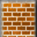
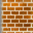
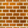

| [Top] | [Contents] | [Index] | [ ? ] |
This manual describes the internals of Enigma version 1.20, in particular how to build new levels using Lua and how to interact with the game engine.
| 1. Running Enigma | ||
| 2. Levelpack Basics | Addition and managing of levels in packs | |
| 3. Level Basics | Introduction to level description | |
| 4. Enigma Paradigm | Principles of world, objects and messages | |
| 5. Lua API | Describing a level with all its objects and interactions | |
| 6. Common Attributes and Messages | What all objects support | |
| 7. Floor Objects | ||
| 8. Item Objects | ||
| 9. Stone Objects | ||
| 10. Actor Objects | ||
| 11. Other Objects | Wires, Rubberbands and Gadgets | |
| 12. Libraries | Supplemental Functions and Features | |
| 13. Advanced Features | Resolvers, Scrolling, Flood, Fire, etc. | |
| 14. Extension Development | Resolver, Library Development | |
| 15. Guidelines and Hints | Tips and Recommendations for Levels to be included in Enigma | |
| 16. Compatibility | Engine Mode and Version Compatibility | |
| Object Index | ||
| Attribute Index | ||
| Message Index | ||
| Function Index | ||
| Concept Index | ||
| Renaming Index | Old API to new API translation hints |
| [ < ] | [ > ] | [ << ] | [ Up ] | [ >> ] | [Top] | [Contents] | [Index] | [ ? ] |
Hopefully, after successfully installing and playing some first levels, you may be interested in some information about how we have configured Enigma, how you can optimize Enigma to your needs, and the purpose of some options and attributes within Enigma.
This first chapter should give you some valuable information about these questions, and provide some basic knowledge you will need to manage level packs, levels or write your own levels, as described in the following chapters.
| 1.1 Locating Resources | ||
| 1.2 Startup Switches | ||
| 1.3 User Options | ||
| 1.4 Inventory Console | Command and document text history | |
| 1.5 Level Info | ||
| 1.6 Handicap and PAR | Background to score evaluation and HCP | |
| 1.7 User Sound Sets | How to create and install sound themes |
| [ < ] | [ > ] | [ << ] | [ Up ] | [ >> ] | [Top] | [Contents] | [Index] | [ ? ] |
For reasons of backup, system changes, special configurations, level additions and hopefully your own new levels, you may need to know where Enigma stores the resources and how you can control them.
Enigma maintains several paths for control of load and storage of files. You can list these paths either in the help submenu paths, or by starting Enigma with the switch ‘--log’ (see section Startup Switches) and looking at the console output.
This is the path to the file that stores your preferences concerning application
options. This file is usually located at your HOME directory. For HOME-less
Windows users, it is stored in the ‘Application Data\Enigma’ directory. Since it is the
third version in the history of Enigma, the file is named
‘.enigmarc.xml’ by default.
We recommend that you backup this file, although it contains only a few data that you can quickly reconfigure.
Since these preferences are quite specific for the operating system and configuration, you will use a different version on each Enigma installation you have.
Mainly for Enigma developers, a switch exists ‘--pref’ (see section Startup Switches) to rename this preferences file. By starting Enigma with a renamed preferences file, a developer can temporarily use a complete separate configuration for testing purposes without the danger of destroying his main configuration. The developer may use it to start Enigma with a plain standard configuration for testing purposes, too.
In all cases, a leading ‘.’ will hide the preferences filename.
This is the main path to the user’s Enigma data. All updates, user-installed levels and user- written levels, the user’s scores, history and usually the user’s screenshots and level previews, are stored at this path.
A backup of this directory is mandatory!
The standard location is the directory ‘.enigma’ in your HOME
directory. For HOME-less Windows users, it is the folder
‘%APPDATA%\Enigma’, what resolves to the subfolder
‘Application Data\Enigma’ on XP/2000 or ‘AppData\Roaming\Enigma’ on
Vista/Windows 7 located within your user data folder.
This standard location of the user path is the location of logging and error output files, too.
You can define your own path within the User Options. By doing so, you can store your Enigma user data on a memory stick or on a shared partition, and use them alternatively from two Enigma installations.
This is a second path to the user’s Enigma data, which you can use to access images such as screenshots and thumbnails of levels. Usually this path is identical to the main ‘User Path’.
Just in case you make many screenshots and have limited resources on the main ‘User Path’, you may want to store the images on another path. You can define your own path within the User Options.
This path gives you the location of all system resources that are distributed with Enigma. Here you will find the levels, libraries, etc. This is a first class address to look for examples if you start writing your own levels.
This is a list of paths. The program looks up each version-independent resource on all paths in this list, and loads from the first occurrence.
User data precedes system data; this way, updates on your user data path will win. Have a look at this list if you are observing a difference between a source and the runtime behavior. You may have looked at a file that another file had hidden on a preceding path in this list.
This path shows the directory that contains the localization data.
Please note that some resources, like levels, may be zipped. In this case, a resource that you expect to find at ‘dirname/filename’ may be stored in a zipfile named ‘dirname.zip’. The path of the file within the zip can be either ‘dirname/filename’ or ‘./filename’. In case a resource is provided in zipped and unzipped form, the plain file stored in a directory wins, since Enigma assumes it to be an update to the zip.
| [ < ] | [ > ] | [ << ] | [ Up ] | [ >> ] | [Top] | [Contents] | [Index] | [ ? ] |
Besides starting Enigma by clicking on an installation-provided icon or start menu entry, you can start Enigma from a shell or commandline. This allows you to add a selection of startup switches that are valid for just a single run.
For repeated usage of constant startup switches you can create an desktop icon or start menu entry and append the startup switch to the target string of the Enigma application executable.
The following list explains the supported user options. If an option is listed with a long name preceded by two minus signs, and with a one-character abbreviation preceded by one minus sign, use one of the notations, not both together; for example, ‘--data path’ or ‘-d path’.
A switch for Enigma developers that forces all debugging assertions, even expensive ones, to be evaluated. The additionally evaluated checks look like ‘ASSERT(noAssert || long_lasting_check(), XLevelRuntime, "remark");’.
A switch for Enigma developers that allows you to add an additional path to the resource paths that precedes the system path (see section Startup Switches). A developer can test an Enigma compilation, without installation, by calling it from the shell with the current working directory on the main directory via ‘src/Enigma -d ./data’.
Just lists the available startup switches to the output and terminate.
A switch that allows you to override any other language preference. The language is given in the common 2-character sequence as ‘fr’ for French or ‘ru’ for Russian.
This switch turns on logging of internal information to the standard output. Windows users will find an file called ‘Output.log’ in the standard ‘User Path’ folder. An additional file ‘Error.log’ lists severe error messages.
The output will, for example, list the paths described in Locating Resources.
A switch for Enigma developers that causes Enigma not to grab the mouse. You can hardly play a level in this mode, but it makes it possible to debug the application in its core parts.
Start Enigma without playing background music.
Start Enigma with sound being switched off.
The name of an alternative preferences file without the leading dot for hidden filenames. This switch is a pure Enigma developer support feature, as described in Locating Resources.
The path of an alternative directory that contains the standard named preference file ‘.enigmarc.xml’. If no preference file exists or the directory does not yet exist they are created. On creation of the preference file the user data path is set to the given dirpath per default. This allows to store all Enigma user data in a single directory that can be stored anywhere, e.g. on a USB stick. You always need to call Enigma with the above switch to use this new set up. Remember that a path with spaces needs to be quoted.
Redirect the ‘stdout’ and ‘stderr’ to files named ‘Output.log’
and ‘Error.log’ on the standard user path (see section Locating Resources).
For Windows this option is always true, but the usage of this option
is useful on any operating system if Enigma is started via a desktop icon or
a menu button.
Disable all connections to the internet. No automatic updates will take place and all user initiated requests that would require an internet connection will fail with an error message.
Show the framerate (FPS) during the game.
Just print the version number to the output and terminate.
Start Enigma in window mode instead of screen mode.
Enigma interprets all further arguments supplied on the commandline as level file addresses. You can use absolute or relative addresses to level files stored on your computer. Adding url’s to levels stored in the Internet is also possible.
A Unix user may start Enigma with the following command:
enigma --log ~/mylevel.xml http://somewhere.com/netlevel.xml
A Windows user may start Enigma from the command line (please adjust the Enigma installation path):
C:\Programs\Enigma\enigma.exe --log demo_simple.xml
You will find these levels in the levelpack called ‘Startup Levels’, which is only visible by default if you supplied levels on the commandline.
| [ < ] | [ > ] | [ << ] | [ Up ] | [ >> ] | [Top] | [Contents] | [Index] | [ ? ] |
Please retain this option on the value ‘Never’ until release of Enigma 1.00.
Enter your user name, which Enigma will attach to your scores. Please look at the Enigma home page for user names already in use and choose a new, unique name. You can change your user name at anytime without losing any of your scores.
This textfield allows you to define an arbitrary directory for your Enigma user data as described in Locating Resources.
Deletion of the string resets the path to the default.
Enigma activates the new path when you leave the options menu. Though it stores all files directly to the new path, and will still find files on the old path, you may want to quit Enigma immediately and first copy/merge the old directory to the new location. This copy of your old data is necessary, since with the next start, Enigma will locate user data at the new location exclusively.
This textfield allows you to define an arbitrary directory for your Enigma user image data as described in Locating Resources.
Deletion of the string resets the path to the default.
Enigma activates the new path when you leave the options menu. Though it has stored all files directly to the new path and files will still be found on the old path, you may want to quit Enigma immediately and first copy/merge the old directory to the new location. This copy of your old data is necessary, since with the next start, Enigma will locate user data at the new location exclusively.
| [ < ] | [ > ] | [ << ] | [ Up ] | [ >> ] | [Top] | [Contents] | [Index] | [ ? ] |
The lower right window area that usually shows the inventory items and scrolls the texts of activated document items allows the user to reread previous document texts, to enter textual commands and to reissue previous commands.
You can issue a command by usage of the keyboard. Just enter the command string and activate the command by a finishing <return> stroke. The following commands are supported:
List all public available commands.
Abort level and return to level selection menu. Same as <Alt X>
Just a joke.
List level developer cheat commands for fast testing.
Developer cheat that disables collisions between stones and marbles or pearls. Once used no score will be recorded if the level is successfully finished.
Restart level in easy difficulty mode.
Searches levels in all levelpacks that contain matching string in either the level’s title, author’s name or the file name.
Developer cheat that protects the actors assigned to the current player like the activation of an it_umbrella does. Once used no score will be recorded if the level is successfully finished.
Switch to world record hunting mode. Same as toggling the left most button in the level selection menu to the world icon.
Show info about level like the levelpack, position within levelpack, the file location, the title, author, version and the level internal id.
Directly start the given level. The levelpack is identified by its title. The
position is the number within the levelpack. E.g. jumpto Enigma IV,33.
Switch off the world record hunting mode. Same as toggling the left most button in the level selection menu to the marble icon.
Restart level in regular difficulty mode
Restart level in currently selected difficulty mode.
Kill actors, but continue level if possible. Same as <F3>.
Both, the commands and the displayed document text have a history. You recall the history by usage of the up and down arrows.
Starting with the inventory item display the up arrow shows the previously submitted commands. Just by another <return> you can reissue a command. The history will be resorted with the last command at the position direktly above the inventory. You can edit history commands anytime like you can insert a new command. If you do not finish a command by a <return> the string will still be recorded and presented as the first command above the inventory. The command history is persistent.
The document history can be recalled by usage of the down arrow. All level documents previously displayed can be redisplayed. Additionally the initial level info displayed on the level start can be read again.
Both histories revolve to the item inventory when the up or down keys are used beyond the oldest command or message.
| [ < ] | [ > ] | [ << ] | [ Up ] | [ >> ] | [Top] | [Contents] | [Index] | [ ? ] |
For every level, Enigma manages more data than can be displayed in the level menu. You can view them all with the levelinspector. You can call this special menu from within the level menu by right or control clicking on the level icon.
Besides title and author, Enigma provides information concerning a public rating of the level, different score values of interest, details on the level version, the level file location and more. Additionally, the levelinspector allows you to enter personal annotations for a level. You can review any screenshots you made for this level directly from the levelinspector, too.
| 1.5.1 Public Ratings | ||
| 1.5.2 Scores | ||
| 1.5.3 Versions | ||
| 1.5.4 Private Annotations and Ratings | ||
| 1.5.5 Screenshots |
| [ < ] | [ > ] | [ << ] | [ Up ] | [ >> ] | [Top] | [Contents] | [Index] | [ ? ] |
Most levels are rated within five different categories:
To distinguish the ratings from their everyday-meanings, we use the following abbreviations for the ratings. Each of these categories takes values between 1 (easy) and 5 (difficult), except kno, which can also be 6 (unique mechanism).
Please bear in mind that it’s not simple to retain the following definitions in each of nearly 750 cases, so there might be (will be) deviations from them in single levels.
Intelligence (int)
This rating is intended to measure the creativity, planning and analytic requirements needed to solve the level. Intelligence is a very difficult concept in itself, and thus at first not easy to rate or to grasp. Consequently, a fixed definition of the five rating-degrees not only helps, but is essential in the rating process. So, assume you know everything about the single elements of a level. Then ask yourself these questions:
High values for intelligence are typically puzzles. int-ratings do not accumulate; the most difficult puzzle itself already determines the rating.
Dexterity (dex)
You can solve many levels either by accuracy or by patience. In our context, we do not mean dexterity in the sense of accuracy to avoid impatience, but accuracy to avoid death. So it focuses on the lethal positions in a level, not only death-stones and abysses, but also casualties like pushing a stone accidentally into an unreachable corner.
In contrast to the int-rating, dex might accumulate: A level with many situations, each of dex 3, can add up to dex 4 or even 5. This way, you can achieve dex 5. Rotors in a level also contribute to dex and to the speed-rating, spe. Thus, levels with a high dex-spe-combination are mostly action-driven, whereas a high dex-pat-combination typically is a dangerous maze.
Patience (pat)
Patience is a relatively subjective rating, and refers mostly to “felt time”, how long it felt to complete the level. So two levels with same mechanics can have different pat-values, e.g., if one level has a nicer design or shows the progress of the level in some way, like the number of opened oxyds. It explicitly includes having to restart the level repeatedly; not the time in the lower left corner or the score is crucial, but the complete “felt time” needed to solve the level, starting from the first look at it.
A high number of oxyds can heighten the pat-value and also lower it: If the player has to traverse the level several times to open matching pairs of oxyds, it is definitely pat-heightening. However, if oxyds are arranged to mark the progress of the player, and act as a kind of small reward within the level, they can lower the pat-value. It’s the same with a high number of doors: The arrangement is the critical factor.
High pat-values are typically mazes. In combination with int 3, a high pat-value can indicate a hidden item or a hollow stone. pat-values involve the whole level, so they can’t accumulate.
Knowledge of Enigma (kno)
The kno-rating mostly takes on the function and interactions of single objects in the game, like stones, floors, items, and actors. However, in some cases it also deals with special techniques. The guideline is the “Advanced Tutorial”, which defines kno 3. kno 4 corresponds to standard objects that aren’t shown in the tutorial; kno 5 requires a deeper knowledge of the game internals. Finally, kno 6 indicates special mechanisms, that are seldom encountered or unique. The overall kno-rating of a level equals that of the most difficult object or technique (and thus is non-accumulative):
kno 6 does not necessarily mean that this level is difficult to understand; the unique mechanism or object might also be very intuitive, like in “Flood Gates”.
Speed and speed control (spe)
The spe-value corresponds not only to the maximum speed a level requires (like you need to run away from a rotor), but also the degree of control a player has over his mouse while moving it; excellent examples for this are “Mourning Palace” and the middle part of “Sacrifice”. This involves moving the mouse at a constant velocity for a long time, as well as correctly estimating the speed that’s needed in a certain task, like shattering a sheet of glass.
The spe-rating again is cumulative, since many slow rotors can add up to spe 3 or 4, or a combination of many slow time-switches to be pressed in a certain order can create a horrible task. In contrast to the other categories, for which the average is near 3 (or between 3 and 4 for kno), most levels are definitely spe 1. So, the spe-rating is more a supplement to the three core-ratings int, dex and pat.
Combinations of ratings
Sometimes, it can be interesting to have a single value to measure the difficulty of a level. To calculate such a universal rating, a simple possibility is choosing a linear combination of the 5 single ratings, weighted with appropriate weights. These weights should correspond to the difficulty a single category adds to the universal difficulty. Yet you should also choose these weights carefully to avoid number-theoretic obstructions (e.g., when all weights are even except for the spe-rating, then there will be a visible difference in the distribution of even and odd universal ratings, which can be very misleading). A working, and very interesting linear combination, is the following, which has been applied in the reordering process:
universal difficulty = 7*int + 6*dex + 4*pat + 3*kno + 4*spe - 23 |
This has a special property, in that it takes relatively broad and continuously distributed values between 1 (all ratings 1) and 100 (all ratings 5, kno 6) and emphasizes the most difficult categories, intelligence and dexterity. However, some very low or very high values cannot appear in this combination, such as 2 or 99. Other combinations lead to full but narrow, or to broad but noncontinuous spectra.
| [ < ] | [ > ] | [ << ] | [ Up ] | [ >> ] | [Top] | [Contents] | [Index] | [ ? ] |
The score columns show your and some comparison values for the difficult and for the easy mode, if the levels supports it.
The world record is the best score that was retransmitted to the Enigma team. The world record holders are listed below.
The PAR value is the “professional average rating” of the level. It is the harmonic average of all scores that Enigma players have retransmitted. However, we take into account only scores from players who have solved a certain number of levels. Opposed to the world record, which will be very difficult to gain, the PAR value is a much more realistic aim for an ambitious player. If you are equal or better than PAR, the levels are marked with a speeding blackball within the level menu.
The author’s value is another reference score. Most authors are not keen on holding the world record of their own levels. However, they will likely know the fastest way to solve the level. If your score is much higher than the author’s score, a simpler solution to solve the level may exist.
The solved number is the number of players who solved this level in the given score version.
The solved percentage is the relation of the number of players who solved this level to the number of players who retransmitted scores. Actually, we take into account only those players who could have solved the level. For example, players who did retransmit scores before the level was written, without updating afterwards, are not taken into account. A low percentage is a hint that a level is not easy to solve.
| [ < ] | [ > ] | [ << ] | [ Up ] | [ >> ] | [Top] | [Contents] | [Index] | [ ? ] |
The version column shows detailed information about the level. Read the chapter Level Basics node see section <version> and see section <modes> for an explanation of the values.
For you as a player, the ‘Score’ version number can be interesting. A level you had solved with a certain score may appear with a red triangle in the level menu in an updated Enigma release of the level. Although the level menu displays the medals showing that you solved the level, it will not display the score values anymore. This is due to an incompatible level update that requires a new solution with different, incomparable score values. The author will increase the score version number in such a case.
| [ < ] | [ > ] | [ << ] | [ Up ] | [ >> ] | [Top] | [Contents] | [Index] | [ ? ] |
This textfield allows you to enter an annotation for a level that you can review on later replays. Note that the current textfield is limited (it may not allow you to enter all characters, and needs the mouse cursor to remain within its boundaries). Yet it should work for entering short annotations that may be very useful later.
Enigma stores annotations in your private applications ‘state.xml’ file. It permits one annotation per level, independent of the level version.
You may rate the levels, too. Just click on the ratings button. Values go from 0 to 10 with an additional ‘-’ for abstention. 0 stands for a poor level that you think is not worth playing, 5 for an average level and 10 for the ultimate, best levels. Try to use all values in your ratings.
Enigma stores the ratings with the scores and evaluates them anonymously. Enigma displays the resulting average rating of all users, for your information. Note that different ratings are possible for different score versions of the same level, because levels may improve as a result of suggestions by users. If you do not re-rate a new version of a level, Enigma inherits your rating from a previous version.
| [ < ] | [ > ] | [ << ] | [ Up ] | [ >> ] | [Top] | [Contents] | [Index] | [ ? ] |
While playing a level, you can make screenshots by pressing <F10>. You can make several screenshots in sequence for documentation purposes. Enigma will store each with a unique image filename. Using the level inspector, you can view the screenshots directly from within Enigma. Just click on the screenshot button to view the first image.
Because any buttons would disturb the view of a screenshot, all functions are keyboard commands. Press <F1> to get a help screen. <ESC> returns to the level inspector. <Page Up> and <Page Down> will show the previous and next screenshot. If you scroll down behind the last screenshot, the “missing” screenshot file is named. This may be a useful hint as to where to search the other screenshot files on your ‘user image path’ (see section Locating Resources).
| [ < ] | [ > ] | [ << ] | [ Up ] | [ >> ] | [Top] | [Contents] | [Index] | [ ? ] |
As PAR (see section Scores) describes the difficulty of a level, the handicap ‘hcp’ describes your ability to solve levels in PAR. The handicap is always related to a levelpack or group of levelpacks. You can see your handicap for each levelpack in the level menu, if you select the PAR mode by clicking on the lower left button until the speeding black marble appears. The value is displayed in the upper right corner, with the number of levels you solved in PAR.
The handicap is similar to the golfer’s handicap. A low value is better than a high value. If you solve all levels exactly in PAR, your handicap will be 0. If you are even better than PAR, your handicap will be negative. Players can use this value to compare their overall abilities.
Just for those of you that want to know the details of this score rating system of PAR and handicap, here is some additional information, which others may skip and continue with the next chapter Levelpack Basics.
We request all users to send their scores. All scores are evaluated for world records and counts of level solution rates and numbers.
However, for the PAR calculation, we take into account only scores from users who have solved more than a certain percentage of levels (currently about 10% of the levels). For every level, we calculate the harmonic average of the scores of these ‘professionals’. We take professionals who did not solve a level into account with the 10-fold world record score. The harmonic average calculates as
harm.avg. = N / (sum_[j=1..N] 1/score_j) )
It weights small (short) times with a greater weight than large (long) solution times.
The handicap is a sum of values that describe your scores in relationship to the PAR value of a level. Since it has to take into account that you have no score at all or that no PAR value exists, we apply some exception rules to the addends:
| • | + 1.0 | for each unsolved level |
| • | + log10(score/par) | for each solved level with existing par if score >= par |
| • | + 0.7 | as upper limit for each solved level with existing par if score >= par |
| • | + log2(score/par) | for each solved level with existing par if score < par |
| • | - 3.0 | as lower limit and as value for levels without par |
Note that each score that is better than PAR results in a negative addend and thus reduces your handicap. For a levelpack with 100 levels, the handicap will be in the range of +100 to -300. For levelpacks with more or fewer levels, Enigma will scale the sum by a factor 100/size to result in comparable handicap values. Handicaps are stated with one digit behind the decimal point.
| [ < ] | [ > ] | [ << ] | [ Up ] | [ >> ] | [Top] | [Contents] | [Index] | [ ? ] |
(The following information accounts only for Enigma 1.01 and above.) Sound effects are triggered by so-called ‘sound events’. These sound events usually have a name (like ‘dooropen’) and an associated location (the coordinates of the door) which affects the way a sound effect is played. The collection of all sound files, their assignment to sound events, and some additional information how to play them is called a ‘sound set’.
You can use own sound files to create own sound sets for Enigma, and choose among them in the options menu (entry ‘Sound set’). You can distribute these sound sets under your own choice of license and install sound sets from other users. There is no internal limit for the number of installed sound sets.
The sound event is converted into a real sound effect using tables, you can find such tables in the ‘data/sound-defaults.lua’ file and in the empty sample file at ‘reference/soundset.lua’. Each entry in these tables is either a string like ‘enigma/st-coinslot’, which is interpreted as the file ‘soundsets/enigma/st-coinslot.wav’ with some default properties, or a list of sound attributes enclosed in curly braces. Sound events triggered by a sound message are converted the same way. Here is an example of such an entry:
dooropen = { file="my_soundset/open-door", volume=0.9, priority=4 },
|
The meaning of these attributes is as follows:
To design a new sound set, proceed as follows:
(user path)/soundsets/my_sounds/
/soundset.lua
/high_pitch.wav
/soundfile_13.wav
...
|
...
coinsloton = { file="enigma/st-coinslot" },
...
|
When using own sound files, remember to add the subfolder, like in
...
coinsloton = { file="my_sounds/soundfile_13" },
...
|
No extension ".wav"! It’s added automatically. Make sure that the extension is in lower case letters.
Remember to choose the sound set in the options menu anew each time you change its name. And always shut down Enigma before changing sound sets, new sounds are not recognized during runtime.
Feel free to zip and distribute the whole directory containing your sounds and the ‘soundset.lua’ file. You can install a downloaded zipped sound set simply by unpacking it and placing it into the ‘soundsets’-subdirectory of your user path. Make sure that the ‘soundset.lua’ is always exactly one subdirectory below ‘soundsets’. Deinstall a user sound set simply by deleting its directory. Renaming the directory does not suffice – you have to rename the ‘soundset.lua’ if you want to hide a sound set from Enigma. This can be advantageous if you use interdependent sound sets (sound sets that share sound files) and want to deactivate just one of them.
| [ < ] | [ > ] | [ << ] | [ Up ] | [ >> ] | [Top] | [Contents] | [Index] | [ ? ] |
Knowing the basics of running Enigma, you may wonder how levels are organized in levelpacks and how you can add levels or complete levelpacks to Enigma.
Levelpacks are sorted collections of levels that consist of an index and optional attached level sources. Not all level sources of a levelpack have to be included within the levelpack itself. A levelpack can crossreference levels stored in other levelpacks. If a levelpack has no level sources of its own and consists only of crossreferences, we speak of a crossindex, since just a single index file represents the levelpack.
These definitions suit all versions of Enigma well. However, up to Enigma 0.92, levelpacks needed to be manually edited, and the registration of levelpacks was a little bit cryptic. Thus, we decided to rewrite the complete levelpack system for Enigma 1.0, and tried to make it versatile and easy to use. We did set up the following aims:
Some of these features work seamlessly. You can use them immediately from the levelpack menu. For others, you may need to know where to place files. We will explain these details in the following sections:
| [ < ] | [ > ] | [ << ] | [ Up ] | [ >> ] | [Top] | [Contents] | [Index] | [ ? ] |
One of the outstanding features of Enigma is its extensibility by new levels. And the community of users usually provides us several new great levels every week.
Adding a new level that you receive as an XML file is very simple. Locate the subdirectory ‘levels/auto’ on your ‘user path’ (see section Locating Resources). Just copy the level file to this folder and restart Enigma. The new level will be part of the ‘Auto’ levelpack, and you can play it like any other level.
Please note that Enigma displays erroneous or incompatible levels with an error icon in the level menu. Of course an attempt to run such a level will result in an error message. Look at the level metadata with the levelinspector (see section Level Info) to identify the required compatibility version, and contact the author via the address in case of level code errors.
A second way to run new levels is to add the address of the level files to the commandline (see section Startup Switches). This way you can play levels that are stored anywhere, and you may even use url addresses of levels stored on the internet. Levels added to the commandline are accessible via the ‘Startup Levels’ levelpack.
If you want to run an old-fashioned Lua level that someone wrote for Enigma 0.92 or earlier, you may try to start it via the commandline. These old levels miss necessary metadata for auto detection. However, commandline-supplied levels are treated as temporary levels available just for a single run of Enigma; reasonable defaults substitute the missing data. The level will probably run, but scoring and copy, paste and linking of such levels is not possible.
Besides single new levels, the community may provide you with complete levelpacks, too. These levelpacks may occur as directories with levels, zip archives or single XML files. You can install all of them simply by copying the files, but we have to distinguish the three formats.
You must copy levelpacks distributed as directories, with level files and an index file in them, to the subdirectory ‘levels’ on your ‘user path’ (see section Locating Resources).
You must copy levelpacks distributed as zip archives to the subdirectory ‘levels’ on your ‘user path’. You do not need to unpack the zip, although it is possible, as described in the section Zip Levelpacks.
You must copy levelpacks that are distributed as a single XML index file to the subdirectory ‘levels/cross’ on your ‘user path’.
All new levelpacks should be accessible via the levelpack menu after restarting Enigma.
That is all you need to know to be able to add new levels and levelpacks for testing and playing. If your main interest lies in writing your own levels, you may want to proceed directly to chapter Level Basics. The rest of this chapter explains how to arrange and sort existing levels in your own levelpacks.
| [ < ] | [ > ] | [ << ] | [ Up ] | [ >> ] | [Top] | [Contents] | [Index] | [ ? ] |
With the changes of the levelpack index format, converting old levelpacks is necessary. Although the main work is done automatically just by starting Enigma, a few special cases remain that need manual preparation. Further on, after the autoconversion, some cleanup may be useful.
If you formerly maintained your levelpacks within the Enigma system levels directory, you should now copy your own levelpacks from the old Enigma version to the ‘user path’ subdir ‘levels’ (see section Locating Resources). The ‘user path’ exists on all systems, and since Enigma 1.00 will never write to the system levels directory, it will perform updates and conversions only on the ‘user path’. If you registered your levelpacks on the system levels directory within the ‘index.lua’ file, you need to copy these registration lines to the ‘index_user.lua’ file, which you should store on your ‘user path’.
If you maintained several of your own levelpacks, Enigma 0.92 allowed you to keep them in several subdirectories of the ‘levels’ directory. However, since it also allowed you to keep all level files and different indices in the ‘levels’ directory itself, you will run into trouble with the auto conversion, because Enigma 1.00 allows only one levelpack with attached level files per directory. In this case, we recommend a step-by-step conversion: in every step, provide only one old index for conversion. Enigma will convert this index to a new ‘index.xml’. Move this new index, together with all levels, to a subdirectory and convert the next levelpack.
A last special case occurs if you had an old index stored in ‘levels’ that referenced level files in different subdirectories of ‘levels’. Since Enigma 0.92 did not have a concept of cross-references, and Enigma 1.00 requires that you store all level files attached to a levelpack in a single subdirectory, the conversion algorithm needs to guess the correct subdirectory. It simply takes the subdirectory of the first level. If this does not fit, you may need to clean up your 0.92 levelpack prior to conversion.
Enigma should convert all other standard levelpacks without problems. It only performs the conversion once. As soon as the new ‘index.xml’ exists, only this index is used. Thus, after a careful check, you may remove the old ‘index.txt’. We recommend keeping a backup of the old index until you have completely switched to Enigma 1.00.
If you used a levelpack of your own in the zip format, you will find a subdirectory named with the base name of the zip archive in your user ‘levels’ directory. Enigma stores the converted ‘index.xml’ within this directory. You may want to exchange the old ‘index.txt’ in the zip with the new index. Afterwards you can delete the subdirectory, since Enigma will load the index directly from the zip archive.
After converting your levelpacks, we strongly recommend that you update your own levels to the new XML format, as described in Level Basics.
| [ < ] | [ > ] | [ << ] | [ Up ] | [ >> ] | [Top] | [Contents] | [Index] | [ ? ] |
Besides the classic levelpack format of a subdirectory of ‘levels’ with an ‘index.xml’ and several level files, Enigma 1.00 provides a compatible zip archive format. This zip allows you to reduce resources and to ease distribution of levelpacks.
The compatibility is 100%. If you have a classic subdirectory levelpack, you can simply zip the complete subdirectory and name the zip with the name of the subdirectory, plus the standard ‘.zip’ suffix. Now you can completely remove the subdirectory; Enigma autodetects the levelpack and it is fully playable. Even cross-references into this levelpack will not be broken!
On the other hand, Enigma allows you to expand every zip levelpack to a subdirectory with index and level files. Again, everything runs and no cross-references are broken.
If you keep both, the files contained in the subdirectory precede files in the zip archive. Thus, Enigma stores updates of single files in subdirectories in parallel to existing zip archives.
| [ < ] | [ > ] | [ << ] | [ Up ] | [ >> ] | [Top] | [Contents] | [Index] | [ ? ] |
As the number of levelpacks increased, it became necessary to sort and group the levelpacks in the menu. We tried to provide a useful set of default groups and default assignment of the distributed levelpacks to these groups:
Still, this is just a proposal. You are free to rename the groups, add new groups and change the assignments of the levelpacks. As in other parts of Enigma, you can right or control click on the group and levelpack buttons.
The group configuration menu allows you to rename and reposition a group. You can choose any name that is not a duplicate, that is not enclosed in square brackets and differs from ‘Every Group’. Note that you may not be able to enter as many characters as you are used to. Sorry for this inconvenience.
The levelpack configuration menu allows you to assign a pack to a group. The group list contains two special entries: ‘[Every Group]’ and another name enclosed in square brackets. Selecting the first pseudogroup displays the levelpack in every group. This is the default assignment of the ‘Startup Levels’ group. The second square bracket-enclosed name is the default group of the levelpack itself. It is a hint for you and allows you to reassign a levelpack to the default group even if meanwhile you have deleted the group.
| [ < ] | [ > ] | [ << ] | [ Up ] | [ >> ] | [Top] | [Contents] | [Index] | [ ? ] |
To create a new levelpack, you simply select the group to which you want to add the new pack. This is most likely the ‘User’ group. Right or ctrl click on the group and simply click on the ‘New Levelpack’ button. Enigma will call the levelpack configuration menu, which allows you to enter all the important data for the creation of a levelpack.
First you should enter a name for the levelpack. You are limited to characters that can be used for filenames, too. You may use alphanumerical characters A-Z, a-z, 0-9 and space, underscore and hyphen. Note that you may rename the pack later for a better or more suitable display name (see section Modifying and Deleting Levelpacks).
Later, you should decide whether you want a levelpack that can contain level sources or just a crossreference levelpack. The first one is useful for storing your own self-written levels or levels that you download from the internet. You may use the crossreference levelpacks for your favorite collections, where you simply reference existing levels of other levelpacks with your own personal sorting. You set the selected type with the ‘Level types’ button, which uses symbols for references and carbon copies.
The ‘Default Location’ is a number that determines the sorting location within levelpack groups, if you have not resorted the levelpack manually (see section Grouping and Sorting Levelpacks). This default value is relevant only if you distribute your levelpack and want to ensure that the users will find your levelpack at a proper location. The value given after creating a new levelpack should work well in most circumstances.
You may declare yourself as owner or creator of the levelpack. This is just a string for identification purposes.
Finally, when you have completed the configuration, you can create the levelpack by clicking ‘OK’. Enigma will create the levelpack on your ‘userpath’ (see section Locating Resources).
If you decide not to create a new levelpack, just click ‘Undo’. Enigma will not create or change anything in this case.
If you want to set up the new levelpack immediately, you can click directly on ‘Compose Pack’. Enigma will create the levelpack, and you can use the composer to fill it with levels.
| [ < ] | [ > ] | [ << ] | [ Up ] | [ >> ] | [Top] | [Contents] | [Index] | [ ? ] |
To modify a levelpack, right or ctrl click on its button in the levelpack menu. You will see the metadata for all levelpacks. However, an ‘Edit Metadata’ button will appear only for your own levelpacks, which Enigma stores on your ‘userpath’. Clicking on it allows you to edit the metadata.
Renaming the levelpack is possible, but Enigma will not change the filenames anymore. It will use the new name as the logical levelpack name that shows up in Enigma.
Other attributes that you can modify include the ‘Default Location’ and the ‘Owner’.
Note that changing the levelpack type later is not possible. You must create a new levelpack of the proper type and copy the levels by using Composing Levelpacks.
We do not provide a levelpack deletion function to avoid unintended loss of levelsources. Still, the deletion of a levelpack is as simple as deleting the complete levelpack directory on your ‘userpath’. For crossreference levelpacks, you simply need to delete the index XML file on the ‘levels/cross’ subdirectory of your ‘userpath’.
| [ < ] | [ > ] | [ << ] | [ Up ] | [ >> ] | [Top] | [Contents] | [Index] | [ ? ] |
You can change the levels of a levelpack by using the levelpack composer. You call it by right or ctrl clicking on the levelpack button in the levelpack menu, then clicking on the ‘Compose Pack’ button in the levelpack configuration menu.
The composer looks similar to the levelmenu, but it provides other functionality. Enigma lists all commands in the F1 help menu. First, if you compose your own levelpacks, you may note that the levels are bordered red. This is a warning, since you can modify these levelpacks. System levelpacks (the distributed Enigma levelpacks) will border the levels in gray, since you can use the composer only for copying levels to the clipboard.
The clipboard allows you to select levels in one or several levelpacks and to insert these levels as reference or as copy to your own levelpacks. First, clear the clipboard by ‘Shift delete’. Then select any levelpack you want from within the composer levels. Add them by ‘Shift click’. They will appear in the upper text lines in the composer. Return to the levelpack where you want to add the levels. Select the level behind which you want to add the levels. Use ‘F8’ to insert the levels of the clipboard as references. If you edit a levelpack that can take level copies, you may use ‘F9’ to insert the levels of the clipboard as file copies.
As soon as you modify the levelpack, a small red triangle in the upper left corner signals the modification. Leaving the composer via the ‘OK’ button finalizes all changes. Leaving the composer via the‘Undo’ button reverts all changes.
Besides adding levels, you can delete levels by using the ‘delete’ button. Note that Enigma will delete the level files themselves if you delete a level that is not just a reference. Be careful with all levels that have the document icon on their preview. You can revert deletions with the ‘Undo’ button.
You can resort all levels with the ‘alt left arrow’ and ‘alt right arrow’. The new sorting appears immediately, and you can save it by using the ‘OK’ button.
You can use the ‘F5’ button to update the index from the levels. This is very useful if you edit levels yourself. The levelpack will notice changes in title, revision, easy mode support etc. Enigma updates all levels of the levelpack at once.
By using the Auto levelpack and the composer, you can set up levelpacks of your own levels, as follows: Create a new levelpack, add the level files to the ‘auto’ folder, restart Enigma, add the levels from the ‘auto’ folder to the clipboard, use the composer to insert the levelpack to your levelpack as a copy, and delete the unused level file copies from the ‘auto’ folder.
| [ < ] | [ > ] | [ << ] | [ Up ] | [ >> ] | [Top] | [Contents] | [Index] | [ ? ] |
Now that you have played some levels of Enigma, you may have noticed that Enigma is quite a dynamic game with versatile levels. Thus, it is not astonishing that it is impossible to describe such levels with a static approach of a simple object map like Sokoban. Some levels, like mazes, generate their layout and look different each time you play them. Other levels provide a dynamic behavior during the play; i.e., switches may open doors only in certain circumstances. To comply with these demands, we have integrated the powerful lightweight C extension language Lua as of version 5.1.4 into Enigma.
Up to Enigma 0.92, two different level formats did exist. One was a XML-like format, primarily designed for external level editor programs. Because its static object map description part was inconvenient for manual editing, many authors never used it. The second format was plain Lua code that used an interface of Enigma Lua functions to add objects and callback functions. Nearly all authors used this second format, but it had a small drawback: you could store metadata for the level (like the author name, license info, and last but not least, the level name itself) only as unformatted Lua comments, and you had to reinsert it manually into the level-package indices.
With the post-0.92 XMLification of Enigma, we achieved full XML support by integrating Apache Xerces, and were wondering how to get rid of the old level format drawbacks and how to add some compelling new features:
Let us have a first view on complete simple ‘Hello World’ level in the new format:
<?xml version="1.0" encoding="UTF-8" standalone="no" ?>
<el:level xmlns:xsi="http://www.w3.org/2001/XMLSchema-instance" xsi:schemaLocation="http://enigma-game.org/schema/level/1 level.xsd" xmlns:el="http://enigma-game.org/schema/level/1">
<el:protected >
<el:info el:type="level">
<el:identity el:title="Demo Simple" el:id="20060210ral001"/>
<el:version el:score="1" el:release="1" el:revision="2" el:status="stable"/>
<el:author el:name="Ronald Lamprecht"/>
<el:copyright>Copyright © 2006,2009 Ronald Lamprecht</el:copyright>
<el:license el:type="GPL v2.0 or above" el:open="true"/>
<el:compatibility el:enigma="1.10"/>
<el:modes el:easy="false" el:single="true" el:network="false"/>
<el:score el:easy="-" el:difficult="-"/>
</el:info>
<el:luamain><![CDATA[
ti[" "] = {"fl_lawn_b"}
ti["#"] = {"st_box"}
ti["o"] = {"st_oxyd"}
ti["@"] = {"#ac_marble"}
wo(ti, " ", {
"####################",
"# #",
"# o @ o #",
"# #",
"####################",
})
]]></el:luamain>
<el:i18n/>
</el:protected>
</el:level>
|
You may notice that the XML portion contains all the metadata that the level author is accustomed to supplying with a level. The XML part is like a formula that you can copy from a template and fill out.
The Lua code is embedded in the XML. The only limitation to the Lua portion is that it reserves ‘]]>’ for the end mark, and you would have to substitute it with ‘]] >’. No further restrictions.
Since the example above includes all mandatory XML parts, we should achieve our aim to avoid major changes for Lua level authors.
You can find the example above in the ‘Exp’ levelpack grouped in ‘Development’. The source code is located on the system path subdirectory ‘levels/enigma_experimental’ (see section Locating Resources).
If you make your first coding experiments on a copy of this level, either add your copy to the auto folder (see section Getting Started with Levelpacks), or use it as an argument on the command line (see section Startup Switches).
Of course we must look at the details of the format and explain the optional parts:
| 3.1 Getting Started with Levels | ||
| 3.2 XML Level structure | ||
| 3.3 Info metadata | ||
| 3.4 LUA code | ||
| 3.5 Internationalization (i18n) | ||
| 3.6 Usage | ||
| 3.7 Update and Upgrade | ||
| 3.8 Library Files | ||
| 3.9 Multilevel Files |
| [ < ] | [ > ] | [ << ] | [ Up ] | [ >> ] | [Top] | [Contents] | [Index] | [ ? ] |
Most likely you are keen on understanding the basic principles of placing objects in a level. Here is a very simple level description that can also serve as a starting-point for new landscapes. (In fact, this is the first welcome level in levelpack Enigma I, so you can try it out right away.)
1 ti[" "] = {"fl_gravel"}
2 ti["#"] = {"st_box"}
3 ti["O"] = {"st_oxyd"}
4 if wo["IsDifficult"] then
5 ti["Q"] = {"st_quake", name="quake"}
6 ti["T"] = {"st_timer", interval=10.0, target="quake"}
7 else
8 ti["Q"] = ti[" "]
9 ti["T"] = ti[" "]
10 end
11 ti["@"] = {"ac_marble_black", 0.0, 0.5}
11
12 wo(ti, " ", {
13 "####################",
14 "# #",
15 "# #",
16 "# O O #",
17 "# @ #",
18 "# #",
19 "# QT #",
20 "# #",
21 "# #",
22 "# O O #",
23 "# #",
24 "# #",
25 "####################"})
|
The resulting level looks like this inside the game:

Let’s now turn to a line-by-line analysis of this program:
1 ti[" "] = {"fl_gravel"}
2 ti["#"] = {"st_box"}
3 ti["O"] = {"st_oxyd"}
|
First we declare some keys for objects we like to use in our level map. We just add each key to our ti tiles repository and assign an object tile description that consists of the object kind name in these simple cases. The two character prefix of the kind name shows us the basic object type like floor, item, stone, actor, etc.
4 if wo["IsDifficult"] then
5 ti["Q"] = {"st_quake", name="quake"}
6 ti["T"] = {"st_timer", interval=10.0, target="quake"}
7 else
8 ti["Q"] = ti[" "]
9 ti["T"] = ti[" "]
10 end
|
The welcome level provides two modes, the regular difficult one and an easy one. As the regular difficult one differs just in two additional stones we add two mode specific tile declarations.
In the difficult mode we assign two stone definitions. Each provides the stone kind and additional attributes. The ‘st_quake’ is the stone that closes oxyd stones when being hit or toggled. We just name it, to be able to reference it later on. The second stone is a timer that should get active every 10 seconds and should send a toggle message to its target, our oxyd closing ‘st_quake’. As we did name this stone we can reference it here as target by its name.
11 ti["@"] = {"ac_marble_black", 0.0, 0.5}
|
Now we just need to declare our actor. It is a black marble that should not be placed at the left upper corner of a grid but in the mid of the left border of a tile grid. Actually we just want to center it within the level. As a one screen sized level has the extension of 20 x 13 we need the offsets given above.
12 wo(ti, " ", {
13 "####################",
14 "# #",
15 "# #",
16 "# O O #",
17 "# @ #",
18 "# #",
19 "# QT #",
20 "# #",
21 "# #",
22 "# O O #",
23 "# #",
24 "# #",
25 "####################"})
|
Now we can create the world simply by providing a map. We just need to call ‘wo’, our world handle, provide it our tile resolver, the key of the default floor and a map of tile keys.
You will find all conceptional background information in chapter Enigma Paradigm and more examples and syntax information in chapter Lua API. But first you should take the time to get aware of the XML based level metadata.
| [ < ] | [ > ] | [ << ] | [ Up ] | [ >> ] | [Top] | [Contents] | [Index] | [ ? ] |
Let us start with a complete overview of all existing top XML element nodes. The following level skeleton contains optional elements that are beyond level basics. We include these elements for completeness:
<?xml version="1.0" encoding="UTF-8" standalone="no" ?>
<el:level xmlns:xsi="http://www.w3.org/2001/XMLSchema-instance" xsi:schemaLocation="http://enigma-game.org/schema/level/1 level.xsd http://enigma-game.org/schema/editor editor.xsd" xmlns:el="http://enigma-game.org/schema/level/1" xmlns:ee="http://enigma-game.org/schema/editor">
<el:protected>
<el:info el:type="level">
<!-- required elements omitted -->
</el:info>
<el:elements/>
<el:luamain><![CDATA[
]]></el:luamain>
<ee:editor/>
<el:i18n/>
</el:protected>
<el:public>
<el:i18n/>
<el:upgrade/>
</el:public>
</el:level>
|
The first line is the XML declaration. It is fixed besides the encoding specification. Enigma supports on all platforms, at least ‘US-ASCII’, ‘UTF-8’, ‘UTF-16’, ‘ISO-8859-1’, ‘windows-1252’. Enter your encoding and make sure that your editor saves the level in this encoding. On some editors, you can start in ASCII mode, copy the level skeleton with a different encoding declaration, like UTF-8, save the level still in ASCII mode and reopen the file. The editor may then detect the XML declaration and switch automatically to the given encoding. Note that unless you enter international strings in the level, you do not have to bother with the encoding at all. You can choose UTF-8 in this case.
Some additional remarks for XML newbies: The XML markup tags are quite similar to HTML. But XML requires a corresponding end tag ‘</element>’ for each start tag ‘<element>’. For elements that have only attributes and no content, you can and should use the alternative empty element notation ‘<element/>’. Note that when we define an element as empty or state that no content is allowed, not a single whitespace, not even a linebreak is allowed between start and end tag. Use the empty element notation to avoid mistakes.
We use a pretty printing format with an indentation of 2. Each element starts on a separate line. Elements with text content have the end tag on the same line. Only elements with subelements have the end tag on a separate line with the same indentation.
This format is not mandatory. You can even insert linebreaks in text contents, within the marks, and even within attribute values. But note: The basic rule is that each linebreak will be substituted by a space during the XML parsing. Take this space into account to avoid mistakes, or simply live with the long lines.
A namespace identifier prefixes all tag names and attribute names. We use ‘el’ as an abbreviation for Enigma levels. All tag names you can manually edit use this prefix.
Finally, a short comment on the XML reserved characters, ‘&’ and ‘<’. These two characters are reserved as tag and entity starting characters. If you need them in text contents or in attribute values, you must substitute them by the entity sequences ‘&’ and ‘<’. Additionally, you must enclose attribute values with either ‘"’ or ‘'’. Of course, you must substitute the enclosing character used in attribute values, too. Use ‘"’ and ‘&apos’.
Elements:
This is the root node. Only one instance of this node occurs per file. Like the first XML declaration line, this second line is quite fixed. There are two versions. The simple 3-attribute version, as used in the first example, and only level editor programs use the 4-attribute version as above. For manual level editing, just copy the simple version as the second line to your level file.
Attributes:
Namespace definition for the schema. The contents are fixed to “http://www.w3.org/2001/XMLSchema-instance”. The attribute tag ‘xsi’ must match the prefix of the next attribute tag, and is standard.
Location of the schemas used. The contents are the fixed Enigma level namespace, followed by the schema location URL. Level editor programs will add their namespace and their schema location URL, as in the second example above.
Namespace definition for “Enigma level”. We use ‘el’ as the namespace prefix for all level element and attribute tags, as standard. The prefix used can be arbitrary, but must match this attributes tag. The contents of the attribute is fixed to the Enigma level namespace.
Only level editor programs use this last namespace definition. For example, we declared ‘ee’ as the namespace prefix for all editor element and attribute tags. The prefix you use can be arbitrary, but must match this attributes tag. The contents of the attribute are the editor’s namespace.
The protected node section contains all level data that derive from the author and should not be modified by anyone else.
The info node section contains all level metadata. It is mandatory and described in detail at section Info metadata.
The elements node section is optional. It contains level description parts that are given in a data-driven manner. Though the driving force is the support for level editor programs, a level author may use any parts of this section he or she likes.
The luamain node section is the part to insert manually Lua level descriptions. It is described in detail at section LUA code.
The editor node section is an open extension area for level editor programs. They can add any additional information in this section that they need. Enigma simply ignores this node section.
The i18n node section contains English strings, native translations and comments supplied by the author for the translators. This node section is mandatory and described in detail at section Internationalization (i18n).
This public node section is an optional extension to the protected part. It contains information that the author has not validated and may even be added after the last author’s review.
This public i18n section contains further translations supplied for the level. They may derive from the author or other sources. The translators will validate these translations, and they continue in use if the translators do not supply corrected versions. See Internationalization (i18n).
This upgrade node is part of the Update and Upgrade system.
| [ < ] | [ > ] | [ << ] | [ Up ] | [ >> ] | [Top] | [Contents] | [Index] | [ ? ] |
The Info node contains all author-supplied metadata for the level. This is the source of these data. All other parts of Enigma, such as level indices, simply contain copies that will be automatically updated to the level’s original data.
Let us look at all supported subnodes of info with typically used attributes:
<el:info el:type="level"> <el:identity el:title="Demo I18N" el:subtitle="Translate or let it be translated" el:id="20060211ral002"/> <el:version el:score="1" el:release="1" el:revision="0" el:status="experimental"/> <el:author el:name="Ronald Lamprecht" el:email="ral@users.berlios.de"/> <el:copyright>Copyright © 2006 Ronald Lamprecht</el:copyright> <el:license el:type="GPL v2.0 or above" el:open="true"/> <el:compatibility el:enigma="0.92"/> <el:modes el:easy="false" el:single="true" el:network="false"/> <el:comments/> <el:update el:url="http://…"/> <el:upgrade el:url="http://…" el:release="2"/> <el:score el:easy="-" el:difficult="-"/> </el:info> |
Attributes:
"level", "library", "multilevel"You may use the schema for single Enigma levels, libraries that contain level description parts for reuse, and descriptions for multiple levels at once.
‘level’ are all single level descriptions. It does not matter if you edit them manually or with a level editor program, or which description elements you use.
‘library’ are level description parts that may be included in levels. Library Files consist simply of Lua code in the luamain node. Libraries may make use of nearly all nodes besides the ‘/level/protected/info/score’ and ‘/level/*/i18n’, which both must be provided, but will not be evaluated. Libraries are included in levels via the dependency node-element. See <compatibility>.
‘multilevel’ are descriptions for multiple levels at once. The main purpose is to support foreign game level formats, like the Sokoban level format, which usually describes a whole set of level maps in a single file (see section Multilevel Files).
The number of levels contained in a multilevel file (see section Multilevel Files).
Contents - Elements:
The title, subtitle and the main level identification string. See <identity>.
All aspects of the level <version>.
All information provided about the author him- or herself. See <author>.
The <copyright> message for the level.
Information about the <license> conditions.
All information about <compatibility> to Enigma releases, dependencies from libraries, external data and the editor program that generated the level.
The <modes> that the level supports, such as difficulty, network and control.
Optional comments, such as credits, dedication and code comments. See <comments>.
The author’s own <score> of this level.
| 3.3.1 <identity> | ||
| 3.3.2 <version> | ||
| 3.3.3 <author> | ||
| 3.3.4 <copyright> | ||
| 3.3.5 <license> | ||
| 3.3.6 <compatibility> | ||
| 3.3.7 <modes> | ||
| 3.3.8 <comments> | ||
| 3.3.9 <score> |
| [ < ] | [ > ] | [ << ] | [ Up ] | [ >> ] | [Top] | [Contents] | [Index] | [ ? ] |
The ‘identity’ element is required, since it provides the information for human and system identification of the level.
<el:identity el:title="Demo I18N" el:subtitle="Translate or let it be translated" el:id="20060211ral002"/> |
Attributes:
The English title of the level. The string can contain arbitrary characters that are displayable by Enigma’s font and XML conformant. Just in case of Multilevel Files a trailing hash sign has a special meaning. Anyway please make sure that the title is not too long, since Enigma will use it on the level selection menu. Translations of the title can be provided in the Internationalization (i18n) sections.
An optional English subtitle. Used for title parts that are too long for the main title, or for a short first hint. Enigma displays the subtitle on the level info page and on the start of the level. Translations of the subtitle can be provided in the Internationalization (i18n) sections.
This is the central system identification string of the level that remains valid for all time, independent of upcoming release updates. The id string should not contain spaces, braces and wildcard characters, that means no character out of ‘*? ()[]{}’. Enigma’s main demand on the id is that it is unique among all levels created by all authors around the world and that it does not end on a closing square bracket.
Since you can edit levels with any text editor or different special Enigma level editors, there is no control about the uniqueness. Thus, we have to provide a simple convention to avoid any possible id clashes:
YYYYMMDDuserNNN
Where ‘YYYY’,‘MM’,‘DD’ is the date of the creation of the first experimental version, ‘user’ stands for a user-specific name and ‘NNN’ for a random number. For example, my level called ‘Houdini’ has the id ‘20060816ral719’. Of course all levels created on the same day have to differ in the random number part. The id is an Enigma level system id, and is never exposed to users.
For backward compatibility, legacy levels keep their former filename as the new level id, and do not fit in the name schema given above. Still, that does not harm since the only requirement is the uniqueness.
Contents:
The element itself is empty - no content is allowed.
| [ < ] | [ > ] | [ << ] | [ Up ] | [ >> ] | [Top] | [Contents] | [Index] | [ ? ] |
This element provides the versioning information for the system.
<el:version el:score="1" el:release="1" el:revision="0" el:status="experimental"/> |
Attributes:
The score version is given as a positive integer number. New levels start with score version “1”. New level versions need to increase the score version number if the level modifications cause different solutions with incomparable score values. Of course, level authors should be very restrictive with such modifications.
During the development of a level, you should use the attribute ‘status’ to mark a level as not released. When the author changes the ‘status’ to ‘released’, he has to check scoring compatibility and increase the score version if necessary.
This attribute is the logical equivalence to the Enigma 0.92 ‘index.txt’ attribute ‘revision’.
The technical release version is given as a positive integer number. New levels start with release version “1”. You must increase the release version number if the level modifications cause either technical incompatibilities with previous Enigma releases, or the scoring version has been increased.
The primary cause for technical incompatibilities should be the compensation of Enigma engine changes. Since such compensations will not run on the old Enigma version, the level versions must be distinguished by a different release number.
In both cases, technical and scoring incompatibilities, the level file name must be changed, too. This is necessary since different Enigma versions may be installed on some systems at the same time. They have the need for both level versions at the same time. Internet servers providing Enigma levels need to offer the different level release at the same time, too.
To enable people to assign different level release files to a level itself, we strongly recommend the name convention for levels AuthoridentifierLevelnumber_Releasenumber.Suffix, where the levelnumber is at least 2 digits; for example, ‘ral01_2.xml’
The revision number is a simple, ever-increasing version number. Every published version of the level should have a new revision number. The revision number is independent from the scoring and release version number.
If Enigma finds two levelfiles in its data search paths with identical filenames, id, score and release version, it will load the one with the higher revision number. This feature guarantees that an older level revision stored on the user’s home level directory cannot supersede a new revision of a level distributed with a new Enigma release. Online updates will check the level revision numbers, too.
Although the revision evaluates to a number, the attribute can take a second string format as the literal keyword ‘$Revision: 1.4 $’. This Subversion format allows level authors to let their Subversion repository automatically insert the level revision number. They must simply set ‘svn propset svn:keywords "Revision" level.xml’ at their repository for every level file. Since the Subversion revision number is ever-increasing, it fulfills our criteria. Note that Enigma does not require that revision numbers be consecutive.
This attribute describes the quality of the level during development. Enigma uses the status to protect the score database from being spoiled by unplanned solution scores. It will record scores only for levels marked as ‘released’.
As a level author, if you start to change a released level, you should first change the status back to ‘experimental’. Then make your changes and test the level. When you are definitively sure that you did not introduce any spoilers, you can release the level again with a new revision and perhaps a new release or score version number.
Contents:
The element itself is empty - no content is allowed.
| [ < ] | [ > ] | [ << ] | [ Up ] | [ >> ] | [Top] | [Contents] | [Index] | [ ? ] |
The information about the author him/herself. Enigma requires the author element itself, but all attributes are optional to allow an author to be anonymous. Please remember that level administrators and translators may need to contact you as the author. So please provide a way for them to contact you.
The author element node may look like:
<el:author el:name="Ronald Lamprecht" el:email="ral@users.berlios.de" el:homepage="http://myhomepage.domain"/> |
Attributes:
The author’s name as it will be displayed on the level info page and on the start of the level. The name defaults to ‘anonymous’.
The author’s email address or a newsgroup or forum he monitors. In general, this is a hint as to how to communicate with him or her. The value will simply be displayed as a string on the level info page.
An address for the author or where the author publishes additional Enigma levels. The value will simply be displayed as a string on the level info page.
Contents:
The element itself is empty; no content is allowed.
| [ < ] | [ > ] | [ << ] | [ Up ] | [ >> ] | [Top] | [Contents] | [Index] | [ ? ] |
The standardized location for the author’s copyright message:
<el:copyright>Copyright © 2006 Ronald Lamprecht</el:copyright> |
Attributes:
none
Contents:
The author’s copyright notice.
| [ < ] | [ > ] | [ << ] | [ Up ] | [ >> ] | [Top] | [Contents] | [Index] | [ ? ] |
Of course, every author is free to choose the license conditions for his/her levels. However, the author must state the conditions. Thus, this node element and its attributes are required:
<el:license el:type="GPL v2.0 or above" el:open="true"/> |
Attributes:
A short license identifier of the license type, with an optional link address to the license text or the string ‘special’, if the author supplies his/her own license as the content of this element.
A boolean statement, whether the chosen license fulfills the criteria of the Open Source Initiative (OSI). Please note that a value of ‘false’ may prevent your level from being distributed with Enigma.
Contents:
You may add a complete license text as the contents of this element. Please use the type attribute to identify the level.
| [ < ] | [ > ] | [ << ] | [ Up ] | [ >> ] | [Top] | [Contents] | [Index] | [ ? ] |
<el:compatibility el:enigma="0.92" el:engine="enigma"> <el:dependency el:path="lib/natmaze" el:id="lib/natmaze" el:release="1" el:preload="true" el:url="http://anywhere.xxx/mypage/natmaze.xml"/> <el:externaldata el:path="./extfile" el:url="http://anywhere.xxx/mypage/extdata.xml"/> <el:editor el:name="none" el:version=""/> </el:compatibility> |
Attributes:
The minimal Enigma release number required for compatibility.
The required engine compatibility mode that influences the behavior of various objects. This attribute is evaluated only for levels. Libraries ignore this attribute.
Contents - Elements:
The compatibility element itself contains only subelements as content.
You can use this element to specify any Enigma-Lua library this level depends on. You can specify several libraries by multiple occurrence of this element. If you configure a library to be preloaded, the engine will load it before it loads or executes any level Lua code. The load sequence of several libraries conforms strictly to the sequence of their dependencies elements.
Attributes:
The resource path of the library without its suffix or any release extension. Enigma stores most libraries in the ‘lib’ subdirectory of its ‘levels’ directory, in most cases the resource path will be like the one in the example above: ‘lib/ant’. This is the valid path for the library file that may be either ‘levels/lib/ant.xml’ or ‘levels/lib/ant.lua’ or ‘levels/lib/ant_1.xml’.
However, libraries can also be totally level pack-specific. In this case, you may use a relative resource path, such as ‘./mylib’ and store the library in the level pack directory itself.
The version independent id of the library, as specified in the library metadata. Enigma will check it on load of the library to avoid problems, and may use it with the release number to detect relocated libraries.
Although different release versions of libraries must have different filenames, we require to specify the library version. Enigma will check it on load of the library to avoid problems, and may use it with the release number to detect relocated libraries.
A boolean statement that specifies whether the library should be preloaded. If the library is not preloaded, you can still load it via Lua code statements. Yet even those libraries must be declared since Enigma will checked them on conformance. You should always preload your libraries if you make use of the ‘elements’ section.
This optional attribute allows you to specify a backup address for the library. This will be useful for using new libraries that are not yet distributed with the system.
For the development and test phase of new libraries themselves, a developer can hand out test levels with an empty ‘library’ resource path attribute. The test levels will load the newest library version as published at the given url.
Contents:
none.
You can use this element to specify any external text data file this level depends on. You can specify several files by multiple occurrences of this element. Files declared can be read via the Lua interface.
This feature should support levels that simulate foreign games like Sokoban within Enigma. Due to copyrights and license conditions, the inclusion of such data within a level or even the distribution with Enigma may not be possible. However, distributing or downloading the data in the original unmodified format may be legal.
Attributes:
The resource path of the external data file without its suffix ‘.txt’. The
path has to be either of the format "./name" for an external data file
that is locally stored in the same folder as the level file, or will be saved
at this position when it gets downloaded. Or the path can be of the format
"externaldata/name" for shared external data files, that are referenced
by multiple level files stored at different folders. The external data file will
be locally stored or gets saved in the folder "levels/externaldata". In any
case the local name of the external data file will have the suffix ‘.txt’
to mark it readable but not executable for the local operating system.
This optional attribute allows you to specify an internet download address for the external data file. On first access a missing external data file will be downloaded and a copy will be stored locally for further access.
Contents:
none.
Special level editor programs use this element to store information about themselves.
Attributes:
The name of the level editor.
A version number of the editor, given as a string. .
Contents:
none
Contents:
none
| [ < ] | [ > ] | [ << ] | [ Up ] | [ >> ] | [Top] | [Contents] | [Index] | [ ? ] |
The modes element allows the author to declare the supported and the default modes of his level. Enigma’s engine checks that the level is used in supported modes.
<el:modes el:easy="false" el:single="true" el:network="false" el:control="force" el:scoreunit="duration" el:scoretarget="time"/> |
Attributes:
If a level provides a second easy-difficulty mode, set this attribute to ‘true’. If only a one difficulty mode is supported, set this attribute to ‘false’.
If a level provides a single player game as it is standard, set this attribute to ‘true’. Set this attribute to ‘false’ only if the level is a 2-player-network game.
If a level provides a 2-player-network game, set this attribute to ‘true’. If not, set this attribute to ‘false’.
This attribute defines the standard control mode of the level. You can play a level by using the mouse to generate forces on the marbles, since it is the standard and was the only way up to Enigma 0.92. Or you can play a level using the mouse, or other input devices to balance the level-world with the marbles. Or you may use the keyboard with its cursor keys to move the actor like in classic Sokoban games.
Although the user has always the last choice to define the input method he/she currently wants to use, the author must define the standard control-mode that the scoring system uses. Enigma will save and evaluate only scores achieved in the defined control mode for high score lists.
This attribute defines the evaluation and display mode of score values. By the default ‘duration’, the score is interpreted as level solution time and displayed in a MM:SS format. The ‘number’ mode displays scores as plain numbers and lower numbers will be evaluated as better scores. This mode is appropriate for counting pushes and moves.
The score target triggers the measuring of score values. ‘time’ will take the solution time, ‘pushes’ counts the pushes of stones, ‘moves’ counts the moves of the actor. Any other value will call a Lua function for score values. The target is used as a short title for the score in user interface displays.
Contents:
none
| [ < ] | [ > ] | [ << ] | [ Up ] | [ >> ] | [Top] | [Contents] | [Index] | [ ? ] |
The optional comments node allows the author to add a few comments and to determine how they should be processed. Please note that internationalization support will not translate comments.
<el:comments>
<el:credits el:showinfo="true" el:showstart="false">Thanks to the author of my favorite libs</el:credits>
<el:dedication el:showinfo="true" el:showstart="false">To a honorable or a beloved person</el:dedication>
<el:code>some important general notes</el:code>
</el:comments>
|
Attributes: none
Contents - Elements:
The comments element itself contains only subelements as content.
The place to honor people who helped to make your level run.
Attributes:
A value of ‘true’ will display the message on the level info page
A value of ‘true’ will display the message on startup of the level. Please use this feature only in rare cases.
Contents:
The credits message itself. It may be broken into several lines. Whitespace will be collapsed before display.
The place to dedicate the level to a honorable or a beloved person. Please use this place instead of adding document-items within the level.
Attributes:
A value of ‘true’ will display the message on the level info page
A value of ‘true’ will display the message on startup of the level. Please use this feature only in rare cases.
Contents:
The dedication message itself. It may be broken into several lines. Whitespace will be collapsed before display.
Attributes:
none.
Contents:
The main code comment, which may be an explanation of the <version> status or a to-do list. It may be broken into several lines. This comment will not be processed.
| [ < ] | [ > ] | [ << ] | [ Up ] | [ >> ] | [Top] | [Contents] | [Index] | [ ? ] |
In this node, the author should provide his own scoring values as hints and a challenge for other players. All values are related to the control mode defined in <modes>.
<el:score el:easy="01:07" el:difficult="-"/> |
Attributes:
The solution time for the easy mode. The format is either MM:SS, where MM stands for the minutes, and SS for the seconds, or - if the author did not yet solve the level him/herself. For levels with a score unit mode ‘number’, the value would be the number of marble moves or pushes.
The solution time for the difficult mode. The format is either MM:SS, where MM stands for the minutes, and SS for the seconds, or - if the author did not yet solve the level him/herself. For levels with a score unit mode ‘number’, the value would be the number of marble moves or pushes.
Contents:
| [ < ] | [ > ] | [ << ] | [ Up ] | [ >> ] | [Top] | [Contents] | [Index] | [ ? ] |
This element takes any Lua code as a single chunk with nearly no limitations:
<el:luamain><![CDATA[
levelw = 20
levelh = 13
create_world( levelw, levelh)
draw_border("st-wood")
fill_floor("fl-leavesb", 0,0,levelw,levelh)
oxyd( 4,4)
oxyd( 14,4)
document(5,10,"hint1")
document(10,10,"hint2")
document(10,5,"Heureka!")
set_actor("ac-blackball", 4, 11)
]]></el:luamain>
|
Attributes:
none
Contents:
This element takes the main Lua code as its contents.
All other possible libraries that are declared as dependencies, and Lua chunks supplied by XML elements are preloaded as described in <compatibility>. Generally there is no more need to use Lua functions like ‘Require’ to load libraries. Just in case you need to control the point of execution were the library must be loaded, you can declare the library with the attribute ‘el:preload="false"’. You should use the new function @ref{enigma.LoadLib} to load the library.
The Lua code that is enclosed in a XML CDATA section. This limits the Lua code not to use the reserved end marker ‘]]>’. Any occurrence must be substituted by ‘]] >’.
On the other hand, the XML format extends the Lua capabilities to the use of encodings. You may use Lua strings and comments with Umlauts, but Lua identifiers are still limited to pure US-ASCII. The benefit is that you can use Umlauts and other non-ASCII characters within it-document hints.
| [ < ] | [ > ] | [ << ] | [ Up ] | [ >> ] | [Top] | [Contents] | [Index] | [ ? ] |
The internationalization of levels is a driving force behind the level format changes. As you may have noticed, there are two ‘i18n’ elements, one in the author’s protected section and one in the public. Let us review how to use them for internationalization of the three documents of our ‘demo_i18n.xml’ level:
<el:protected >
<!-- elements omitted -->
<el:i18n>
<el:string el:key="title">
<el:english el:translate="false"/>
</el:string>
<el:string el:key="subtitle">
<el:english el:translate="true"/>
<el:translation el:lang="de">Übersetzten oder übersetzten lassen</el:translation>
</el:string>
<el:string el:key="hint1">
<el:english el:comment="Let 'right' be ambiguous: correct and opposite of left - if not possible choose correct">Read the right document</el:english>
<el:translation el:lang="de">Lies das rechte Dokument</el:translation>
</el:string>
<el:string el:key="hint2">
<el:english el:comment="the correct one and not the right positioned one">The right one, not the right one!</el:english>
<el:translation el:lang="de">Das rechte, nicht das rechte</el:translation>
</el:string>
<el:string el:key="Heureka!">
<el:english el:translate="false">Heureka!</el:english>
</el:string>
</el:i18n>
</el:protected>
<el:public>
<el:i18n>
<el:string el:key="hint1">
<el:translation el:lang="fr">Lisez la document de droite</el:translation>
</el:string>
</el:i18n>
</el:public>
|
Two of the documents use key words to reference a string. The last one uses the English string itself as the key. There are two additional reserved keys, ‘title’ and ‘subtitle’.
For each string we like to translate or have translated, we define a ‘string’ subelement of the protected section and add a ‘english’ subelement to the ‘string’ element itself. The ‘string’ element just takes a single mandatory attribute, the key of the string. The ‘english’ element has a single mandatory attribute ‘translate’ that defaults to ‘true’, stating the author’s decision whether the string should be translated. If the author does not want a string to be translated, he can and must simply add no ‘string’ element for this string at all. Thus, the elements for the strings with the keys ‘title’ and ‘Heureka!’ are optional and quite unusual.
‘title’ and ‘subtitle’ display the English text in the <identity> element. All other strings referenced by keys need to add the English text as the content of the ‘english’ element. ‘hint1’ and ‘hint2’ are examples.
Because we chose quite ambiguous English texts, it is very likely that translators who do not play the game but just translate the text, may deliver a wrong translation. To avoid mistakes, a level author may add a ‘comment’ attribute to the ‘english’ element. The translator receives this comment with the English string as we will see later.
If the author is not native English-speaking, he should add his own ‘translation’ subelement to the ‘string’ element. The ‘translation’ element has a single mandatory attribute ‘lang’ that takes the 2-character language abbreviation. The contents of the element is the translation itself.
All translations added in the protected section take precedence over any translator’s translation and will work directly after addition without waiting for a translator’s translation.
Last but not least, we have an ‘i18n’ element in the public section. This element takes translation suggestions. The author may add them him/herself for other languages he/she knows. They may be added by others on the way to the user, or even by the user himself.
Translations in this section will work immediately after addition without waiting for a translator’s translation. However, available translations, provided by translators, will precede them.
The format is identical to the protected section, with the exception that no ‘english’ element may be provided. The ‘key’ attribute in the ‘string’ element must match exactly the ‘key’ attribute in the corresponding ‘string’ element in the protected section. One subtle difference exists, due to technical and practical reasons. ‘key’ attributes in the public section need to be XML identifiers; thus, you cannot provide public translations for strings that use the English phrase as the key. Choose a keyword and provide the English string in the public ‘i18n’ section to avoid these troubles.
The ‘string’ element in protected section and in the public section must be unique concerning the attribute ‘key’ within the section. This means you should add translations for all known languages for a string in ‘string’ element in the protected and in the public section. The sequence does not matter.
Let us review what the translator receives for each string. Let us start with ‘hint2’ for the German translator:
# level: "Demo Internationalization" # author: "Ronald Lamprecht" email "ral@users.berlios.de" # comment: "the correct one and not the right positioned one" # use: "Das rechte, nicht das rechte" #: po/level_i18n.cc:17 msgid "The right one, not the right one!" msgstr "" |
‘msgid’ is the English string. ‘msgstr’ takes the German translation. But the translator does not need to translate since the author provided the German translation in the ‘# use:’ line
As another example, ‘hint1’ for the French translator:
# level: "Demo Internationalization" # author: "Ronald Lamprecht" email "ral@users.berlios.de" # comment: "Let 'right' be ambiguous: correct and opposite of left - if not possible choose correct" # check: "Lisez la document de droite" #: po/level_i18n.cc:14 msgid "Read the right document" msgstr "Lisez le document de droite" |
Here the author gives the public translation in the ‘# check:’ line. Since it contains at least one mistake, the translator will correct it, as shown in the ‘msgstr’ string.
| [ < ] | [ > ] | [ << ] | [ Up ] | [ >> ] | [Top] | [Contents] | [Index] | [ ? ] |
After all the theory, let’s look at how to deal with the XML levelformat in practice. Of course, you will not assemble all XML metadata from scratch for every new level you write. You should use templates. You can start with any existing level, for example, the ‘demo_i18n.xml’ supplied with this documentation. Add your personal data to your template and store it as the basis for all new levels you write.
Some level authors are very familiar with the Lua file format since their favorite editor supports Lua files with syntax coloring. The XML file name and the XML elements will cause their editor to use XML syntax coloring. Nevertheless, these authors are used to supplying metadata in the header of their Lua levels as non-standardized Lua comments; we decided to support a similar Lua-compatible XML format. We call it “Lua commented XML” since it simply comments out all XML lines with the Lua comment ‘--xml-- ’. For example:
--xml-- <?xml version="1.0" encoding="UTF-8" standalone="no" ?>
--xml-- <el:level xmlns:xsi="http://www.w3.org/2001/XMLSchema-instance" xsi:schemaLocation="http://enigma-game.org/schema/level/1 level.xsd" xmlns:el="http://enigma-game.org/schema/level/1">
--xml-- <el:protected >
--xml-- <el:info el:type="level">
--xml-- <el:identity el:title="Demo Simple" el:id="20060210ral001"/>
--xml-- <el:version el:score="1" el:release="1" el:revision="0" el:status="stable"/>
--xml-- <el:author el:name="Ronald Lamprecht"/>
--xml-- <el:copyright>Copyright © 2006 Ronald Lamprecht</el:copyright>
--xml-- <el:license el:type="GPL2" el:open="true">GPL v2.0 or above</el:license>
--xml-- <el:compatibility el:enigma="0.92"/>
--xml-- <el:modes el:easy="false" el:single="true" el:network="false"/>
--xml-- <el:score el:easy="-" el:difficult="-"/>
--xml-- </el:info>
--xml-- <el:luamain><![CDATA[
levelw = 20
levelh = 13
create_world( levelw, levelh)
draw_border("st-wood")
fill_floor("fl-leavesb", 0,0,levelw,levelh)
oxyd( 4,4)
oxyd( 14,4)
set_actor("ac-blackball", 4, 11)
--xml-- ]]></el:luamain>
--xml-- <el:i18n/>
--xml-- </el:protected>
--xml-- </el:level>
|
Please note that each XML metadata line must start exactly with ‘--xml-- ’, 8 characters, including the space at the end! An additional limitation of the Lua-commented XML format arises from Lua’s capability of handling character encodings. You need to limit yourself to ‘UTF-8’ or, of course ‘US-ASCII’ to successfully use the Lua-commented XML format. Please remember, that although the XML part is Lua-commented, it must still be evaluated and thus must be valid.
Every level stored in this Lua-commented XML format as a file with extension ‘.lua’ can be used locally for command line use as well as in any level package that is stored on the Enigma user’s home directory. However, Lua-commented XML levels cannot be stored on Internet servers or be updated online. Thus, this format is good for level development, but you should convert the levels to the pure XML format for distribution. Please note that Enigma looks for XML levels first, and uses Lua levels only if it can’t find an XML level.
Another use of Lua-commented XML levels is the format backward compatibility to Enigma 0.92. If levels do not use new Enigma features, you can include your levels in Enigma 0.92 level packages in this format.
Since you may need to convert levels several times between the XML and the Lua format, we do provide tools for conversion: ‘xml2lua’ and ‘lua2xml’. Both are very simple Lua 5 scripts that you can execute as ‘lua xml2lua demo_simple.xml > demo_simple.lua’ with a properly installed Lua 5 version. On Unix systems, you can mark the scripts as executable and simply call ‘xml2lua demo_simple.xml > demo_simple.lua’.
Of course you can add the conversion algorithms as simple macros for your favorite editor. Please publish any editor macros you write.
As you fiddle with the XML metadata, you may produce syntactical errors, of course. You can validate your level by trying to start it with Enigma. XML errors are output as Lua errors are. If the error messages are too long to read, you may want to start Enigma from the command line with the option ‘--log’ and read the messages printed to the command line or written to the file ‘stdout.txt’ on the current working directory for Windows systems.
Of course, you can use any external XML validation tool, too. You just need to copy the schema file ‘level.xsd’ on the same directory as the level itself. Possible validation tools are the Xerces-C sample application ‘DOMPrint.exe -n -s -f -v=always level.xml’ or validating editors, such as Exchanger XML Lite. Such editors will provide you with selections of all possible elements and attributes at each position.
| [ < ] | [ > ] | [ << ] | [ Up ] | [ >> ] | [Top] | [Contents] | [Index] | [ ? ] |
Enigma is able to load new level versions since we provide all necessary attributes in the <version> element.
If Enigma loads a new level version, which differs just in the ‘revision’, we speak of an ‘update’. You can perform updates automatically and replace old versions with the updates, since the author guarantees them to be compatible in scoring and dependencies. The author should provide a download address for automatic updates in the protected info element:
<el:update el:url="http://myLevelServer.org/path/level_1.xml"/> |
Attributes:
A long-term valid, complete address for update downloads of this level in the same score and release version.
If the author of a level introduces incompatibilities into the level, he increases the release version of the level and stores it with a new filename. We call the download of such a new level version an ‘upgrade’.
To publish the availability of an upgrade release, the author should update the previous release with a final revision that simply adds an upgrade element that announces the new release:
<el:upgrade el:url="http://myLevelServer.org/path/level_2.xml" el:release="2"/> |
Attributes:
A long-term valid, complete address for upgrade downloads of this level. A path to the new file.
The release version of the upgrade.
Since the author cannot update all distributed levels himself to announce the availability of the new release, we added another upgrade element in the public section. Level administrators can use this element for the same purpose, with the same syntax, without modifying the author’s protected section.
| [ < ] | [ > ] | [ << ] | [ Up ] | [ >> ] | [Top] | [Contents] | [Index] | [ ? ] |
Libraries are collections of Lua functions for reuse in many levels. To use a library, you must declare it as a dependency, as described in <compatibility>. Preloading the library is all you have to do to use the library. Otherwise, you can use the function @ref{enigma.LoadLib} to load the library at a certain point of execution.
Enigma provides several very useful Libraries. You will find them on the system path in the subdirectory ‘levels/lib’. Most of them are documented in-line. You will find a separate documentation file ‘doc/ant_lua.txt’ for ‘ant’.
In this section, we will concentrate on the aspects of writing and maintaining libraries:
| 3.8.1 Writing a Library | ||
| 3.8.2 Maintaining a Library |
| [ < ] | [ > ] | [ << ] | [ Up ] | [ >> ] | [Top] | [Contents] | [Index] | [ ? ] |
Library files are nearly identical to level files. The main difference is the attribute ‘el:type’ in the ‘info’ element, which you should set to ‘library’. You must provide all other elements and attributes as you must for levels. Of course no scoring related attributes will ever be evaluated and you should set them to default.
Libraries may depend on others, so you must provide an id and a release number. Several releases of a library can coexist and you can update and upgrade them if you provide the necessary information. Of course, libraries may contain document strings that can be localized if you provide the ‘i18n’ elements.
The ‘el:luamain’ element takes the complete Lua code as it does for levels. Let’s look at the essential XML parts of a library:
<?xml version="1.0" encoding="UTF-8" standalone="no" ?>
<el:level xmlns:xsi="http://www.w3.org/2001/XMLSchema-instance" xsi:schemaLocation="http://enigma-game.org/schema/level/1 level.xsd" xmlns:el="http://enigma-game.org/schema/level/1">
<el:protected >
<el:info el:type="library">
<el:identity el:title="" el:id="lib/ant"/>
<el:version el:score="1" el:release="1" el:revision="0" el:status="released"/>
<el:author el:name="Petr Machata"/>
<el:copyright>Copyright © 2002-2003 Petr Machata</el:copyright>
<el:license el:type="GPL v2.0 or above" el:open="true"/>
<el:compatibility el:enigma="0.92">
<el:dependency el:path="lib/natmaze" el:id="lib/natmaze" el:release="1" el:preload="false">
</el:compatibility>
<el:modes el:easy="false" el:single="false" el:network="false"/>
<el:score el:easy="-" el:difficult="-"/>
</el:info>
<el:luamain><![CDATA[
…
]]></el:luamain>
<el:i18n/>
</el:protected>
</el:level>
|
| [ < ] | [ > ] | [ << ] | [ Up ] | [ >> ] | [Top] | [Contents] | [Index] | [ ? ] |
Libraries may exist in different releases and revisions. Library versions that differ simply in the revision, denote compatible versions. Library versions that introduce incompatibilities must differ in the release number. However, since existing levels may depend on the legacy behavior of the older release, you must maintain both library release versions and distribute them with Enigma at the same time.
To coexist, these different library releases must follow a strict naming scheme. Every library has a base name. In the example above it is ‘lib/ant’. The filename of a given release is the basename with the addition of an underscore and the release number plus the suffix ‘xml’. Thus, you must store release ‘lib/ant’ as ‘lib/ant_2.xml’.
If you look at the lib directory, you may wonder that Enigma stores most library files without release number addition to the basename. This is due to 0.92 Lua level format compatibility support. You can store one, and of course only one, release of each library without release number addition to the basename. Enigma will load this version from pure Lua levels that do not provide any information of the required library release.
If a library file with a complete filename is not present, the default library file without release number addition will be loaded for XML load requests, too. Yet the future belongs to the new naming scheme, and every new library should follow it from the beginning.
| [ < ] | [ > ] | [ << ] | [ Up ] | [ >> ] | [Top] | [Contents] | [Index] | [ ? ] |
Another concept of code reusage besides Library Files are multilevel files. The code contained in a single file generates several levels, called sublevels, that appear as autonomous levels in a levelpack. Of course this concept is much less flexible than the library concept as other level files can not reuse the code. But you can write a multilevel if you wrote a lot of specific code for a complex level that provides more than just two variants, which would be otherwise presented as ‘difficult’ and ‘easy’ <modes>.
But the main reason for multilevel files is the support of foreign game level formats like Sokoban, which describe a whole set of levels in a single file. Enigma imports these original files with just a few lines of code. It would be inefficient, even though being possible, to write an Enigma level stub for every level imported from a single foreign file.
But multilevel files have some restrictions. They use a single set of XML level metadata. Thus these metadata must fit to all levels. The <version> will be identical as it reflects either the code version of the native level or the version of the imported foreign file. But the other data like <author>, <compatibility> and <modes> have to match, too. If they do not, you can not use a multilevel file.
Just the values for ‘title’ and ‘id’ will and have to differ for all levels described by a single multilevel file. There exists special support for multilevels to handle these attributes.
Let us look at all attributes and features of multilevels that differ from standard level files.
First you have to declare in the Info metadata element the type as
"multilevel" and to provide the quantity of generated levels. The
sublevels will be numbered from 1 to the given quantity.
In the element <identity> you have to provide just one unique level id
value. Enigma will automatically append the string "[1]" for the first
sublevel, "[2]" for the second and so on. Thus every sublevel has an
unique id.
Additionally you should provide a base title for the levels in this metadata <identity> element. If your title ends with a hash ‘#’ sign Enigma will autogenerate titles for the sublevels by appending the sublevel number to the given common title string.
For individual sublevel titles the LUA code has to provide the titles. The title in the <identity> element may not end on a hash sign and will only be used as a default title base in case the LUA code fails to provide a sublevel title. Prior execution of the Lua code the global attribute SublevelNumber gets initialized. The Lua part has either way to load the appropriate sublevel based on this number. Now it has additionally the task to set the second special multilevel global attribute SublevelTitle.
<compatibility> externaldata
| [ < ] | [ > ] | [ << ] | [ Up ] | [ >> ] | [Top] | [Contents] | [Index] | [ ? ] |
Now that you have learned about the formal declarative XML part of a level you should be eager to understand the basic principles of the participants of an Enigma level world. In this chapter we explain all the fundamental concepts and the terms used in the following chapters that describe the level author’s view of a level.
Please note that we describe the features of the new API of Enigma 1.10. The API of the earlier releases does not provide all the features and differs in several aspects.
| 4.1 The World’s Structure | ||
| 4.2 Object Description | ||
| 4.3 Methods of Interaction | ||
| 4.4 The Lifecycle of a Level |
| [ < ] | [ > ] | [ << ] | [ Up ] | [ >> ] | [Top] | [Contents] | [Index] | [ ? ] |
We speak of a level as the opus as a whole that describes the initial composition of a gaming world and its dynamic behaviour during the game play. Let us look at the participating objects in details.
| 4.1.1 World’s Shape and Coordinates | Grid Positions and Tiles | |
| 4.1.2 Object Layers | Floors, Items, Stones, Actors and Others | |
| 4.1.3 World as an Object | Global attributes and handle | |
| 4.1.4 Unpositioned Objects | Other objects like rubbers and gadgets | |
| 4.1.5 Player and Inventory | Yin and Yang | |
| 4.1.6 Owned Objects | Objects temporary owned by others |
| [ < ] | [ > ] | [ << ] | [ Up ] | [ >> ] | [Top] | [Contents] | [Index] | [ ? ] |
Having played a few levels you will have noticed that every screen shows quadratic tiles, 20 ones in the horizontal and 13 ones in the vertical direction. Even if it is difficult for a player to map together all rooms and screens of a large level, every level world has the shape of a rectangle in whole. Nevertheless some parts may never be visible to the player due to walls of stones or oceans of water.
On the creation of a world the level author has to give its size in measure of tiles. The given width and height of the world are fixed and cannot be changed later on. A common size is 20x13 for a Onescreener. But there are no limits. You can even build levels smaller than a screen. Note that for larger levels you have to take into account that one tile row or column is usually shared between two screens on scrolling. Thus a level of 2x2 screens has a size of 39x25 tiles, a 3x4 screen level has 58x49 tiles,...
Looking at the edges of all the tiles we get a grid that spans our world. We define the upper left corner of our world as the position {0, 0}. The first coordinate is the horizontal offset to the right, the second coordinate the vertical offset to the bottom. For a Onescreener level the tile in the lower right corner is located at position {19, 12}, whereas the corner itself is at the position {20, 13} (Note that this point is actually not part of the level anymore).
A position of an actor like the black marble needs to be given by two floating numbers as coordinates like {1.5, 2.5} for an actor positioned in the center of the tile that is one column right and two rows down of the upper left corner tile.
But most objects like stones can only be placed on the fixed integral grid positions. Even if you try to put a stone on {1.5, 2.5} it will be put on the grid position {1, 2}. Thus we speak of a grid position if just the integral part is taken into account. You may note that a tile is positioned according to its upper left corner. Actually the upper and the left edge are part of a tile, whereas the right and lower edge belong to the neighbour tiles.
Finally let us look more precisely on the tile itself. On one grid position you may place a floor, an item, a stone and even several actors. The combination of all objects on one grid position is called a tile. It is a common technique to declare these object combinations once in so called tile definitions. As many grid positions share the same combination of objects these tiles can be reused very efficiently.
| [ < ] | [ > ] | [ << ] | [ Up ] | [ >> ] | [Top] | [Contents] | [Index] | [ ? ] |
On every grid position you may set a floor, an item and a stone. But just one of each. If you set a second stone the first one will be replaced. Floor, item and stone have a unique physical arrangement with the floor always being below an item and a stone always being on top of the others. Thus we speak of three object layers - the floor layer, the item layer and the stone layer.
The floor layer has a unique prerequisite. Every grid position needs to be covered by a floor. You can define a default tile which contains a default floor that gets automatically set on every grid where you set no other floor. Even if you kill a floor, that means removing a floor without setting a replacement floor, a default floor will be set for you.
The floors provide two elementary features to the game: friction and adhesion. The friction slows down actors and the adhesion enables you to accelerate actors with your mouse. A floor may additionally cause a directed flat force that gives the user the feeling of a slope. And last but not least a floor may burn. A whole set of attributes let you control the details of the fire behaviour.
The item layer is shared between items that an actor can pick up and items that are static. The first category are items like keys, banana, etc. Static items are bombs, landmines, triggers, hollows and items that will only be set by the system itself like laserbeams, fire animations, ash, etc. As only one item can be positioned of every grid position a marble can not drop an item on such a static item. This is the technical reason that you can not intercept a laser beam by dropping an item. But as an level author you are free to add any item you like to the initial grid tile.
The stone layer is straight forward. The level author can choose a stone out of the repository per grid. Of course most grid positions should be kept free for the actors to move around. Even if most levels have a stone wall at the border of the world that visually limits the area this is not mandatory. Without a stone wall the marbles will be bounced at the physically boundary of the world.
The actors live in another layer that is not grid based. The actors can be placed at any position. Actors that pass a stone will be displayed below the stone.
| [ < ] | [ > ] | [ << ] | [ Up ] | [ >> ] | [Top] | [Contents] | [Index] | [ ? ] |
Friction, Brittleness, Modes and Co., Scrollmodes
| [ < ] | [ > ] | [ << ] | [ Up ] | [ >> ] | [Top] | [Contents] | [Index] | [ ? ] |
You should be missing at least one object, that can neither be assigned to a single position nor to one of the above layers: rubberbands! In fact there are many Other Objects besides floors, items, stones and actors that are unpositioned. Besides visible rubberbands and wires useful gadgets, that help in plug and play composition of levels, can be added to the world.
All these other objects are full objects concerning the following chapters. But you need to use the world’s add method to add them and you need to use Object Reference or Object Naming to access them later on, as no position driven access does exist.
| [ < ] | [ > ] | [ << ] | [ Up ] | [ >> ] | [Top] | [Contents] | [Index] | [ ? ] |
Enigma is conceptionally a game for 2 players. But nevertheless it can be played
by one user on a single computer by toggling the control between two virtual
players. We do call these virtual player’s YIN and YANG, as the
first player controls in most cases a black marble, whereas the second
controls usually a white marble.
Each virtual player has its own inventory of up to 13 items. The leftmost item of the inventory is called ‘revealed’, as an item activation by a mouse click does activate this item and on actor hits this item may cause special actions.
The players inventories do exist outside of the rectangular world. Thus any item being part of a player’s inventory will report an invalid, out of world position, that evaluates on an ‘exists()’ request to ‘false’. You can add items directly to inventories by the advanced world method add.
Even though the actors are assigned to players they are quite independent objects that live in one of the Object Layers. Their relationship to players is as follows:
Each virtual player can own and control one or several actors of any kind. That
means player YIN is not limited to a black ac_marble, but may as
well control a white ac_pearl, an ac_horse or any other set of one
or several arbitrary actors.
Ownership and control of actors are two distinct aspects. Ownership of an actor means that every item picked up by an actor ends up in the player’s inventory and items of the player’s inventory can act on all owned actors. The control of an actor by a player does just affect the movement of the actor by the users force input. An actor may be controlled by a player without parallel ownership. Another actor may be owned by a player without being controlled by it, thus being a passive actor that depends on being pushed by others. An actor may even be controlled by both players, but it can just be owned by one player or none.
The assignment of actors to players is solely configured by Actor Attributes.
When a single user plays Enigma he starts with the control over the player
Yin. By usage of yinyang objects he can toggle the control to the player
Yang and back again. Items it_yinyang are added automatically for
network levels when played by a single user. They allow an arbitrary switch
between the players. The stones st_yinyang do limit the user’s ability to
switch between the player control.
| [ < ] | [ > ] | [ << ] | [ Up ] | [ >> ] | [Top] | [Contents] | [Index] | [ ? ] |
Besides objects owned by a player and being part of his inventory, objects can be temporary part of another object. The most obvious case is an item contained in an it_bag. Other samples are two st_shogun stones pushed onto the same grid position or for a short fraction of time a stone swapping the position with an st_swap or an st_pull.
In any case the owned object will report the same position as the owner itself. Even in case of some items contained in a bag that is itself part of another bag all items will report the same position as the outmost bag. If this bag is part of an player’s inventory all items report an invalid position.
You can not directly enforce ownership by setting two objects to the same position as this standard operation will kill and replace the old object by the new one. Where possible, like in the case of an bag, you can add objects to a container object by usage of the world advanced method add.
| [ < ] | [ > ] | [ << ] | [ Up ] | [ >> ] | [Top] | [Contents] | [Index] | [ ? ] |
Knowing where to place objects it is time to know how to select an object type, how to specify the details of the object and how to reference it later on.
| 4.2.1 Object Kind | ||
| 4.2.2 Object Reference | ||
| 4.2.3 Object Naming | ||
| 4.2.4 Object Attributes |
| [ < ] | [ > ] | [ << ] | [ Up ] | [ >> ] | [Top] | [Contents] | [Index] | [ ? ] |
Up to now we have spoken about object kinds of floor ‘fl’, item ‘it’, stone ‘st’ and actor ‘ac’. All these kinds are called abstract. You can check if a given object is of such a kind, but you can not instantiate an abstract kind.
To create an object you need to give a specific kind name like ‘st_switch’. You will find all object kinds described in the chapters starting with Floor Objects. All these kind names with at least one underscore can be instantiated.
Most kinds provide subkinds like ‘st_switch_black’ and ‘st_switch_white’. In case of the switches you get a color independent switch if you do not append a suffix. In other cases like ‘st_chess’ the super kind will result in a default ‘st_chess_black’ as no colorless chess stone exists.
If you request an object for its kind it will always return the most specific kind. This means that a fresh generated ‘st_chess’ returns the kind ‘st_chess_black’, whereas an ‘st_switch’ reports its name unchanged.
Objects can change their kind by level code statements or by user actions. You may set a color on a switch or a marble may cause a color change on a chess stone by hitting it with a revealed wand. The object will report the new kind on subsequent requests.
A few special object kinds do exist only for setting a new object. They are usually named with a suffix ‘_new’. These objects will never report their initial kind name but change to a standard kind immediately.
If you are not interested in the specific subkind you can check an object for conformity to any super kind. E.g. any switch stone of whatever color will return true if checked for ‘st_switch’.
| [ < ] | [ > ] | [ << ] | [ Up ] | [ >> ] | [Top] | [Contents] | [Index] | [ ? ] |
Having set objects to the various layers a level author sometimes has the need of referencing them later on. On callbacks the engine provides references to sender objects. But the author can request any grid object anytime by its position.
With an object reference, that is of a special Lua type ‘object’, you can request the objects on its current state and attributes, modify the object, send messages or perform any supported methods of the object.
Objects can be grouped for efficient handling of common operations on all affected objects. E.g. if you can send a message to a group of objects all objects will receive the message in turn. The sequence of several objects in a group is constant and guaranteed to be observed in processing common operations.
As objects can seize to exist you have to be aware that the references are volatile, too. You can check every object reference for existence. But in many cases the validity of the reference is unimportant as Enigma 1.10 is very tolerant on invalid object references access. The operations will simply be ignored and requests will return default values.
As a general thumb rule you should request and keep object references just for the time of a local call. As long as your level code is processed in sequence without the running world simulation giving the player a chance to kill objects by marble actions, objects should seize to exist just due to your own direct statements.
To gain access to an object later on a subsequent call you can address it via two methods. First you can address it via its position. But as many objects are movable the position is not constant. Therefore you can address an object by name. See section Object Naming.
| [ < ] | [ > ] | [ << ] | [ Up ] | [ >> ] | [Top] | [Contents] | [Index] | [ ? ] |
For addressing objects on a long term valid basis every object can individually be tagged by a name. Assigning a name to an object is as simple as setting the attribute ‘name’ with a unique string on this object. Of course you can request an objects name by reading the attribute ‘name’.
The name is a string that should be made up of characters ‘a..z’, ‘A..Z’, numbers ‘0..9’ and the underscore ‘_’. Other special characters are only allowed as far as they are explained in the following text.
It is up to you to ensure unique names. Reuse of an already assigned name will unname the prior object and assign the name to the new object. To simplify the naming of larger groups of similar objects you can add the hash sign ‘#’ as the last character to a name, e.g. ‘mydoor#’. This causes Enigma to add a unique random number to the given string. Thus an auto named object will never unname another prior auto named object. But if you delete an auto named object that has been named e.g. ‘mydoor#103284’ the number and the same name may be assigned to another that is created later on.
All named objects are registered by the named object repository. The API provides a variable ‘no’ that allows you to retrieve any named object, e.g. ‘no["mylaser_a"]’. You get an Object Reference or ‘nil’, if no object is registered by the given name.
As you can auto name groups of objects you are allowed to use the wildcard characters ‘?’ and ‘*’. The question mark replaces a single arbitrary character, the asterisk any number of arbitrary characters. E.g. ‘no["mydoor#*"]’ retrieves all auto named ‘mydoor’ objects in a single object group.
Many object attributes like ‘target’, ‘destination’ need object references to other objects. Besides a volatile Object Reference you always can provide a name string as a long term valid object reference. If the attribute allows several objects to be given you can either give a group of object references, a table of object names or a object name with wildcards. Thus the string ‘"mydoor#*"’ is a valid target.
Often switches are located near by their target object. As a major shortcut you can reference the nearest object out of a group by prefixing its name with an ‘@’ character.
ti["F"] = {"st_floppy", target="@door#*"}
ti["D"] = {"st_blocker", name="door#"}
|
With this tile declaration you can describe arbitrary number of floppy switches and nearby blocker doors in a world map all by the same two tile key characters. Every floppy switch will target the nearest blocker door. If two targets are given within the same distance the one located in the south will win. If the targets are additionally horizontally aligned the one located in east will win. In the rare case of objects located on the same position stones will precede items, floors and actors. The chosen target or destination depends just on the location of these objects and their type, but nothing else. Thus you can rely on a stable selection mechanism. Nearest Object Clustering may help you in case of unexpected selected equidistant targets.
Auto naming and nearest object features help you to reduce the number of needed tile declarations. Resolvers like res.autotile and res.composer are another feature for reducing the need of tile declarations.
Another unique feature of object names is their late on access evaluation. This allows you to reference an object prior to its existence. E.g. if you want to set two vortices each declaring the other one as its destination, object names are the favorite solution:
wo[{3,4}] = {"it_vortex", name="vortex1", destination="vortex2"}
wo[{15,9}] = {"it_vortex", name="vortex2", destination="vortex1"}
|
In general you will need to use object name references within any tile declarations as none of the referenced objects will yet exist at the point of tile declarations.
Objects do change over time. Doors do open, a chess may be recolored, a blocker stone may shrink to a blocker item. This means that the kind of the objects will change. But in many cases this means that the volatile object reference will brake, too. For the sake of the level authors the identity of the object will be transferred even if the reference gets invalid. And like the user attributes the name is part of the object identity. Thus if you name an st_blocker and it shrinks to an it_blocker you will retrieve this item if you ask the name object repository for the named object.
When an object like a door is completely killed, e.g. by an it_seed, it can no longer be targeted by active objects like switches. A still existing reference to a no longer existing object does not cause problems on Messages. But what about the nearest object references? To avoid problems due to killed objects the standard nearest object reference with just one ‘@’ as prefix are finalized on Level Initialization. This means that they get substituted by the unique name of the nearest of all existing objects at a point of time when all objects have been created, but before the user takes action and can incidentally kill a candidate.
But sometimes you may like a dynamic nearest object target or destination. One that is evaluated when it gets accessed. By prefixing a name with ‘@@’ the reference will not get finalized on initialization but remains dynamic.
ti["c"] = {"it_coin_s", "magic#"}
ti["v"] = {"it_vortex", destination="@@magic#*"}
|
Setting three magic coins and one vortex in your map will teleport the marble to the grid of that coin that is nearest to the vortex at the moment of teleportation.
To avoid unexpected problems with invalid object references a few critical objects are internally autonamed if the level author does not provide a name. But these unique names should never interfere with the user assigned object names.
| [ < ] | [ > ] | [ << ] | [ Up ] | [ >> ] | [Top] | [Contents] | [Index] | [ ? ] |
One of the key concepts for the versatility of Enigma is possibility to fine tune objects by means of attributes. The level author is not limited to a fixed set of preconfigured objects as given by the object kind.
An attribute is a name, a string, with an assigned value. E.g. ‘obj["inverse"]=true’ sets a single object attribute to a boolean value and ‘{"it_magnet", range=6.5}’ describes a magnet item with an initial set floating point attribute.
The scope of values is manifold. Most Lua types and a bunch of Enigma specific types can be assigned:
If we speak of a bool value we do it in the sense of Lua 5, that means with the possible values ‘true’ and ‘false’.
Many enumerated values like orientations and colors are covered by the integer numbers.
Of special interest is the value ‘nil’. Just a few attributes make direct use of the value ‘nil’, e.g. "color" on some objects. If you set an attribute to value ‘nil’ you do actually reset its value to the default value. E.g. if you set the attribute "orientation" of st_boulder to ‘nil’ it will be set to its default, which is actually ‘NORTH’, an enumerated orientation value. A subsequent read of the attribute will return this value. Just those attributes that allow a nil value will ever return ‘nil’ on a read access. As a direct consequence these attributes always default to ‘nil’.
The authors of Lua did decide to prohibit the usage of ‘nil’ as a value in Lua tables. As we make heavy usage of anonymous tables as object declarations, you would not be able to set such attributes to ‘nil’. You would need to set such attributes explicitly. As a workaround we added a custom value ‘DEFAULT’ that can be used anywhere to set attributes - even within Lua tables.
mySwitch["color"] = nil
mySwitch["color"] = DEFAULT
wo[{3,6}] = {"ac_marble_black", player=DEFAULT}
|
Note that ‘DEFAULT’ is not equal to ‘nil’. They are different values concerning Lua. They just result both in attributes reset to their default. If you request a nil valued attribute you will always receive the Lua value ‘nil’. ‘DEFAULT’ will never be returned by the engine.
A group is an ordered set of Object References. As all contained objects must exist this value is seldom used for attributes in object declarations. But it is very useful for postprocessing of objects and for usage within Callback Functions.
The most complex attribute value type are the tokens. Their purpose is the specification of one or many objects. As Enigma provides several means to do that this value type combines and mix all possibilities. A tokens value may be a string, representing an object name, an object reference, a group or a table with any of these basic types in any sequence and number. E.g. the following right sides are all valid tokens for the attribute ‘target’:
obj1["target"] = "mydoor"
obj2["target"] = myobject
obj3["target"] = grp(ojb1, obj2, obj3)
obj4["target"] = {"mydoor", myobject}
obj5["target"] = {grp(ojb1, obj2, obj3), "mydoor", myobject, "anotherdoor"}
|
This versatility is useful to set tokens attributes independent of the given object reference types.
The chapter Common Attributes and Messages and its followers describe the existing object attributes in detail.
Besides these predefined attributes the level author can store own information on objects for later retrieval. Any name starting with an underscore ‘_’ can be used for level specific purposes. This prefix has been chosen as the resulting names are still valid Lua names. Common usage patterns are switches or triggers with callback functions. These functions provide the sender, the switch or trigger, as an argument. If you attach the same function to number of senders you can store the necessary context information within the sender.
The internal engine uses object attributes as well. Such inaccessible attributes are named with a leading dollar sign ‘$’. They may appear in the documentation for C++ developers information. Level authors should ignore these attributes.
In some cases you may observe a different behaviour on setting an attribute within the object definition and setting the same attribute while the object is already on the grid. E.g. a door ‘{"st_door_h", state = OPEN}’ is opened from the very beginning. Whereas ‘mydoor["state"] = OPEN’ on a closed door will start opening the door. This takes a short time until the door is really open. You find more details on these as aspects in the section The Lifecycle of a Level.
If you ever look into the C++ code you may wonder about the implementation of attributes. They are not all directly stored in a map. Some of them are hold in object instance variables, other do not exist at all. Objects attributes are an abstract concept that unifies several internal features within a common simple API for level description code. Within the C++ engine subtle reasons like performance optimization forces a much more complex handling.
| [ < ] | [ > ] | [ << ] | [ Up ] | [ >> ] | [Top] | [Contents] | [Index] | [ ? ] |
Having looked at the description of the initial object composition of a level world we still need to understand how to configure the dynamic behaviour of a level.
| 4.3.1 Messages | Asking objects to do something | |
| 4.3.2 Target - Action | Automatic reactions on an event | |
| 4.3.3 Callback Function | Lua hooks to react on events | |
| 4.3.4 Object State |
| [ < ] | [ > ] | [ << ] | [ Up ] | [ >> ] | [Top] | [Contents] | [Index] | [ ? ] |
You can generate an initially open door by setting its attributes. But how can a switch stone open a door when it is hit by a marble? It simply sends a message ‘open’ to the door. Another switch may send a message ‘on’ to a laser or ‘ignite’ to an it_dynamite. On explosion the dynamite will in turn send automatically ‘ignite’ messages to the neighbour grid positions.
Messages are a simple universal function or from the receiver object and the Lua level authors point of view a "method". It takes two arguments - the message name, a string, and an optional value. E.g.
mydoor:message("open")
myboulder:message("orientate", NORTH)
mydoor:open()
myboulder:orientate(NORTH)
|
The last two examples are a common abbreviation of the first two ones.
Messages may return a value. But most messages just return ‘nil’.
You can send any message to any object. Not supported messages are silently ignored. This is the reason that an exploding dynamite can send ‘ignite’ messages to its neighbours without knowing if the objects can be ignited at all. Further on the dynamite has not to bother with the recipients of the messages. Due to messages the sender and the receiver objects are totally decoupled concerning the code base. Thus the level author just needs one method that allows sending arbitrary messages to arbitrary objects.
You should not send a message during initialization of the level. You configure the switch to send an ‘open’ message to the door by Target - Action. Within a Lua Callback Function you may send messages during runtime to any object.
All messages are listed and described in Common Messages and the subsequent chapters.
| [ < ] | [ > ] | [ << ] | [ Up ] | [ >> ] | [Top] | [Contents] | [Index] | [ ? ] |
The "target action paradigm" is a classical object oriented method that allows you to easily plug together objects. One object is triggered by a function call or by an event like an actor hitting a stone, crossing over or applying an item. You simply plug this object to another target object and tell it to send an action message. Every time the first object is triggered it will send the message to its target.
You configure such a target action by setting the attributes ‘target’ and ‘action’ on the first object. E.g. a for a switch stone that should open a door named ‘mydoor’ you can write:
{st_switch, target="mydoor", action="open"}
|
Objects like the switch can be triggered on and off. Each time they will perform the action. If you would like the door to open and close in turn to the switch you need another action than ‘open’. The universal message for changing targets in their alternate states is ‘toggle’.
{st_switch, target="mydoor", action="toggle"}
{st_switch, target="mydoor"}
|
Now the door will toggle in sync with the switch between its open and closed state. The message toggle can be used quite independent of the target object. In fact it is the default action message. As a default you may omit the action in this case as it is demonstrated by the second example.
But keep in mind that toggling just changes the state of the target. If you start with a switch in off state and an open door, the door will close when the switch in turned on. They will not sync. If you configure two switches both targeting the same door, you will have no clear relationship between the switch states and the door.
As you remember messages can take a value. Action messages are no exception. Every object sends its actions with a value, usually a bool value. A switch sends a value ‘true’ if it just switched on, and a value ‘false’ if it just switched off. The appropriate message for the door would be the universal message ‘signal’:
{st_switch, target="mydoor", action="signal"}
|
Now the door will open when the switch is turned on and close if the switch is turned off.
The message signal takes an integer value of ‘0’ or ‘1’. Indeed the action value does not match. But in this as in many other cases the messages and values are designed in a way that they are automatically converted to the appropriated type. This compatibility is the basis for a seamless plugging of objects.
In many cases authors face the task of triggering two or more objects by a single object. ‘target’ and ‘action’ are both able to take multiple values. ‘target’ is of type tokens, as described in Object Attributes, whereas ‘action’ can be a string or a table of strings.
{st_switch, target={grp(ojb1, obj2, obj3), "mydoor", myobject, "anotherdoor"},
action={"toggle", "open", "turn", "close"}}
|
All objects described by a token receive the related message in the action table. If not enough messages are listed the default action ‘toggle’ will be sent.
Usually actions are performed at once. That is very important as the sequence of actions if often essential. Consider an st_box being pushed from one it_trigger to a neighboring one, or just an ac_marble moving from the first trigger to the neighboring one. In both cases it is important that the first trigger is released prior the second one to be pressed. If this sequence gets mixed up both triggers could be pressed by a single object for a moment what could cause major shortcuts in a level. Thus all actions are performed in the logical sequence and in a stable, repeatable sequence without any random.
Action may be simple or sometimes be very complex world rearrangements. But in any case you should never ever ‘kill’ the sender object. Killing the sender can cause application crashes! Be aware that even chained actions are not allowed to kill any prior sender object. Thus an it_trigger that toggles an st_switch which in turn kills the first trigger is as critical as the trigger killing itself. We do generally discourage you to kill any object within its own action, as there is no dissolving animation and the WYSIWYG user paradigm is violated, too. But if there is urgent need for reasons of the level gaming logic you can perform the action in a secure, delayed mode. Just add the attribute safeaction with value ‘true’ to the self killing sender object. The action will no longer be performed at once, but with a minimum delay in a manner that will never cause crashes. But be aware that even a minimum delay, which is still within the same timeslice, may disturb the sequence of actions. This can cause unexpected logical results on the other hand.
| [ < ] | [ > ] | [ << ] | [ Up ] | [ >> ] | [Top] | [Contents] | [Index] | [ ? ] |
The most powerful extension to the Target - Action paradigm that you can think of are callback functions. Instead of a target object as receiver of an action message you can supply an own Lua function that is called whenever the action is triggered.
{"st_switch", target="my_magic", action="callback"}
{"st_switch", target="my_magic"}
|
The ‘target’ is the name of the function as a string. You may set the ‘action’ to the string ‘"callback"’ for purpose of clarification, but it is not necessary as you see in the second example. The engine identifies the target to be of type of a Lua function and thus the action needs to be a callback. But you should note and remember that it is up to you to ensure that all object names and callback functions names are unique.
Let us look at the syntax of such a callback function
function my_magic(value, sender)
if value == true then
wo[sender + {1,0}] = {"it_coin_s"}
end
end
|
The function is called with two arguments. The first one is a value. The type and contents depends on the issuing object, but in most cases it is a boolean value. You will find the value described in the objects description. The second argument is the reference of the calling object.
In the example we check if the st_switch did just toggle to ON. If this is given we take the switch, which is the sender, as a position and set a new it_coin to the grid east of it - a small bank automate that supplies money.
The Advanced Lua Examples will show examples of real powerful callback functions with a line by line comment.
Further usage and aspects of callbacks in the level’s lifecycle are given in the section Callbacks and Load Balancing.
| [ < ] | [ > ] | [ << ] | [ Up ] | [ >> ] | [Top] | [Contents] | [Index] | [ ? ] |
A key concept for the ability to plug together objects like switches and doors are the very simple state machines of these objects. Most objects are described by simple machines with just 2 states like ‘ON’,‘OFF’ or ‘OPEN’, ‘CLOSED’. These objects can be plugged together by just few common messages. Further on these simple state machines are suited to the gamers who do not want to read manuals but want to explore the objects by playing with just a few tests.
Even though states are usually named by appropriate uppercase names like above, the states are integer numbers starting with ‘0’ usually related to the default state. But some objects use another mapping due to historic reasons. E.g. states that are orientation related use the state ‘3’ representing ‘NORTH’ usually as the default and number the orientations clockwise down to ‘0’ representing ‘WEST’.
In most cases it is sufficient to perform a state independent common action like toggle. Even two stated objects can be easily synchronized by the standard action signal. But sometimes you may want to perform very state specific actions. Let us look how this can be done.
E.g. let us take an st_fourswitch, that has four states, and two st_laser which should be switched on and off. Both lasers should emit their beams while the fourswitch is in 3 of its states. But one of them should be off just while the fourswitch is in the ‘EAST’ state and the other should be off just while the fourswitch is in the ‘WEST’ state. This can be done by usage of state dependent target and actions:
{st_fourswitch, target_3="laser#2", action_3="on",
target_2="laser#1", action_2="off",
target_1="laser#1", action_1="on",
target_0="laser#2", action_0="off"}
|
Adding a number as suffix to ‘target_’ and ‘action_’ gives you special target and action attributes that will take precedence over the general ‘target’ and ‘action’ attributes if the state value equals the suffix number. An alternative declaration would be:
{st_fourswitch, target={"laser#1", "laser#2"},
action_3={"nop", "on"},
action_2={"off", "nop"},
action_1={"on", "nop"},
action_0={"nop", "off"}}
|
Here we do address both lasers in all states. But one of them receives a nop message that stands for "no operation". In fact this message will never be send. It is just a dummy message that we have need of for syntax reasons in the case above.
Another example are two it_trigger that switch a laser. An object pressing the first trigger should switch the laser on, an object pressing the second trigger should switch it off. But a trigger is two stated and performs one action on being pressed and another on being released. Thus we want to block the actions on trigger release events:
{it_trigger, name="on_trigger", target="laser#1", action_1="on", action_0="nop"}
{it_trigger, name="off_trigger", target="laser#1", action_1="off", action_0="nop"}
|
The blocking of ‘action_0’ is essential and can not be omitted, as otherwise the default action would be performed. This would be a ‘toggle’ message that would switch the laser.
As this useful default mechanism can sometimes be annoying you can switch off the default message by setting the nopaction attribute to true.
{it_trigger, name="on_trigger", target="laser#1", action_1="on", nopaction=true}
{it_trigger, name="off_trigger", target="laser#1", action_1="off", nopaction=true}
|
When an objects leaves a trigger the state ‘0’ action will be performed. As neither ‘action_0’ nor ‘action’ is specified the default action will be performed, which is now ‘nop’.
If you ever look into the C++ code you may note that many objects do have much more complex state machines than you expect from the level authors and gamers view. This is due to running animations, timers, etc.. The C++ objects map their complex internal state set to the much simpler external state set. This is the main reason that some features that level authors request can not be provided in the Lua API.
| [ < ] | [ > ] | [ << ] | [ Up ] | [ >> ] | [Top] | [Contents] | [Index] | [ ? ] |
Snapshot Levelloading, Initialization, Runtime Callbacks, Ending Conditions - the mystery of Oxyds and Meditation
| 4.4.1 Library Preloading | ||
| 4.4.2 Snapshot Principle | ||
| 4.4.3 Level Initialization | ||
| 4.4.4 Object Transformation | Identity Transfer in case of Transformations | |
| 4.4.5 Named Positions | Positions as successors of killed Floors | |
| 4.4.6 Callbacks and Load Balancing | ||
| 4.4.7 Level Restart | ||
| 4.4.8 Ending Conditions | Meditation vs. Oxydpairs |
| [ < ] | [ > ] | [ << ] | [ Up ] | [ >> ] | [Top] | [Contents] | [Index] | [ ? ] |
| [ < ] | [ > ] | [ << ] | [ Up ] | [ >> ] | [Top] | [Contents] | [Index] | [ ? ] |
Most levels contain objects that take influence on each other. A switch might toggle a door by Target - Action, marbles may press a trigger, or a laser might activate a laserswitch or transform a hammer into a sword. Of course it is essential to know how to set up such objects to get the desired start configuration without the objects changing unexpected on level initialization.
The snapshot principle is a simple thumb rule that you can rely on in describing the level as a snapshot of object at a given point of time. Every object has just to be configured as it should be at the given time. All interactions that would take place in a running game do not take place while setting objects during initialization.
E.g. if a switch toggles a door and the switch should be initially on and the door should be initially open you describe the object with exactly these attributes:
{"st_switch", target="mydoor", state=ON}
{"st_door", name="mydoor", state=OPEN}
|
A laser that is initially on that illuminates a laserswitch needs an initially active laserswitch. But of course no attribute exists that would allow you to set a laserswitch active. The snapshot principle includes the rule that all internal states are updated without external actions. This means that the laserswitch will show up active without causing an action on its target.
{"st_laser", state=ON}
{"st_laserswitch", target="mydoor"}
|
What about objects that transform on laser light. The snapshot principle keeps the object from transforming during initialization. A hammer that is set in an initially existing laser beam will not transform to a sword. It remains as a hammer that will transform on any subsequent new laser light during the game.
Of course it cannot be allowed to describe impossible initial level states. Objects like dynamite do explode immediately on a laser beam hit. Thus a dynamite item in an initial laser beam is a fault that causes an exception. The snapshot principle forces you in this case to set an explosion item instead of the dynamite.
Some objects do process internal state transformations that cannot be configured by attributes. But some of these states may be of interest on describing a snapshot of a level. Where possible a special object subkind exists with a suffix of ‘_new’. These objects can be used in the initial level description to set objects in special initial states. E.g. it_blocker provides such a special subkind. Note that these objects will never report their initial subkind on a kind request as they come into existence as a standard object.
| [ < ] | [ > ] | [ << ] | [ Up ] | [ >> ] | [Top] | [Contents] | [Index] | [ ? ] |
Knowing what has been preloaded and knowing exactly which objects we have to set in which state, it is time to have a look on how your level code is processed. The main issue is to guarantee that all parts referenced have been set up properly in advance.
Prior execution of the first line of your code the world exists just as an abstract handle, but not as grid array able to accept objects. Thus the first lines of code should set up all Global Attributes deviating from their defaults. Even though many attributes can be set or changes later on and even on runtime, there are some attributes like ProvideExtralifes that take only effect if being set prior world creation, or others like MaxOxydColor that must be set prior their first usage. Our recommendation is to collect all global attribute settings at the very beginning of the level.
The second section of your level code should be the declaration of tiles. Being just declarations these code lines do not set objects to the world. They just depend on global attributes and may reference each other. Listing them all together in a code section makes it easy to maintain the overview and to avoid dependency conflicts.
If you use Resolvers you should put their declarations in the next code section as they may refer to tiles and global attributes and need to be set up prior the world creation.
The central statement of every level is the World Creation. It sets up the world to its size and sets initial objects according to the given tile declarations to the grid array. While you are free to add and change any of these objects later on the size of the world is fixed and can not be changed.
Thus subsequent code lines should add other objects, draw additional maps of objects and finalize some objects. The most common statement for such a finalization is the shuffleOxyd method. It needs to know all st_oxyd to be able to color and shuffle them. Another finalization may be a custom rendering of a maze, that extracts the maze shape out of the level map (see section res.maze).
This post world creation code may well have the need of loops or even some local used functions that need to be integrated to precede. Please keep such functions near by their usage and within the same code section.
Another set of functions that you may want to add are Callbacks and Load Balancing. We recommend to append these functions as the last section as they are not called within the level initialization itself.
But there is one very special exception. The postinit() callback is
called after the level initialization code has been processed and all subsequent
engine internal initialization has been finished. If this function is present
in a level it gets executed directly before the first mouse movement event gets
processed. Thus you can rely within this function that all objects are set up
in their final state. If you have need of such a postinit callback you should
put it after all the level intialization code and in front of other callback
functions that will be executed on subsequent events.
| [ < ] | [ > ] | [ << ] | [ Up ] | [ >> ] | [Top] | [Contents] | [Index] | [ ? ] |
During runtime some Enigma objects do transform into other successor objects, like an st_blocker/it_blocker, an st_brake/it_brake, an it_rubberband/ot_rubberband, an it_hammer/it_sword,...
Even though the successor object may have other attributes, some attributes and especially any user attributes should be maintained. In fact the objects name, its target and action attributes and all attributes starting with an underscore ‘_’, the user attributes, are transferred to the successor object. Thus you can rely on the successor to message the same target and you can it access it via its old name.
| [ < ] | [ > ] | [ << ] | [ Up ] | [ >> ] | [Top] | [Contents] | [Index] | [ ? ] |
Many stones are movable and if the user can not push them, most may still be swapped. Items may be picked up by actors or be killed in a burning fire. Thus in most cases it is preferable to mark anchors or shapes in the floor. On every grid position a floor object is guaranteed and they are much more stable than other objects. But nevertheless a user may push an st_box, an st_puzzle or other floor building stone on an fl_water or fl_abyss. Furthermore a user may drop and ignite an it_bomb that destructs the floor leaving a new fl_abyss. In all these cases you may loose a named anchor or an essential part of a named grid area accessible as an object group.
Thus for every named floor that gets killed its position is stored in a repository under its name. You just need to retrieve the named positions instead of the named objects if you want to get all affected floor positions.
ti["~"] = {"fl_water", "water#"}
...
function sweet()
wo[po["water#*"]] = {"it_cherry"}
end
|
Note that a request for a named position will include all positions of matching named objects as well as those named positions derived from killed floors.
| [ < ] | [ > ] | [ << ] | [ Up ] | [ >> ] | [Top] | [Contents] | [Index] | [ ? ] |
The most flexible feature for a level author to establish an unique behaviour of his level are Callback Functions.
Target - Action kill warning ot_timer
global and res.*.function
| [ < ] | [ > ] | [ << ] | [ Up ] | [ >> ] | [Top] | [Contents] | [Index] | [ ? ] |
| [ < ] | [ > ] | [ << ] | [ Up ] | [ >> ] | [Top] | [Contents] | [Index] | [ ? ] |
Two essential questions remain to be answered. When and under which conditions is a level successfully finished. How do I declare a level as being a meditation level in opposite to a standard oxyd pair opening level.
In fact there is no ’meditation’ flag, neither within the XML Level Info metadata nor as one of the Global Attributes. That means there is no formal distinction between both level ’types’. But there are two different types of ending conditions. Both are checked permanently and whichever is fulfilled first wins. Thus Enigma allows you to write true hybrid levels that provide st_oxyd as well as it_meditation allowing the user to solve the level by two totally different means.
The main way to end the game is to fulfill the oxyd pair opening condition:
The game is over when the user succeeds in opening all regular colored st_oxyds by pairs.
This implies that there is at least one pair of regular colored oxyd stones
and that all oxyd colors appear in even number of instances. Whereas you will
always add at least one pair of oxyds for a standard level, you may simply loose
track of the number of instances. Therefore the engine will permanently check at
runtime that every oxyd color appears in an even number of instances. Any
violation causes an error. In case you will add or delete oxyd stones you
need to disable this checking by setting the global attribute
AllowSingleOxyds to true. Now it is your reponsibility as an
author to ensure that the level remains solvable by adding or removing pairs
only.
The second way to end the game is to fulfill the meditation condition:
All ac_pearls must reside for at least one second within the uneven area
of an it_meditation, all it_meditation marked as essential
must be occupied and the number of ac_pearls must be equal to the number
of occupied it_meditations.
This implies again that there exists at least one ac_pearl and that no two pearls can reside within the same it_meditation. There must be at least the same number of it_meditation as of ac_pearl, but there may be more it_meditations as long as they are not marked as being essential. A surplus of it_meditation can easily occur due to explosions of it_dynamite.
A level that should be solved by fulfillment of the meditation condition can
contain st_oxyd and by setting AllowSingleOxyds to true you
can add odd numbers of oxyd stones of a color. On the other hand you can add
ac_pearl to a level that should be solved by fulfillment of the oxyd pair
condition. But you must carefully check that the user can not rest the pearls in
given it_meditation or can create it_meditation by it_dynamite.
Marking more it_meditation as essential than existing
ac_pearls can avoid shortcuts.
A level that is set up to allow the user to fulfill both conditions is called a hybrid level. Of course it is a difficult task to provide equivalent solutions for both approaches.
Independent of the condition type all actors marked as essential need to
be alive at the moment the condition is fulfilled. Mainly in existing legacy
levels but may in some very carefully designed future levels the author may
allow the user to sacrify an actor to fulfill the condition by setting the
global attribute SurviveFinish to false. In this case a mable
may shatter while the condition is fulfilled. Of course the essential actor
may not shatter in advance, because as soon as the shattering is over the
essential actor will cause a level restart, if it can not be resurrected.
| [ < ] | [ > ] | [ << ] | [ Up ] | [ >> ] | [Top] | [Contents] | [Index] | [ ? ] |
Knowing the basic principles of an Enigma level’s world you now just need the language glue to write your first level. Enigma levels are written in the language Lua as of version 5.1.4. This powerful language gives you the ability to write most complex, dynamical levels, while being nearly transparent on writing basic standard levels. Indeed there is no reason to dig into this language at the very beginning.
With the second Lua API version, as of Enigma 1.10, we designed an optimized way of describing levels in a very short and readable manner. Thus we would like to introduce you to this API by giving several examples from a basic level to most thrilling dynamic real Enigma levels. You should be able to start your first experiments just after reading the first example with its explanations.
For your convenience we do color the Lua code part. Predefined Lua variables and functions are colored in green. Enigma internal string constants as object kinds, attribute or message names are colored in blue. Level specific variable names and value constants are colored in magenta.
After the examples and a short overview the details of the language specific API part are given, as you can expect it for a reference manual. Please note that additional Advanced Features are described in a separate chapter.
| [ < ] | [ > ] | [ << ] | [ Up ] | [ >> ] | [Top] | [Contents] | [Index] | [ ? ] |
Let us look at two basic onescreener levels, that make use of all basic techniques. While the first level is a little bit artificial, as it is designed for demo purposes only, the second one is a quite dynamic real level out of the Enigma levelpacks.
| 5.1.1 Basic Example | ||
| 5.1.2 Colored Turnstiles | Enigma Levelpack VIII, level #? |
| [ < ] | [ > ] | [ << ] | [ Up ] | [ >> ] | [Top] | [Contents] | [Index] | [ ? ] |
Let us view the source code. We did add a line count in the first two columns for reference purpose within this section. These line count numbers are not part of the source code itself!
1 <?xml version="1.0" encoding="UTF-8" standalone="no" ?>
2 <el:level xmlns:xsi="http://www.w3.org/2001/XMLSchema-instance" xsi:schemaLocation="http://enigma-game.org/schema/level/1 level.xsd" xmlns:el="http://enigma-game.org/schema/level/1">
3 <el:protected>
4 <el:info el:type="level">
5 <el:identity el:title="Basic Level" el:subtitle="" el:id="20080721ral513"/>
6 <el:version el:score="1" el:release="1" el:revision="$Revision: 1.4 $" el:status="experimental"/>
7 <el:author el:name="Ronald Lamprecht" el:email="ral@users.berlios.de"/>
8 <el:copyright>Copyright © 2008 Ronald Lamprecht</el:copyright>
9 <el:license el:type="GPL v2.0 or above" el:open="true"/>
10 <el:compatibility el:enigma="1.10"/>
11 <el:modes el:easy="true" el:single="true" el:network="false"/>
12 <el:score el:easy="-" el:difficult="-"/>
13 </el:info>
14 <el:luamain><![CDATA[
15
16 wo["ConserveLevel"] = true
17
18 ti[" "] = {"fl_samba"}
19 ti["."] = {"fl_abyss"}
20 ti["~"] = {"fl_water"}
21 ti["#"] = {"st_granite"}
22 ti["X"] = {"st_oxyd"}
23
24 ti["L"] = {"st_laser", orientation=EAST, state=ON}
25 ti["M"] = {"st_lightpassenger", interval=0.04}
26
27 ti["P"] = {"st_polarswitch", name="polar"}
28 ti["T"] = {"it_trigger", target="polar"}
29
30 ti["^"] = {"st_boulder", "boulder", orientation=NORTH}
31 ti["F"] = {"st_fourswitch", target="boulder", action="orientate"}
32
33 ti["D"] = {"st_door_d", "door", faces="ew"}
34 ti["B"] = {"it_blocker", "wall#"}
35 ti["S"] = {"st_switch", target={"door", "wall#*"}}
36
37 ti["v"] = {"it_vortex", "left", destination="right"}
38 ti["V"] = {"it_vortex", "right", destination="left"}
39
40 ti["O"] = {"st_turnstile", flavor="red"}
41 ti["E"] = {"st_turnstilearm", orientation=EAST}
42 ti["N"] = ti["."] .. {"st_turnstilearm_n"}
43
44 ti["+"] = {"fl_samba", checkerboard=0} .. ti({"fl_wood", checkerboard=1})
45
46 ti["1"] = {"#ac_marble"}
47
48 if wo["IsDifficult"] then
49 ti["="] = ti["~"]
50 else
51 ti["="] = ti["~"] .. {"it_strip_ew"}
52 end
53
54 w, h = wo(ti, " ", {
55 "####################",
56 "# ....++++++~ #",
57 "L PM ..N.++~~~~OE#",
58 "####### T~++++++. #",
59 "# ^ ~++++++# #",
60 "# =++++++X X",
61 "# ~++++++# #",
62 "#~~~~~~~~~~~~~+++X X",
63 "# ~ B ~+++###",
64 "F ~ B ~+++++#",
65 "# 1 ~ B #+++++#",
66 "S v~V B D+++++#",
67 "####################"
68 })
69
70 wo:shuffleOxyd()
71
72 ]]></el:luamain>
73 <el:i18n>
74 <el:string el:key="title">
75 <el:english el:translate="false"/>
76 </el:string>
77 </el:i18n>
78 </el:protected>
79 </el:level>
|
The resulting level looks like this in the game
Let us now analyse the code line by line.
Lines 1 to 14 are the XML metadata of the level as described in Level Basics. The only line worth mentioning is
10 <el:compatibility el:enigma="1.10"/> |
You need to declare the level to be compatible to Enigma 1.10 or higher for the new API 2 as described in this reference manual. A value less than 1.10 indicates compatibility to a previous Enigma release that did use the old API 1, which should not be mixed up with the new API 2.
The Lua part starts with line 15:
16 wo["ConserveLevel"] = true |
Like most levels it starts with setting Global Attributes. The handle of our world is ‘wo’. This object reference is preset (see section World as an Object). Concerning Lua it is an ‘userdata’, but most of its usage syntax is identical to that of Lua tables. Thus we access an attribute by providing the desired attribute name in square brackets. As we give a literal attribute name, we have to put it in double quotes ‘"’. In total this line requests the world to resurrect a killed actor as long as there are enough extra lifes to conserve the running level (see section ConserveLevel). In fact ‘true’ is the default value. So we could have left this line out. But remember it is a demo level.
The second part of a level are the tile definitions as explained in World’s Shape and Coordinates. Let us start with the most simple ones:
18 ti[" "] = {"fl_samba"}
19 ti["."] = {"fl_abyss"}
20 ti["~"] = {"fl_water"}
21 ti["#"] = {"st_granite"}
22 ti["X"] = {"st_oxyd"}
|
Again we use a handle ‘ti’ which is a preset object reference for the tile definition repository. Like the world it is a Lua ‘userdata’. And we can access it like the world by giving the desired index in square brackets. These indices are free to your choice. They have to be of a common character length if they are referenced in the world map below. For a small level one character keys are sufficient. You can use any ASCII character that Lua is aware of. That means upper and lower case characters ‘A-Z,a-z’, the numbers and special characters besides backslash ‘\’ and double quote ‘"’.
The assigned object definition are given as Lua anonymous tables, the curly braces, containing in the most simple case just the desired Object Kind. As it is again a literal string, it has to be quoted. Without any further specification the objects are taken in their default configuration as described in Floor Objects and following chapters.
24 ti["L"] = {"st_laser", orientation=EAST, state=ON}
25 ti["M"] = {"st_lightpassenger", interval=0.04}
|
These two lines define objects with custom configuration. The st_laser should send its beam to the east and should start being switched on. The st_lightpassenger should move a little bit faster than usually. Both times we just have to add comma separated additional attributes. The attribute names are not quoted as they are followed by an equal ‘=’ sign.
27 ti["P"] = {"st_polarswitch", name="polar"}
28 ti["T"] = {"it_trigger", target="polar"}
|
An st_polarswitch named for reference usage (see section Object Naming). The it_trigger sets up a Target - Action, the target being our polarswitch. The action attribute is omitted. It defaults to the message ‘toggle’. Thus any actor or stone on top of the trigger makes the polarswitch transparent, but switches it back to opacity when leaving the trigger.
30 ti["^"] = {"st_boulder", "boulder", orientation=NORTH}
31 ti["F"] = {"st_fourswitch", target="boulder", action="orientate"}
|
Another pair of objects that are coupled by Target - Action. The st_boulder starts trying to move to north. This time we name the object just by giving the name as the second comma separated string. We omitted the attribute identifier ‘name =’. This is a shortcut for this most common attribute which requires the name to be given as the second value directly after the objects kind.
The st_fourswitch references the boulder as its target. We need to give the action as well, as we want to make use of a special action that directly steers the boulder according to the fourswitch orientation.
33 ti["D"] = {"st_door_d", "door", faces="ew"}
34 ti["B"] = {"it_blocker", "wall#"}
35 ti["S"] = {"st_switch", target={"door", "wall#*"}}
|
And another even more complex Target - Action. We want a single st_switch to toggle a st_door as well as set of it_blockers at the same time. The gaming idea is that neither with switch on nor with switch off the marble can pass both obstacles. The gamer needs to steer the boulder through the blocker wall to pass these obstacles.
The setup of the door is simple. We just need to name it to be able to reference it later on. We want to use several blocker objects and we need to name each for reference purposes. We do this by appending a hash sign ‘#’ to its name as described in Object Naming. Every blocker gets a unique name. The switch needs to list all these objects as its targets. This is done by an embedded anonymous table given by the curly braces and comma separated values. The first one is our door’s name, the second one is a wildcarded string that describes all our blocker objects. The asterisk stands for any suffix that may have been added behind the hash in the process of autonaming of our blockers.
37 ti["v"] = {"it_vortex", "left", destination="right"}
38 ti["V"] = {"it_vortex", "right", destination="left"}
|
We want to use two it_vortex that are connected to each other allowing the marble to warp into both directions. We set up both vortices with a unique name and add the attribute ‘destination’ referencing the other vortex’ name.
Note that it is no problem to reference the right vortex in line 37 while it is named later on in line 38. We are still just defining tiles and not creating any objects at all.
40 ti["O"] = {"st_turnstile", flavor="red"}
41 ti["E"] = {"st_turnstilearm", orientation=EAST}
42 ti["N"] = ti["."] .. {"st_turnstilearm_n"}
|
Another object group is an st_turnstile cluster with one arm disconnected. The first two definitions are straight forward. But in line 42 we precede the arm’s definition by another tile reference. It is the abyss tile defined in line 19. By concatenation, the two dots .., of a tile and an object definition we can define a new tile that is composed of both objects. In this case we define a turnstile arm on top of an abyss floor.
You may be wondering why we did not define floors for the other stone and item tiles. We make use of the tile definition in line 18 that we will declare later as the default floor for our level. Thus any tile declaration that does not provide its own floor will set this default floor.
44 ti["+"] = {"fl_samba", checkerboard=0} .. ti({"fl_wood", checkerboard=1})
|
Just for fun we want to provide a checkerboard floor on the right side of our level. This can be done by usage of the checkerboard attribute. Again we concatenate two object definitions for a single tile. Both are floors. That means for each grid position we try to set both floor types, but just one meets the checkerboard condition and will be set.
Please notice that we did convert one the floor object definitions to a tile definition by the function call ‘ti()’. This is necessary as Lua does not know how to concatenate two anonymous tables. One argument of the concatenation has to be a tile.
46 ti["1"] = {"#ac_marble"}
|
Finally we do need our marble. Unlike other objects it can be positioned anywhere within a grid. The most common position is the center of the grid. This is simply done by preceding the actor’s kind by a hash sign ‘#’.
48 if wo["IsDifficult"] then
49 ti["="] = ti["~"]
50 else
51 ti["="] = ti["~"] .. {"it_strip_ew"}
52 end
|
We encourage every level author to provide an easy mode for the levels. This is an example how to define mode dependent tiles. Like in line 16 we access a world attribute. But this time it is a read access of IsDifficult. In easy mode we want an it_strip on top of the water floor that allows the marble to pass and press the trigger. In difficult mode there should be no passage. Thus the special tile is identical to the water tile defined in line 20.
54 w, h = wo(ti, " ", {
55 "####################",
56 "# ....++++++~ #",
57 "L PM ..N.++~~~~OE#",
58 "####### T~++++++. #",
59 "# ^ ~++++++# #",
60 "# =++++++X X",
61 "# ~++++++# #",
62 "#~~~~~~~~~~~~~+++X X",
63 "# ~ B ~+++###",
64 "F ~ B ~+++++#",
65 "# 1 ~ B #+++++#",
66 "S v~V B D+++++#",
67 "####################"
68 })
|
After all tiles have been defined we can create our world simply by a map that uses our tile keys. The first argument is our handle ‘ti’, that defines how the keys should be resolved. The second argument is the key of our default floor. The third argument is the map as a table of strings, one for every line.
The world initialization returns the width and height of our world which are calculated by the map’s size.
70 wo:shuffleOxyd() |
After the world is created and all objects are set, we can do some final postprocessing before the level starts to run. The most common task is the shuffling of the oxyds, which is just a method call of shuffleOxyd to our mighty world object.
| [ < ] | [ > ] | [ << ] | [ Up ] | [ >> ] | [Top] | [Contents] | [Index] | [ ? ] |
As this level is part of the Enigma levelpacks we recommend that you play the level first to get familiar with the used objects and their behaviour.
Now let us look at the essential Lua source code part of the level to understand how such an idea can be realized with the new API
ti[" "] = {"fl_sahara"}
ti["#"] = {"st_purplegray"}
ti["@"] = {"#ac_marble_black", "marble_black"}
ti["N"] = {"st_turnstilearm_n"}
ti["S"] = {"st_turnstilearm_s"}
ti["E"] = {"st_turnstilearm_e"}
ti["W"] = {"st_turnstilearm_w"}
ti["R"] = {"st_turnstile", action = {"open", "close"}, target = {"red#*", "green#*"}}
ti["G"] = {"st_turnstile", action = {"close", "open"}, target = {"red#*", "green#*"},
flavor = "green"}
ti["r"] = {"it_blocker", "red#"} .. ti({"fl_red"})
ti["g"] = {"it_blocker", "green#"} .. ti({"fl_lawn"})
ti["O"] = {"st_oxyd", flavor = "d", oxydcolor = OXYD_GREEN}
ti["o"] = {"st_oxyd", flavor = "d", oxydcolor = OXYD_RED}
w, h = wo(ti, " ", {
-- 01234567890123456789
"#O#####O############",
"# r N g N rO##O#O#",
"#WRE#WGE# R ####g#r#",
"# r N r S r N #",
"#g#g#WG #g##r# REr##",
"# # N S r g S gO",
"#@g RE#g#gWGE###g###",
"# # S g r N ro",
"#r#r#WGE#r##g#WGEg##",
"# N r S g N r #",
"#WGE# RE# RE####r#g#",
"# g S r S go##o#o#",
"#o#####o############"
})
wo:shuffleOxyd()
|
There are just four tile definitions that do all the dynamic actions. Let us look first at the blocker item definitions:
ti["r"] = {"it_blocker", "red#"} .. ti({"fl-red"})
ti["g"] = {"it_blocker", "green#"} .. ti({"fl-leaves"})
|
All blockers on red floors are autonamed with a name being composed of the prefix ‘red#’ and a unique random number being added by the engine as explained in Object Naming. This allows us to address all these blockers later on.
ti["R"] = {"st_turnstile", action = {"open", "close"}, target = {"red#*", "green#*"}}
ti["G"] = {"st_turnstile", action = {"close", "open"}, target = {"red#*", "green#*"},
flavor = "green"}
|
Whenever the marble hits and turns an st_turnstile it performs its actions on the targets. Here the author makes clever usage of multitargets and multiactions as described in Target - Action. On every turn of a red turnstile all objects named ‘red#*’, that are all our blockers on a red floor, will be sent a message ‘open’, whereas all blocks on a green floor, the second target group, receives the second action message ‘close’. It is essential to choose the ‘open’, ‘close’ messages instead of ‘toggle’, as more than one red turnstile may be turned in sequence, but just the first red turn should "toggle" all blockers. The next toggling should occur on the first green turn following thereafter.
Hope you got the basic idea of the new API. You may well start with you first level experiments. But you should return and read the following chapters with overview and advanced examples to write even more fancy levels.
| [ < ] | [ > ] | [ << ] | [ Up ] | [ >> ] | [Top] | [Contents] | [Index] | [ ? ] |
Having analysed a first level it is time get an overview of the API 2 capabilities. Let us take a task driven approach by listing the different possibilities and use cases by example.
| 5.2.1 Types Overview | ||
| 5.2.2 Position Tasks | ||
| 5.2.3 Attribute Tasks | ||
| 5.2.4 Object Tasks | ||
| 5.2.5 Group Tasks | ||
| 5.2.6 Tiles and World Tasks | ||
| 5.2.7 Named Positions Tasks |
| [ < ] | [ > ] | [ << ] | [ Up ] | [ >> ] | [Top] | [Contents] | [Index] | [ ? ] |
But first we need to introduce you to the special Enigma value types besides the standard Lua types ‘nil’, ‘boolean’, ‘string’, ‘function’ and ‘table’:
A position within the world that can be described by an x and y coordinate.
po; See section Positions RepositoryThe singleton type of the repository of all named positions.
An Enigma object like a stone, item, floor, other. Any object is a position, too.
A list of objects.
no; See section NamedObjectsThe singleton type of the repository of all named objects.
DEFAULT; See section Object AttributesThe singleton type of default values that can be used instead of Lua’s ‘nil’ in anonymous table tile definitions.
A description of one or several objects for a common grid position (floor, item, stone, actor)
ti; See section Tiles RepositoryThe singleton type of the repository of all tile instances.
wo; See section WorldThe singleton type of the world that contains all objects.
A list of positions.
Please note the four handles ‘po’, ‘no’, ‘ti’ and ‘wo’. You have noticed two of them in the previous section Basic Lua Examples. These are four variables, that are preset prior the level code gets executed.
API 2 uses mainly two character names for frequently used variables and functions to shorten the level code and to make it better readable. Authors should try to use either single characters or names that are three characters or longer for private variable names.
For the rest of this section let us assume that ‘obj’ is an object reference of a stone, item or floor, which means that is of type ‘object’. And let ‘pos’ be a valid variable of type ‘position’.
| [ < ] | [ > ] | [ << ] | [ Up ] | [ >> ] | [Top] | [Contents] | [Index] | [ ? ] |
For reference details see section Position.
pos = po(7, 3) -- using function "po()" to generate a position object
pos = po({7, 3}) -- using a table position constant as argument
pos = obj -- every object is a valid position
pos = po(12.3, 3.7) -- a position within a grid (for an actor)
|
Absolute positions are created by the function ‘po()’. But the most common way should be the reinterpretation of an object as a position. This lets you set other objects relatively to given ones.
{7,3} -- a valid position for all arguments and operations (see Caveats)
|
Anonymous tables with just two number values can be used in many cases directly as a position constant. In case of errors, e.g. when operators are not well defined like addition of two constants, which results in an attempt of adding two Lua tables, use the function ‘po()’ to convert the constant.
x, y = pos.x, pos.y x, y = pos["x"], pos["y"] x, y = pos:xy() x, y = obj.x, obj.y x, y = obj:xy() |
The x and y coordinate of a position or object can be read accessed like any object attribute. A position or object method call by ‘xy()’ returns both coordinate values at once. You can not set a position value by coordinate write access. Objects need to be set to a new world position. New positions can be calculated by position arithmetic.
pos = obj + {2,7}
dpos = obj1 - obj2
dpos2 = 2 * dpos
dpos3 = dpos / 2
|
Positions can be added or subtracted to get distance vectors. You can multiply and divide them with any number.
pos_centered1 = pos + {0.5, 0.5}
pos_centered2 = #pos
pos_centered3 = #obj
|
Especially for positioning of actors you sometimes need the position of the center of a grid. Of course you can get it by addition of a constant position. But the ‘#’ operator applied on a position or an actor does the same in a simpler way.
grid_pos = pos:grid() grid_pos = ((pos1 - pos2)/2):grid() |
A result of a position calculation needs sometimes to be rounded to integer grid coordinates. This is done by the ‘grid()’ method.
pos_centered1 == pos_centered2 pos_centered1 ~= pos_centered2 -- Lua's inequality operator |
Position can be easily compared to equality.
pos:exists() |
‘true’ if a position is a valid position of the world. All positions outside of the world return ‘false’.
| [ < ] | [ > ] | [ << ] | [ Up ] | [ >> ] | [Top] | [Contents] | [Index] | [ ? ] |
For reference details see section Object.
obj["destination"] = po(7,3) wo["Brittleness"] = 7 |
Object attributes as well as global world attributes can be set like Lua table values. They can take values of special Enigma types like position, object or group.
obj:set({target=mydoor, action="open"})
|
You can set multiple attributes on any object at once with the objects ‘set()’ method. The argument is an anonymous Lua table with the attribute names as keys and assigned values of your choice.
value = obj["attr_name"] value = wo["Brittleness"] if wo["IsDifficult"] then ... end |
Attributes of objects and the world can be read like Lua table key values.
obj["length"] = nil -- the default length, e.g. ‘1’ obj["color"] = nil -- delete color attribute - no color obj["length"] = DEFAULT -- the default length, e.g. ‘1’ |
Any object attribute can be reset to its default value, which is the attribute’s "delete" operation, by assigning it the Lua ‘nil’ or the Enigma ‘DEFAULT’ value.
| [ < ] | [ > ] | [ << ] | [ Up ] | [ >> ] | [Top] | [Contents] | [Index] | [ ? ] |
For reference details see section Object.
wo[pos] = {"st_chess", color=WHITE, name="Atrax"} -- on grid pos
wo[#pos] = {"ac_bug"} -- actor centered on grid pos
wo[pos] = {"#ac_bug"} -- actor centered on grid pos
wo[pos] = {"ac_bug", 0.3, 0.7} -- actor with offsets to pos
wo[my_floor] = {"it_magicwand"} -- set a wand on top of a given floor object
wo[pos] = ti["x"] -- tile based object definition
|
Besides map based object creation, that you saw in the previous basic examples, you can create new objects on any world position directly. The world takes a position, that may well be an object, as key argument. The new object is described either by an anonymous Lua table, containing the kind string as first value and additional attributes as key value pairs appended, or by a tile object.
no["Atrax"] = obj
wo[pos] = {"st_chess", name="Atrax"}
wo[pos] = {"st_chess", "Atrax", color=WHITE}
|
As explained in Object Naming, the names are the only longtime valid object references. You can explicitly name an object by assigning it at the named object repository ‘no’ to the name as the key. But most times you just supply the objects name as an object attribute. If you supply the name attribute as the second value in the anonymous table you can omit the key ‘name =’ part as a common abbreviation.
wo[pos] = {"st_chess", name="Atrax#"}
|
As explained in Object Naming you can append a hash sign ‘#’ to a name and use the resulting string for arbitrary number of similar objects. This is especially useful for building groups.
obj = no["Atrax"] -- named object retrieval from repository obj = it(pos) obj = it(x,y) obj = st(pos) obj = wo:it(pos) my_item = it(my_floor) -- get the item that is on top of the given floor |
The most common way is naming objects and the requesting the ‘no’ repository for the object reference. If you know the position of the desired object you can use one of the functions or world methods ‘fl’, ‘it’, ‘st’ that take a position, an object as position, or just the two coordinates as arguments. Especially requesting one type of objects that is positioned at the same grid as another object, the stone on top of a floor, etc. can be very useful.
wo[pos] = {"it_nil"}
obj:kill()
|
You remove an object by setting another replacement object at the same position in the same layer. If you do not want to set a new object you can use the placebo objects ‘fl_nil’, ‘it_nil’, ‘st_nil’. Another way is to call the ‘kill()’ method of an object or send it a ‘kill’ message. You can only remove objects that are set on the grid. Neither actors nor owned objects like items in a players inventory can be killed - they will simply ignore the attempt.
obj1 == obj2 obj1 ~= obj2 |
Objects can be directly compared on equality or inequality. It is an identity comparison that acknowledges that you have two references of the same object.
obj:exists() -obj -- unary minus operator on object if -obj then ... |
Object references may get invalid due to objects being killed. In most cases this creates no problem as requests to invalid objects will simply be ignored. But if the level logic depends on the existence of an object you can call the ‘exists()’ method or simply precede the reference by the unary minus ‘-’ operator. Both ways return a simple bool value stating if the object reference is still valid.
my_boulder:message("orientate", WEST)
my_boulder:orientate(EAST)
my_door:open()
|
Messages are a main feature of Enigma. You can send them directly to any object by the ‘message()’ method or by using any message directly as a method call itself.
obj:is("st_chess")
obj:is("st")
obj:is("st_chess_black")
|
You create objects by giving an Object Kind. Later on you can check a given object for conformity to a given class or kind. Even though you can not create abstract kind objects like ‘st’, you can check this way if an object is a stone. Checking for special subkinds may even evaluate the current state or other attributes of an object to report its current classification.
| [ < ] | [ > ] | [ << ] | [ Up ] | [ >> ] | [Top] | [Contents] | [Index] | [ ? ] |
For reference details see section Group.
group = no["Atrax#*"] -- a group of all matching objects
-- wildcards "*","?" allowed
group = grp(obj1, obj2, obj3)
group = grp({obj1, obj2, obj3}) -- a group of objects set up in a table
|
Requesting objects from the named object repository will result in a group of objects if you make proper usage of wildcards. Appending an asterisk ‘*’ to the autonaming hash will retrieve all objects that have been set with this name suffix. But you can create a group by the ‘grp’ function, too. Simply add the desired object reference as arguments, either single or as a table.
floor_group["friction"] = 3.2 -- set attribute on all floors in the group
door_group:message("open")
door_group:open()
stone_group:kill()
wo[floor_group] = {"it_coin_m"} -- add some money on all floor positions
wo[pos] = {"st_switch", target=door_group, action="open"}
wo[pos] = {"st_switch", target="door#*", action="close"}
|
Many object operations can be applied to groups in the same manner. The operations will be applied to all members of the group. You set attributes, send messages or call any method.
The world object takes a group as key, too. You can set objects of a given definition to many positions at once.
Another usage of groups is the application as an attribute value. E.g. you can define multiple targets by supplying a group.
doors_lasers = doorgrp + lasergrp -- join of two groups lasergrp = doors_lasers - doorgrp -- difference of two groups common_doors = doorgrp1 * doorgrp2 -- intersection of two groups |
Groups offer some standard operations known from handling with sets.
count = #mygroup -- number of objects in the group obj = mygroup[5] -- 5th object of the group obj = mygroup[-1] -- last object of the group for i = 1, #mygroup do obj = mygroup[i] ... end for obj in mygroup do ... end |
You can access the members of a group by numbered indices. The size of a group is reported by the standard Lua hash ‘#’ operator. If you need to iterate over the objects of a group you can write easily Lua for loops. You can either iterate with a counter or directly iterate the content objects.
shuffled_group = sorted_group:shuffle() shuffled_group = no["Atrax#*"]:shuffle() |
Every group returns a shuffled group with the same members when receiving the
message "shuffle".
sorted_group = group:sort("linear", po(2, 1))
sorted_group = group:sort("linear")
sorted_group = group:sort("circular")
sorted_group = group:sort()
|
Sort group objects in linear order according to given direction vector, or direction determined by the first two objects. Or order objects circular around their center. If no argument is given order objects lexically.
sub_group = group:sub(2) -- first two objects sub_group = group:sub(-2) -- last two objects sub_group = group:sub(2, 4) -- objects from 2 to 4 sub_group = group:sub(2, -2) -- two objects starting with 2 |
Build subgroup with given indices and numbers.
object = group:nearest(reference) |
Search object in group that is nearest to the given reference object.
| [ < ] | [ > ] | [ << ] | [ Up ] | [ >> ] | [Top] | [Contents] | [Index] | [ ? ] |
For reference details see section Tile and Object Declaration, Tiles Repository and World.
ti["_"] = {"fl_sahara"}
ti["__"] = {"fl_sahara"}
ti[".."] = {"fl_sand"}
ti["##"] = {"st_blocker"}
ti["switch_template"] = {"st_switch"}
ti[".."] = {"fl_abyss"} -- redefinition causes error to avoid common mistakes
ti[".w"] = ti[".."] .. {"it_magicwand"}
ti[" w"] = {"fl_abyss"} .. ti({"it_magicwand"})
|
The tiles repository ‘ti’ is like a table, but specialized on storage of tile definitions. You can use any string as key. You can store the same definition twice at different keys. But you are not allowed to redefine an already set key. This is pure protection of common error situations. A definition stored in the repository can be used in other definitions that follow. Referencing a tiles repository entry at a given key like ‘ti[".."]’ results in a tile value. Such tile values can be concatenated by the ‘..’ operator with other tile values and anonymous tables containing object definitions. The last example is a concatenation of two prior not declared object definitions. You can not concatenate two anonymous tables. Lua forbids that. By converting any of the two tables by the ‘ti()’ to a tile value the concatenation gets valid.
width, height = wo(ti, "__", { -- second arg: default tile key that
"##__......", -- defines the base, too - this example
"##..__.w__", -- is 2 chars per tile/grid
"##.. w__.."
})
|
The world is initialized by the ‘wo()’ call that is explained in details at World Creation. In the simple form you supply the ‘ti’ handle as the first argument. The second argument is the key of the default tile definition that defines the default floor to be set if a tile does not contain another floor object. At the same time this key defines by its length the standard key length as used in the following map, too. The third argument is the map given as an anonymous table of strings. The worlds size is given by the maximum line length and the number of lines. These values are returned by the call.
| [ < ] | [ > ] | [ << ] | [ Up ] | [ >> ] | [Top] | [Contents] | [Index] | [ ? ] |
For reference details see section PositionList.
obj["name"] = "anchor1" obj:kill() pos = po["anchor1"] po["anchor2"] = pos |
The position of any named object can be directly retrieved. The position is still accessible under the name, when the object gets killed. You can additionally name own positions. Note that the position of an existing object precedes a position stored under the same name.
polist = po["deepwater#*"] polist = po(grp) |
Requesting positions will result in a list of positions if you make proper usage of wildcards. A given object group can be converted into a position list, too.
wo[polist] = ti["x"] grp = fl(polist) |
You can use a list of positions to set tiles or to retrieve a group of floors, items, stones.
wo[polist .. po["beach#*"]] = {"it_banana"}
|
Two position lists can be appended. Single positions can be appended to a given position list, too.
for i = 1, #polist do
wo[polist[i]] = {"it_cherry"}
end
|
Single positions within the list can be accessed by index. The whole list can be traversed by a simple for loop. The hash length operator reports the number of contained positions.
| [ < ] | [ > ] | [ << ] | [ Up ] | [ >> ] | [Top] | [Contents] | [Index] | [ ? ] |
Now it is time to reveal the real power of the new API. Let us look again at two real levels. Investigate the levels first by playing and then join in the line by line commentary of the source code to understand how to implement your own level ideas.
| 5.3.1 Color Maze | Enigma levelpack VIII, level #19 | |
| 5.3.2 Weirdly Wired | Enigma levelpack VIII, level #22 |
| [ < ] | [ > ] | [ << ] | [ Up ] | [ >> ] | [Top] | [Contents] | [Index] | [ ? ] |
Let us view the Lua source code part. We did add a line count in the first two columns for reference purpose within this section. These line count numbers are not part of the source code itself!
01 wo["ConserveLevel"] = false
02 wo["FollowGrid"] = false
03 wo["FollowMethod"] = FOLLOW_SCROLL
04
05 ti[" "] = {"fl_fake_abyss"} .. ti({"st_lightglass"})
06
07 ti["!"] = {"fl_blueslab", "blue#", _color="blue"}
08 ti["@"] = {"fl_pinkbumps", "orange#", _color="orange"}
09 ti["#"] = {"fl_redslab", "red#", _color="red"}
10 ti["$"] = {"fl_lawn_b", "green#", _color="green"}
11
12 ti["b"] = ti["!"] .. {"st_door", flavor="d", faces="ns", state=OPEN}
13 ti["B"] = ti["!"] .. {"st_door", flavor="d", faces="ew", state=OPEN}
14 ti["o"] = ti["@"] .. {"st_door", flavor="d", faces="ns", state=OPEN}
15 ti["O"] = ti["@"] .. {"st_door", flavor="d", faces="ew", state=OPEN}
16 ti["r"] = ti["#"] .. {"st_door", flavor="d", faces="ns", state=OPEN}
17 ti["R"] = ti["#"] .. {"st_door", flavor="d", faces="ew", state=OPEN}
18 ti["g"] = ti["$"] .. {"st_door", flavor="d", faces="ns", state=OPEN}
19 ti["G"] = ti["$"] .. {"st_door", flavor="d", faces="ew", state=OPEN}
20
21 ti["d"] = {"it_document", text="text1"}
22 ti["5"] = ti["b"] .. ti["d"]
23 ti["6"] = ti["O"] .. ti["d"]
24 ti["7"] = ti["r"] .. ti["d"]
25 ti["8"] = ti["G"] .. ti["d"]
26
27 ti["x"] = {"it_sensor", invisible=true, target="gates"}
28 ti["*"] = ti["x"] .. {"#ac_marble_black", "me"}
29
30 ti["?"] = {"st_oxyd_a"}
31
32 wo(ti, " ", {
33 -- | 1 1 |2 2
34 -- |1 5 0 5 |0 5
35 " ",
36 " xO@OxR#RxO@OxB!BxR#RxB!Bx ", --01
37 " b r g g b g r ",
38 " ! # $ $ ! $ # ",
39 " b r g g b g r ",
40 " xR#RxB!BxO@OxG$GxO@OxO@Ox ", --05
41 " g g r g g b b ",
42 " $ $ # $ $ ! ! ",
43 " g g r g g b b ",
44 " xR#RxO@OxG$GxR#RxG$GxR#Rx ",
45 " g b b o b r ", --10
46 " $ ! ! @ ! # ",
47 " g b 5 o ? b r ", --
48 " xO@OxO@6*8$Gx xG$GxR#Rx ",
49 " r b 7 b ? o o ",
50 " # ! # ! @ @ ", --15
51 " r b r b o o ",
52 " xG$GxB!BxR#RxO@OxR#RxG$Gx ",
53 " g o o g g o b ",
54 " $ @ @ $ $ @ ! ",
55 " g o o g g o b ", --20
56 " xB!BxO@OxR#RxR#RxO@OxB!Bx ",
57 " o r g g b b g ",
58 " @ # $ $ ! ! $ ",
59 " o r g g b b g ", --
60 " xR#RxB!BxB!BxR#RxO@OxR#Rx ", --25
61 " "} --
62 -- | 1 1 |2 2
63 -- |1 5 0 5 |0 5
64 )
65
66 last = it(no["me"]) -- the last visited sensor
67 move = 0 -- the count of link moves
68 sequence = {} -- the sequence of the 4 colors that the user did choose
69
70 function gates(value, sender)
71 if last ~= sender then
72 local middle = last + (sender - last)/2
73 local color = fl(middle)["_color"]
74 if color == nil then return end -- someone cheated, avoid throwing an exception
75 st(no[color.."#*"]):close()
76 sequence[move%4] = color
77 if move >= 3 then
78 st(no[sequence[(move+1)%4].."#*"]):open()
79 end
80 move = move + 1
81 last = sender
82 end
83 end
|
Let us concentrate on new aspects not discussed in the previous Basic Lua Examples.
01 wo["ConserveLevel"] = false 02 wo["FollowGrid"] = false 03 wo["FollowMethod"] = FOLLOW_SCROLL |
This level must forbid the user to resurrect a marble at the start position. At the same time the user should see the area around the marble as complete as possible. Thus the scroll mode needs to be set, too. All this is done by setting special Global Attributes.
05 ti[" "] = {"fl_fake_abyss"} .. ti({"st_lightglass"})
32 wo(ti, " ", {
|
The inaccessible areas are filled with a transparent glass on top of a black floor as defined in line 5. The world initialization uses this tile definition as the default tile. This is o.k. as it contains a floor definition. Additional objects like the glass stone will never be set on default usage.
07 ti["!"] = {"fl_blueslab", "blue#", _color="blue"}
08 ti["@"] = {"fl_pinkbumps", "orange#", _color="orange"}
09 ti["#"] = {"fl_redslab", "red#", _color="red"}
10 ti["$"] = {"fl_lawn_b", "green#", _color="green"}
|
Every floor object is autonamed for later group access purposes. Additionally every floor object sets a user attribute prefixed in its name by an underscore ‘_’. This attribute stores a string that we need later on in the callback function.
12 ti["b"] = ti["!"] .. {"st_door", flavor="d", faces="ns", state=OPEN}
13 ti["B"] = ti["!"] .. {"st_door", flavor="d", faces="ew", state=OPEN}
|
The doors are set without being named, as we will target them by their position.
27 ti["x"] = {"it_sensor", invisible=true, target="gates"}
|
The actors moves are detected by invisible it_sensors that are positioned on any intersection. The target is the Callback Function ‘gates’. The action can be omitted as the function name is a unique target.
66 last = it(no["me"]) -- the last visited sensor |
A Lua variable that stores the last sensor visited by the marble. This is initially the sensor beneath the start position of the marble. We do get the marble by name, but do store the sensor item beneath it, that is an unnamed object.
67 move = 0 -- the count of link moves
68 sequence = {} -- the sequence of the 4 colors that the user did choose
|
These are the essential variables for our algorithm. The user is free in selecting the sequence of the colored floors. We do initialize the sequence by an anonymous table that will be filled with the color names. An additional move counter will give us the current index into this table.
70 function gates(value, sender) 71 if last ~= sender then |
The callback function provides the sender, the it_sensor, that caused the action. It is the current sensor. As the marble can return to the last sensor, we have to check that it is a new sensor before taking any actions. A simple object comparison suffices.
72 local middle = last + (sender - last)/2 73 local color = fl(middle)["_color"] |
We need to know the color of the floor strip that the marble did pass. We do calculate the position of the middle of this floor strip by position calculation. We simply take the middle position between the last and the current intersection. Once we have the middle position we can get the floor object and retrieve the private user attribute with the color description.
74 if color == nil then return end -- someone cheated, avoid throwing an exception |
In regular play we are guaranteed to get a color value. But just in case a gamer cheats he may have moved irregular without visiting neighboring sensors. Just avoid errors. The gamer can not score anyway.
75 st(no[color.."#*"]):close() |
Knowing the color we want to close all doors on same colored floor strips. We did autoname the floors by matching name prefixes. Thus we can retrieve all floors of a given color by concatenating the color string with the suffix ‘#*’ and requesting the named object repository. As we are interested in the doors we do request the stone above every floor. We provide a group of floors and get a group of stones. Not every floor has a door on top. That does not matter as only existing objects are added to the resulting stone group. Knowing the stones we just send them all a ‘close’ message.
76 sequence[move%4] = color |
We need to remember the sequence of colors. We just store the color name in the table at the index given by the move count modulo 4. Yes we could limit this statement to the first four moves. But who cares? The modulo operation is simpler than a conditional expression.
77 if move >= 3 then 78 st(no[sequence[(move+1)%4].."#*"]):open() 79 end |
On the first 3 moves we just do close doors and remember the color sequence. But starting with the 4th move we need to open the next color in sequence. We do retrieve the color string of the next color from the sequence table by a simple modulo calculation. Having the color name we do the same trick as in line 75. But this time we do send the ‘open’ messages to all affected doors.
80 move = move + 1 81 last = sender |
Finally we just have to increase the move count and to remember the current sender as the last visited sensor.
That is all to code a quite complex dynamic level idea like "Color Maze".
| [ < ] | [ > ] | [ << ] | [ Up ] | [ >> ] | [Top] | [Contents] | [Index] | [ ? ] |
You should have restarted this level several times to notice the design changes of the floor pattern and the border panel stones besides the dynamic wiring of the stones.
Let us view the Lua source code part. We did add a line count in the first two columns for reference purpose within this section. These line count number are not part of the source code itself!
01 <el:compatibility el:enigma="1.10">
02 <el:dependency el:path="lib/libmath" el:id="lib/libmath" el:release="1" el:preload="true"/>
03 </el:compatibility>
...
04 ti[" "] = {"fl_sahara", friction = 3.5, adhesion = 4.0}
05 ti["a"] = {"fl_ivory", friction = 3.5, adhesion = 4.0}
06 ti["b"] = {"fl_bright", friction = 3.5, adhesion = 4.0}
07 ti["c"] = {"fl_platinum", friction = 3.5, adhesion = 4.0}
08 ti["_"] = {"fl_water"}
09 ti["@"] = {"#ac_marble_black"}
10 ti["w"] = {"st_flat_movable", "wood#"}
11 ti["t"] = {"it_trigger", "trigger#"}
12 ti["d"] = {"st_blocker", "door#"}
13 ti["o"] = {"st_oxyd", oxydcolor = OXYD_YELLOW, flavor = "a"}
14 ti["O"] = {"st_oxyd", oxydcolor = OXYD_WHITE, flavor = "a"}
15 ti["1"] = {"st_panel", cluster = 1}
16 ti["2"] = {"st_panel", cluster = 2}
17 ti["S"] = {"st_switch", target = "easy_mode_call"}
18
19 floors = {ti[" "], ti["a"], ti["b"], ti["c"]}
20 polynom = lib.math.random_vector(10, 4)
21
22 function myresolver(key, x, y)
23 if key == " " then
24 return floors[lib.math.cubic_polynomial(polynom, x, y) % (#floors) + 1]
25 elseif (key == "#")
26 or ((key == "_") and (random(4) == 1))
27 or ((key == "S") and wo["IsDifficult"]) then
28 return ti[""..random(2)]
29 else
30 return ti[key]
31 end
32 end
33
34 w, h = wo(myresolver, " ", {
35 -- 01234567890123456789
36 "####################___________________",
37 "# #_____###o###_______",
38 "# w w t t #_____#d d#_______",
39 "# w w t t #___### ### ###_____",
40 "# w t #___#d d#_#d d#_____",
41 "# ##### ###_### ###___",
42 "S w w t @ t d#___#_#d d#___",
43 "# #######_####### #___",
44 "# w t #_______O d# # o___",
45 "# w w t t #_______### ### #___",
46 "# w w t t #_________#d d#___",
47 "# #_________###O###___",
48 "####################___________________"
49 })
50
51 door_p = lib.math.permutation(12)
52 wire_p = lib.math.permutation(12)
53 woods = no["wood#*"]
54 triggers = no["trigger#*"]
55 doors = no["door#*"]
56
57 for j = 1, 12 do
58 triggers[j].target = doors[door_p[j]]
59 end
60
61 for j = 1, 9 do
62 wo:add({"ot_wire",
63 anchor1 = woods[wire_p[j + 3]],
64 anchor2 = woods[wire_p[j%3 + 1]]})
65 wo:add({"ot_wire", name = "obsolete_wire#",
66 anchor1 = woods[wire_p[j + 3]],
67 anchor2 = woods[wire_p[j%9 + 4]]})
68 end
69
70 function easy_mode_call(is_on, sender)
71 if is_on then
72 no["obsolete_wire#*"]:kill()
73 else
74 for j = 1, 9 do
75 wo:add({"ot_wire", name = "obsolete_wire#",
76 anchor1 = woods[wire_p[j + 3]],
77 anchor2 = woods[wire_p[j%9 + 4]]})
78 end
79 end
80 end
|
How is this versatility in design and action achieved as the last lines 69 to 79 obviously deal just with the easy mode diffs? Let us analyse the lines that do the real work.
01 <el:compatibility el:enigma="1.10"> 02 <el:dependency el:path="lib/libmath" el:id="lib/libmath" el:release="1" el:preload="true"/> 03 </el:compatibility> |
We make use of some functions of the libmath library. Thus we need to preload it, besides declaration of compatibility to Enigma 1.10.
04 ti[" "] = {"fl_sahara", friction = 3.5, adhesion = 4.0}
05 ti["a"] = {"fl_ivory", friction = 3.5, adhesion = 4.0}
06 ti["b"] = {"fl_bright", friction = 3.5, adhesion = 4.0}
07 ti["c"] = {"fl_platinum", friction = 3.5, adhesion = 4.0}
|
Four floor types that the dynamic floor is composed of. They all are unified in the ‘friction’ and ‘adhesion’ to provide smooth movement on the stylish floor.
10 ti["w"] = {"st_flat_movable", "wood#"}
11 ti["t"] = {"it_trigger", "trigger#"}
12 ti["d"] = {"st_blocker", "door#"}
|
The movable stone that will be wired, the target triggers and the doors to be opened. All are autonamed for group retrieval from the named object repository.
13 ti["o"] = {"st_oxyd", oxydcolor = OXYD_YELLOW, flavor = "a"}
14 ti["O"] = {"st_oxyd", oxydcolor = OXYD_WHITE, flavor = "a"}
|
A minor design aspect: selecting two unique colors for the st_oxyds.
15 ti["1"] = {"st_panel", cluster = 1}
16 ti["2"] = {"st_panel", cluster = 2}
|
The base of the prominent all time different looking st_panel border design. Two tiles with panel stones assigned to two different clusters. The engine will automatically join all neighboring stones of the same cluster to big unified blocks. Now we just need to assign these tiles to the different grid positions.
17 ti["S"] = {"st_switch", target = "easy_mode_call"}
|
The left border switch that will just be used in easy mode. It is blocked in line 27 to not appear in the regular mode. The target is the callback function of lines 71 to 81.
19 floors = {ti[" "], ti["a"], ti["b"], ti["c"]}
20 polynom = lib.math.random_vector(10, 4)
|
Preparations for the floor design. The four floor tiles are stored in a table for number based index access. Ten random numbers in the range 1 to 4 are stored in a table, which we will use as polynom coefficients later on.
22 function myresolver(key, x, y)
34 w, h = wo(myresolver, " ", {
|
Up to now we did look up the keys used in the map from our tiles repository ‘ti’ that was the first argument of the world initialization call. But now we use a Custom Resolver. The function starting in line 22 is called on every tile to be resolved. It has the task of delivering the appropriate tile.
23 if key == " " then 24 return floors[lib.math.cubic_polynomial(polynom, x, y) % (#floors) + 1] |
These two lines generate the always changing floor design. For every map key ‘ ’ we calculate the cubic polynomial that is randomized due to the coefficients. The resulting number is limited to the number of our four floors. This number is taken as the index into our ‘floors’ table and the resulting tile definition is returned.
25 elseif (key == "#") 26 or ((key == "_") and (random(4) == 1)) 27 or ((key == "S") and wo["IsDifficult"]) then 28 return ti[""..random(2)] |
And now we cluster the border panels. First we need to decide where to put panels at all. The positions marked ‘#’ in the map are for sure. Additionally we choose randomly every 4th ‘_’ position to be a panel instead of being a water floor. Finally we replace just in difficult mode the switch marked as ‘S’ by a panel stone. Now we need to assign to this grid position one of the two panel cluster tiles. We simply generate a random number out of 1 and 2. But we do need a string as the tiles key. We force Lua to convert the number to string by concatenating an empty string ‘""’ with the random number. Choosing the right panel variants to build up closed clusters is done by the engine.
29 else 30 return ti[key] |
Finally for all other keys that need no special treatment we just take the tile definition as stored in the tiles repository.
34 w, h = wo(myresolver, " ", {
35 -- 01234567890123456789
36 "####################___________________",
37 "# #_____###o###_______",
38 "# w w t t #_____#d d#_______",
39 "# w w t t #___### ### ###_____",
...
|
The map uses the keys as interpreted by the custom resolver. Thus all mandatory panel stones are marked by ‘#’ and all may be water by ‘_’. All spaces ‘ ’ do not stand for the sahara floor definition in the tiles repository, but are floor positions for our design floor set up in the custom resolver. Note that even the ‘w’ marked tiles will set a design floor, as the default floor is ‘ ’, too.
51 door_p = lib.math.permutation(12) 52 wire_p = lib.math.permutation(12) |
Now let us shuffle the trigger/door assignment and the wire distribution. We do this by permuting 12 index numbers to be used for door and wire access.
53 woods = no["wood#*"] 54 triggers = no["trigger#*"] 55 doors = no["door#*"] |
Get the groups of movable stones, triggers and doors. It is essential to do this once and to store the resulting groups as we want to index the group members. Repeated access to the named object repository does not guarantee a stable sorting of the result groups. Thus we operate on the stable once retrieved and stored groups.
57 for j = 1, 12 do 58 triggers[j].target = doors[door_p[j]] 59 end |
A random assignment of the triggers to the doors. Every triggers gets a random indexed member of the door group as target. Note the alternative attribute member access on the trigger. Instead of embracing the attributes name in square brackets and quoting the string constant as ‘["target"]’ the author did prefer to write ‘.target’. That is a legal Lua alternative statement as long as the attribute’s name is a legal Lua name (see Caveats).
61 for j = 1, 9 do
62 wo:add({"ot_wire",
63 anchor1 = woods[wire_p[j + 3]],
64 anchor2 = woods[wire_p[j%3 + 1]]})
|
Finally we need to add the ot_wire between our movable stones. This can not be done within the map. We need to use the World method ‘wo:add()’, which takes the two connected stones as two anchor attributes. We select the first 3 stones of our wood group as stones to be connected with 3 other stones of the indices 4 to 12. Thus we take in every loop as the first anchor one of the stones 4 to 12 and connect it to one of the first 3 stones by a simple modulo operation. The first three stones now have three wires and are finished. The last 9 stones have just one wire.
65 wo:add({"ot_wire", name = "obsolete_wire#",
66 anchor1 = woods[wire_p[j + 3]],
67 anchor2 = woods[wire_p[j%9 + 4]]})
68 end
|
Now we wire these remaining 9 stones in sequence, in a closed circle. That gives each stone 2 additional wires. We do this by connecting each of the stones 4 to 11 with its successor and finally connecting stone 12 to stone 4, what is done by the modulo operation. This completes the level for the regular mode. As preparation for the easy mode we do autoname these additional wires.
71 function easy_mode_call(is_on, sender) 72 if is_on then 73 no["obsolete_wire#*"]:kill() |
Just for the easy mode we added a switch to remove and recreate the additional wires. As we named these obsolete wires we can simply kill all of them in a single call by applying the ‘kill()’ method to the group of these wires.
73 else
74 for j = 1, 9 do
75 wo:add({"ot_wire", name = "obsolete_wire#",
76 anchor1 = woods[wire_p[j + 3]],
77 anchor2 = woods[wire_p[j%9 + 4]]})
78 end
79 end
|
When the user switches off again, the wires should be recreated. That is done by the same code as lines 65 to 68. Note that is essential that we stored and kept the used wire permutation in the variable ‘wire_p’.
| [ < ] | [ > ] | [ << ] | [ Up ] | [ >> ] | [Top] | [Contents] | [Index] | [ ? ] |
Before describing the datatypes in detail let us look at the used common concepts and conventions.
| 5.4.1 Syntax and Conventions | Abbreviations in syntax descriptions | |
| 5.4.2 Value and Reference | Basic differences of datatypes | |
| 5.4.3 Polymorphism and Overloading | Methods of Object Orientation | |
| 5.4.4 Pseudo Datatypes | Reinterpretation of datatypes |
| [ < ] | [ > ] | [ << ] | [ Up ] | [ >> ] | [Top] | [Contents] | [Index] | [ ? ] |
In the following subchapters we will describe the datatypes, their operators and methods, and global functions in detail. We need some syntax and conventions for an efficient description.
The following short names, and those derived by appending a number, do always represent a value of the corresponding type:
On syntax descriptions of datatype operators or methods we need to list allowed argument types. Often several types are possible and you are allowed to choose any of a list. In these cases we enlist the types enclosed by ‘<’ and ‘>’ and separated by ‘|’. These characters are not part of the operator or method itself and should thus not be typed into the level code. Note that we keep square braces ‘[’, ‘]’ and curly braces ‘{’, ‘}’ as literal Lua symbols. When these braces appear in the syntax you need to type them in the code. E.g. the following syntax rule:
result = pos + <pos | obj | cpos | polist> |
allows you to write any of the following lines in your level
result = pos + pos result = pos + obj result = pos + cpos result = pos + polist |
But a syntax rule like
x = pos["x"] |
requires the Lua square brackets to be coded literally. Of course you are still free to name your position variable and the resulting value variable whatever you like.
| [ < ] | [ > ] | [ << ] | [ Up ] | [ >> ] | [Top] | [Contents] | [Index] | [ ? ] |
Another most important aspect of Lua data types is the difference between values and references. Values are numbers, booleans like ‘true’ and ‘false’, strings and ‘nil’. The only reference data type is the Lua table.
Values are always constant. They can never be modified. You assign a value to
a variable. On calculations you may assign another value to the same variable.
But the original value does never get modified. That should be obvious if you
think of values like ‘true’ or numbers like ‘7’. But it is even true
for strings like "hello". When you append two strings you get a new
string. But the components themselves do not change. All "string modifying"
methods do return a new string with the resulting value. Thus a variable
containing the value of the original string still contains the unmodified value.
Tables are of a totally opposite nature. They represent data containers. In Lua you are just handling references to these containers. When you add or change a value within the container the table reference remains unmodified but the table contents changes. Thus two variable containing both references to the same table will afterwards both reference the same modified table.
We will denote for every new data type the character of being a value or a reference. If you are unfamiliar to the resulting effects you may want to read the appendix about Caveats.
| [ < ] | [ > ] | [ << ] | [ Up ] | [ >> ] | [Top] | [Contents] | [Index] | [ ? ] |
You may have noticed that in many operations you can use an Object as a Position. This is due to the fact that objects support most of the position features as well. Objects are no positions, but they do speak the same language. This feature is called ‘polymorphism’ and helps you to simplify your code significantly. In the following subchapters you should carefully look at the syntax to understand which types of arguments do fit in seamlessly.
The number of usable operators is limited by Lua. Thus an addition of two data by the ‘+’ operator causes different actions depending on the involved data themselves. An addition of two positions results in a vectorial addition. But the addition of two groups results in a join of the groups. This reuse of a single operator is called ‘overloading’.
Overloading combined with polymorphism can cause situations that are ambiguous by design. E.g. we decided to allow the addition of a position with an object resulting in the vectorial addition of the object’s position to the first one. At the same time we want to be able to join an object with an existing group by usage of the ‘+’ operator. But what should be the result of an addition of two objects? The vectorial addition of their positions, or the join of both objects in a new group? Either makes sense and would be useful. In this case we decided for the first possibility as the minus operation as the vectorial difference between two objects is a very important feature. Anyway you can always force the operation of your choice to be applied by transforming one object either into a position or a group. Please read carefully the given syntax rules for a clear understanding of the results.
| [ < ] | [ > ] | [ << ] | [ Up ] | [ >> ] | [Top] | [Contents] | [Index] | [ ? ] |
Even though we introduce just the ten additional fundamental datatypes as described in the following subchapters, the API does additionally differ the same datatype according to its usage. E.g. a standard Lua number is used to describe the state of an object. Just in rare occurrences the state will reflect a real number like the state of ot_counter. For most objects the state will just be one of a given set of allowed values, which happen to be described by numbers by the API. Thus we speak of a pseudo datatype in the case of state values.
The API provides Common Constants for all pseudo datatypes, all written in upper case letters only. You should use exclusively these constants and never their equivalent basic number or other type values. The usage of the constants makes the level code readable and upward compatible if we ever should have the need of changing the assigned values or transforming the pseudo datatype to another datatype.
There is one abstract datatype that needs to be mentioned, as it uses two different pseudo datatypes at the same time. This special case is the datatype used to describe the ‘direction’ or ‘orientation’. Both are essentially the same. But we speak of ‘orientation’ if we are just interested in enlisting the main directions by number values for the purpose of identification. The constant values are given as orientations.
Sometimes you need values for calculation of position offsets. In this case we speak of a ‘direction’ and use Position values as offset vectors. The most common values are given as constants as listed in subchapter direction offsets. Note that our ‘direction’ values have no need of being normalized to the length of 1.
A given ‘orientation’ can be transformed into a ‘direction’ value by the conversion table ORI2DIR.
| [ < ] | [ > ] | [ << ] | [ Up ] | [ >> ] | [Top] | [Contents] | [Index] | [ ? ] |
A position is a Lua userdata type introduced by Enigma to handle world positions as introduced in World’s Shape and Coordinates. A position is a value and thus constant. Once a position is created it can not be modified anymore. But you can calculate with positions by usage of operators. When you add two position values you receive the resulting position as a new value.
In contrast to Objects positions have an unlimited lifetime and will never cease to exist. Thus you can store position values in global variables and keep them as long as you need. The values are constant and will not change even if the objects from which they have been derived have meanwhile moved to another grid or even been killed.
Position values are not limited to valid world coordinates. Both coordinates can take every positive or negative number and zero, too. Thus you can calculate with positions and use them to express offsets between two other positions.
Positions are created by the Positions Repository singleton handle, that allows you to convert coordinates, objects, position constants into positions. The handle allows you to retrieve existing named positions, too. Furtheron positions are implicitly created as return values of many operations.
For task driven samples see section Position Tasks.
Let us look at the supported operators:
| 5.5.1 Position Addition and Subtraction | Operators ‘+’ and ‘-’ | |
| 5.5.2 Position Multiplication and Division | Operators ‘*’ and ‘/’ | |
| 5.5.3 Position Sign | Unary Operator ‘-’ | |
| 5.5.4 Position Center | Operator ‘#’ | |
| 5.5.5 Position Comparison | Equality ‘==’ and Inequality ‘~=’ | |
| 5.5.6 Position Concatenation | Operator ‘..’ | |
| 5.5.7 Position Coordinate Access | Index Operators | |
| 5.5.8 Position Grid Rounding | Method ‘grid()’ | |
| 5.5.9 Position Existence | Method ‘exists()’ |
| [ < ] | [ > ] | [ << ] | [ Up ] | [ >> ] | [Top] | [Contents] | [Index] | [ ? ] |
result = pos <+|-> <pos | obj | cpos | polist>
result = <pos | obj | cpos | polist> <+|-> pos
When a position is added to, or subtracted from another position or data convertible to a position the result is the position value representing the vectorial addition or difference of both arguments.
If a position is added to, or subtracted from a position list a new list is created with the positions representing the sum or difference of the position with every member of the supplied position list.
newpos = po(3, 4) + {1, 2} -- = po(4, 6)
newpos = myobject - po(1, 5)
newpolist = po(2, 3) + NEIGHBORS_4 -- po(1, 3) .. po(2, 4) .. po(3, 3) .. po(2, 2)
newpolist = po["myfloor#*"] - po(3, 0)
|
| [ < ] | [ > ] | [ << ] | [ Up ] | [ >> ] | [Top] | [Contents] | [Index] | [ ? ] |
result = pos <*|/> number
result = number * pos
A scalar multiplication or division of a position vector. A position value with both coordinate values multiplicated or divided by the given number is returned.
newpos = 3 * po(3, 4) -- = po(9, 12) newpos = po(2, 3) / 2 -- = po(1, 1.5) |
| [ < ] | [ > ] | [ << ] | [ Up ] | [ >> ] | [Top] | [Contents] | [Index] | [ ? ] |
result = -pos
An unary scalar multiplication of a position vector with ‘-1’. A new position value with both coordinate values multiplicated by ‘-1’ is returned.
newpos = -po(3, 4) -- = po(-3, -4) |
| [ < ] | [ > ] | [ << ] | [ Up ] | [ >> ] | [Top] | [Contents] | [Index] | [ ? ] |
result = #pos
A rounding of a position vector to the center of the grid. A new position value with coordinates of the center of the containing grid position is returned.
newpos = #po(3, 4) -- = po(3.5, 4.5) |
| [ < ] | [ > ] | [ << ] | [ Up ] | [ >> ] | [Top] | [Contents] | [Index] | [ ? ] |
Equality and Inequality.
result = pos1 <==|~=> pos2
A comparison of two position values. Two position values are equal if both coordinates are equal. Otherwise they are unequal. If you want to know whether two positions point to the same grid, you may want to round both position prior comparison. You can round either to the center or to the grid by usage of the position operator ‘#’ or the method ‘grid()’.
bool = po(3, 4) == po({3, 4}) -- = true
bool = po(3, 4) == po(4, 3) -- = false
bool = po(3, 4) ~= po(4, 3) -- = true
|
| [ < ] | [ > ] | [ << ] | [ Up ] | [ >> ] | [Top] | [Contents] | [Index] | [ ? ] |
result = pos1 .. <pos2 | polist>
result = <pos1 | polist> .. pos2
Concatenates two positions or a position with an existing PositionList to a new PositionList containing all positions in the given order. Note that this operation is associative, that means it does not matter if you use braces in multiple concatenations or not.
newpolist = po(3, 4) .. po(4, 4) |
| [ < ] | [ > ] | [ << ] | [ Up ] | [ >> ] | [Top] | [Contents] | [Index] | [ ? ] |
result = pos["x"]
result = pos["y"]
result1, result2 = pos:xy()
The single coordinates of a position can be read anytime. You can retrieve single coordinates by Lua square bracket index access. Of course you can use the Lua alternative dot index access syntax, too (see examples). If you want to evaluate both coordinates, you can make use of the method ‘xy()’, that returns both numbers at once in a Lua multiple assignment.
number = po(3, 4)["x"] -- = 3 number = po(3, 4).x -- = 3 number = po(3, 4)["y"] -- = 4 number = po(3, 4).y -- = 4 number1, number2 = po(3, 4):xy() -- = 3, 4 |
| [ < ] | [ > ] | [ << ] | [ Up ] | [ >> ] | [Top] | [Contents] | [Index] | [ ? ] |
result = pos:grid()
Returns a new position value that points to the upper left corner of the grid that contains the position itself.
newpos = po(3.2, 4.7):grid() -- = 3, 4 newpos = po(-2.4, -5.0):grid() -- = -3, -5 |
| [ < ] | [ > ] | [ << ] | [ Up ] | [ >> ] | [Top] | [Contents] | [Index] | [ ? ] |
result = pos:exists()
Checks if the position is part of the world and returns ‘true’ if it is contained. Otherwise ‘false’ is returned.
Note that the Objects ‘exists’ method reports the existence of the object. Evaluation of ‘po(obj):exists()’ may result in ‘false’ for existing objects. E.g. this result occurs for Item Objects currently being part of a player’s inventory. The item exists, but is not part of the world. But items contained in a bag placed in the world will report the same position as the bag.
boolean = po(3.2, 4.7):exists() |
| [ < ] | [ > ] | [ << ] | [ Up ] | [ >> ] | [Top] | [Contents] | [Index] | [ ? ] |
This datatype handles all world participating objects as described in Object Layers. When you request an object you get a reference to this object and not the object itself. You can modify the object, but the object can be modified by user actions, too. Deleting your reference by assigning another value to your variable does not delete the object itself.
On the other hand an object can cease to exist due to user actions while you still have a reference assigned to a Lua variable. Of course this reference gets invalid when the referenced object is deleted. But such an invalid reference, which we call a ‘NULL’ reference, is no longer fatal with the new API. Any write accesses on such references are simply ignored. Thus you can send messages to object references independently of their validity. Just on read accesses you may want to prior check the existence of an object as you would get ‘nil’ values on access of ‘NULL’ references.
Objects take attributes that you access by Lua index methods. Additional to the object specific attributes you are free to store your own custom attributes on any object. Custom attributes are any indices starting with an underscore ‘_’ as prefix to their name.
The real world objects are created by assigning a tile declaration to a World position. You retrieve a corresponding object reference either by the NamedObjects repository, by Functions or other methods that return single object references.
Objects provide most methods of a Position and can in most cases be directly used as a position without explicit conversion. Just special methods like existence differ on both datatypes. Of course all objects placed in the world are limited to positions within the world. But be aware that portable Item Objects can well be part of a player’s inventory and thus report a position outside of the world. Actors will always report positions rounded to the containing grid. This feature is legacy. As Lua code is anyway inappropriate to handle actor movements we maintained this rounding feature.
Objects support standard set operators of Groups, too, as long as one operand is a group and the other an object.
For task driven samples see section Object Tasks and Attribute Tasks.
| 5.6.1 Object Attribute Access | Index Operators ‘[]’ | |
| 5.6.2 Object Messaging | Method Operator ‘:’ | |
| 5.6.3 Object Comparison | Equality ‘==’ and Inequality ‘~=’ | |
| 5.6.4 Object Existence | Method ‘exists()’ | |
| 5.6.5 Object Kill | Method ‘kill()’ | |
| 5.6.6 Object Kind Check | Method ‘kind()’ and ‘is()’ | |
| 5.6.7 Object Coordinate Access | Index Operators ‘["x"]’, ‘["y"]’ | |
| 5.6.8 Object Addition and Subtraction | Operators ‘+’, ‘-’ | |
| 5.6.9 Object Center | Operator ‘#’ | |
| 5.6.10 Object Join | Operator ‘+’ | |
| 5.6.11 Object Intersection | Operator ‘*’ | |
| 5.6.12 Object Difference | Operator ‘-’ | |
| 5.6.13 Object Sound | Method ‘sound()’ |
| [ < ] | [ > ] | [ << ] | [ Up ] | [ >> ] | [Top] | [Contents] | [Index] | [ ? ] |
result = obj["attributename"]
obj["attributename"] = value
obj:set({attributename1=value1, attributename2=value2,...})
Read or write object attributes as described in the following chapters or custom attributes. The ‘set’ method allows you to set multiple attributes at once. Attribute writes are ignored if the object reference is invalid. Attribute reads require a valid object reference. Otherwise they return ‘nil’.
value = obj["color"]
value = obj.color
obj["color"] = BLACK
obj.color = BLACK
obj:set({target=mydoor, action="open"})
|
| [ < ] | [ > ] | [ << ] | [ Up ] | [ >> ] | [Top] | [Contents] | [Index] | [ ? ] |
result = obj:message("msg", value)
result = obj:msg(value)
Send a message with a given value or ‘nil’ to the object. Every message can be sent directly as a method with the given message name. When the object reference is invalid the message is simply ignored.
value = obj:message("open")
value = obj:open()
value = obj:message("signal", 1)
value = obj:signal(1)
|
| [ < ] | [ > ] | [ << ] | [ Up ] | [ >> ] | [Top] | [Contents] | [Index] | [ ? ] |
result = obj1 <==|~=> obj2
A comparison of two object values. Two object values are equal if both reference the same, still existing world object. Otherwise they are unequal.
bool = obj1 == obj1 -- = true bool = obj1 == obj2 -- = false, if two different objects bool = obj1 ~= obj2 -- = true, if two different objects |
| [ < ] | [ > ] | [ << ] | [ Up ] | [ >> ] | [Top] | [Contents] | [Index] | [ ? ] |
result = -obj
result = obj:exists()
Checks whether an object reference is still valid. Returns true if the object still exists, otherwise false is returned for ‘NULL’ object references.
bool = -obj bool = obj:exists() |
| [ < ] | [ > ] | [ << ] | [ Up ] | [ >> ] | [Top] | [Contents] | [Index] | [ ? ] |
obj:kill()
Kills the object at once. Note that you should never kill a sender object within a callback action. If you have need of killing the sender then add the attribute safeaction as explained in Target - Action.
obj:kill() |
| [ < ] | [ > ] | [ << ] | [ Up ] | [ >> ] | [Top] | [Contents] | [Index] | [ ? ] |
result = obj:is("kind")
result = obj:kind()
These methods allow you to check or retrieve the Object Kind.
bool = obj:is("st_chess")
string = obj:kind()
|
| [ < ] | [ > ] | [ << ] | [ Up ] | [ >> ] | [Top] | [Contents] | [Index] | [ ? ] |
result = obj["x"]
result = obj["y"]
result1, result2 = obj:xy()
The single position coordinates of an object can be read anytime. You can retrieve single coordinates by Lua square bracket index access. Of course you can use the Lua alternative dot index access syntax, too (see examples). If you want to evaluate both coordinates, you can make use of the method ‘xy()’, that returns both numbers at once in a Lua multiple assignment. Anyway the coordinates of an object are read only. You can not reposition an object by changing its coordinates.
number = obj["x"] number = obj.x number = obj["y"] number = obj.y number1, number2 = obj:xy() |
| [ < ] | [ > ] | [ << ] | [ Up ] | [ >> ] | [Top] | [Contents] | [Index] | [ ? ] |
result = obj <+|-> <pos | obj | cpos | polist>
result = <pos | obj | cpos | polist> <+|-> obj
When an object is added to or subtracted from another position or data convertible to a position the result is the position value representing the vectorial addition or difference of both positions.
If an object is added to or subtracted from a position list a new list is created with the positions representing the sum or difference of the position with every member of the supplied position list.
newpos = obj + {1, 2}
newpos = myobject - obj
newpolist = obj + NEIGHBORS_4
newpolist = po["myfloor#*"] - obj
|
| [ < ] | [ > ] | [ << ] | [ Up ] | [ >> ] | [Top] | [Contents] | [Index] | [ ? ] |
result = #obj
A rounding of an objects position vector to the center of the grid. A new position value with coordinates of the center of the containing grid position is returned.
newpos = #obj -- e.g. po(3.5, 4.5) |
| [ < ] | [ > ] | [ << ] | [ Up ] | [ >> ] | [Top] | [Contents] | [Index] | [ ? ] |
result = obj + group
result = group + obj
A new set containing the objects of the group plus the single object is returned. The object sequence is maintained. If the object is already member of the group the new group will contain just one object reference, namely the first one in sequence.
newgroup = obj1 + grp(obj2, obj3, obj1) -- = grp(obj1, obj2, obj3) newgroup = grp(obj2, obj3) + obj1 -- = grp(obj2, obj3, obj1) |
| [ < ] | [ > ] | [ << ] | [ Up ] | [ >> ] | [Top] | [Contents] | [Index] | [ ? ] |
result = obj * group
result = group * obj
A new set containing just the object itself, in case it is part of the group, too, or an empty group returned.
newgroup = obj1 * grp(obj1, obj2) -- = grp(obj1) newgroup = grp(obj2) * obj1 -- = grp() |
| [ < ] | [ > ] | [ << ] | [ Up ] | [ >> ] | [Top] | [Contents] | [Index] | [ ? ] |
result = obj - group
result = group - obj
In the first case a new set containing just the object itself, if it is not part of the group, too, or an empty group returned. In the second case the new group contains all members of the old group without the object. The sequence of objects remains untouched.
newgroup = obj1 - grp(obj2, obj1) -- = grp() newgroup = grp(obj1, obj2) - obj1 -- = grp(obj2) |
| [ < ] | [ > ] | [ << ] | [ Up ] | [ >> ] | [Top] | [Contents] | [Index] | [ ? ] |
result = obj:sound("name", volume)
Play a sound of given name at the position of the object. The volume defaults to ‘1’.
obj:sound("quake")
obj:sound("quake", 2)
|
| [ < ] | [ > ] | [ << ] | [ Up ] | [ >> ] | [Top] | [Contents] | [Index] | [ ? ] |
A group is a sorted set of Objects. Every object can be contained just in one instance in the group. In contrast to a Lua table the group is a constant value datatype. Once you retrieved a group it can not be modified. But you can calculate and apply operators like join, intersection and difference on groups and generate thereby other group values as results.
Even though groups as values are long living you should be careful in keeping a group longer than a callback evaluation. Groups contain object references and objects can be killed. Thus a prior retrieved group may contain invalid object references on a subsequent callback evaluation. This may be uncritical if you just send a message to a group, but in other cases you may need to clean the group from invalid members (see below).
You create a group by listing the contained objects as arguments to the ‘grp()’ Functions, by retrieving objects from the NamedObjects repository or as result of other methods and calculations.
As groups are constant the sequence of contained objects is stable. All operations that generate resulting new groups maintain this sequence as far as possible. E.g. a join of two groups takes the objects of the first group in the given sequence and appends the additional objects of the second group in the sequence they appear in the second group.
All group operations that return new groups clean their results from any meanwhile invalid ‘NULL’ object references. You can use this feature to clean a group by the function ‘grp()’.
Any message sent to a group will be forwarded to all its members in sequence. An attribute write access to a group results in series of attribute writes on every group member in sequence, too.
But of course you can iterate over a group and access every member by index access. Several special methods for common group evaluations like shuffling, subgroup, sort, etc. are supported, too.
For task driven samples see section Group Tasks.
| 5.7.1 Group Messaging | Method Operator ‘:’ | |
| 5.7.2 Group Attribute Write | Index Operators ‘[]’ | |
| 5.7.3 Group Comparison | Equality ‘==’ and Inequality ‘~=’ | |
| 5.7.4 Group Length | Operator ‘#’ | |
| 5.7.5 Group Member Access | Index Operators ‘[]’ | |
| 5.7.6 Group Loop | ‘for obj in group do ... end’ | |
| 5.7.7 Group Join | Operator ‘+’ | |
| 5.7.8 Group Intersection | Operator ‘*’ | |
| 5.7.9 Group Difference | Operator ‘-’ | |
| 5.7.10 Group Shuffle | Method ‘shuffle()’ | |
| 5.7.11 Group Sorting | Method ‘sort()’ | |
| 5.7.12 Group Subset | Method ‘sub()’ | |
| 5.7.13 Group Nearest Object | Method ‘nearest()’ |
| [ < ] | [ > ] | [ << ] | [ Up ] | [ >> ] | [Top] | [Contents] | [Index] | [ ? ] |
result = group:message("msg", value)
result = group:msg(value)
Send a message with a given value or ‘nil’ to all objects in the group. Every message can be sent directly as a method with the given message name. When an object reference is invalid the message is simply ignored. The result is the return value of the message to the last object in the group, or ‘nil’ for an empty group.
You are even allowed to send a ‘kill()’ message to all objects in a group. The objects will be killed, but the group remains filled with invalid ‘NULL’ object references.
value = group:message("open")
value = group:open()
value = group:message("signal", 1)
value = group:signal(1)
value = group:kill()
|
| [ < ] | [ > ] | [ << ] | [ Up ] | [ >> ] | [Top] | [Contents] | [Index] | [ ? ] |
group["attributename"] = value
group:set({attributename1=value1, attributename2=value2,...})
Set attributes as described in the following chapters or custom attributes on all objects of the group. The ‘set’ method allows you to set multiple attributes at once. Attribute writes are ignored if an object reference is invalid. Attribute read on groups in not allowed - the group index read is overloaded as a group member access.
group["color"] = BLACK
group.color = BLACK
group:set({target=mydoor, action="open"})
|
| [ < ] | [ > ] | [ << ] | [ Up ] | [ >> ] | [Top] | [Contents] | [Index] | [ ? ] |
result = group1 <==|~=> group2
A comparison of two groups. Two groups are equal if both contain the same set of objects independent of their sequence within both groups. Otherwise they are unequal.
bool = grp(obj1, obj2) == grp(obj2, obj1) -- = true bool = grp(obj1, obj2) == grp(obj1, obj3) -- = false, if different object contents bool = grp(obj1) ~= grp(obj2, obj1) -- = true, if different object contents |
| [ < ] | [ > ] | [ << ] | [ Up ] | [ >> ] | [Top] | [Contents] | [Index] | [ ? ] |
result = #group
Number of objects contained in the group. Invalid ‘NULL’ object references are counted, too.
number = #grp(obj1, obj2) -- = 2 for i = 1, #group do obj = group[i] ... end |
| [ < ] | [ > ] | [ << ] | [ Up ] | [ >> ] | [Top] | [Contents] | [Index] | [ ? ] |
result = group[index]
result = group[obj]
An index like read access with an index number between 1 and #group returns the object in the related group sequence position. Negative indices between -#group and -1 give the same objects. Thus you can always access the last object at index -1. All other index positions return an invalid ‘NULL’ object - not ‘nil’ as tables do! Thus you are always able to send messages to returned object references.
An index like read access with an object as index returns the sequence position number, the number index, of the object if it is contained in the group or ‘nil’ if it is not contained.
object = grp(obj1, obj2)[2] -- = obj2 object = grp(obj1, obj2)[-1] -- = obj2 object = grp(obj1, obj2)[0] -- = NULL object for i = 1, #group do obj = group[i] ... end number = grp(obj1, obj2)[obj2] -- = 2 number = grp(obj1, obj2)[obj3] -- = nil |
| [ < ] | [ > ] | [ << ] | [ Up ] | [ >> ] | [Top] | [Contents] | [Index] | [ ? ] |
for obj in group do ... end
Looping over all objects contained in a group. The loop occurs in the sequence of the contained objects and includes all objects, even invalid ‘NULL’ object references.
for obj in group do obj:toggle() end |
| [ < ] | [ > ] | [ << ] | [ Up ] | [ >> ] | [Top] | [Contents] | [Index] | [ ? ] |
result = group + <obj|group>
result = <obj|group> + group
A new set containing any object of both arguments just once, is returned. The object sequence is maintained. If an object is member of both arguments the new group will contain just one object reference, namely the first one in sequence.
newgroup = obj1 + grp(obj2, obj3, obj1) -- = grp(obj1, obj2, obj3) newgroup = grp(obj2, obj3) + grp(obj1, obj3) -- = grp(obj2, obj3, obj1) |
| [ < ] | [ > ] | [ << ] | [ Up ] | [ >> ] | [Top] | [Contents] | [Index] | [ ? ] |
result = <obj|group> * group
result = group * <obj|group>
A new set containing just those objects that are contained in both arguments. The objects are returned in the same sequence as they appear in the first argument.
newgroup = obj1 * grp(obj2, obj1) -- = grp(obj1) newgroup = grp(obj1, obj2) * grp(obj2, obj1, obj3) -- = grp(obj1, obj2) |
| [ < ] | [ > ] | [ << ] | [ Up ] | [ >> ] | [Top] | [Contents] | [Index] | [ ? ] |
result = <obj|group> - group
result = group - <obj|group>
A new set containing just those objects of the first argument, that are not contained in the second argument is returned. The sequence of the objects in the new group is the same as in the first argument.
newgroup = obj1 - grp(obj2, obj1) -- = grp() newgroup = grp(obj1, obj2, obj3) - grp(obj2, obj4) -- = grp(obj1, obj3) |
| [ < ] | [ > ] | [ << ] | [ Up ] | [ >> ] | [Top] | [Contents] | [Index] | [ ? ] |
result = group:shuffle()
Returns a new group with the same objects in another random sequence. Note that all invalid ‘NULL’ object references are removed in the resulting group by this method call.
newgroup = grp(obj1, obj2) |
| [ < ] | [ > ] | [ << ] | [ Up ] | [ >> ] | [Top] | [Contents] | [Index] | [ ? ] |
result = group:sort("circular")
result = group:sort("linear" <, direction>)
result = group:sort()
Returns a new group with the same objects in another sorted sequence. Note that all invalid ‘NULL’ object reference are removed in the resulting group by this method call.
With a string argument "circular" the objects are arranged around their
center by their angle. The distance from this center has no influence.
With a string argument "linear" the objects are arranged in a linear
fashion. You either supply a Position as sorting direction vector, or
the first two objects of the group will define the sorting direction as default.
If no sorting argument is supplied the objects will be sorted by their name in lexical order.
newgroup = grp(obj1, obj2, obj3):sort("linear", po(2,1))
newgroup = grp(obj1, obj2, obj3):sort("circular")
newgroup = grp(obj1, obj2, obj3):sort()
|
| [ < ] | [ > ] | [ << ] | [ Up ] | [ >> ] | [Top] | [Contents] | [Index] | [ ? ] |
result = group:sub(number)
result = group:sub(start, end)
result = group:sub(start, -number)
Returns a new group with a subset of the contained objects. The sequence of objects in the new group is identical to the sequence in the originating group. Note that all invalid ‘NULL’ object reference are removed in the resulting group by this method call after determination of the sub set candidate objects.
With a number as argument you determine the number of requested objects. A positive number returns the amount of objects starting with the first object of the group. Whereas a negative number returns objects from the tail of the group. In this case the absolute value determines the number of selected objects counted backwards from the last one in sequence.
With two positive numbers as arguments you define the first and the last sequence index of the requested subset.
With two numbers, but the second one being negative, you define the first object and the with the absolute value of the second number you define the amount of objects you want in your subset.
newgroup = grp(obj1, obj2, obj3, obj4):sub(2) -- = grp(obj1, obj2) newgroup = grp(obj1, obj2, obj3, obj4):sub(-2) -- = grp(obj3, obj4) newgroup = grp(obj1, obj2, obj3, obj4):sub(2, 4) -- = grp(obj2, obj3, obj4) newgroup = grp(obj1, obj2, obj3, obj4):sub(2, -2) -- = grp(obj2, obj3) |
| [ < ] | [ > ] | [ << ] | [ Up ] | [ >> ] | [Top] | [Contents] | [Index] | [ ? ] |
result = group:nearest(obj)
Returns the object contained in the group that is nearest to the given reference object. The distances are calculated exactly without rounding actor positions. In case two objects have the same distance from the reference object one is chosen by chance as the result.
newobject = grp(obj1, obj2, obj3):nearest(obj4) |
| [ < ] | [ > ] | [ << ] | [ Up ] | [ >> ] | [Top] | [Contents] | [Index] | [ ? ] |
The datatype NamedObjects is used by just one object, the singleton repository of named objects. Whenever you name an object, see section Object Naming, this repository registers its name and allows you to retrieve the object lateron by providing its name.
Being a singleton you can not create new NamedObjects. The singleton is stored at the global variable ‘no’ on level load.
| 5.8.1 NamedObjects Repository Request | Index Operator ‘[]’ read | |
| 5.8.2 NamedObjects Object Naming | Index Operator ‘[]’ write |
| [ < ] | [ > ] | [ << ] | [ Up ] | [ >> ] | [Top] | [Contents] | [Index] | [ ? ] |
result = no["name"]
Request of one or several objects from the repository. If no wildcard characters are used in the name an Object value is returned. It is either the unique object with the given name, or an invalid ‘NULL’ object if no object exists with the given name.
If the requested name contains a wildcard character, either an asterisk ‘*’ or a question mark ‘?’, a Group containing all objects with matching names is returned. An asterisk matches zero, one or several arbitrary characters. A question mark matches a single arbitrary character. Both wildcard characters can be used anywhere in the string and in arbitrary multiplicity. Anyway the result is always returned as a Group. The group may contain multiple objects, just a single object, or even no objects at all when no existing object matches your name pattern.
obj = no["mydoor"] -- exact name match group = no["mydoors#*"] -- any suffix group = no["mydoor?"] -- just one char suffix group = no["mydoors?#*"] -- matches e.g. "mydoorsA#123435", "mydoorsB#1213" |
| [ < ] | [ > ] | [ << ] | [ Up ] | [ >> ] | [Top] | [Contents] | [Index] | [ ? ] |
no["name"] = obj
Index write accesses to the singleton allows you to name or rename objects. Note
that you can name or rename objects by Object attribute writes, too.
The object’s name is stored as attribute "name". Both ways of naming
an object are totally equivalent.
no["myobject"] = obj |
| [ < ] | [ > ] | [ << ] | [ Up ] | [ >> ] | [Top] | [Contents] | [Index] | [ ? ] |
A PositionList is a sorted set, known as list, of Positions. Like a Group this container is a constant datatype, that can not be modified. But you can easily compose new position lists by concatenation of existing lists and single positions.
An important difference to a group is the ability of a position list to store a position multiple times at different locations in its sequence. Thus a position list is suited to describe paths, even paths that are closed or cross itself.
As Positions are values that never become invalid, position lists once created will never change or get invalid. They are true values themselves. Thus they are the containers of choice for longterm storage.
You can easily create a position list by PositionList Conversion, which is featured by the Positions Repository singleton and allows you to transform a group into a position list by the simple expression ‘po(group)’. On the other hand you can retrieve all Objects of a basic kind located along a position list path by Functions like ‘st(polist)’, ‘it(polist)’ and ‘fl(polist)’.
As a unique floor object is guaranteed to be on every grid position, you can convert a given list of unique grid positions to a group of floors without loosing any information. Now you can apply all group methods on the floors, like shuffling, sorting, subgrouping, etc.. Finally you can convert the resulting group back to a persistent position list. Of course the conversions preserve the sequence of members.
Some additional position specific operators are supplied to allow simple translations and stretchings of position lists.
Note that in contrast to a Group this datatype can not directly be stored in an Object attribute. But you can always store a Group of floors in an attribute. In case floors can be destroyed you may need to name these floors as discussed in Named Positions.
For task driven samples see section Named Positions Tasks.
| 5.9.1 PositionList Comparison | Equality ‘==’ and Inequality ‘~=’ | |
| 5.9.2 PositionList Length | Operator ‘#’ | |
| 5.9.3 PositionList Member Access | Index Operators ‘[]’ | |
| 5.9.4 PositionList Concatenation | Operator ‘..’ | |
| 5.9.5 PositionList Translation | Operators ‘+’ and ‘-’ | |
| 5.9.6 PositionList Stretching | Operators ‘*’ and ‘/’ |
| [ < ] | [ > ] | [ << ] | [ Up ] | [ >> ] | [Top] | [Contents] | [Index] | [ ? ] |
result = polist1 <==|~=> polist2
A comparison of two position lists. Two position lists are equal if both contain the same positions in the identical sequence. Otherwise they are unequal.
bool = (po(2,3).. po(5,7)) == (po(2,3) .. po(5,7)) -- = true bool = (po(2,3).. po(5,7)) == (po(4,0) .. po(5,7)) -- = false, different positions bool = (po(2,3).. po(5,7)) == (po(5,7) .. po(2,3)) -- = false, different sequence |
| [ < ] | [ > ] | [ << ] | [ Up ] | [ >> ] | [Top] | [Contents] | [Index] | [ ? ] |
result = #polist
Number of positions contained in the list.
number = #(po(2,3) .. po(5,7)) -- = 2 for i = 1, #polist do pos = polist[i] ... end |
| [ < ] | [ > ] | [ << ] | [ Up ] | [ >> ] | [Top] | [Contents] | [Index] | [ ? ] |
result = group[index]
An index like read access with an index number between 1 and #polist returns the position in the related position list position. Negative indices between -#polist and -1 give the same positions. Thus you can always access the last position at index -1. All other indices return a Lua ‘nil’ value like tables.
pos = (po(2,3) .. po(5,7))[2] -- = po(5,7) pos = (po(2,3) .. po(5,7))[-1] -- = po(5,7) pos = (po(2,3) .. po(5,7))[0] -- = nil for i = 1, #polist do pos = polist[i] ... end |
| [ < ] | [ > ] | [ << ] | [ Up ] | [ >> ] | [Top] | [Contents] | [Index] | [ ? ] |
result = polist1 .. <pos | polist2>
result = <pos | polist1> .. polist2
Concatenates two position lists or a position with a position list to a new PositionList containing all positions in the given order. Note that this operation is associative, that means it does not matter if you use braces in multiple concatenations or not.
newpolist = po(po(2,3), po(5,7)) .. po(4, 4) -- = (2,3),(5,7),(4,4) |
Note that due to the value nature of position lists the concatenation creates a new value. This is an expensive operation. When you are collecting potentially large number of positions in a loop, you should not concat each new candidate to an existing position list. Avoid the creation of numerous position list values and collect the positions in a standard Lua table. Convert this table at the end to a position list (See section PositionList Conversion).
result = {}
for x = 1, 200 do
table.insert(result, po(x, 17))
end
return po(result)
|
| [ < ] | [ > ] | [ << ] | [ Up ] | [ >> ] | [Top] | [Contents] | [Index] | [ ? ] |
result = polist <+|-> <pos | obj | cpos>
result = <pos | obj | cpos> <+|-> polist
If a position or data convertible to a position is added to or subtracted from a position list a new list is created with the positions representing the sum or difference of the position with every member of the position list. In total the position list is shifted by the position as a vector.
newpolist = po(2, 3) + NEIGHBORS_4 -- po(1, 3) .. po(2, 4) .. po(3, 3) .. po(2, 2) newpolist = po["myfloor#*"] - po(3, 0) |
| [ < ] | [ > ] | [ << ] | [ Up ] | [ >> ] | [Top] | [Contents] | [Index] | [ ? ] |
result = polist * number
result = number * polist
A scalar multiplication or division of all positions in a position list. All position values are multiplicated or divided by the given number in both coordinate values. In total the position list is stretched by a scalar factor.
newpolist = 2 * NEIGHBORS_4 -- = po(9, 12) newpolist = (po(2,4) .. po(6,7)) * 1/2 -- = (1, 2), (3, 3.5) |
| [ < ] | [ > ] | [ << ] | [ Up ] | [ >> ] | [Top] | [Contents] | [Index] | [ ? ] |
The Positions datatype is just used by a single instance, the singleton repository of named positions. Besides the management of named positions it provides useful conversions of other datatypes to position based types.
Being a singleton you can not create a new Positions Repository. The singleton that is available on level load is stored at the global variable ‘po’.
The position repository is an extension of the NamedObjects repository. Whenever you name an object, See section Object Naming, this repository registers its name and allows you to retrieve lateron the current object’s position by providing its name. But even when a floor object gets killed, its position entry remains stored as Named Positions. Of course you can name positions yourself, but positions of existing named objects will always override plane named positions on name clashes.
For task driven samples see section Named Positions Tasks.
| 5.10.1 Positions Repository Request | Index Operator ‘[]’ read | |
| 5.10.2 Positions Repository Storage | Index Operator ‘[]’ write | |
| 5.10.3 Position Conversion | Function ‘po()’ | |
| 5.10.4 PositionList Conversion | Function ‘po()’ |
| [ < ] | [ > ] | [ << ] | [ Up ] | [ >> ] | [Top] | [Contents] | [Index] | [ ? ] |
result = po["name"]
Request of one or several positions from the repository. If no wildcard characters are used in the name the Position value of the unique object with the given name, if existent, is returned. It no object exists with the name, the last position stored with the same name is returned. If no position exists the value ‘nil’ is returned.
If the requested name contains a wildcard character, either an asterisk ‘*’ or a question mark ‘?’, a PositionList containing all positions with matching names is returned. An asterisk matches zero, one or several arbitrary characters. A question mark matches a single arbitrary character. Both wildcard characters can be used anywhere in the string and in arbitrary multiplicity. Anyway the result is always returned as a PositionList. The list may contain multiple positions, just a single position, or even no position at all when no existing position matches your name pattern.
pos = po["mydoor"] -- exact name match polist = po["mydoors#*"] -- any suffix polist = po["mydoor?"] -- just one char suffix polist = po["mydoors?#*"] -- matches e.g. "mydoorsA#123435", "mydoorsB#1213" |
| [ < ] | [ > ] | [ << ] | [ Up ] | [ >> ] | [Top] | [Contents] | [Index] | [ ? ] |
po["name"] = obj
Index write accesses to the singleton allows you to name or rename positions. Note that can not assign a new position to a name that currently references an existing Object. Such write access are silently ignored.
po["mypos"] = pos |
| [ < ] | [ > ] | [ << ] | [ Up ] | [ >> ] | [Top] | [Contents] | [Index] | [ ? ] |
result = po(<obj | pos | {x, y} | x, y >)
Converts its argument to a new position value.
pos = po(pos2)
pos = po(obj)
pos = po({2, 4})
pos = po(3, 7)
|
| [ < ] | [ > ] | [ << ] | [ Up ] | [ >> ] | [Top] | [Contents] | [Index] | [ ? ] |
result = po(group | {pos1, pos2, pos3})
Converts the given group or table of positions to a new PositionList value, that contains the positions of all valid group Objects or table members in the same sequence.
polist = po(group)
polist = po({po(3, 7), po(2, 6)})
polist = po({}) -- an empty position list
|
| [ < ] | [ > ] | [ << ] | [ Up ] | [ >> ] | [Top] | [Contents] | [Index] | [ ? ] |
A tile is the description of one or several objects that should be positioned on the same grid position. A single object can be set up by a straight object declaration, an anonymous Lua table with entries for the object kind and all attributes. The object declaration comes in three minor variations:
{"st_chess", name="jumper", color=WHITE}
{"st_chess_white", "jumper", _myattr=5}
{"ac_marble", 0.2, 0.6, name="blacky"}
|
The first entry, the one stored at table position ‘1’, has always to be the kind name of a supported Enigma object. In the first example all other table entries are key value pairs with the key being the attribute name. The second example uses the shortcut of specifying the name attribute value as second table entry, that will be stored at table position ‘2’. It has to be a string value. The third variation, that is useful for actor declarations, stores the grid offsets in x and y directions in the table positions ‘2’ and ‘3’. Of course you can not use the name attribute shortcut in the same declaration.
These table driven object declarations are always sufficient if you just want to set a single object at once. But tiles do often take an item or a stone besides a floor. So we need an Enigma data type being able to handle these multiple declarations. This is the ‘tile’ data type. It can take just one object declaration or an arbitrary list of declarations. You convert a table object declaration into a tile by the Tiles Repository handle. Once you have a tile you can concat other tiles or table object declarations to set up new tiles.
Enigma guarantees that the objects will be set to the world in the sequence of declarations in the tile.
Even though in most cases you use object declarations and tiles to set objects
you may need in some advanced usage cases to supply such a datatype in
situations where you want to add nothing at all or even want to kill a
possibly existing object. In these cases you can supply one of the pseudo object
kind names "fl_nil", "it_nil", "st_nil" or "nil".
While the first three pseudo kinds will kill existing objects on the given
layer, the last pseudo kind will just do nothing. It is equivalent, but more
expressive than an empty Lua table being used as an object declaration:
ti["D"] = cond(wo["IsDifficult"], {"st_death"}, {"nil"})
ti["S"] = {"st_surprise", selection={"st_box", "st_nil"}}
function customresolver(key, x, y)
if key == "a" then
return {"nil"}
elseif key == "b" then
return {}
else
return ti[key]
end
end
|
The first sample uses the pseudo to supply a valid third arguement to the cond function that causes no syntax error when being passed to the world in easy mode.
The second sample uses the pseudo to kill the st_surprise even when no substitution stone is being set.
The last example of a Custom Resolver provides a solution for avoiding
the change of the world on a given key in the world map. Usually you will always
set at least a floor object. But if you draw a map during runtime there is no
longer the need of setting inital floors. In cases where this can not be handled
by proper usage of default keys the pseudo kind "nil" is your friend.
For task driven samples see section Tiles and World Tasks.
| 5.11.1 Tile concat | Compose a new tile as concatenation of two other |
| [ < ] | [ > ] | [ << ] | [ Up ] | [ >> ] | [Top] | [Contents] | [Index] | [ ? ] |
result = tile .. <tile | odecl>
result = <tile | odecl> .. tile
Compose a new tile by concatenation of a tile with another tile or a table object declaration. In a concatenated chain of tiles and object declarations one of the first two evaluated arguments needs to be a tile as two Lua tables do not know how to concat.
Note that Lua does evaluate the ‘..’ operator from right to left! Thus you need either use proper braces or you need to guarantee that at least one of the two rightmost tokens is a tile.
newtile = ti{"st_chess"} .. {"fl_sahara"}
newtile = ti{"st_chess"} .. {"fl_sahara"} .. {"it_cherry"} -- Lua error due to right to left evaluation
newtile = (ti{"st_chess"} .. {"fl_sahara"}) .. {"it_cherry"} -- evaluation order fixed
newtile = ti{"st_chess"} .. {"fl_sahara"} .. ti{"it_cherry"} -- converted one of the two critical declarations
|
| [ < ] | [ > ] | [ << ] | [ Up ] | [ >> ] | [Top] | [Contents] | [Index] | [ ? ] |
The Tiles datatype is just used by a single instance, the singleton repository of Tile and Object Declarations. Besides the management of tiles it provides useful conversions of table based object declarations to tiles.
Being a singleton you can not create a new Tiles repository. The singleton is stored at the global variable ‘ti’ on level load.
The repository stores tiles for given string keys. The key strings can be of any length. Due to Lua limitations they need to be composed of printable 7-bit ASCII characters.
You can assign a tile to every key just once. A reassign causes an error. On one hand this allows internal implementation optimization, but on the other hand an unforeseen key reassignment is the most common level coding error that needs to be reported.
For task driven samples see section Tiles and World Tasks.
| 5.12.1 Tiles Storage | Store a tile for a key | |
| 5.12.2 Tiles Request | Retrieve a tile for a key | |
| 5.12.3 Tile Conversion | Convert an object declaration into a tile |
| [ < ] | [ > ] | [ << ] | [ Up ] | [ >> ] | [Top] | [Contents] | [Index] | [ ? ] |
ti["key"] = <tile|odecl>
Index write accesses to the singleton allows you to assign a tile or an table based object declaration, that is autoconverted to a tile, to a given key. The key must be a unique string. Unique in the sense that you can not reassign a new tile to key to which previously another tile has been assigned.
ti["#"] = tile
ti["$"] = {"st_chess"}
ti["$"] = {"st_switch"} -- error of key reassignment
ti["anykey"] = {"st_chess"}
|
| [ < ] | [ > ] | [ << ] | [ Up ] | [ >> ] | [Top] | [Contents] | [Index] | [ ? ] |
result = ti["key"]
Request of the tile that has been assigned to the given key. If no tile has yet been stored for the key a Lua ‘nil’ value is returned. Note that this tiles repository does not use wildcard characters as the named objects and positions repositories do. The asterisk ‘*’ and question mark ‘?’ are just keys as any other characters.
tile = ti["#"] |
| [ < ] | [ > ] | [ << ] | [ Up ] | [ >> ] | [Top] | [Contents] | [Index] | [ ? ] |
result = ti(odecl)
Converts a table based object declaration to a new tile value.
tile = ti({"st_chess"})
tile = ti{"st_chess"} -- Lua syntax equivalence
|
| [ < ] | [ > ] | [ << ] | [ Up ] | [ >> ] | [Top] | [Contents] | [Index] | [ ? ] |
The World datatype is just used by a single instance, another singleton object. A reference to this singleton is stored at the Lua global variable ‘wo’ on level load. Being a singleton you can not instantiate another World object.
But even though the singleton ‘wo’ already exists on load of a level the world is still undefined in all aspects. From the first line of Lua code you can access the Global Attributes. But the world gets really set up with the World Creation. After this call the world has a well defined size and is filled with an initial set of objects that you can access and modify from this moment on.
| 5.13.1 World Creation | Set up world with objects | |
| 5.13.2 World Tile Set | Index Operator ‘[]’ write | |
| 5.13.3 Global Attribute Set | Index Operator ‘[]’ write | |
| 5.13.4 Global Attribute Get | Index Operator ‘[]’ read | |
| 5.13.5 add | Add single objects to the world or an inventory | |
| 5.13.6 drawBorder | Draw a rectangular border with a tile | |
| 5.13.7 drawMap | Draw objects given by a map of tile keys | |
| 5.13.8 drawRect | Fill a complete rectangle with a tile | |
| 5.13.9 world floor | Retrieval of floor objects | |
| 5.13.10 world item | Retrieval of item objects | |
| 5.13.11 shuffleOxyd | Oxyd Shuffling Rules | |
| 5.13.12 world stone | Retrieval of stone objects |
| [ < ] | [ > ] | [ << ] | [ Up ] | [ >> ] | [Top] | [Contents] | [Index] | [ ? ] |
Once all parameters have been set and all tiles have been declared it is time to create the level world with all its objects. This is done by the following constructor that appears in three variations.
width, height = wo(topresolver, defaultkey, map)
width, height = wo(topresolver, libmap)
width, height = wo(topresolver, defaultkey, width, height)
ti | resolver | localresolverEvery tile in the world is given by a key that needs to be resolved to its declaration. This can be done either by the Tiles Repository ‘ti’, or by given library Resolvers or by a local Custom Resolver function. This argument takes the top resolver that is requested first.
A string that defines the key that should be taken as default. It is taken if no other key is given and it is added to a tile if a floor object is missing. The character length of this key defines the key size within the map
A table of strings. Each string describes a row of tiles by its tile keys. If a map is given, the world size is determined from the longest string and the number of rows.
A map of the library libmap
As an argument that is given instead of a map it describes the width of the desired world.
As an argument that is given instead of a map it describes the height of the desired world.
w, h = wo(ti, " ", 20, 13)
w, h = wo(resolver, " ", {
" ",
...
" "})
w, h = wo(ti, mylibmap)
|
This world constructor may just be called once. Every subsequent call causes an error. This call sets the size of the world to fixed values that are reported by its two return values. The world size can later on be retrieved by the world attributes Width and Height, too.
A mapless world is filled with default tiles. Rows in a given map that are shorter than others are filled with default tiles, too. Any tile that does not define a floor object will add the floor object of the default tile.
Every key is resolved to its tile declaration via the given resolver chain. The top resolver is given to this call as a parameter. If it is ‘ti’ the chain consists just of one element and the tile declaration stored in the tiles repository at the given key is taken. Otherwise the resolvers will be evaluated as explained in Resolver Chaining.
| [ < ] | [ > ] | [ << ] | [ Up ] | [ >> ] | [Top] | [Contents] | [Index] | [ ? ] |
wo[<object | position | table | group | polist>] = tile_declarations
Index write accesses to an index that can be interpreted as a grid position or a list of grid positions allows you to set one or several new objects to the given positions according to the supplied tile declaration.
wo[no["myobjectname"]] = {"st_chess"}
wo[po(3, 4)] = ti["x"]
wo[{2, 5}] = ti["x"] .. ti["y"]
wo[no["floorgroup#*"]] = {"it_burnable_oil"}
wo[no["myobjectname"] + NEIGHBORS_4] = ti["x"]
|
| [ < ] | [ > ] | [ << ] | [ Up ] | [ >> ] | [Top] | [Contents] | [Index] | [ ? ] |
wo["attritbutename"] = value
Write accesses to string type indices allows you to change Global Attributes. Just existing attributes with write accessibility may be changed. Note that some attributes must be set prior World Creation to take proper affect.
wo["ConserveLevel"] = true |
| [ < ] | [ > ] | [ << ] | [ Up ] | [ >> ] | [Top] | [Contents] | [Index] | [ ? ] |
var = wo["attritbutename"]
Read accesses to string type indices allows you to retrieve Global Attributes. Just existing attributes with read accessibility can be read. Note that some attributes report proper values just after World Creation.
var = wo["IsDifficult"] |
| [ < ] | [ > ] | [ << ] | [ Up ] | [ >> ] | [Top] | [Contents] | [Index] | [ ? ] |
Add Other Objects to the world or a portable item to an inventory or other container object.
wo:add(tile_declarations)
wo:add(target, tile_declarations)
One or many other object declarations given as tiles or anonymous tables.
‘YIN’, ‘YANG’ or valid Object Reference
wo:add({"ot_rubberband", anchor1="a1", anchor2="w", length=2, strength=80, threshold=0})
wo:add(ti["r"] .. {"ot_wire", anchor1="w1", anchor2="w2"})
wo:add(YIN, {"it_magicwand"})
wo:add(no["mybag"], {"it_magicwand"} .. ti["h"] .. ti["c"])
|
Just Other Objects can be directly added to the world. Just portable Item Objects can be added to the player’s inventories ‘YIN’ and ‘YANG’ and to it_bags. No other targets do currently add objects by this method.
| [ < ] | [ > ] | [ << ] | [ Up ] | [ >> ] | [Top] | [Contents] | [Index] | [ ? ] |
Draw a border around a rectangle out of given tiles.
wo:drawBorder(upperleft_edge, lowerright_edge, <tile | key, resolver>)
wo:drawBorder(upperleft_edge, width, height, <tile | key, resolver>)
Upper left anchor position of the rectangle.
Lower right end position of the rectangle.
Width of the rectangle.
Height of the rectangle.
A tile or an object declaration.
A key string to be resolved via the given resolver.
A resolver to be used for resolving the key to a valid tile.
wo:drawBorder(po(0, 0), wo["Width"], wo["Height"], ti["#"])
wo:drawBorder(no["myRectUL"], no["myRectLR"], {"st_grate1"})
wo:drawBorder(no["myRectUL"], no["myRectLR"], {"fl_water"} .. ti["X"])
wo:drawBorder(no["myRectUL"], no["myRectLR"], "x", myresolver)
|
The rectangle as four one grid thick lines is drawn with the given tile. That means on every position of the rectangle itself an instance of every object of the tile declaration is set. The rectangle may degenerate to a single line.
| [ < ] | [ > ] | [ << ] | [ Up ] | [ >> ] | [Top] | [Contents] | [Index] | [ ? ] |
Even if the world is initialized by a map on creation of the world (see section World Creation), it is sometime useful to be able to draw smaller submaps either as part of the initialization or as dynamic level changes within Callback Function. Of course the main purpose of ‘drawMap’ is the drawing of repeating patterns.
wo:drawMap(resolver, anchor, ignore, map, [readdir])
wo:drawMap(resolver, anchor, libmap-map, [readdir])
Resolver to which unresolved requests should be forwarded. May be ‘ti’ as the final resolver of the resolver chain.
The anchor position where the upper left tile of the map should be drawn.
A tile key string that should be ignored. This key string is mandatory, even if it not used within the map.
A table of strings. Each string describes a row of tiles by its tile keys.
If the map used is created via libmap, the ‘ignore’-string can be omitted. The map’s default key will then be ignored instead.
An optional argument to modify the direction of the map relative to the world. This argument can be any of the constants described in Rotating and Mirroring Maps.
wo:drawMap(ti, po(5, 7), "-", {"abcabc"})
wo:drawMap(ti, anchor_object, "--", {"--##--##","##--##"})
wo:drawMap(ti, {12, 5}, " ", {"122 221"}, MAP_ROT_CW)
|
The syntax is similar to the world creation call. But there are two essential differences you need to be aware of. First the map is drawn in the already existing world. Thus we need to define the position. This is done via the anchor position, which can be an already existing object, too.
The second difference is in the definition of a tile key string for tiles in the map that should be ignored. Remember that the world initialization requested a default tile key string. This default is still valid. But with the given ignore key string we can draw arbitrary shaped patterns by filling unused grids in the map with this key.
The length of the ignore key defines the map key length. It is strongly recommended to use the same key length as in the world map.
The rows of the supplied map are drawn from the anchor position. The rows may be of different length and may start with ignore tile keys. The anchor must be the position composed of the smallest x and smallest y coordinate within the pattern.
You can use drawMap anywhere after the world creation. You are even allowed to use it within the world creation in a resolver.
01 ti[" "] = {"fl_plank"}
02 ti["X"] = {"st_oxyd"}
03 ti["B"] = {"st_passage_black", flavor="frame"}
04 ti["W"] = {"st_passage_white", flavor="frame"}
05 ti["y"] = {"it_yinyang"}
06 ti["1"] = {"#ac_marble_black"}
07 ti["2"] = {"#ac_marble_white"}
08
09 function myresolver(key, x, y)
10 if key == "w" then
11 wo:drawMap(ti, po(x-1, y-1), "-", {"-W-",
12 "WXW",
13 "-W-"})
14 return ti({})
15 elseif key == "b" then
16 wo:drawMap(ti, po(x-1, y-1), "-", {"-B",
17 "BXB",
18 "-B"})
19 return ti({})
20 else
21 return ti[key]
22 end
23 end
24
25 w, h = wo(myresolver, " ", {
26 " ",
27 " b b ",
28 " w w ",
29 " ",
30 " ",
31 " w ",
32 " 12 b ",
33 " w ",
34 " w ",
35 " b ",
36 " w b ",
37 " b ",
38 " "
39 })
40 wo:shuffleOxyd()
|
| [ < ] | [ > ] | [ << ] | [ Up ] | [ >> ] | [Top] | [Contents] | [Index] | [ ? ] |
Fill a rectangle with a given tile.
wo:drawRect(upperleft_edge, lowerright_edge, <tile | key, resolver>)
wo:drawRect(upperleft_edge, width, height, <tile | key, resolver>)
Upper left anchor position of the rectangle.
Lower right end position of the rectangle.
Width of the rectangle.
Height of the rectangle.
A tile or an object declaration.
A key string to be resolved via the given resolver.
A resolver to be used for resolving the key to a valid tile.
wo:drawRect(po(0, 0), wo["Width"], wo["Height"], ti[" "])
wo:drawRect(no["myRectUL"], no["myRectLR"], {"fl_water"})
wo:drawRect(no["myRectUL"], no["myRectLR"], {"fl_water"} .. ti["#"])
wo:drawRect(no["myRectUL"], no["myRectLR"], "x", myresolver)
|
The complete rectangle is filled with the given tile. That means on every position of the rectangle and its interior an instance of every object of the tile declaration is set. The rectangle may degenerate to a single line.
| [ < ] | [ > ] | [ << ] | [ Up ] | [ >> ] | [Top] | [Contents] | [Index] | [ ? ] |
Retrieves the floor objects for the given position or positions.
result = wo:fl(<pos| {x, y}|x, y| obj | group| polist>)
This world method is identical to the global function fl.
| [ < ] | [ > ] | [ << ] | [ Up ] | [ >> ] | [Top] | [Contents] | [Index] | [ ? ] |
Retrieves the item objects for the given position or positions.
result = wo:it(<pos| {x, y}|x, y| obj | group| polist>)
This world method is identical to the global function it.
| [ < ] | [ > ] | [ << ] | [ Up ] | [ >> ] | [Top] | [Contents] | [Index] | [ ? ] |
Shuffling the color distribution of the st_oxyd makes every level, that is no meditation, a bit generic. On every level start the level looks a little bit different and the user has to solve a modified level. This provides long term amusement. Thus the call of this method is part of most levels.
Many levels just call this method without any arguments. This results in a shuffling of all st_oxyd that are not excluded by a ‘noshuffle’ attribute.
But sometimes levels need to influence the shuffling, either for ensuring that the level remains solvable, or simply to ensure fairness. Imagine a level that has two st_oxyds in every corner. If by chance a user gets a distribution where he has in each corner a pair of same colored oxyds, the level might be trivial. Another level may have a passage that the marble can pass just a few times. With 5 or more oxyds on each side of the passage you need to ensure that the marble never needs to pass the passage more often than possible. Both situations can be handled by providing proper rules as arguments to this method.
wo:shuffleOxyd(rules)
No rule or as many as you like, all separated by a comma.
Each rule is a table with a subset of the listed entries. The group1 entry is mandatory. All other entries are optional and can be added in any combination.
A description of oxyd objects that are part of the first rule group. Either a group or a single object reference or a string specifier that resolves to a single or via wildcard to several oxyd objects are legal descriptors.
A description of oxyd objects that are part of the second rule group. Either a group or a single object reference or a string specifier that resolves to a single or via wildcard to several oxyd objects are legal descriptors.
max = numberThe maximum number of oxyd pairs.
min = numberThe minimum number of oxyd pairs.
circular = trueAvoid any pair of neighboring oxyds in group1. Avoid an oxyd pair of first and last oxyd in group1, too.
linear = trueAvoid any pair of neighboring oxyds in group1.
log = "solution" |"count" |"all"Log additional information to the log stream for debugging purposes and security checks by the level author.
wo:shuffleOxyd()
wo:shuffleOxyd({no["borderoxyds#*"]:sort("circular"), circular=true})
wo:shuffleOxyd({"leftoxyds#*","rightoxyds#*", min=3}, {"islandoxyds#*", max=0})
|
Any call of ‘wo:shuffleOxyd()’ must occur after all st_oxyd have been set. That means that it must follow the standard world initialization (see section World Creation). As a side effect shuffleOxyd will assign colors to all ‘OXYD_AUTO’ colored st_oxyd.
Once called the given shuffling rules remain valid. Any further reshuffling must be done by messages ‘closeall’ and ‘shuffle’ to one arbitrary st_oxyd instance. No addition of an st_oxyd or subsequent ‘wo:shuffleOxyd()’ calls are possible without disturbing and deleting the given rules.
Rule based shuffling is limited to a maximum of one pair of each standard oxyd color plus any combination of additional special fake, quake or bold oxyds summing up to a maximum of 32 oxyds. If more than 32 oxyds or 2 or more pairs of a single standard color are set, all oxyds will be shuffled by random ignoring any provided rules.
There are basically two different types of rules. Those with one group and those with two groups of oxyds (Note that group is the general API expression for a set of oxyds and not a mathematical group). For a single group the rules apply to the oxyd instances within this group. For two groups the rules apply to oxyd pairs with one oxyd in the first group and the other in the second group.
E.g. ‘{"islandoxyds#*", max=0}’ requests that there is no pair within this group of oxyds. Whereas ‘{"leftoxyds#*","rightoxyds#*", min=3}’ requests that there are 3 different oxyd pairs, each with one oxyd out of the leftoxyd group and the second out of the rightoxyd group.
Linear and circular rules can only be applied to a single group. They are shortcuts for the most common rules that are applied to oxyds arranged on a line or a circle. In both cases they avoid pairs of neighboring oxyds. They are equivalent to ‘n-1’ res. ‘n’ rules with all possible neighboring oxyd pairs as two groups and a rule of ‘max=0’.
Note that you can apply several rules at once to given groups. E.g. you can apply a minrule and a maxrule within one rule!
The shuffling process consists always of two stages. The most important first stage generates a valid oxyd pair distribution. That means that we settle which pairs will have the same color. But the color itself is assigned in an independent second stage. As for the examination of given rules just the pair distribution is relevant, we do just count and log these different distributions ignoring the colors.
With 16 oxyds of 8 different colors and no restricting rules you have 2027025 (15 * 13 * 11 * 9 * 7 * 5 * 3) different valid distributions. Keep in mind that useful rules should always keep hundreds or thousands of different valid distributions for a level.
For debugging purposes you can add a log parameter to one of the rules (it does not matter to which one). If you request the log of ‘solution’ the pair distribution will be printed to the log stream.
In case of ‘count’ the number of different oxyd distributions will be counted and logged. It is recommended to check the count on complex rules to ensure that enough distributions remain for a varying game. But be careful applying count on trivial rules. With 16 oxyds there may be as many as 2027025 distributions and it may take a standard PC up to 30 seconds to count them - add a factor of 17*19 for 20 oxyds!
Be very, very cautious in usage of logging ‘all’. This call tries to print all solutions. It takes ages if there are too many solutions. First check the count before trying to log the solutions.
01 wo["ConserveLevel"] = false
02
03 ti["~"] = {"fl_water"}
04 ti[" "] = {"fl_plank"}
05 ti["c"] = {"it_crack_l", brittleness=0}
06 ti["^"] = {"st_oneway_n"}
07 ti["1"] = {"ac_marble_black", 0, 0.5}
08
09 ti["x"] = {"st_oxyd", "island#"}
10 ti["y"] = {"st_oxyd", "left#"}
11 ti["z"] = {"st_oxyd", "right#"}
12
13 w, h = wo(ti, " ", {
14 "~~x x x x x x~~",
15 "~~ ~~",
16 "~~~~^~~~~~~~~~~^~~~~",
17 "y ~~~~ z",
18 "~ cccc ~",
19 "y ~~~~ z",
20 "~ cccc ~",
21 "y ~~~~ z",
22 "~ cccc ~",
23 "y ~~~~ z",
24 "~~~~c~~~~~~~~~~c~~~~",
25 "~~ ~~",
26 "~~ 1 ~~"
27 })
28
29 wo:shuffleOxyd({"island#*", min=3, linear=true}, {"left#*","right#*", max=2, min=2})
|
This level uses 14 oxyds. The 6 oxyds in the upper row are on an island that can not be left once the marble entered it through one of the oneways. Thus we need 3 pairs of oxyds on this island, which are enforced by the min rule. To avoid trivial neighboring pairs on the island, we do add a linear rule, too. The marble can pass just three times between the left and right islands. This allows a first look on the color oxyds with one pass and opening one pair on each of the two following passes. Thus we limit the number of pairs by a max rule to 2. To avoid trivial oxyd pair distributions, like two pairs on the left and two pairs on the right side, we do add a min rule that enforces that two shared pairs of oxyds do exist.
| [ < ] | [ > ] | [ << ] | [ Up ] | [ >> ] | [Top] | [Contents] | [Index] | [ ? ] |
Retrieves the stone objects for the given position or positions.
result = wo:st(<pos| {x, y}|x, y| obj | group| polist>)
This world method is identical to the global function st.
| [ < ] | [ > ] | [ << ] | [ Up ] | [ >> ] | [Top] | [Contents] | [Index] | [ ? ] |
Besides all the features strongly related to a value as context and thus implemented as operators or methods of these datatypes, a few other tasks remain. These are either context free or take at least in one variation just a standard Lua datatype, that does not supply a context. Thus these tasks are implemented as simple functions.
| 5.14.1 assert_bool | Throws an error if a condition doesn’t hold. | |
| 5.14.2 assert_type | Throws an error if a variable is not of a given type. | |
| 5.14.3 cond | A ternary operator, wrapper for if-then-else. | |
| 5.14.4 etype | An advanced function to return normal and user data types. | |
| 5.14.5 fl | Floor retrieval | |
| 5.14.6 grp | Create a group out of the argument objects | |
| 5.14.7 it | Item retrieval | |
| 5.14.8 ORI2DIR | Orientation to direction conversion | |
| 5.14.9 random | Random number generator | |
| 5.14.10 st | Stone retrieval | |
| 5.14.11 usertype | Type info for Enigma userdata types |
| [ < ] | [ > ] | [ << ] | [ Up ] | [ >> ] | [Top] | [Contents] | [Index] | [ ? ] |
The function ‘assert_bool’ throws an error if a given condition doesn’t hold.
assert_bool(condition, message, level)
A boolean expression or anything else. If it is false or nil, an
error will be thrown.
A string, holding the error message. If message is nil or empty, an
"anonymous assertion" will be thrown, but it’s always better to provide a
meaningful error message.
level specifies the error position in the same way as does Lua’s
‘error’-function. Default is 1.
assert_bool(no["mystone"]:exists(), "Stone 'mystone' has disappeared.") |
Assertions help you to detect coding errors. They are heavily used on argument
checks of library functions and resolver implementations. As the assertions
should not lead to performance penalties during runtime they are usually just
evaluated when the level’s ‘status’ is declared in the XML header element
<version> with a value of either "test" or "experimental".
For "stable" and "released" levels standard assert statements are
simply skipped on compilation like Lua comments. But you can enforce assert
statements to be executed even in these modes by the following pattern of
assignment and additional braces:
dummy = (assert_bool)(no["mystone"]:exists(), "Stone 'mystone' has disappeared.") |
Similar to cond, all side effects within the evaluation of ‘message’ and ‘level’ will appear.
See Lua’s manual for more detailed information about the ‘error’-function.
| [ < ] | [ > ] | [ << ] | [ Up ] | [ >> ] | [Top] | [Contents] | [Index] | [ ? ] |
The function ‘assert_type’ throws an error if the first argument is not of one of the specified types.
assert_type(var, vardescription, level, type1, type2, ...)
Any kind of variable.
If ‘var’ is not of one of the types ‘type1’, ‘type2’ ..., then an error message will be thrown which includes the actual type of ‘var’ and the desired types. ‘vardescription’ is a string which holds additional information for the error message. It should be a lower-case not-too-short description of ‘var’ (a name, as it is), additional details should be added in brackets.
level specifies the error position in the same way as does Lua’s
‘error’-function. Can’t be omitted, use ‘1’ if in doubt.
A sequence of strings. If ‘var’ is none of these types, the error will be thrown. See details below for type descriptors.
assert_type(arg1, "mygreatfunction first argument (level width)", 1, "nil", "positive integer", "position") |
Assertions help you to detect coding errors. They are heavily used on argument
checks of library functions and resolver implementations. As the assertions
should not lead to performance penalties during runtime they are usually just
evaluated when the level’s ‘status’ is declared in the XML header element
<version> with a value of either "test" or "experimental".
For "stable" and "released" levels standard assert statements are
simply skipped on compilation like Lua comments. But you can enforce assert
statements to be executed even in these modes by the following pattern of
assignment and additional braces:
dummy = (assert_type)(arg1, "myfunction first argument", 1, "integer") |
Possible types are all Lua types (like "nil", "number",
"boolean", "string", "table", "function") except
"userdata", all Enigma-own user types ("object",
"position", "tile", "tiles", "group",
"world", "polist", "unknown"), and
types defined inside metatables ("map" from libmap), see
etype. In addition, the following type descriptors are recognized:
"integer"Any integer number (..., -2, -1, 0, 1, 2, ...)
"positive"Any number which is positive and not zero.
"non-negative"Any number which is not negative, i.e. which is positive or zero.
"natural"Any non-negative integer number (0, 1, 2, ...).
"positive integer"Any positive integer number (1, 2, 3, ...).
"non-empty string"Any string other than the empty string "".
"any table"If ‘var’ is a table, the ‘_type’-attribute of its metatable will
be used as its etype. In particular, it won’t be accepted as a
"table" anymore, if this ‘_type’-attribute exists. For example,
assert_type(mytable, "large table", 1, "table") |
will throw an assertion when ‘mytable’ is a "map", although,
technically, a "map" always is a "table". You can use
"any table" as type to allow for any table, regardless of its metatable.
"valid object"Any valid object.
Similar to cond, all side effects within the evaluation of ‘vardescription’, ‘level’ and any type descriptor will apply.
See Lua’s manual for more detailed information about the ‘error’-function.
function paint_lawn(pos)
assert_type(pos, "paint_lawn first argument", 2, "position", "object", "polist", "group", "table")
if etype(pos) == "object" then
assert_bool(-pos, "paint_lawn: Object not existing.", 2)
end
wo[pos] = ti["lawn"]
end
paint_lawn(no["mystone"])
paint_lawn("myotherstone")
|
If ‘mystone’ doesn’t exist, no["mystone"] will still be of etype
"object", an invalid object. Hence assert_type will not trigger,
but assert_bool will.
If ‘mystone’ exists, the second ‘paint_lawn’ will throw an error via
‘assert_type’, as pos now is a "string". The error message
will be:
Wrong type for paint_lawn first argument, is string, must be one of position, object, polist, group, table. |
| [ < ] | [ > ] | [ << ] | [ Up ] | [ >> ] | [Top] | [Contents] | [Index] | [ ? ] |
‘cond’ is a conditional assignment, a substitution for the ternary ‘?:’ operator of C-like languages. Note however, that it is not an equivalent substitution but just a workaround with some subtle side effects.
cond(condition, iftrue, iffalse)
A boolean expression.
The expression to be returned if ‘condition’ is true.
The expression to be returned if ‘condition’ is false.
ti["x"] = cond(wo["IsDifficult"], {"st_death"}, ti["#"])
ti["D"] = cond(wo["IsDifficult"], {"st_death"}, {"nil"})
|
‘cond’ always evaluates both expressions ‘iftrue’ and ‘iffalse’, regardless of ‘condition’. Hence,
mytable = {1,2,3,4,5,6,7,8,9,0}
removed_element = cond(i < 5, table.remove(mytable, i), table.remove(mytable, 5))
|
will always remove two elements. With ‘i=2’ the ‘2’ will be returned but ‘mytable’ will result in ‘{1,3,4,5,7,8,9,0}’, and with ‘i=6’ you get the ‘5’ but mytable will be ‘{1,2,3,4,7,8,9,0}’.
Another Enigma example that will cause errors is:
w,h = cond(wo["IsDifficult"], wo(ti, " ", map1), wo(ti, " ", map2)) |
Both, the second and the third argument will be evaluated. Thus two contradicting attempts to create a new world will be made causing the second one to fail. Use the following statement instead:
w,h = wo(ti, " ", cond(wo["IsDifficult"], map1, map2)) |
However, in most cases ‘cond’ is used anyway with static expressions for ‘iftrue’ and ‘iffalse’ (e.g. strings or variables) and no side effects will occur.
| [ < ] | [ > ] | [ << ] | [ Up ] | [ >> ] | [Top] | [Contents] | [Index] | [ ? ] |
The function ‘etype()’ returns the advanced type of its argument.
etype(var)
Any kind of variable.
argtype = etype(value) |
Lua types are "nil", "number", "boolean", "string",
"table", "function", "userdata", and "thread". You
can use Lua’s ‘type’-function to query the type of any variable. However,
Enigma defines more types through various means, and these types can be queried
via ‘etype’. ‘etype’ will return its argument’s Lua type as usual,
with the following two exceptions:
Instead of "userdata", Enigma’s special types will be returned. These
special types are "object", "position", "tile",
"tiles", "group", "world", "polist" and
"default". If an unknown userdata is encountered, "unknown" will
be returned.
If var is a table, its metatable will be queried. If there is an entry
‘_type’, this entry will be used as etype. Most important examples
of this kind are libmap-maps, Resolvers and res.maze with its
mazes and cells. So ‘etype’ will return "map", "resolver",
"maze" and "cell", too. You may access the etype-system
through ‘_type’ whenever you use metatables on your own.
| [ < ] | [ > ] | [ << ] | [ Up ] | [ >> ] | [Top] | [Contents] | [Index] | [ ? ] |
The function ‘fl()’ retrieves the floor objects for the given position or positions.
result = fl(<pos| {x, y}|x, y| obj | group| polist>)
If the argument describes a single position, the floor object at this position is returned. When this single position is outside of the world an invalid ‘NULL’ Object reference is returned.
If the argument is either a Group or PositionList all floor objects of the related positions are retrieved and added in the same sequence to a new result group. Invalid positions will be skipped without adding an object to the group.
In any case you can send messages to the result value.
floor = fl(po(3, 5))
floor = fl({3, 5})
floor = fl(3, 5)
floor = fl{3, 5} -- by Lua syntax equivalence
floor = fl(mystone)
group = fl(no["door#*"])
group = fl(po(3, 5)..po(4, 2))
|
| [ < ] | [ > ] | [ << ] | [ Up ] | [ >> ] | [Top] | [Contents] | [Index] | [ ? ] |
The function ‘grp()’ builds a Group out of its argument Objects.
grp(<{obj1,obj2,...}| obj1,obj2,... |group>)
Returns a new Group that is build up by the objects listed by the arguments. The contents objects must be either listed in a Lua table, given as multiple single object arguments or an existing group. In all cases the sequence of objects is maintained in the returned new group, but all invalid ‘NULL’ objects are omitted. In case one object is listed multiple times just the first instance will occur in the group and subsequent instances will be omitted.
newgroup = grp(obj1, obj2, obj3)
newgroup = grp({obj1,obj2})
newgroup = grp{obj1,obj2} -- Lua syntax equivalence
newgroup = grp{} -- empty group
newgroup = grp(group) -- a copy of group cleaned of invalid ‘NULL’ objects
|
| [ < ] | [ > ] | [ << ] | [ Up ] | [ >> ] | [Top] | [Contents] | [Index] | [ ? ] |
The function ‘it()’ retrieves the item objects for the given position or positions.
result = it(<pos| {x, y}|x, y| obj | group| polist>)
If the argument describes a single position, the item object at this position is returned. When no item is located at the given single position or this position is outside of the world an invalid ‘NULL’ Object reference is returned.
If the argument is either a Group or PositionList all item objects of the related positions are retrieved and added in the same sequence to a new result group. Invalid positions or positions without items will be skipped without adding an object to the group.
In any case you can send messages to the result value.
item = it(po(3, 5))
item = it({3, 5})
item = it(3, 5)
item = it{3, 5} -- by Lua syntax equivalence
item = it(mystone)
group = it(no["door#*"])
group = it(po(3, 5)..po(4, 2))
|
| [ < ] | [ > ] | [ << ] | [ Up ] | [ >> ] | [Top] | [Contents] | [Index] | [ ? ] |
The table ‘ORI2DIR[]’ converts orientation values to direction values.
result = ORI2DIR[orientation]
The table has stored the proper directions values at the index positions of the related orientations.
direction = ORI2DIR[NORTH] -- N = po(0, -1) direction = ORI2DIR[SOUTHEAST] -- SE = po(1, 1) direction = ORI2DIR[NODIR] -- po(0, 0) |
| [ < ] | [ > ] | [ << ] | [ Up ] | [ >> ] | [Top] | [Contents] | [Index] | [ ? ] |
The function ‘random()’ is a syntax compatible replacement for the standard Lua function ‘math.random()’. Both names refer to the same Enigma random implementation.
result = random(<|n|l,u>)
When called without arguments, math.random returns a pseudo-random real number in the range [0,1). When called with a number n, math.random returns a pseudo-random integer in the range [1,n]. When called with two arguments, l and u, math.random returns a pseudo-random integer in the range [l,u].
The only difference from the Lua implementation is the random generator itself. Enigma uses an own implementation that guarantees the same pseudo-random number sequence on any operating system and any processor for a given seed. This feature will be important for future Enigma versions and thus the randomseed can not be modified by the level itself.
float = random() -- e.g. 0.402834 integer = random(20) -- e.g. 13 integer = random(5, 10) -- e.g. 5 |
| [ < ] | [ > ] | [ << ] | [ Up ] | [ >> ] | [Top] | [Contents] | [Index] | [ ? ] |
The function ‘st()’ retrieves the stone objects for the given position or positions.
result = st(<pos| {x, y}|x, y| obj | group| polist>)
If the argument describes a single position, the stone object at this position is returned. When no stone is located at the given single position or this position is outside of the world an invalid ‘NULL’ Object reference is returned.
If the argument is either a Group or PositionList all stone objects of the related positions are retrieved and added in the same sequence to a new result group. Invalid positions or positions without stone will be skipped without adding an object to the group.
In any case you can send messages to the result value.
stone = st(po(3, 5))
stone = st({3, 5})
stone = st(3, 5)
stone = st{3, 5} -- by Lua syntax equivalence
stone = st(myfloor)
group = st(no["cherry#*"])
group = st(po(3, 5)..po(4, 2))
|
| [ < ] | [ > ] | [ << ] | [ Up ] | [ >> ] | [Top] | [Contents] | [Index] | [ ? ] |
The function ‘usertype()’ returns type info for Enigma data types.
usertype(var)
Any kind of variable.
argtype = usertype(value) |
Just for Lua type "userdata" Enigma’s special type info will be returned.
These special types are "object", "position", "tile",
"tiles", "group", "world", "polist" and
"default". If another data type is encountered, "unknown" will
be returned.
The function etype provides a more general type evaluation for arbitrary data types and is partially based on this function.
| [ < ] | [ > ] | [ << ] | [ Up ] | [ >> ] | [Top] | [Contents] | [Index] | [ ? ] |
Some attributes, messages and constants are common to many objects or even supported by all objects. We describe them here in detail. The following chapters will just reference them or even skip them when they are generally supported and used in the default manner.
| 6.1 Common Attributes | ||
| 6.2 Common Messages | ||
| 6.3 Common Constants | ||
| 6.4 Global Attributes |
| [ < ] | [ > ] | [ << ] | [ Up ] | [ >> ] | [Top] | [Contents] | [Index] | [ ? ] |
| [ < ] | [ > ] | [ << ] | [ Up ] | [ >> ] | [Top] | [Contents] | [Index] | [ ? ] |
The attribute of Object Naming that allows you to name any object for reference purposes. It is up to you to ensure the uniqueness of the names. But the engine supports you by autonumbering names ending on a ‘#’ sign (see section Object Naming). If you reuse an already used name the first object will be unnamed and all name references will point to the new named object. If you have need of naming an object you should do it with the object creation as a few objects have need of names and will otherwise be named by the engine with unique names.
Note that this attribute is not listed in the individual object descriptions.
A sequence of characters of the given characters plus special characters as mentioned in the text above.
nilSome objects will be autonamed if no name is defined.
| [ < ] | [ > ] | [ << ] | [ Up ] | [ >> ] | [Top] | [Contents] | [Index] | [ ? ] |
The central attribute of any object that describes the current state of an object in its standard life cycle. This Object State is described by a simple number. Most dynamic objects have just 2 states. Others may have more. The available states are listed with each object. This universal attribute allows common messages like toggle, signal, on, off, open, close.
Please use the given upper case constants.
0While it is common to set the state attribute on object creation, it is preferable to change the object state later on by messages.
| [ < ] | [ > ] | [ << ] | [ Up ] | [ >> ] | [Top] | [Contents] | [Index] | [ ? ] |
All active objects react on being triggered by performing an action on their targets. This attribute is part of the Target - Action paradigm that guarantees plugability of objects. You can either set a general ‘target’ attribute for an object, or you can set state dependent attributes ‘target_0’, ‘target_1’,... (see section Object State). They all have the same syntax:
Single targets may be declared by their object name or their reference. Multiple targets can be declared by usage of groups and tokens.
target = "myDoor"
target = myObject
target = {"myDoor", myObject}
target = {grp(obj1, obj2), "myDoor", myObject}
|
nil| [ < ] | [ > ] | [ << ] | [ Up ] | [ >> ] | [Top] | [Contents] | [Index] | [ ? ] |
All active objects react on being triggered by performing an action on their targets. This attribute is part of the Target - Action paradigm that guarantees plugability of objects. You can either set a general ‘action’ attribute for an object, or you can set state dependent attributes ‘action_0’, ‘action_1’,... (see section Object State). They all have the same syntax:
A single action may be declared by its message string. Multiple actions that match multiple targets can be declared by tokens of strings.
action = "open"
action = {"open", "turn", "toggle"}
|
nil| [ < ] | [ > ] | [ << ] | [ Up ] | [ >> ] | [Top] | [Contents] | [Index] | [ ? ] |
A very special addition to the Target - Action paradigm that allows in case of state specific actions to deny the sending of default messages (see section Object State).
true, falsefalse| [ < ] | [ > ] | [ << ] | [ Up ] | [ >> ] | [Top] | [Contents] | [Index] | [ ? ] |
A very special addition to the Target - Action paradigm that allows to kill the sender within the execution of the action code.
true, falsefalse| [ < ] | [ > ] | [ << ] | [ Up ] | [ >> ] | [Top] | [Contents] | [Index] | [ ? ] |
An attribute that requests an inversion of the action value. It is supported by all objects with boolean action values.
Note that this attribute is not listed in the individual object description if the object has boolean action values.
true, falsefalseAll objects with boolean action values will support this attribute. Additionally some objects with other invertible action value types like orientations will support the inversion of their attributes as stated in the individual object descriptions.
| [ < ] | [ > ] | [ << ] | [ Up ] | [ >> ] | [Top] | [Contents] | [Index] | [ ? ] |
An attribute that describes one or several destinations. It is used by objects like it_vortex and it_wormhole to describe their teleporting destination and by ac_horse to describe its traveling path.
Note that this attribute is only supported if it is listed in the individual description.
Just a single position for a first destination is allowed. Use tokens to define multiple destination.
destination = po(3.0, 4.7)
destination = "myFloor"
destination = myObject
destination = {"vortex2","vortex3","vortex4"}
po["dest1"] = po(3,4)
po["dest2"] = po(7,8)
destination = {"dest1","dest2","myFloor"}
|
Note that objects like ‘it_wormhole’ that have just a single destination do take the first token object. Note that in contrast to target tokens a destination tokens argument can take named positions, too. Referencing floors that may be destructed by bombs, cracks, floor building stones, etc. are save destinations, too.
nil| [ < ] | [ > ] | [ << ] | [ Up ] | [ >> ] | [Top] | [Contents] | [Index] | [ ? ] |
An attribute that describes the decelerating friction force on actors that are on the floor. The friction force increases with the speed of the actor and is decelerating for positive friction values. But friction can be set to negative values as well what generates an accelerating force that is very difficult to control for the player.
Besides all floors some floor covering items like it_strip, it_meditation may provide friction values as well to deviate from the floor friction.
nil| [ < ] | [ > ] | [ << ] | [ Up ] | [ >> ] | [Top] | [Contents] | [Index] | [ ? ] |
An attribute that describes the adhesion that allows an actor to accelerate on a floor. Greater adhesion leads to more accelerating force at the same given mouse speed. Adhesion can be set to negative values as well what generates an accelerating force in the inverse direction of the mouse movement which is a little bit difficult to control for the player.
Besides all floors some floor covering items like it_strip, it_meditation may provide adhesion values as well to deviate from the floor adhesion.
nil| [ < ] | [ > ] | [ << ] | [ Up ] | [ >> ] | [Top] | [Contents] | [Index] | [ ? ] |
An attribute that defines if a given object declaration should only be applied
on ’even’ or ’uneven’ grid positions. Setting this attribute to ‘0’ assures
that this object will only be set on grid positions with an even sum of
x + y grid coordinates, where as a value of ‘1’ assures that the
sum must be uneven. This way you can easily provide two different object
declarations for a tile to generate an arbitrarily shaped map of checkerboard
floors, items or stones.
0, 1nilti["c"] = ti({"fl_sahara", checkerboard=0}) .. {"fl_tigris", checkerboard=1}
|
| [ < ] | [ > ] | [ << ] | [ Up ] | [ >> ] | [Top] | [Contents] | [Index] | [ ? ] |
An attribute that gives you access to the ot_rubberbands that are currently connected to this object.
Note that this attribute is read only. You can use the rubberband references to kill or reconnect single rubberbands. But to add new rubberbands you need to use the world’s ‘add’ method.
nil| [ < ] | [ > ] | [ << ] | [ Up ] | [ >> ] | [Top] | [Contents] | [Index] | [ ? ] |
An attribute that gives you access to the ot_wires that are currently connected to this stone object.
Note that this attribute is read only. You can use the wire references to kill or reconnect single wires. But to add new wires you need to use the world’s ‘add’ method.
nil| [ < ] | [ > ] | [ << ] | [ Up ] | [ >> ] | [Top] | [Contents] | [Index] | [ ? ] |
An attribute that gives you access to the group of all objects that are currently connected either by an ot_rubberband or an ot_wire.
Note that this attribute is read only. It is just for evaluation of the current level state. But to add new rubberbands or wires you need to use the world’s ‘add’ method.
nil| [ < ] | [ > ] | [ << ] | [ Up ] | [ >> ] | [Top] | [Contents] | [Index] | [ ? ] |
| 6.2.1 toggle | ||
| 6.2.2 nop | ||
| 6.2.3 signal | ||
| 6.2.4 on | ||
| 6.2.5 off | ||
| 6.2.6 open | ||
| 6.2.7 close | ||
| 6.2.8 ignite | ||
| 6.2.9 heat | ||
| 6.2.10 setfire | ||
| 6.2.11 kill | ||
| 6.2.12 sound | ||
| 6.2.13 disconnect |
| [ < ] | [ > ] | [ << ] | [ Up ] | [ >> ] | [Top] | [Contents] | [Index] | [ ? ] |
This is the default message that is always taken if no other message is provided. It toggles the Object State quite independent of the very nature of the state. Two-stated objects like switches will toggle their state form ‘ON’ to ‘OFF’ or from ‘OFF’ to ‘ON’. Door like objects will toggle their state from ‘OPEN’ to ‘CLOSED’ or from ‘CLOSED’ to ‘OPEN’. Other objects like st_fourswitch will turn into the next orientation. Generally the object will toggle to its next state.
| [ < ] | [ > ] | [ << ] | [ Up ] | [ >> ] | [Top] | [Contents] | [Index] | [ ? ] |
A dummy message that just does nothing: no operation. You may need it in cases of state dependent actions to block an otherwise sent default ‘toggle’ message (see section Object State).
| [ < ] | [ > ] | [ << ] | [ Up ] | [ >> ] | [Top] | [Contents] | [Index] | [ ? ] |
A signal message tries to set the object to the state 0 (‘OFF’, ‘CLOSED’) or state 1 (‘ON’, ‘OPEN’) according to its value. This message allows you to keep the states of an action source and a receiving object in sync. Note that values like ‘true’, ‘false’ and orientation values like ‘WEST’ to ‘NORTH’ are converted to 0 and 1. This allows you to use ‘signal’ as action message on most objects.
0, 1| [ < ] | [ > ] | [ << ] | [ Up ] | [ >> ] | [Top] | [Contents] | [Index] | [ ? ] |
This message is just supported by objects that can be switched on and off. Just objects in state ‘OFF’ will be switched on. An object in state ‘ON’ remains unchanged in its state.
| [ < ] | [ > ] | [ << ] | [ Up ] | [ >> ] | [Top] | [Contents] | [Index] | [ ? ] |
This message is just supported by objects that can be switched on and off. Just objects in state ‘ON’ will be switched off. An object in state ‘OFF’ remains unchanged in its state.
| [ < ] | [ > ] | [ << ] | [ Up ] | [ >> ] | [Top] | [Contents] | [Index] | [ ? ] |
This message is just supported by door like objects that can be opened and closed. Just objects in state ‘CLOSED’ will be opened. An object in state ‘OPEN’ remains unchanged in its state.
| [ < ] | [ > ] | [ << ] | [ Up ] | [ >> ] | [Top] | [Contents] | [Index] | [ ? ] |
This message is just supported by door like objects that can be opened and closed. Just objects in state ‘OPEN’ will be closed. An object in state ‘CLOSED’ remains unchanged in its state.
| [ < ] | [ > ] | [ << ] | [ Up ] | [ >> ] | [Top] | [Contents] | [Index] | [ ? ] |
Sets fire to a floor if it is burnable (see section Fire Spreading) or start an explosion or shattering of items like it_dynamite, it_bomb or stones like st_ice, st_dispenser and many more.
| [ < ] | [ > ] | [ << ] | [ Up ] | [ >> ] | [Top] | [Contents] | [Index] | [ ? ] |
Sets fire to a floor if it is burnable (see section Fire Spreading) or causes a Heat-Transformation on a floor or other objects like st_ice that starts melting. Some objects do react on a heat message like on an ignite message by explosions or shattering.
| [ < ] | [ > ] | [ << ] | [ Up ] | [ >> ] | [Top] | [Contents] | [Index] | [ ? ] |
Sets fire to a floor if it is burnable (see section Fire Spreading).
| [ < ] | [ > ] | [ << ] | [ Up ] | [ >> ] | [Top] | [Contents] | [Index] | [ ? ] |
This message causes the recipient to cease to exist. You are just allowed to kill objects that are directly part of the world. Objects owned by players, being content part of a bag or otherwise owned by another object will refuse this message on behalf of their owner.
| [ < ] | [ > ] | [ << ] | [ Up ] | [ >> ] | [Top] | [Contents] | [Index] | [ ? ] |
This message causes the recipient to play the sound given by the first
string argument value. It is played at the position of the object. The
volume can be defined by a second number argument and defaults to 1.0.
| [ < ] | [ > ] | [ << ] | [ Up ] | [ >> ] | [Top] | [Contents] | [Index] | [ ? ] |
This message causes the recipient to disconnect from all fellows by cutting all wires and rubbers that are connected to it.
| [ < ] | [ > ] | [ << ] | [ Up ] | [ >> ] | [Top] | [Contents] | [Index] | [ ? ] |
Constants for Pseudo Datatypes.
| [ < ] | [ > ] | [ << ] | [ Up ] | [ >> ] | [Top] | [Contents] | [Index] | [ ? ] |
Number constants for object attribute state. Please choose the constant that is appropriate for an object and do avoid using numbers.
0, all switch like objects
1, all switch like objects
0, all door like objects
1, all door like objects
0, other objects in the default passive state
1, other objects in the active state
2, other objects in the inactive state
2, just by st_oxyd
0, by st_disco
1, by st_disco, it_crack, it_extinguisher
2, by st_disco
1, by fl_water, fl_wood, fl_hay, fl_rock
-1, by it_crack
0, by it_crack
2, by it_crack
0, by fl_yinyang and all actors as owner value
1, by fl_yinyang and all actors as owner value
0, by it_extinguisher
2, by it_extinguisher
1, by it_bottle
2, by st_quake
0, clockwise, by st_rotator
1, counterclockwise, by st_rotator
| [ < ] | [ > ] | [ << ] | [ Up ] | [ >> ] | [Top] | [Contents] | [Index] | [ ? ] |
Number constants for attribute color. Please choose the constant that is appropriate for an object and do avoid using numbers. Note that objects do support a color attribute only, if it is related to a functionality. The color of st_oxyd uses another enumeration scheme due to legacy reasons, see section oxyd colors.
0, all black/white colored objects
1, all black/white colored objects
2, by st_puzzle
3, by st_puzzle
nil, some objects, that exist in black, white variants,
too, like st_switch
| [ < ] | [ > ] | [ << ] | [ Up ] | [ >> ] | [Top] | [Contents] | [Index] | [ ? ] |
Number constants for actor attribute controllers. Please choose the constant that is appropriate for an object and do avoid using numbers.
0, by all actors
1, by all actors
2, by all actors
3, by all actors
| [ < ] | [ > ] | [ << ] | [ Up ] | [ >> ] | [Top] | [Contents] | [Index] | [ ? ] |
Number constants for st_oxyd attribute ‘oxydcolor’. Please choose the constant that is appropriate for an object and do avoid using numbers.
0, by st_oxyd
1, by st_oxyd
2, by st_oxyd
3, by st_oxyd
4, by st_oxyd
5, by st_oxyd
6, by st_oxyd
7, by st_oxyd
8, by st_oxyd
9, by st_oxyd
10, by st_oxyd
11, by st_oxyd
-1, by st_oxyd
-2, by st_oxyd
-3, by st_oxyd
-4, by st_oxyd
| [ < ] | [ > ] | [ << ] | [ Up ] | [ >> ] | [Top] | [Contents] | [Index] | [ ? ] |
Number constants for attributes ‘orientation’ or ‘slope’. Please choose the constant that is appropriate for an object and do avoid using numbers.
-2, by st_mirror
-1, by fl_slope
0, by all objects with 4 orientations
1, by all objects with 4 orientations
2, by all objects with 4 orientations
3, by all objects with 4 orientations
4, by all objects with 8 orientations
5, by all objects with 8 orientations
6, by all objects with 8 orientations
7, by all objects with 8 orientations
Just for st_mirror another alternative orientation notation exists:
0, by st_mirror
1, by st_mirror
2, by st_mirror
3, by st_mirror
| [ < ] | [ > ] | [ << ] | [ Up ] | [ >> ] | [Top] | [Contents] | [Index] | [ ? ] |
Position constants as vectorial direction offsets. Please choose the constant that is appropriate for a calculation and do avoid using the trivial positions instead.
po(0, -1)
po(1, 0)
po(0, 1)
po(-1, 0)
N + E
N + W
S + E
S + W
N + NE, by st_chess
E + NE, by st_chess
E + SE, by st_chess
S + SE, by st_chess
S + SW, by st_chess
W + SW, by st_chess
W + NW, by st_chess
N + NW, by st_chess
| [ < ] | [ > ] | [ << ] | [ Up ] | [ >> ] | [Top] | [Contents] | [Index] | [ ? ] |
Position list constants. Please choose the constant that is appropriate for a calculation and do avoid using the trivial position lists instead.
W .. S .. E .. N
NEIGHBORS_4 .. NW .. SW ..SE .. NE
NNE .. ENE .. ESE .. SSE .. SSW .. WSW .. WNW .. NNW
| [ < ] | [ > ] | [ << ] | [ Up ] | [ >> ] | [Top] | [Contents] | [Index] | [ ? ] |
Number constants for attribute essential. Please choose the constant that is appropriate for an object and do avoid using numbers.
0, by all actors and it_meditation
1, by all actors and it_meditation
2, by all actors
| [ < ] | [ > ] | [ << ] | [ Up ] | [ >> ] | [Top] | [Contents] | [Index] | [ ? ] |
Number constants for it_meditation attribute state. Please choose the constant that is appropriate for an object and do avoid using numbers.
-3, by it_meditation
-2, by it_meditation
-1, by it_meditation
1, by it_meditation
2, by it_meditation
3, by it_meditation
| [ < ] | [ > ] | [ << ] | [ Up ] | [ >> ] | [Top] | [Contents] | [Index] | [ ? ] |
Number constants for it_glasses attribute state and global variable ExtralifeGlasses. Please use sums of the constants that are appropriate for your glasses and do avoid using numbers.
0, by it_glasses
1, by it_glasses
2, by it_glasses
4, by it_glasses
8, by it_glasses
16, by it_glasses
32, by it_glasses
| [ < ] | [ > ] | [ << ] | [ Up ] | [ >> ] | [Top] | [Contents] | [Index] | [ ? ] |
Number constants for st_coinslot attributes ‘interval_*’. Please choose the constant that is appropriate for the coinslot and do avoid using numbers.
-1, by st_coinslot
-2, by st_coinslot
| [ < ] | [ > ] | [ << ] | [ Up ] | [ >> ] | [Top] | [Contents] | [Index] | [ ? ] |
Number constant for it_rubberband, st_rubberband and ot_rubberband attribute ‘length’. Please choose the constant that is appropriate for the rubberband length and do avoid using numbers.
-1, by it_rubberband, st_rubberband and ot_rubberband
| [ < ] | [ > ] | [ << ] | [ Up ] | [ >> ] | [Top] | [Contents] | [Index] | [ ? ] |
Number constants for the global attribute SubSoil. Please choose the constant that is appropriate for the SubSoil and do avoid using numbers.
0, by it_explosion
1, by it_explosion
2, by it_explosion
| [ < ] | [ > ] | [ << ] | [ Up ] | [ >> ] | [Top] | [Contents] | [Index] | [ ? ] |
Constants for screen scrolling global attributes FollowMethod and FollowAction. Please choose the constants that are appropriate for screen scrolling and do avoid using numbers or position values.
0, by global FollowMethod
1, by global FollowMethod
2, by global FollowMethod
po(19, 12), by global FollowAction
po(9.5, 6), by global FollowAction
| [ < ] | [ > ] | [ << ] | [ Up ] | [ >> ] | [Top] | [Contents] | [Index] | [ ? ] |
Constants for map read directions (see drawMap) and map transformations (see Rotating and Mirroring Maps and Map Transformation). They are not numbers, to allow advanced operations on them when libmap is loaded, see Map Transformation Composition and Powers.
Because map transformations are not numbers, you may not safe them as attributes of objects. Instead, you have to use ‘index’ and ‘MAP_ALL’, see Map Transformation Index and MAP_ALL.
| [ < ] | [ > ] | [ << ] | [ Up ] | [ >> ] | [Top] | [Contents] | [Index] | [ ? ] |
| [ < ] | [ > ] | [ << ] | [ Up ] | [ >> ] | [Top] | [Contents] | [Index] | [ ? ] |
A global scalar default factor for the actorimpulse stone bumping force. This global value is only used if no object specific value is set.
+200.0| [ < ] | [ > ] | [ << ] | [ Up ] | [ >> ] | [Top] | [Contents] | [Index] | [ ? ] |
A global variable that enables the existence of single unmatched st_oxyd
stones. Setting this variable to true allows you to set uneven numbers
of oxyd stones for fixed colors. If a level deletes or adds oxyd stones during
runtime a true value avoids possible problems due to temporary uneven
oxyd stone numbers. The default false value causes an error message on
detection of uneven oxyd numbers.
true, falsefalse| [ < ] | [ > ] | [ << ] | [ Up ] | [ >> ] | [Top] | [Contents] | [Index] | [ ? ] |
A global variable that enables the user to commit suicide with all owned actors by pressing ‘F3’. As this legacy feature can cause unexpected shortcuts, you can deny this freedom. A single actor suicide as committed by activation of an it_spoon is not affected by this global variable.
true, falsetrue| [ < ] | [ > ] | [ << ] | [ Up ] | [ >> ] | [Top] | [Contents] | [Index] | [ ? ] |
A global variable that determines, if in absence of an it_flag drop given respawn position, the last recorded secure actor position should be taken instead of the starting position, in case the actor dies and is resurrected.
The recorded auto respawn position will be appropriate for common actor deaths like sinking in fl_water, falling into fl_abyss, hitting of st_death, slipping from an it_strip, being hit by an it_laserbeam. Even a jump into one these lethal destinations resurrects the actor onto the position from where the actor started its jump. There is no danger of being resurrected on floors without adhesion (floor).
The usage of it_flag in combination with AutoRespawn is fully supported. On drop of a flag, the flag position remains the valid respawn position until a flag is picked up. After a pickup of the flag, what delete the flag defined position the AutoRespawn position gets active until a flag is dropped again.
Deaths caused by actor collisions, it_crack and floor shattering
explosions can lead to leathal AutoRespawn positions. Either avoid setting
AutoRespawn to true in such cases or provide an it_flag in such
cases.
Shortcuts introduced by AutoRespawn are unlikely, but not generally impossible.
true, falsefalse| [ < ] | [ > ] | [ << ] | [ Up ] | [ >> ] | [Top] | [Contents] | [Index] | [ ? ] |
A global variable that determines if a dead actor will be resurrected in case of it_extralifes in the gamer’s inventory.
If true, dead actors attached to a player will be resurrected as long as
extralifes are available. If a player has no living actor to control or is
missing the actor’s essential constraints, the player is
dead. The level may still continue if a second player is alive. If the gamer has
an it_yinyang in his inventory in single user mode, the control switches
to the second player. If all players are dead, a new level game is started.
If the conserve mode is false, no actors will be resurrected. As soon as
the player is dead and the control cannot switch to another player, all dead
actors are resurrected by using extralifes, and the level is restarted without
finishing the level game.
Use false if the level can either be not solved in case of resurrected
actors or would provide a major shortcut. In all other cases, mode true
with proper usage of actors essential constraints will be preferable.
true, falsetrue| [ < ] | [ > ] | [ << ] | [ Up ] | [ >> ] | [Top] | [Contents] | [Index] | [ ? ] |
A global default value denoting the probability that a brittle floor plate, that
is a floor with an it_crack on top, causes direct neighboring floors to
either be marked with an invisible crack or to toggle such invisible cracks to
a small visible cracks. A value of 1.0 ensures that the crack spreads to
the direct neighbors, a value of 0.0 prohibits the spreading to neighbor
grids. Note that even if crack spreading is prohibited, existing cracks on
neighbor grids may continue disintegrating due to their Fragility. For
more details see it_crack.
0.0 and 1.00.5| [ < ] | [ > ] | [ << ] | [ Up ] | [ >> ] | [Top] | [Contents] | [Index] | [ ? ] |
A global read only variable that indicates if the current level load is just for creating a preview thumbnail of the level or a real game play. If ‘true’, you can, e.g., change the start-position of the main actor to display another part of the level in the preview, or hide objects from it. When changing the initial position, it might be advantageous to also set the Display Follow Strategy to permanent smooth scrolling:
if wo["CreatingPreview"] then
wo["FollowGrid"] = false
wo["FollowMethod"] = FOLLOW_SCROLL
end
|
true, falsefalse| [ < ] | [ > ] | [ << ] | [ Up ] | [ >> ] | [Top] | [Contents] | [Index] | [ ? ] |
A global scalar default factor for electrical forces. Positive numbers result in attracting forces for opposite charges and repelling forces for equal signed charges. Where as negative numbers result in repelling forces for opposite charges and attracting forces for equal signed charges. This global value is always multiplied by the charge load of the affected actors. The actor’s charge load usually results from hits of st_charge.
15.0Positive number are attracting, negative numbers are repelling.
| [ < ] | [ > ] | [ << ] | [ Up ] | [ >> ] | [Top] | [Contents] | [Index] | [ ? ] |
A global variable that defines the it_glasses type that is generated on the laser light conversion of an it_extralife
A sum out of the constants ‘SPOT_DEATH’, ‘SPOT_HOLLOW’, ‘SPOT_ACTORIMPULSE’, ‘SPOT_SENSOR’, ‘SPOT_LIGHTPASSENGER’, ‘SPOT_TRAP’
SPOT_DEATH + SPOT_HOLLOW + SPOT_LIGHTPASSENGER| [ < ] | [ > ] | [ << ] | [ Up ] | [ >> ] | [Top] | [Contents] | [Index] | [ ? ] |
A global object replacement kind for st_puzzles fallen into fl_water
or fl_abyss. Besides any floor kind you can use any key of a tile
declaration preceeded by an equal sign '='. By this second method you
can use attributed floor kinds with special values for friction and adhesion.
Additionally you can set this global ‘FallenPuzzle’ attribute to
"it_pipe" or "it_stip". In both cases fallen puzzle objects will
be replaced by items of the given class with the identical connections as the
fallen puzzle stones. Just in case that an item of the given class is already
present at one of the affected grid positions the connections of these will be
adjusted in a special way. An existing "it_pipe" remains unchanged, but
an "it_stip" will add the connections of the fallen puzzle to its own
connections.
"it_strip", "it_pipe" or "=key", with key being a valid tile key"fl_gray"| [ < ] | [ > ] | [ << ] | [ Up ] | [ >> ] | [Top] | [Contents] | [Index] | [ ? ] |
A global variable that describes the action of the display on relocation. This attribute is introduced for future extensions, but is currently just partially supported. Just the values listed below are used. Please use this attribute just as explained in Display Follow Strategy.
0, FOLLOW_FULLSCREEN, HALFSCREENThe distance of display readjustment. Positions are used to supply different values for x and y. The value ‘{19, 12}’ is a standard full screen move. The value ‘{9.5, 6}’ is a standard half screen move. A value ‘0’ is a minimal smooth move or the default value for grid based moves.
{19, 12}Actually the default is mode based (see section Display Follow Strategy).
| [ < ] | [ > ] | [ << ] | [ Up ] | [ >> ] | [Top] | [Contents] | [Index] | [ ? ] |
A global variable that determines if the display is fixed in its static positions to grids or if it can be scrolled to any pixel position (see section Display Follow Strategy).
true, falsetrue| [ < ] | [ > ] | [ << ] | [ Up ] | [ >> ] | [Top] | [Contents] | [Index] | [ ? ] |
A global variable that describes the method how the display moves, either not at all, by pixelwise scrolling, or by flipping to another screen or region (see section Display Follow Strategy).
FOLLOW_NO, FOLLOW_SCROLL, FOLLOW_FLIPFOLLOW_FLIP| [ < ] | [ > ] | [ << ] | [ Up ] | [ >> ] | [Top] | [Contents] | [Index] | [ ? ] |
A global variable that describes the threshold at which a crossing active marble triggers the display to relocate. It is given as the distance to the screen boundary (see section Display Follow Strategy).
The distance from the screen boundary at which the displays readjusts. Positions are used to supply different values for x and y. All values need to be less than half of the screen size.
0.5| [ < ] | [ > ] | [ << ] | [ Up ] | [ >> ] | [Top] | [Contents] | [Index] | [ ? ] |
A global default value denoting the probability that a brittle floor plate, that
is a floor with an it_crack on top, continues to disintegrate on events
like an actor entering, passing a neighboring it_crack, nearby explosions
or fire heating. A value of 1.0 ensures that the crack continues to
disintegrates on these events, a value of 0.0 prohibits visible cracks
to get larger. This default is superseded by fragility (floor) and
it_crack specific values.
0.0 and 1.01.0| [ < ] | [ > ] | [ << ] | [ Up ] | [ >> ] | [Top] | [Contents] | [Index] | [ ? ] |
A global scalar default factor for floor friction values. This global value is always multiplied by the floor specific friction on calculation of the friction force applied to actors.
1.0| [ < ] | [ > ] | [ << ] | [ Up ] | [ >> ] | [Top] | [Contents] | [Index] | [ ? ] |
A global constant force that is added to every actor on every grid. The force is given as a vector constant by a value of type Position.
po(0.0, 0.0)| [ < ] | [ > ] | [ << ] | [ Up ] | [ >> ] | [Top] | [Contents] | [Index] | [ ? ] |
A global read only variable reports the height of the world in grid units. This is set by the initial world constructor call (see section World Creation).
?| [ < ] | [ > ] | [ << ] | [ Up ] | [ >> ] | [Top] | [Contents] | [Index] | [ ? ] |
A global variable that switches off the it_extralife consumption on resurrection of a dead actor. Usually the number of extralifes is counted, the items are explicitly set or an st_dispenser for extralifes is located at strategic positions. The main purpose of this flag is the support of easy modes for very lethal levels, that should give the user the opportunity to exercise difficult patterns. Usage of this flag for the regular difficult mode is deprecated.
true, falsefalse| [ < ] | [ > ] | [ << ] | [ Up ] | [ >> ] | [Top] | [Contents] | [Index] | [ ? ] |
A global read only variable that defines the current difficulty mode selected by the user. All differences of easy and difficult mode within the level should be coded solely in dependence of this flag. If a level that supports an easy mode the author needs to declare it in the XML header in the element <modes>.
true, falsetrue| [ < ] | [ > ] | [ << ] | [ Up ] | [ >> ] | [Top] | [Contents] | [Index] | [ ? ] |
A global default distance up to which magnets apply forces to actors. This global value is only used if no object specific value is set.
10.0| [ < ] | [ > ] | [ << ] | [ Up ] | [ >> ] | [Top] | [Contents] | [Index] | [ ? ] |
A global scalar default factor for magnet forces. Positive numbers are attracting forces where as negative numbers are repelling forces. This global value is only used if no object specific value is set.
30.0Positive number are attracting, negative numbers are repelling.
| [ < ] | [ > ] | [ << ] | [ Up ] | [ >> ] | [Top] | [Contents] | [Index] | [ ? ] |
A global variable that limits the number of colors assigned to autocolored st_oxyd. Be careful with increasing this value beyond its default.
OXYD_BLUE, ... OXYD_BROWNOXYD_BLACK| [ < ] | [ > ] | [ << ] | [ Up ] | [ >> ] | [Top] | [Contents] | [Index] | [ ? ] |
A global scalar default factor for it_meditation slope forces. Positive numbers are downhill forces that let actors roll into dents and hollows and roll down from hills and bumps.
1.0| [ < ] | [ > ] | [ << ] | [ Up ] | [ >> ] | [Top] | [Contents] | [Index] | [ ? ] |
A global variable that causes two it_extralifes to be added to both player inventories on start of a new level. Set it to ‘false’ if a gamer could misuse these items. It is important to set this attribute before the world is created (see section World Creation).
true, falsetrue| [ < ] | [ > ] | [ << ] | [ Up ] | [ >> ] | [Top] | [Contents] | [Index] | [ ? ] |
A global scalar default factor for the ot_rubberband force that is applied to actors if the length of the rubberband exceeds the given min or max limits. This can happen due to extraordinary events like actor warping, actor resurrection, moving anchor stones or simply new rubberbands that are created with off limit length.
50.0| [ < ] | [ > ] | [ << ] | [ Up ] | [ >> ] | [Top] | [Contents] | [Index] | [ ? ] |
A global variable that enables or disables the display of the stone push counter besides the level time. It is mainly used in Sokoban like levels.
true, falsefalse| [ < ] | [ > ] | [ << ] | [ Up ] | [ >> ] | [Top] | [Contents] | [Index] | [ ? ] |
A global scalar default factor for fl_slope floor gradient forces. This global value is used if no slope object specific strength factor is supplied.
25.0| [ < ] | [ > ] | [ << ] | [ Up ] | [ >> ] | [Top] | [Contents] | [Index] | [ ? ] |
A global variable that is only used by Multilevel Files. It contains the
number of the sublevel that should be loaded and played. The number is preset
to a value between 1 and the ‘quantity’ given in the
Info metadata.
1| [ < ] | [ > ] | [ << ] | [ Up ] | [ >> ] | [Top] | [Contents] | [Index] | [ ? ] |
A global variable that is only used by Multilevel Files. If the sublevel provides an individual title this variable must be set on level load to the title string. An empty string value causes an auto generated title based on the title given in the <identity> element and the SublevelNumber.
""| [ < ] | [ > ] | [ << ] | [ Up ] | [ >> ] | [Top] | [Contents] | [Index] | [ ? ] |
A global variable that defines the subsoil which replaces a floor on its
physical destruction. it_bombs and ot_cannonballs can cause
it_explosion_debris which in turn dissolves the floor to the base
subsoil. The special value SUBSOIL_AUTO determines the subsoil based
on the surrounding floors. Any fl_water on a direct neighboring floor
causes the floor to be replaced by water, too. Otherwise the default
fl_abyss will be used as replacement.
SUBSOIL_ABYSS, SUBSOIL_WATER, SUBSOIL_AUTOSUBSOIL_ABYSS| [ < ] | [ > ] | [ << ] | [ Up ] | [ >> ] | [Top] | [Contents] | [Index] | [ ? ] |
A global variable that defines if the essential actors have to survive the finish of the game (see section Ending Conditions). With this attribute set to ‘false’ a gamer can sacrifice an essential actor to finish the level in the same step in some subtle cases.
true, falsetrue| [ < ] | [ > ] | [ << ] | [ Up ] | [ >> ] | [Top] | [Contents] | [Index] | [ ? ] |
A global default for the time it takes a static actor to sink in fl_swamp. Fast moving actors will need slightly more time than static actors.
nilnilSink time in seconds or ‘nil’ for an infinite time aka not sinking. Time values smaller than approximately 0.7 ms will be rounded down to 0 ms.
1.75| [ < ] | [ > ] | [ << ] | [ Up ] | [ >> ] | [Top] | [Contents] | [Index] | [ ? ] |
A global default for the time it takes an actor to sink in fl_water.
nilnilSink time in seconds or ‘nil’ for an infinite time aka not sinking. Time values smaller than approximately 0.7 ms will be rounded down to 0 ms.
0.0| [ < ] | [ > ] | [ << ] | [ Up ] | [ >> ] | [Top] | [Contents] | [Index] | [ ? ] |
A global read only variable reports the width of the world in grid units. This is set by the initial world constructor call (see section World Creation).
?| [ < ] | [ > ] | [ << ] | [ Up ] | [ >> ] | [Top] | [Contents] | [Index] | [ ? ] |
A global default distance up to which wormholes apply forces to actors. This global value is only used if no object specific value is set.
10.0| [ < ] | [ > ] | [ << ] | [ Up ] | [ >> ] | [Top] | [Contents] | [Index] | [ ? ] |
A global scalar default factor for wormhole forces. Positive numbers are attracting forces where as negative numbers are repelling forces. This global value is only used if no object specific value is set.
30.0Positive number are attracting, negative numbers are repelling.
| [ < ] | [ > ] | [ << ] | [ Up ] | [ >> ] | [Top] | [Contents] | [Index] | [ ? ] |
| 7.1 Floor Overview | ||
| 7.2 Floor Attributes | ||
| 7.3 Standard Floors | ||
| 7.4 Special Floors |
| [ < ] | [ > ] | [ << ] | [ Up ] | [ >> ] | [Top] | [Contents] | [Index] | [ ? ] |
| [ < ] | [ > ] | [ << ] | [ Up ] | [ >> ] | [Top] | [Contents] | [Index] | [ ? ] |
| 7.2.1 adhesion (floor) | Effectiveness of mousemotion | |
| 7.2.2 burnable | - | |
| 7.2.3 eternal | - | |
| 7.2.4 faces (floor) | Framing Configuration | |
| 7.2.5 fastfire | - | |
| 7.2.6 floodable | Flood Affinity | |
| 7.2.7 force_x | Constant Force | |
| 7.2.8 force_y | Constant Force | |
| 7.2.9 fragility (floor) | Crack | |
| 7.2.10 freeze_check (floor) | Freeze Checking | |
| 7.2.11 friction (floor) | Decelerating friction force factor | |
| 7.2.12 ignitable | - | |
| 7.2.13 indestructible | System Flag for destruction resistance | |
| 7.2.14 initfire | - | |
| 7.2.15 noash | - | |
| 7.2.16 push_directions | Puzzle Shuffle Hint | |
| 7.2.17 secure | - | |
| 7.2.18 texture | Graphical Image Texture |
| [ < ] | [ > ] | [ << ] | [ Up ] | [ >> ] | [Top] | [Contents] | [Index] | [ ? ] |
The responsiveness of an actor on mouse movements. It is a scalar factor to the accelerating force applied to an actor. Note that the actor itself has another scalar adhesion (actor) factor. The adhesion may take negative values, too. Such values correspond to inverse forces.
0.0| [ < ] | [ > ] | [ << ] | [ Up ] | [ >> ] | [Top] | [Contents] | [Index] | [ ? ] |
Determines whether the floor starts to burn when a fire is nearby and the item on the floor allows it to burn. See section Fire Spreading for details.
false, truefalse| [ < ] | [ > ] | [ << ] | [ Up ] | [ >> ] | [Top] | [Contents] | [Index] | [ ? ] |
Determines whether a fire keeps on burning unlimited, until an external cause stops it. See section Fire Spreading for details.
false, truefalse| [ < ] | [ > ] | [ << ] | [ Up ] | [ >> ] | [Top] | [Contents] | [Index] | [ ? ] |
Describes if a floor is framed.
Currently a floor is either not framed at all or framed on all sides. The frame
attribute can not be directly accessed and modified on most floors. Append the
string "_framed" to a given floor name to yield the all side framed
variant.
nil, "nesw"nil| [ < ] | [ > ] | [ << ] | [ Up ] | [ >> ] | [Top] | [Contents] | [Index] | [ ? ] |
When set to true, fire will spread faster than usual, with the same
speed as if it_burnable[_oil] would be on it. See section Flood Spreading for
details.
false, truefalse| [ < ] | [ > ] | [ << ] | [ Up ] | [ >> ] | [Top] | [Contents] | [Index] | [ ? ] |
Determines whether a floor can be flooded by fl_water from a neighboring floor. See section Flood Spreading for details.
false, truefalse| [ < ] | [ > ] | [ << ] | [ Up ] | [ >> ] | [Top] | [Contents] | [Index] | [ ? ] |
A constant floor specific force into east direction applied additionally to all other forces to all actors on the floor.
0.0| [ < ] | [ > ] | [ << ] | [ Up ] | [ >> ] | [Top] | [Contents] | [Index] | [ ? ] |
A constant floor specific force into south direction applied additionally to all other forces to all actors on the floor.
0.0| [ < ] | [ > ] | [ << ] | [ Up ] | [ >> ] | [Top] | [Contents] | [Index] | [ ? ] |
A value denoting the probability that a brittle floor plate, that is a floor
with an it_crack on top, continues to disintegrate on events like an actor
entering, passing a neighboring it_crack, nearby explosions or fire
heating. A value of 1.0 ensures that the crack continues to disintegrate
on these events, a value of 0.0 prohibits visible cracks to get larger.
This value is defaulted by Fragility and superseded by it_crack
specific values.
0.0 and 1.01.0| [ < ] | [ > ] | [ << ] | [ Up ] | [ >> ] | [Top] | [Contents] | [Index] | [ ? ] |
If true, allows for Freeze Checking on this floor tile. Note that
Freeze Checking only works with those (movable) stones that have additionally set
freeze_check = true on their own, see freeze_check (stone).
false, truefalse| [ < ] | [ > ] | [ << ] | [ Up ] | [ >> ] | [Top] | [Contents] | [Index] | [ ? ] |
see section friction.
0.0| [ < ] | [ > ] | [ << ] | [ Up ] | [ >> ] | [Top] | [Contents] | [Index] | [ ? ] |
When true, and the item on the floor allows it to burn, it will start
burning on nearby explosions. See section Fire Spreading for details.
false, truefalse| [ < ] | [ > ] | [ << ] | [ Up ] | [ >> ] | [Top] | [Contents] | [Index] | [ ? ] |
Most floors can dissolve to fl_abyss or fl_water on destruction by explosions, fire, ot_cannonball hits, it_crack, it_trap, etc. But a few like fl_abyss, fl_water and fl_swamp are indestructible by all these events.
false, truefalse| [ < ] | [ > ] | [ << ] | [ Up ] | [ >> ] | [Top] | [Contents] | [Index] | [ ? ] |
When set to true, the floor will start to burn after level
initialization. See section Fire Spreading for details.
false, truefalse| [ < ] | [ > ] | [ << ] | [ Up ] | [ >> ] | [Top] | [Contents] | [Index] | [ ? ] |
Determines whether it_burnable_ash is put onto the floor after a fire
stops. Ash stops a floor from re-igniting, so noash = true will allow a
floor to start burning a second time, unless the item on it or its
burnable-attribute deny fire. See section Fire Spreading for details.
fl_abyss is the only floor with noash = true by default, because
ash falls into the abyss. Note however, that fl_abyss isn’t burnable by
default.
false, truefalse| [ < ] | [ > ] | [ << ] | [ Up ] | [ >> ] | [Top] | [Contents] | [Index] | [ ? ] |
A hint for the resolver res.puzzle for shuffling of a puzzle. A floor marked with this attribute guarantees that an adjacent puzzle row or column can be push rotated into the listed directions by the user.
nil, "nesw"nil| [ < ] | [ > ] | [ << ] | [ Up ] | [ >> ] | [Top] | [Contents] | [Index] | [ ? ] |
Ensures that a nearby fire eventually ignites this floor. See section Fire Spreading for details.
false, truefalse| [ < ] | [ > ] | [ << ] | [ Up ] | [ >> ] | [Top] | [Contents] | [Index] | [ ? ] |
Many floors do provide several textures - graphical image variations that are without any influence on the physical engine. Most floors do select a random texture in their default variant. This generates areas without unintended optical effects. But on some floors you can select the textures by means of variant kind names to create your own graphical floor layout.
1| [ < ] | [ > ] | [ << ] | [ Up ] | [ >> ] | [Top] | [Contents] | [Index] | [ ? ] |
| 7.3.1 fl_adhesionless | Floor without adhesion but friction | |
| 7.3.2 fl_aquamarine | Aquamarine floor with low friction | |
| 7.3.3 fl_bast | Brown woven bast with black background | |
| 7.3.4 fl_bluegray | Light blue gray floor | |
| 7.3.5 fl_bluegreen | Dark blue green floor | |
| 7.3.6 fl_blueslab | Dark blue marbled slab | |
| 7.3.7 fl_brick | Floor composed of small red bricks | |
| 7.3.8 fl_bright | Nearly white floor | |
| 7.3.9 fl_concrete | Granular gray concrete | |
| 7.3.10 fl_dark | Nearly black floor | |
| 7.3.11 fl_darkgray | Cold gray floor | |
| 7.3.12 fl_dunes | Brown granular dunes | |
| 7.3.13 fl_gravel | Dark gray, granular floor | |
| 7.3.14 fl_gray | Gray with some brown spots | |
| 7.3.15 fl_himalaya | Blue purple marbled floor | |
| 7.3.16 fl_ivory | Warm pearl white floor | |
| 7.3.17 fl_lawn | Grass in several textures | |
| 7.3.18 fl_marble | Light red brown marbled floor | |
| 7.3.19 fl_metal | Metal floor in several textures | |
| 7.3.20 fl_mortar | Rough white floor with gray wrinkles | |
| 7.3.21 fl_pinkbumps | Pink floor with white bumps | |
| 7.3.22 fl_plank | Small diagonal planks | |
| 7.3.23 fl_platinum | Warm light gray floor | |
| 7.3.24 fl_red | Warm red floor with low friction | |
| 7.3.25 fl_redslab | Dark red marbled slab | |
| 7.3.26 fl_rough | Rough warm white floor | |
| 7.3.27 fl_sahara | Bright yellow sandstone floor | |
| 7.3.28 fl_samba | Grey bleached wooden floor | |
| 7.3.29 fl_sand | Granular orange gray sand floor | |
| 7.3.30 fl_space | Black space with a few sparkling stars | |
| 7.3.31 fl_stone | Granular brown gray floor | |
| 7.3.32 fl_tigris | Red sandstone floor | |
| 7.3.33 fl_white | Pure white floor | |
| 7.3.34 fl_woven | White black woven floor |
| [ < ] | [ > ] | [ << ] | [ Up ] | [ >> ] | [Top] | [Contents] | [Index] | [ ? ] |
Orange velvet that offers no adhesion but causes friction.
fl_adhesionless
| [ < ] | [ > ] | [ << ] | [ Up ] | [ >> ] | [Top] | [Contents] | [Index] | [ ? ] |
Aquamarine floor with low friction.
fl_aquamarine
fl_aquamarine_framed
| [ < ] | [ > ] | [ << ] | [ Up ] | [ >> ] | [Top] | [Contents] | [Index] | [ ? ] |
Brown woven bast with black background.
When burnt, fl_bast will become fl_abyss.
fl_bast
fl_bast_framed
| [ < ] | [ > ] | [ << ] | [ Up ] | [ >> ] | [Top] | [Contents] | [Index] | [ ? ] |
Light blue gray floor, visually indistinguishable from fl_thief.
fl_bluegray
fl_bluegray_framed
| [ < ] | [ > ] | [ << ] | [ Up ] | [ >> ] | [Top] | [Contents] | [Index] | [ ? ] |
Dark blue green floor.
fl_bluegreen
fl_bluegreen_framed
| [ < ] | [ > ] | [ << ] | [ Up ] | [ >> ] | [Top] | [Contents] | [Index] | [ ? ] |
Dark blue slab like floor, that is marbled with black. A matching floor is fl_redslab.
fl_blueslab
fl_blueslab_framed
| [ < ] | [ > ] | [ << ] | [ Up ] | [ >> ] | [Top] | [Contents] | [Index] | [ ? ] |
Floor composed of small red bricks.
fl_brick
fl_brick_framed
| [ < ] | [ > ] | [ << ] | [ Up ] | [ >> ] | [Top] | [Contents] | [Index] | [ ? ] |
Nearly white floor without any yinyang related features. A matching floor is fl_dark.
fl_bright
fl_bright_framed
| [ < ] | [ > ] | [ << ] | [ Up ] | [ >> ] | [Top] | [Contents] | [Index] | [ ? ] |
Granular gray concrete.
fl_concrete
fl_concrete_framed
| [ < ] | [ > ] | [ << ] | [ Up ] | [ >> ] | [Top] | [Contents] | [Index] | [ ? ] |
Nearly black floor without any yinyang related features. A matching floor is fl_bright.
fl_dark
fl_dark_framed
| [ < ] | [ > ] | [ << ] | [ Up ] | [ >> ] | [Top] | [Contents] | [Index] | [ ? ] |
A medium to dark gray floor.
fl_darkgray
fl_darkgray_framed
| [ < ] | [ > ] | [ << ] | [ Up ] | [ >> ] | [Top] | [Contents] | [Index] | [ ? ] |
Brown granular dunes.
fl_dunes
fl_dunes_framed
| [ < ] | [ > ] | [ << ] | [ Up ] | [ >> ] | [Top] | [Contents] | [Index] | [ ? ] |
Dark gray, granular floor.
fl_gravel
fl_gravel_framed
| [ < ] | [ > ] | [ << ] | [ Up ] | [ >> ] | [Top] | [Contents] | [Index] | [ ? ] |
Gray with some brown spots.
fl_gray
fl_gray_framed
| [ < ] | [ > ] | [ << ] | [ Up ] | [ >> ] | [Top] | [Contents] | [Index] | [ ? ] |
Blue purple marbled floor.
fl_himalaya
fl_himalaya_framed
| [ < ] | [ > ] | [ << ] | [ Up ] | [ >> ] | [Top] | [Contents] | [Index] | [ ? ] |
Warm ivory or pearl white floor.
fl_ivory
fl_ivory_framed
| [ < ] | [ > ] | [ << ] | [ Up ] | [ >> ] | [Top] | [Contents] | [Index] | [ ? ] |
Grass floor. Light and dark grass and different textures of both exist.
When burnt, fl_lawn becomes fl_dunes.
none See section texture| fl_lawn_a: texture = ‘"a"’ | fl_lawn_b: texture = ‘"b"’ | ||
| fl_lawn_c1: texture = ‘"c1"’ | fl_lawn_c3: texture = ‘"c3"’ | ||
| fl_lawn_c2: texture = ‘"c2"’ | fl_lawn_c4: texture = ‘"c4"’ | ||
| fl_lawn_d1: texture = ‘"d1"’ | fl_lawn_d3: texture = ‘"d3"’ | ||
| fl_lawn_d2: texture = ‘"d2"’ | fl_lawn_d4: texture = ‘"d4"’ | ||
| fl_lawn_e1: texture = ‘"e1"’ | fl_lawn_e3: texture = ‘"e3"’ | ||
| fl_lawn_e2: texture = ‘"e2"’ |  | fl_lawn_e4: texture = ‘"e4"’ | |
| fl_lawn: texture = ‘"a"’ |
| [ < ] | [ > ] | [ << ] | [ Up ] | [ >> ] | [Top] | [Contents] | [Index] | [ ? ] |
Light red brown marbled floor.
fl_marble

fl_marble_framed
| [ < ] | [ > ] | [ << ] | [ Up ] | [ >> ] | [Top] | [Contents] | [Index] | [ ? ] |
Grey metal floor with rivets. Several different textures exists with horizontal or vertical aligned joists and various rivets.
none See section texture| fl_metal: texture = ‘random’ | fl_metal_framed: texture = ‘random’ | ||
fl_metal_1: texture = 1 | fl_metal_1_framed: texture = 1 | ||
fl_metal_2: texture = 2 | fl_metal_2_framed: texture = 2 | ||
fl_metal_3: texture = 3 | fl_metal_3_framed: texture = 3 | ||
fl_metal_4: texture = 4 | fl_metal_4_framed: texture = 4 | ||
fl_metal_5: texture = 5 | fl_metal_5_framed: texture = 5 | ||
fl_metal_6: texture = 6 | fl_metal_6_framed: texture = 6 | ||
fl_metal_7: texture = 7 | fl_metal_7_framed: texture = 7 |
| [ < ] | [ > ] | [ << ] | [ Up ] | [ >> ] | [Top] | [Contents] | [Index] | [ ? ] |
Very rough brilliant white floor.
fl_mortar
fl_mortar_framed
| [ < ] | [ > ] | [ << ] | [ Up ] | [ >> ] | [Top] | [Contents] | [Index] | [ ? ] |
Pink floor with white bumps.
fl_pinkbumps
fl_pinkbumps_framed
| [ < ] | [ > ] | [ << ] | [ Up ] | [ >> ] | [Top] | [Contents] | [Index] | [ ? ] |
Floor build up by small diagonal orange brown planks.
When burnt, fl_plank becomes fl_abyss.
fl_plank
fl_plank_framed
| [ < ] | [ > ] | [ << ] | [ Up ] | [ >> ] | [Top] | [Contents] | [Index] | [ ? ] |
Warm light gray floor.
fl_platinum
fl_platinum_framed
| [ < ] | [ > ] | [ << ] | [ Up ] | [ >> ] | [Top] | [Contents] | [Index] | [ ? ] |
Warm red, very slippy floor.
fl_red
fl_red_framed
| [ < ] | [ > ] | [ << ] | [ Up ] | [ >> ] | [Top] | [Contents] | [Index] | [ ? ] |
Dark red slab floor, that is marbled with black. A matching floor is fl_blueslab.
fl_redslab
fl_redslab_framed
| [ < ] | [ > ] | [ << ] | [ Up ] | [ >> ] | [Top] | [Contents] | [Index] | [ ? ] |
Rough warm white floor.
fl_rough
fl_rough_framed
| [ < ] | [ > ] | [ << ] | [ Up ] | [ >> ] | [Top] | [Contents] | [Index] | [ ? ] |
Bright yellow sandstone floor.
fl_sahara
fl_sahara_framed
| [ < ] | [ > ] | [ << ] | [ Up ] | [ >> ] | [Top] | [Contents] | [Index] | [ ? ] |
Gray bleached wooden floor. Textures with horizontal and vertical aligned plank exist.
When burnt, fl_samba becomes fl_abyss.
none See section texturefl_samba: texture = ‘random’
fl_samba_h: texture = "h"
fl_samba_v: texture = "v"
fl_samba_framed: texture = ‘random’
fl_samba_h_framed: texture = "h"
fl_samba_v_framed: texture = "v"
| [ < ] | [ > ] | [ << ] | [ Up ] | [ >> ] | [Top] | [Contents] | [Index] | [ ? ] |
Granular orange gray sand floor.
fl_sand
fl_sand_framed
| [ < ] | [ > ] | [ << ] | [ Up ] | [ >> ] | [Top] | [Contents] | [Index] | [ ? ] |
Black space with a few sparkling stars. This floor has neither a friction nor does it provide an adhesion. All actors do drift for infinity on this floor until they reach another floor.
fl_space
| [ < ] | [ > ] | [ << ] | [ Up ] | [ >> ] | [Top] | [Contents] | [Index] | [ ? ] |
Granular brown gray floor.
fl_stone
fl_stone_framed
| [ < ] | [ > ] | [ << ] | [ Up ] | [ >> ] | [Top] | [Contents] | [Index] | [ ? ] |
Red sandstone floor.
fl_tigris
fl_tigris_framed
| [ < ] | [ > ] | [ << ] | [ Up ] | [ >> ] | [Top] | [Contents] | [Index] | [ ? ] |
Pure white floor without any yinyang related features.
fl_white
fl_white_framed
| [ < ] | [ > ] | [ << ] | [ Up ] | [ >> ] | [Top] | [Contents] | [Index] | [ ? ] |
Diagonal woven white floor with black shadows.
fl_woven
fl_woven_framed
| [ < ] | [ > ] | [ << ] | [ Up ] | [ >> ] | [Top] | [Contents] | [Index] | [ ? ] |
| 7.4.1 fl_abyss | Deep black Chasm | |
| 7.4.2 fl_bridge | Abyss Bridge | |
| 7.4.3 fl_fake | Fake mimicking other Floors | |
| 7.4.4 fl_hay | Floodable Hay | |
| 7.4.5 fl_ice | Slippery frozen water | |
| 7.4.6 fl_inverse | Accelerate into the inverse direction | |
| 7.4.7 fl_rock | Floodable Rock Floor | |
| 7.4.8 fl_scales | Weight dependent Trigger | |
| 7.4.9 fl_slope | Slopes in various shapes | |
| 7.4.10 fl_swamp | Sticky sinkable Floor | |
| 7.4.11 fl_thief | Hidden Thief | |
| 7.4.12 fl_water | Sinkable Water | |
| 7.4.13 fl_wood | Floodable Wood Floor | |
| 7.4.14 fl_yinyang | Player dependent Adhesion |
| [ < ] | [ > ] | [ << ] | [ Up ] | [ >> ] | [Top] | [Contents] | [Index] | [ ? ] |
Pure black abyss into which all rolling balls do fall and shatter. An abyss chasm can be crossed by jumping. Actors protected by an activated it_umbrella can pass and even move on an abyss as it provides useful ‘adhesion’ and ‘friction’. Another comparable floor barrier is fl_water.
Many floors disintegrate on fire or on a dissolving it_crack into an abyss. The abyss itself is indestructible. It does neither burn nor crack.
Some stones fall into abyss, too. st_box will build floors on which all actors can move and pass the former abyss filled grid.
By default, fl_abyss can’t burn. However, when it burns (e.g. by
it_burnable_oil), it does not create it_burnable_ash in the end by
default (i.e., noash is true by default). In particular, when
burnable is set to true, an abyss may reignite arbitrarily often.
none See section indestructiblefl_abyss
| [ < ] | [ > ] | [ << ] | [ Up ] | [ >> ] | [Top] | [Contents] | [Index] | [ ? ] |
A bridge is a variable floor that can be passed when being CLOSED but
being impassable for marbles like fl_abyss when being opened. Floor
bridges come in several flavors. They can be grey or wooden brown, they can
pop up in the center or emerge from one side. The flavor string is a combination
of a color character and an emerging direction character. Note that not all
combinations do exist.
Bridges can be opened and closed via messages and state set operations like st_door.
But a unique feature of bridges is to close on a solid stone being pushed onto them. Thus stones do not fall into the visible abyss of an opened bridge, but can be pushed over them. But as soon as the stone leaves the bridge it opens again. Thus a user will notice the closing and opening bridge on stone pushes.
To be more precise after a stone leaving a bridge, it switches into the state
that it would have had if the stone would never have been on top of it. That
means that if a stone gets pushed onto an open bridge and the bridge receives
a "close" or "toggle" message while the stone is being on top the
bridge remains closed when the stone is pushed away.
A bridge being set adjusts its state according to the Snapshot Principle. It checks for solid stones being on top of it and auto closes accordingly.
Only the brown (wooden) bridges are burnable by default. Open bridges are never burnable, regardless of the burnable-attribute.
CLOSED, OPEN; default: OPEN See section stateThe state as visible and responsible for the actor ability to pass.
"gc", "bw", "bs", "be", "bn"; default: "gc"The type of the bridge.
flavor See section burnableTrue if flavor is "b*", false otherwise.
Opens a closed bridge that is not covered by a solid stone. Otherwise the explicit open request will be registered and executed as soon as the stone is pushed away.
Closes an open bridge. If the bridge is already closed by a covering solid stone, the request will be registered and the bridge will not open when the stone is pushed away.
A signal of value 1 sends an open message, a signal of value 0 sends a close message.
A toggle causes a change of the state if no stone is on top, or the registered explicit state if a solid stone currently covers the bridge.
fl_bridge flavor = "gc"
fl_bridge_gc flavor = "gc"
fl_bridge_bw flavor = "bw"
fl_bridge_bs flavor = "bs"
fl_bridge_be flavor = "be"
fl_bridge_bn flavor = "bn"
| [ < ] | [ > ] | [ << ] | [ Up ] | [ >> ] | [Top] | [Contents] | [Index] | [ ? ] |
A floor that mimics other floors, but does not act like them.
In contrast to fl_abyss the fake abyss is just a standard floor that lets pass any actor without any harm.
A fake trigger looks similar to an it_trigger but is just a standard floor without any special features.
"abyss", "trigger"; default: "abyss"; access: noneflavor See section burnableTrue if flavor is "trigger", false otherwise.
fl_fake_abyss: flavor = "abyss"
fl_fake_trigger: flavor = "trigger"
| [ < ] | [ > ] | [ << ] | [ Up ] | [ >> ] | [Top] | [Contents] | [Index] | [ ? ] |
A hay floor is in most aspects a standard floor, that exists in a framed variation, too.
The framed variant is the successor of a fallen st_box_hay. It may be flooded by a fl_water stream without the attribute ‘floodable’ being set to ‘true’ as the flood passes below this floor. The framed wood acts like a bridge over a flood stream and the water will continue to spread to neighboring grids, while the framed wood is still passable for actors. In fact a framed wood can even operate as a flood source, but we do not recommend this usage. see section Flood Spreading.
IDLE, FLOODING; default: IDLE See section state0.2Number of seconds .
fl_hay
fl_hay_framed: faces = "nesw"
| [ < ] | [ > ] | [ << ] | [ Up ] | [ >> ] | [Top] | [Contents] | [Index] | [ ? ] |
An ice floor is very slippery frozen water. The user can increase the effective friction by carrying an it_pin in the players inventory.
Ice is a standard floor in most aspects. But an it_dynamite will leave an it_crack_water instead of a meditation hollow, and nearby fire heat will melt the ice to fl_water (see Heat-Transformation).
fl_ice
| [ < ] | [ > ] | [ << ] | [ Up ] | [ >> ] | [Top] | [Contents] | [Index] | [ ? ] |
Inverse floors accelerate all actors into the opposite direction of the applied mouse input force. In all other aspects they are just standard floors.
"white", "gray"; default: "white"; access: none fl_inverse: flavor = "white"
fl_inverse_white: flavor = "white"
fl_inverse_gray: flavor = "gray"
| [ < ] | [ > ] | [ << ] | [ Up ] | [ >> ] | [Top] | [Contents] | [Index] | [ ? ] |
A rock floor is in most aspects a standard floor, that exists in a framed variation, too.
The framed variant is the successor of a fallen st_box_rock. It may be flooded by a fl_water stream without the attribute ‘floodable’ being set to ‘true’ as the flood passes below this floor. The framed wood acts like a bridge over a flood stream and the water will continue to spread to neighboring grids, while the framed wood is still passable for actors. In fact a framed wood can even operate as a flood source, but we do not recommend this usage. see section Flood Spreading.
IDLE, FLOODING; default: IDLE See section state0.2Number of seconds .
fl_rock

fl_rock_framed: faces = "nesw"
| [ < ] | [ > ] | [ << ] | [ Up ] | [ >> ] | [Top] | [Contents] | [Index] | [ ? ] |
The scales floor is a trigger that reacts on the mass load of actors and items atop or any stones that may press it. It performs actions when it is initially pressed and again when it releases. A pressed trigger is in state ‘ON’ and will send an action value of ‘true’, a released trigger is in state ‘OFF’ and will send an action value of ‘false’.
Only actors moving on the floor can press scales. An actor jumping over a
scale will not press it. An actor jumping on a scale will release and press
it again. But anyway the mass of all actors and items atop will be measured and
compared to the given min attribute. The default triggering mass is 1.8.
This mass is given by two ac_marble or three ac_pearl. Any item
like it_weight or weights in an it_bag that are either dropped on
top of scales or carried by any actor in the players inventory is added to the
actors basic mass.
Just solid stones will press the scales when pushed onto it. Floating, hollow stones will generally not press the scales with the exception of the hollow, central puzzle stone (see section st_puzzle).
There is no way to set the state of a trigger manually. But the state can nevertheless be read. At initialization a scales floor that is pressed by objects will start in state ‘ON’ without sending actions due to the Snapshot Principle.
Scales trigger with a click sound.
Scales are given in several flavors. They are similar to the it_trigger in respect to their features. Visually they look similar to frames, but are well distinguishable. It is deprecated to use invisible it_trigger on a framed floor as a substitution for scales.
Alternative items that react just on actors are it_sensor and it_cross.
ON, OFF; default: OFF See section stateThe current switch state - ‘ON’ for pressed scales, ‘OFF’ for a released scales.
"brick", "bridgewood", "concrete", "darkgray", "gray", "platinum"; default: "darkgray"The base floor type of the scales.
flavor See section burnableTrue if flavor is "bridgewood", false otherwise.
+1.8Mass unit is the mass of an ac_marble
fl_scales_brick: flavor = "brick"
fl_scales_bridgewood: flavor = "bridgewood"
fl_scales_concrete: flavor = "concrete"
fl_scales_darkgray: flavor = "darkgray"
fl_scales_gray: flavor = "gray"
fl_scales_platinum: flavor = "platinum"
| [ < ] | [ > ] | [ << ] | [ Up ] | [ >> ] | [Top] | [Contents] | [Index] | [ ? ] |
A floor suited to build larger hills, gradient areas, wall brims, staircases or tubes that channelize actors.
Slope floors are basically described by their ‘slope’ and their ‘shape’. The slope is the orientation of the force applied to actors on top. The eight main orientations and ‘NODIR’, that causes no force to be applied at all, are currently supported.
The shape describes the intended usage, which causes a proper visual
representation. There are planar slopes falling just into a horizontal or
vertical direction ("pw", "ps", "pe", "pn"),
inner and outer edges falling into a diagonal direction ("inw",
"isw", "ise", "ine", "onw", "osw",
"ose", "one"), tube center parts falling into a horizontal or
vertical direction ("tw", "ts", "te", "tn") and
tube left and right sides that accelerate actors into the main tube direction
and back to the tube center at the same time ("twl", "tsl",
"tel", "tnl", "twr", "tsr", "ter",
"tnr").
Note that several shapes do currently use an identical visual representation. But they differ in their usage and different slope force orientations are assigned by default when you use the variant suffices. It is strongly recommended to use always the shape of the intended usage as the images might be improved in the future and should fit to your level.
The force applied to actors on the floor grid is given per default by the global attribute SlopeStrength. You may override this default by an explicit value for the slope floor attribute ‘strength’. In very special cases you may even define individual force components ‘force_x’ and ‘force_y’, which will override all other slope force attributes.
NODIR, WEST, SOUTH, EAST, NORTH, NORTHWEST, SOUTHWEST, SOUTHEAST, NORTHEAST; default: NODIRThe orientation of the force. Note that setting this attribute does not automatically assign a fitting ‘shape’. This attribute is neglected if ‘force_x’ or ‘force_y’ attributes are set.
"", "pw", "ps", "pe", "pn", "inw", "isw", "ise", "ine", "onw", "osw", "ose", "one", "tw", "ts", "te", "tn", "twl", "tsl", "tel", "tnl", "twr", "tsr", "ter", "tnr"; default: ""The intended usage as described above. Note that setting this attribute does not automatically assign the proper ‘slope’.
25.0 See section SlopeStrength0.0 See section force_x0.0 See section force_yfl_slope slope = ‘NODIR’, shape = "" | |||
fl_slope_pw slope = ‘WEST’, shape = "pw" | fl_slope_ps slope = ‘SOUTH’, shape = "ps" | ||
fl_slope_pe slope = ‘EAST’, shape = "pe" | fl_slope_pn slope = ‘NORTH’, shape = "pn" | ||
fl_slope_inw slope = ‘NORTHWEST’, shape = "inw" | fl_slope_isw slope = ‘SOUTHWEST’, shape = "isw" | ||
fl_slope_ise slope = ‘SOUTHEAST’, shape = "ise" | fl_slope_ine slope = ‘NORTHEAST’, shape = "ine" | ||
fl_slope_onw slope = ‘NORTHWEST’, shape = "onw" | fl_slope_osw slope = ‘SOUTHWEST’, shape = "osw" | ||
fl_slope_ose slope = ‘SOUTHEAST’, shape = "ose" | fl_slope_one slope = ‘NORTHEAST’, shape = "one" | ||
fl_slope_tw slope = ‘WEST’, shape = "tw" | fl_slope_ts slope = ‘SOUTH’, shape = "ts" | ||
fl_slope_te slope = ‘EAST’, shape = "te" | fl_slope_tn slope = ‘NORTH’, shape = "tn" | ||
fl_slope_twl slope = ‘NORTHWEST’, shape = "twl" | fl_slope_tsl slope = ‘SOUTHWEST’, shape = "tsl" | ||
fl_slope_tel slope = ‘SOUTHEAST’, shape = "tel" | fl_slope_tnl slope = ‘NORTHEAST’, shape = "tnl" | ||
fl_slope_twr slope = ‘SOUTHWEST’, shape = "twr" | fl_slope_tsr slope = ‘SOUTHEAST’, shape = "tsr" | ||
fl_slope_ter slope = ‘NORTHEAST’, shape = "ter" | fl_slope_tnr slope = ‘NORTHWEST’, shape = "tnr" |
| [ < ] | [ > ] | [ << ] | [ Up ] | [ >> ] | [Top] | [Contents] | [Index] | [ ? ] |
A swamp is very sticky floor caused by a high friction. Additionally ball like actors will sink in swamp. But the sink speed is limited and gives the user a certain time, defined by the global attribute SwampSinkTime. When an actor moves faster than 6 grids per second, the actor start raising out of the swamp. Jumping in a swamp raises an actor, too.
A swamp is indestructible to the aspect that it_crack will not spread onto it. But fire starting to burn nearby will dry out the swamp to fl_dunes (see section Heat-Transformation). A swamp itself may be a successor of a fl_water heated by a fire.
none See section indestructiblefl_swamp
| [ < ] | [ > ] | [ << ] | [ Up ] | [ >> ] | [Top] | [Contents] | [Index] | [ ? ] |
A thief steals the item on its position plus an item from the player’s inventory when it is entered by an owned actor. Unfortunately the thief floor is visually indistinguishable from an fl_bluegray and has even the same ‘friction’ and ‘adhesion’ values.
The item is not directly stolen at the moment of entering the grid. The entering itself just causes the thief to emerge from his hiding-place. The thief steals from the actor that did conjure him at the moment of maximum visibility. He takes a random item from the owner’s inventory. But he just will steal an item if the actor is not shielded due to an activated it_umbrella.
Thieves have an addiction to alcohol. Thus they get drunken and inactive if they happen to steal a bottle filled with stuff.
Thieves have an enemy - the st_chess. If a chess stone is pushed onto a thief it will capture the thief, sober or drunken. The thief vanishes leaving an inactive standard floor and the chess stone jumps onto its position. But the thief will leave behind on the grid all stolen items in his own it_bag. If the thief has not stolen any items he leaves no empty bag.
fl_thief: hidden
fl_thief: showing up at the moment when stealing items
fl_thief: when being captured
fl_thief: drunken thief
| [ < ] | [ > ] | [ << ] | [ Up ] | [ >> ] | [Top] | [Contents] | [Index] | [ ? ] |
Besides fl_abyss water is the second natural floor barrier for ball like actors, as they can not easily pass it.
Both, ac_marble and ac_pearl, will sink in water, usually at once, but the time amount can be configured by the global attribute WaterSinkTime. Unlike fl_swamp water does not raise fast moving actors. But jumping within water raises an actor. Jumping completely over a water chasm is of course a more standard way to cross it. Actors protected by an activated it_umbrella can pass and even move on water without restrictions.
Some stones fall into water, too. st_box will build floors on which all actors can move and pass the former water filled grid.
Water itself is indestructible to the aspect that it_crack will not spread onto it. But a fire starting to burn nearby will dry out the water to fl_swamp (see Heat-Transformation).
The standard water is static, its ‘state’ is ‘IDLE’. It will not spread to adjacent floors. But you can set up flood streams that will fill areas or flow through given paths. You just need to define the area by setting the attribute ‘floodable’ to ‘true’ on the affected floors. But static water lakes do not require an additional ‘floodable’ attribute, as they are floodable by default.
As soon as you add a ‘fl_water_source’ or set the ‘state’ to ‘FLOODING’, the water starts to spread to floodable neighboring grids with a speed defined by the attribute ‘interval’. The speed will be inherited to floors flooded by a stream.
As a flood can be influenced by many obstacles and may sink some stones itself, you will find a complete discussion in the section Flood Spreading.
IDLE, FLOODING; default: IDLE See section state0.2Number of seconds .
none See section indestructible fl_water: state = IDLE
fl_water_source: state = FLOODING
| [ < ] | [ > ] | [ << ] | [ Up ] | [ >> ] | [Top] | [Contents] | [Index] | [ ? ] |
A wooden floor is in most aspects a standard floor, that exists in textures with horizontal or vertical panels, or random. All textures come in a framed variation, too.
The framed variant is the successor of a fallen st_box_wood. It may be flooded by a fl_water stream without the attribute ‘floodable’ being set to ‘true’ as the flood passes below this floor. The framed wood acts like a bridge over a flood stream and the water will continue to spread to neighboring grids, while the framed wood is still passable for actors. In fact a framed wood can even operate as a flood source, but we do not recommend this usage. see section Flood Spreading.
When burnt, fl_wood becomes fl_abyss.
IDLE, FLOODING; default: IDLE See section state0.2Number of seconds .
fl_wood: texture = random
fl_wood_h: texture = "h"
fl_wood_v: texture = "v"
fl_wood_framed: texture = random, faces = "nesw"
fl_wood_framed_h: texture = "h", faces = "nesw"
fl_wood_framed_v: texture = "v", faces = "nesw"
| [ < ] | [ > ] | [ << ] | [ Up ] | [ >> ] | [Top] | [Contents] | [Index] | [ ? ] |
A floor that lets move just actors assigned to one player. A basic floor color of dark gray corresponds to ‘YIN’ and lets accelerate just actors that are controlled by this first player. White colored yinyang floors correspond to ‘YANG’ and let accelerate just actors controlled by this second player.
The floor image with 4 rivets in the corners shows an additional yinyang symbol to visualize that not the color of the actor is essential but the controlling player. In large areas of this floor this symbol is disturbing and it can be switched off by the attribute ‘invisible’.
YIN, YANG; default: YIN See section statetrue, false; default: false fl_yinyang: state = YIN
fl_yinyang_yin: state = YIN
fl_yinyang_yang: state = YANG
| [ < ] | [ > ] | [ << ] | [ Up ] | [ >> ] | [Top] | [Contents] | [Index] | [ ? ] |
| 8.1 Item Overview | ||
| 8.2 Item Attributes | ||
| 8.3 Liftable Items | ||
| 8.4 Static Items |
| [ < ] | [ > ] | [ << ] | [ Up ] | [ >> ] | [Top] | [Contents] | [Index] | [ ? ] |
| [ < ] | [ > ] | [ << ] | [ Up ] | [ >> ] | [Top] | [Contents] | [Index] | [ ? ] |
| 8.2.1 fireproof | - | |
| 8.2.2 freezable | Affinity to be frozen in ice | |
| 8.2.3 liftable | Allowance for actors to pick up | |
| 8.2.4 portable | Ability to be added to the inventory |
| [ < ] | [ > ] | [ << ] | [ Up ] | [ >> ] | [Top] | [Contents] | [Index] | [ ? ] |
false, truefalse| [ < ] | [ > ] | [ << ] | [ Up ] | [ >> ] | [Top] | [Contents] | [Index] | [ ? ] |
Describes the affinity of an item to be frozen by an st_ice. All portable items a freezable. But some otherwise static items may be freezable, too.
false, truefalse| [ < ] | [ > ] | [ << ] | [ Up ] | [ >> ] | [Top] | [Contents] | [Index] | [ ? ] |
Describes the ability of Actors to pick up an item from a floor. Note that some items can be added to the player’s inventory and can be dropped onto a floor but nevertheless can not be picked up later on.
false, truefalse| [ < ] | [ > ] | [ << ] | [ Up ] | [ >> ] | [Top] | [Contents] | [Index] | [ ? ] |
Determines whether an item can be added to the player’s inventory. All liftable items are portable. Portable items that are not liftable can either be added to the inventory by means of the world add method or by an actor hitting a variant of st_dispenser.
false, truefalse| [ < ] | [ > ] | [ << ] | [ Up ] | [ >> ] | [Top] | [Contents] | [Index] | [ ? ] |
| 8.3.1 it_bag | Portable Item Container | |
| 8.3.2 it_banana | Transformable Banana | |
| 8.3.3 it_bottle | Bottle of Booze | |
| 8.3.4 it_brake | Portable Stone Brake | |
| 8.3.5 it_brush | Brush for Painting and Sweeping | |
| 8.3.6 it_cherry | Source of Invisibility | |
| 8.3.7 it_coffee | Cup of Coffee | |
| 8.3.8 it_coin | Enigma’s currency | |
| 8.3.9 it_document | Readable Text Document | |
| 8.3.10 it_drop | Magic Transformation Elixir | |
| 8.3.11 it_dynamite | Exploder | |
| 8.3.12 it_extinguisher | Fire Extinguisher | |
| 8.3.13 it_extralife | Another Life or Glasses | |
| 8.3.14 it_flag | Respawn Position Marker | |
| 8.3.15 it_floppy | Lock opening uncoded Floppy | |
| 8.3.16 it_glasses | Glasses to spot certain objects | |
| 8.3.17 it_hammer | Stone breaking Hammer | |
| 8.3.18 it_key | Lock opening coded Key | |
| 8.3.19 it_magicwand | Wizards Tools | |
| 8.3.20 it_pencil | Pencil to mark Objects | |
| 8.3.21 it_pin | Friction increasing crampon | |
| 8.3.22 it_pipe | Pipe for Transmissions | |
| 8.3.23 it_puller | Stone pulling item | |
| 8.3.24 it_ring | Position Exchange Tool | |
| 8.3.25 it_rubberband | Unconnected Rubberband | |
| 8.3.26 it_seed | Seeds for Wood, Volcano Stones | |
| 8.3.27 it_spade | Shuffle for Meditation flattening | |
| 8.3.28 it_spoon | Controlled Suicide Tool | |
| 8.3.29 it_spring | Portable Spring | |
| 8.3.30 it_surprise | Random Transforming item | |
| 8.3.31 it_sword | Knight defeating Sword | |
| 8.3.32 it_umbrella | Death Protection Item | |
| 8.3.33 it_weight | Portable Mass | |
| 8.3.34 it_wrench | Tool for mechanical Stones | |
| 8.3.35 it_yinyang | Player toggling Switch |
| [ < ] | [ > ] | [ << ] | [ Up ] | [ >> ] | [Top] | [Contents] | [Index] | [ ? ] |
A bag is a portable container for other objects. The player can fill it with up to 13 other items, including other empty or filled bags.
The bag allows a player to carry in total more than 13 items in his inventory. Nevertheless most items carried in a bag can not directly be applied. Just the it_weight does apply its mass even when carried in a bag. On the other hand bags offer the user the possibility to pick up and drop items that can not be dropped otherwise as they would be activated. E.g. an it_cherry can not be dropped without application, but if it is contained in a bag the bag can be dropped and the cherry can be extracted later on. A bag is useful to transfer multiple items via st_mail, too.
As long as an it_bag is at the first place in the inventory, new items
are put into the bag instead of the inventory, until the bag is full (13 items).
The player can drop an it_bag anytime. When picked up again, items from
the bag are put back into the inventory (until it is full).
The quite complex rules of pick up in detail:
You can add items directly to a bag by usage of the world add method.
Bags are used by st_thief and fl_thief to carry their stolen items. When the thieves are captured by st_chess the bag remains on the grid position filled up with the stolen items.
true, false; default: true; access: read only See section freezabletrue, false; default: true; access: read only See section liftabletrue, false; default: true; access: read only See section portable0.0; access: read onlySum of masses of all contained items. Currently just the it_weight has a mass.
it_bag
| [ < ] | [ > ] | [ << ] | [ Up ] | [ >> ] | [Top] | [Contents] | [Index] | [ ? ] |
A portable item without direct usage. But it transforms into an it_cherry when hit by a laser beam.
When a stone is pushed over it an it_squashed remains as remnants.
true, false; default: true; access: read only See section freezabletrue, false; default: true; access: read only See section liftabletrue, false; default: true; access: read only See section portableit_banana
| [ < ] | [ > ] | [ << ] | [ Up ] | [ >> ] | [Top] | [Contents] | [Index] | [ ? ] |
A bottle can be filled either with booze or with a message. When a bottle breaks the remnants are lethal sherds.
A bottle filled with booze makes any ball like actor that activates it drunken. The control of actor gets difficult as it will likely no longer move straight into the intended direction. Fortunately the period of drunkenness lasts just 5 seconds per default. But you can set this time by the attribute ‘interval’ to other values. The bottle will be dropped on activation. Activation of several bottles in sequence will lead to longer periods of drunkenness as the intervals will sum up.
Alternatively you can fill the bottle with a message by the attribute ‘text’. Like it_document the message gets displayed on activation. Of course the actor does not get drunken in this case.
When a stone gets pushed over a bottle it will break to sherds. These remnants are lethal to ac_marble and ac_pearl when entering the affected grid. But of course they can jump over the broken bottle or pass it while being protected by an activated it_umbrella. Unlike it_death the broken bottle can be removed by an actor by activation of an it_brush while jumping over it, or passing it with protection. But a broken bottle can not be picked up and is not portable.
IDLE, BROKEN; default: BROKEN See section state5.0Number of seconds that the actor becomes drunken.
Either the text to be displayed or just a key word for identification on Internationalization (i18n).
true, false; default: true; access: read only See section freezabletrue, false; default: true; access: read only See section liftableJust an ‘IDLE’ bottle is liftable, a ‘BROKEN’ one is not liftable.
true, false; default: true; access: read only See section portableJust an ‘IDLE’ bottle is portable, a ‘BROKEN’ one is not portable.
it_bottle: state = IDLE
it_bottle_idle: state = IDLE
it_bottle_broken: state = BROKEN
| [ < ] | [ > ] | [ << ] | [ Up ] | [ >> ] | [Top] | [Contents] | [Index] | [ ? ] |
The brake is a stone that can be picked up as an item by actors. The st_brake can be used to stop a running st_boulder or a st_lightpassenger, what likely has given this object its name.
When an actor passes below the brake stone it will pick up the object like other items. The brake will be added as a brake item to its inventory. Unlike other items the brake can be dropped even on grids that are already occupied by an item. But you can not drop the brake beneath another stone like a it_seed.
On dropping the brake item it transforms immediately to an st_brake without killing an item positioned on the grid. The brake stone will press an it_trigger beneath, what makes the brake item a portable trigger key.
The item itself will never exist on the world grid. It exists just as part of the player inventory or item containers like it_bag.
Due to the Snapshot Principle you should never instantiate this item. Do set an st_brake to the world grid positions instead. This item is listed for your understanding what happens to a picked up brake and for identifying an Object Kind ‘it_brake’ in an inventory or a container.
true, false; default: true; access: read only See section freezableEven though being freezable a brake will never freeze as an item, as it is always converted to an st_brake on being dropped or placed onto a floor.
true, false; default: true; access: read only See section liftabletrue, false; default: true; access: read only See section portableit_brake
| [ < ] | [ > ] | [ << ] | [ Up ] | [ >> ] | [Top] | [Contents] | [Index] | [ ? ] |
A brush that is useful to paint some stones and sweep away some otherwise static items.
Stones must be hit with the brush revealed as the first item in the inventory. To sweep away nasty items the actor must activate the brush while being on the grid, or while jumping or flying over it:
The brush is sensitive to laser light an dissolves with an it_explosion_nil leaving no remnants when being hit by light.
true, false; default: true; access: read only See section freezabletrue, false; default: true; access: read only See section liftabletrue, false; default: true; access: read only See section portableit_brush
| [ < ] | [ > ] | [ << ] | [ Up ] | [ >> ] | [Top] | [Contents] | [Index] | [ ? ] |
A magic item that makes the activating actor for 8 seconds invisible. But not all actors become invisible. Just the ball like actors ac_marble and ac_pearl do vanish.
An invisible actor can walk through most kinds of glass (see section Transparent Stones) and as being invisible they do no longer attract hostile ac_rotor and ac_top.
When several cherries are activated in sequence each does prolong the actor’s time of invisibility by additional 8 seconds.
Other actors drop the cherry as an it_squashed on activation. Sending a cherry via an st_mail results in an it_squashed, too. This gives you the control that a cherry added to one player’s inventory can not be easily transfered to other actors assigned to the other player. Just st_thief and fl_thief are able to steal the cherry undamaged.
When a stone is pushed over a cherry an it_squashed remains as remnants.
true, false; default: true; access: read only See section freezabletrue, false; default: true; access: read only See section liftabletrue, false; default: true; access: read only See section portableit_cherry
| [ < ] | [ > ] | [ << ] | [ Up ] | [ >> ] | [Top] | [Contents] | [Index] | [ ? ] |
A totally passive cup of coffee. It can be picked up and be dropped many times. It blocks laser light, prohibits it_crack spreading but it burns on fire and is blown away on it_bomb explosions.
true, false; default: true; access: read only See section freezabletrue, false; default: true; access: read only See section liftabletrue, false; default: true; access: read only See section portableit_coffee
| [ < ] | [ > ] | [ << ] | [ Up ] | [ >> ] | [Top] | [Contents] | [Index] | [ ? ] |
A coin activates an st_coinslot when inserted by hitting the stone with the coin as first item in the players inventory. The time interval of activity of the coinslot depends on the coin type that is represented by its ‘state’. Small, medium and large coin variants do exist.
When hit by a moving stone the coin type changes from small to medium and from medium to large.
A laser beam transforms a small coin into an it_umbrella, a medium coin into an it_hammer and a large coin into an it_extralife.
A coin that comes into existence on an illuminated grid position will not transform due to already existing laser beams. But it will transform on the first additional beam and on laser beams that are switched off and on again.
SMALL, MEDIUM, LARGE; default: SMALL; access: read only See section stateRepresents the coin type with ‘SMALL’ being a coin of 2 cents, ‘MEDIUM’ being a coin of 5 cents and ‘LARGE’ being a coin of 10 cents..
true, false; default: true; access: read only See section freezabletrue, false; default: true; access: read only See section liftabletrue, false; default: true; access: read only See section portable it_coin: state = SMALL
it_coin_s: state = SMALL
it_coin_m: state = MEDIUM
it_coin_l: state = LARGE
| [ < ] | [ > ] | [ << ] | [ Up ] | [ >> ] | [Top] | [Contents] | [Index] | [ ? ] |
This item looks like a piece of paper and contains a text message that can be displayed by activating the item. It is destroyed by explosions from it_bomb, st_dispenser, it_dynamite and by burning fire. The document is sensitive to laser light an dissolves with an it_explosion_nil leaving no remnants when being hit by light.
Another message carrying item is the it_bottle.
Either the text to be displayed or just a key word for identification on Internationalization (i18n).
true, false; default: true; access: read only See section freezabletrue, false; default: true; access: read only See section liftabletrue, false; default: true; access: read only See section portableBurn and destroy the document.
it_document
| [ < ] | [ > ] | [ << ] | [ Up ] | [ >> ] | [Top] | [Contents] | [Index] | [ ? ] |
The drop is a magic elixir for temporary actor transformations. On activation the actor transforms into another kind, lives for 5 seconds with all qualities of this kind and then transforms back to its old kind. The drop gets consumed by its activation. Generally it is not possible to prolong the transformation by activation of several drops.
Note that this object is currently just defined for the following actors:
Providing a drop in a level with ac_pearl will likely cause incompatibilities with future Enigma versions.
true, false; default: true; access: read only See section freezabletrue, false; default: true; access: read only See section liftabletrue, false; default: true; access: read only See section portableit_drop
| [ < ] | [ > ] | [ << ] | [ Up ] | [ >> ] | [Top] | [Contents] | [Index] | [ ? ] |
Dynamite is an explosive that can be picked up and that can be easily ignited at any free grid position. It ignites on drop, or if positioned on the floor in ‘IDLE’ state it ignites on laser light, nearby fire and other nearby explosions as those caused by it_bomb, st_dispenser, or other dynamite. A falling ot_cannonball lets it explode immediately without prior ignition.
On ignition its fuse starts burning. During this ‘ACTIVE’ state the dynamite can longer be picked up. After a short time the dynamite explodes causing on the 8 neighboring positions items to ignite and some stones like st_break to dissolve, too. The explosion leaves at its position an it_meditation_hollow on all floor kinds besides fl_ice where an it_crack_water remains.
Generally there is no direct way to stop a burning dynamite in order to prevent the explosion. It is even not allowed to reset the ‘state’ attribute to ‘IDLE’. But when the user pushes an st_ice over a ‘ACTIVE’ dynamite it will freeze and stop burning, returning to state ‘IDLE’.
Dynamite items will be added to the inventory when an actor hits a st_dispenser_dynamite.
IDLE, ACTIVE; default: IDLE See section statetrue, false; default: true; access: read only See section freezabletrue, false; default: true; access: read only See section liftabletrue, false; default: true; access: read only See section portableJust ‘IDLE’ dynamite can be added to the inventory, burning ‘ACTIVE’ ones are not portable.
Direct explosion without burning fuse.
Ignite the fuse.
Ignite the fuse.

it_dynamite: state = IDLE
it_dynamite_burning: state = ACTIVE
| [ < ] | [ > ] | [ << ] | [ Up ] | [ >> ] | [Top] | [Contents] | [Index] | [ ? ] |
A fire extinguisher that allows to extinguish burning fire and to protect areas with extinguishing foam of upcoming fire. See section Fire Spreading.
A full loaded extinguisher allows two applications. The first one covers the nearest 13 grids, whereas the second one covers just 5 grids, the actor position itself and the 4 direct neighbor positions. The foam is an it_burnable of kind ‘fireproof’ which can be cleaned with an it_brush or by a Flood Spreading.
The load is given by the attribute ‘state’ of the extinguisher and is visible for the user by a color spot. Green is a ‘FULL’ extinguisher, yellow a ‘MEDIUM’ filled extinguisher and red an ‘EMPTY’ extinguisher.
Extinguishers themselves are fireprotected as long as they are not empty.
The ‘toggle’ messages refills an extinguisher by one load until it is ‘FULL’ again.
EMPTY, MEDIUM, FULL; default: FULL See section statetrue, false; default: true; access: read only See section freezabletrue, false; default: true; access: read only See section liftabletrue, false; default: true; access: read only See section portableA toggle causes a refill by one load.
it_extinguisher: state = FULL
it_extinguisher_full: state = FULL
it_extinguisher_medium: state = MEDIUM
it_extinguisher_empty: state = EMPTY
| [ < ] | [ > ] | [ << ] | [ Up ] | [ >> ] | [Top] | [Contents] | [Index] | [ ? ] |
An extralife transforms into it_glasses when hit by a laser beam and is itself a laser transformation result of an ‘it_coin_l’ (see section it_coin). The global variable ExtralifeGlasses describes what the new glasses are able to spot.
An extralife that comes into existence on an illuminated grid position will not be destroyed due to already existing laser beams. But it will be destroyed on the first additional beam and on laser beams that are switched off and on again.
If another item transforms into an extralife this new extralife will be immune to light destruction for a short latency period to avoid repeated item transformations.
true, false; default: true; access: read only See section freezabletrue, false; default: true; access: read only See section liftabletrue, false; default: true; access: read only See section portableit_extralife
it_extralife_new: An extralife that is immune to light destruction for a short latency period.
| [ < ] | [ > ] | [ << ] | [ Up ] | [ >> ] | [Top] | [Contents] | [Index] | [ ? ] |
Flags do mark the place where killed actors will be resurrected. Flags exist in two colors, ‘BLACK’ and ‘WHITE’. Each can be used to define the respawn position of matching colored ac_marbles and ac_pearls.
As a level can contain many flags of the same ‘color’ the respawn position
can not be defined by the flag position itself. The respawn position is the
position of the last dropped flag of a given color. Additionally the respawn
position gets cleared when after the last drop any flag of the same color gets
picked up again. When no flag defined respawn position exists the actors will be
resurrected at their initial position or the last secure position, if the global
attribute AutoRespawn is set to true.
BLACK, WHITE; default: BLACKtrue, false; default: true; access: read only See section freezabletrue, false; default: true; access: read only See section liftabletrue, false; default: true; access: read only See section portable it_flag: color = BLACK
it_flag_black: color = BLACK
it_flag_white: color = WHITE
| [ < ] | [ > ] | [ << ] | [ Up ] | [ >> ] | [Top] | [Contents] | [Index] | [ ? ] |
A floppy activates an st_floppy when inserted by hitting the stone with the floppy as first item in the players inventory.
true, false; default: true; access: read only See section freezabletrue, false; default: true; access: read only See section liftabletrue, false; default: true; access: read only See section portableit_floppy
| [ < ] | [ > ] | [ << ] | [ Up ] | [ >> ] | [Top] | [Contents] | [Index] | [ ? ] |
Glasses help a marble to spot certain other objects that are otherwise invisible or indistinguishable.
To be effective glasses must be hold in the top level of a players inventory. That means that the glasses must be shown in the inventory and not be buried in an it_bag that is part of the inventory. Of course glasses just help those actors that are attached to the player wearing the glasses.
Glasses can make invisible st_death visible, can uncover invisible passages by making hollow stones transparent, can make inactive st_lightpassenger be distinguishable from st_darkglass, can make invisible it_sensor, it_trap and st_actorimpulse be visible.
All these features are configurable by the constants ‘SPOT_DEATH’, ‘SPOT_HOLLOW’, ‘SPOT_LIGHTPASSENGER’, ‘SPOT_SENSOR’, ‘SPOT_TRAP’ and ‘SPOT_ACTORIMPULSE’. You can set the ‘state’ attribute to a sum of these constants that should apply to given glasses. The default is for backward compatibility ‘SPOT_DEATH + SPOT_HOLLOW + SPOT_LIGHTPASSENGER’. When a player wears several glasses he spots everything that any of the glasses could spot.
Glasses break when a stone is pushed over them. Broken glasses spot nothing.
Glasses result from the laser light transformation of it_extralife. The features of such new glasses are determined by the global variable ExtralifeGlasses.
SPOT_DEATH + SPOT_HOLLOW + SPOT_LIGHTPASSENGER See section stateA sum of the constants ‘SPOT_DEATH’, ‘SPOT_HOLLOW’, ‘SPOT_LIGHTPASSENGER’, ‘SPOT_SENSOR’, ‘SPOT_ACTORIMPULSE’, ‘SPOT_TRAP’. ‘SPOT_NOTHING’ is the state of a broken glasses.
true, false; default: true; access: read only See section freezabletrue, false; default: true; access: read only See section liftabletrue, false; default: true; access: read only See section portableit_glasses Active glasses item.
it_glasses_broken Broken glasses that spot nothing.
| [ < ] | [ > ] | [ << ] | [ Up ] | [ >> ] | [Top] | [Contents] | [Index] | [ ? ] |
The hammer is used to destroy some stones, see Breakable Stones and st_lightpassenger.
It transforms into it_sword when hit by a laser beam and is itself a laser transformation result of an it_sword and an ‘it_coin_m’ (see section it_coin).
An hammer that comes into existence on an illuminated grid position will not transform due to already existing laser beams. But it will transform on the first additional beam and on laser beams that are switched off and on again.
If another item transforms into an hammer this new hammer will be immune to further light transformations for a short latency period to avoid unstable flickering of repeated item transformations.
true, false; default: true; access: read only See section freezabletrue, false; default: true; access: read only See section liftabletrue, false; default: true; access: read only See section portableit_hammer A standard hammer item.
it_hammer_new A hammer that is immune to light transformations for a short latency period.
| [ < ] | [ > ] | [ << ] | [ Up ] | [ >> ] | [Top] | [Contents] | [Index] | [ ? ] |
A key activates an st_key when inserted by hitting the stone with the key as first item in the players inventory.
Usually the ‘code’ of the key is not visually unveiled. But if you set ‘invisible’ to the value ‘false’ the code becomes visible for number code values ‘1’ to ‘8’. The code is just visible, when the key is part of the inventory. This helps the user to distinguish multiple keys in the inventory and to assign them to the matching st_keys.
An ‘invisible’ key reveals its code when being inserted in a matching, unveiled st_key. The code remains visible, when the user withdraws the key from the stone and adds it to his inventory.
1The code of a key must match that of an st_key to unlock it.
true, false; default: trueA visible key unveils its ‘code’ by a color spot when being lifted.
true, false; default: true; access: read only See section freezabletrue, false; default: true; access: read only See section liftabletrue, false; default: true; access: read only See section portableit_key
| [ < ] | [ > ] | [ << ] | [ Up ] | [ >> ] | [Top] | [Contents] | [Index] | [ ? ] |
The wizard’s tool, that allows to do all sort of magic things if it is the wielded item in the player’s inventory:
true, false; default: true; access: read only See section freezabletrue, false; default: true; access: read only See section liftabletrue, false; default: true; access: read only See section portableit_magicwand
| [ < ] | [ > ] | [ << ] | [ Up ] | [ >> ] | [Top] | [Contents] | [Index] | [ ? ] |
An item to mark floors and stones.
An activated pencil scratches an it_cross on most floors. As the pencil gets consumed by this operation the cross takes the pencils identity on this Object Transformation. But on fl_ice the pencil makes a small it_crack as it is so sharp. On indestructible floors like fl_abyss, fl_water and fl_swamp and on fl_bridge the pencil can not be activated at all. Any existing item on the floor does prevent a pencil application, too. The actor can only mark a floor if it is on the floor and not flying. During a jump an actor will just drop the pencil as an item.
On actor hits with a revealed pencil on a st_flat the stones gets marked burnable. Again the pencil is consumed on this operation. Both the plain and the movable variants can be marked.
true, false; default: true; access: read only See section freezabletrue, false; default: true; access: read only See section liftabletrue, false; default: true; access: read only See section portableit_pencil
| [ < ] | [ > ] | [ << ] | [ Up ] | [ >> ] | [Top] | [Contents] | [Index] | [ ? ] |
A pin is a friction increasing item that can be used as a crampon on fl_ice. When it is picked up and is added to the inventory it significantly increases the floor friction applied to all actors owned by the inventory’s owner.
Pins do just increase friction as long as they are directly part of the inventory. A pin contained within an it_bag, being part of the inventory, has no influence on the friction. Two or more pins do not apply more friction than a single pin. As soon as the last pin is dropped the friction returns to its standard values.
true, false; default: true; access: read only See section freezabletrue, false; default: true; access: read only See section liftabletrue, false; default: true; access: read only See section portableit_pin
| [ < ] | [ > ] | [ << ] | [ Up ] | [ >> ] | [Top] | [Contents] | [Index] | [ ? ] |
Pipe items are used to build item transporting pipes connected to an st_mail.
Pipe items are described by their ‘connections’ to neighbor grids. A pipe is build up of items with fitting connections.
Even though there exist pipe ending items with just one connection there is currently no known usage of them besides decoration.
"ew"Describes the pipe connections to the neighbor grids. The string is a substring of
"nesw" listing the existing connections. The sequence of the sides, north,
east, south, west, is guaranteed on read access but arbitrary on write access.
Currently only pipes with one or two connections do exist.
true, false; default: true; access: read only See section freezabletrue, false; default: true; access: read only See section liftabletrue, false; default: true; access: read only See section portable it_pipe connections = "ew" The horizontal pipe.
it_pipe_w connections = "w"
it_pipe_s connections = "s"
it_pipe_sw connections = "sw"
it_pipe_e connections = "e"
it_pipe_ew connections = "ew" The horizontal pipe.
it_pipe_es connections = "es"
it_pipe_n connections = "n"
it_pipe_nw connections = "nw"
it_pipe_ns connections = "ns" The vertical pipe.

it_pipe_ne connections = "ne"
| [ < ] | [ > ] | [ << ] | [ Up ] | [ >> ] | [Top] | [Contents] | [Index] | [ ? ] |
A puller item looks like a white arrow. It can be picked up. But when being dropped it gets activated and whirls around. The actor should leave the grid immediately as the puller will finally dissolve in a lethal explosion.
But the main purpose of the puller is its ability to pull stones. The arrow ‘orientation’ indicates the direction into which a stone will be pulled when the item is dropped in front. The pull takes place immediately at the end of the short explosion. It is a full blown stone pull, that will pull others stones connected to the directly affected stone via ot_wire, too. With the explosion the puller item ceases to exist.
NORTH, EAST, SOUTH, WEST; default: WESTtrue, false; default: true; access: read only See section freezabletrue, false; default: true; access: read only See section liftabletrue, false; default: true; access: read only See section portable it_puller orientation = WEST
it_puller_w orientation = WEST
it_puller_s orientation = SOUTH
it_puller_e orientation = EAST
it_puller_n orientation = NORTH
| [ < ] | [ > ] | [ << ] | [ Up ] | [ >> ] | [Top] | [Contents] | [Index] | [ ? ] |
The ring is a magic position exchange item. On activation the ring gets dropped onto the grid and the actor gets warped either to the actors respawn position or to the position of another actor that is warped to the initiators position in exchange.
Note that this object is currently just defined in the following cases:
Providing a ring in any other case will likely cause incompatibilities with future Enigma versions.
true, false; default: true; access: read only See section freezabletrue, false; default: true; access: read only See section liftabletrue, false; default: true; access: read only See section portableit_ring
| [ < ] | [ > ] | [ << ] | [ Up ] | [ >> ] | [Top] | [Contents] | [Index] | [ ? ] |
A portable ot_rubberband that gets connected to the bearer on activation.
As the rubberband’s ‘anchor1’ is given by the activator itself, just the ‘anchor2’ reference can be configured by this item. It can be any stone or actor reference.
Of special interest may be the usage of dynamic nearest object references (see section Object Naming). A marble will be able to connect to the nearest object out of a given group.
If ‘anchor2’ does not exist, the ‘it_rubberband’ will be dropped.
The other attributes describe the force and length parameters of the ot_rubberband, that will be created on application of the item. In fact the item’s identity will be transferred to its successor (see section Object Transformation). After creation of the life rubberband the action message will be send to the target. Note that it is actually the ot_rubberband as the successor that sends the message.
nilObject reference or name of an actor or a stone that the rubber will be connected to. The reference will be evaluated on item activation.
10.0The force strength.
AUTOLENGTH; default: 1.0The natural length above which forces are applied.
0.0The length smaller than the natural length below which inverted forces are applied.
0.0The minimum length at which actors bounce.
0.0The maximum length at which actors bounce.
true, false; default: falseRubberband cutting behaviour on connection. On a value of true the
activation of this rubberband will cut all existing rubberbands which are
currently connected to the activating actor.
true, false; default: true; access: read only See section freezabletrue, false; default: true; access: read only See section liftabletrue, false; default: true; access: read only See section portableOn successful activation of this item the action message is send with a value of ‘true’. Note that the parameter ‘sender’ will report the new ot_rubberband.
it_rubberband
| [ < ] | [ > ] | [ << ] | [ Up ] | [ >> ] | [Top] | [Contents] | [Index] | [ ? ] |
Stone seeds are items that start growing and finally transforming to stones
on activation. There are different ‘flavor’s of seeds that all look the
same, but do grow to different stones. While a "wood" seed grows to an
st_box_wood, a "hay" seed grows to an st_box_hay, a
"greenbrown" seed grows to an unmovable st_greenbrown and a
"volcano" seed grows to an active st_volcano.
Seeds can be dropped on any item free grid position, even beneath another stone that will get killed by the seed successor stone.
Seeds get automatically activated when being dropped, when hit by a laser beam or a stone being pushed on them. You can activate them by ‘grow’ and ‘signal’ messages, too.
The identity of the seed gets transferred to the emerging stone including the attribute ‘secure’.
The only method of handling seeds without activation are containment within a it_bag or sending them via st_mail to a destination grid.
"wood", "hay", "greenbrown", "volcano"; default: "wood"The type of the resulting stone.
true, false; default: falseThis attribute is transferred to the resulting stone. The st_volcano and st_box make use of it.
true, false; default: true; access: read only See section freezabletrue, false; default: true; access: read only See section liftabletrue, false; default: true; access: read only See section portableStart growing the seed.
Start growing the seed.
it_seed flavor = "wood"
it_seed_wood flavor = "wood"
it_seed_hay flavor = "hay"
it_seed_greenbrown flavor = "greenbrown"
it_seed_volcano flavor = "volcano"
| [ < ] | [ > ] | [ << ] | [ Up ] | [ >> ] | [Top] | [Contents] | [Index] | [ ? ] |
A spade activated while being on the grid position of an it_meditation will flatten this by one degree and will finally eliminate it completely.
true, false; default: true; access: read only See section freezabletrue, false; default: true; access: read only See section liftabletrue, false; default: true; access: read only See section portableit_spade
| [ < ] | [ > ] | [ << ] | [ Up ] | [ >> ] | [Top] | [Contents] | [Index] | [ ? ] |
Dropping a spoon is a medieval synonym for dying. The poor people had nothing besides a wooden spoon. They never dropped it. They had to peg out to give away their spoon.
Thus an Enigma spoon shatters the actor who drops it. When a player owns multiple actors just the active one gets killed. This is an essential difference to pressing F3, what shatters all actors of all players. When providing a spoon you may sometimes want to revoke the ability to commit a global suicide by pressing F3. You can do this by setting the global variable AllowSuicide to ‘false’.
true, false; default: true; access: read only See section freezabletrue, false; default: true; access: read only See section liftabletrue, false; default: true; access: read only See section portable
it_spoon
| [ < ] | [ > ] | [ << ] | [ Up ] | [ >> ] | [Top] | [Contents] | [Index] | [ ? ] |
Springs let Flying Actors jump on activation.
There are two types of portable springs. A thin one that is kept in the inventory on activation and can thus be used multiple times in sequence. And a thick, condensed one that gets dropped on activation. A static jump facility that can not be picked up by an actor is the it_springboard.
true, false; default: true; access: read only See section freezabletrue, false; default: true; access: read only See section liftabletrue, false; default: true; access: read only See section portableit_spring
it_spring_keep
it_spring_drop
| [ < ] | [ > ] | [ << ] | [ Up ] | [ >> ] | [Top] | [Contents] | [Index] | [ ? ] |
An item that transforms into a random item as soon as the player drops it.
The replacement item is a random one out of a given selection. You can set the ‘selection’ attribute with tokens of strings. Every string needs either to be an Object Kind or a tile key prefixed by an equal sign ‘=’.
ti["m"] = {"it_magicwand"}
ti["e"] = {"it_extralife"}
ti["s"] = {"it_surprise", selection={"it_seed", "=m", "=e", "=e"}}
|
The replacement item is randomly chosen out of the given selection. By listing an item several times you can take influence on the likelihood.
The tile declarations referenced by a key may even contain objects besides items. But you should make rare and proper usage of this feature.
The surprise item will perform its action after being dropped but before being replaced. You can use this action to modify the selection or to set objects on your own.
The surprise item is killed by any replacement item set to the grid position. If your selection does not resolve to an item you may need to add ‘"it_nil"’ to the replacement tile declaration.
{"it_umbrella", "it_spring_keep", "it_dynamite", "it_coffee", "it_hammer"}true, false; default: true; access: read only See section freezabletrue, false; default: true; access: read only See section liftabletrue, false; default: true; access: read only See section portableit_surprise
| [ < ] | [ > ] | [ << ] | [ Up ] | [ >> ] | [Top] | [Contents] | [Index] | [ ? ] |
The sword is used to neutralize st_knight.
It transforms into it_hammer when hit by a laser beam and is itself a laser transformation result of an it_hammer.
A sword that comes into existence on an illuminated grid position will not transform due to already existing laser beams. But it will transform on the first additional beam and on laser beams that are switched off and on again.
If another item transforms into a sword this new sword will be immune to further light transformations for a short latency period to avoid unstable flickering of repeated item transformations.
true, false; default: true; access: read only See section freezabletrue, false; default: true; access: read only See section liftabletrue, false; default: true; access: read only See section portableit_sword A standard sword item.
it_sword_new A sword that is immune to light transformations for a short latency period.
| [ < ] | [ > ] | [ << ] | [ Up ] | [ >> ] | [Top] | [Contents] | [Index] | [ ? ] |
An activated umbrella temporarily protects a marble from st_death, st_knight, st_thief, fl_abyss, fl_water, fl_swamp, fl_thief, it_death, it_trap, broken it_bottle, explosions, moving stones and all other internal ‘shatter’ and ‘fall’ events; in other words, from all lethal situations and thieves. The protection lasts for 10 seconds. Multiple umbrellas activated in sequence will prolong the protection period.
An umbrella gets destroyed when hit by a laser beam and is itself a laser transformation result of an ‘it_coin_s’(see section it_coin).
An umbrella that comes into existence on an illuminated grid position will not be destroyed due to already existing laser beams. But it will be destroyed on the first additional beam and on laser beams that are switched off and on again.
If another item transforms into an umbrella this new umbrella will be immune to light destruction for a short latency period to avoid repeated item transformations.
true, false; default: true; access: read only See section freezabletrue, false; default: true; access: read only See section liftabletrue, false; default: true; access: read only See section portableit_umbrella A standard umbrella item.
it_umbrella_new An umbrella that is immune to light destruction for a short latency period.
| [ < ] | [ > ] | [ << ] | [ Up ] | [ >> ] | [Top] | [Contents] | [Index] | [ ? ] |
A weight is an item with a mass, that defaults to the mass of 10 ac_marbles. When it is picked up it is added to the inventory and increases the mass of all actors owned by the inventory’s owner.
Weights can easily be picked up, but the player can not drop them. Just indirect methods like hitting st_mail, st_thief or crossing a fl_thief may remove this item from the inventory.
The inventories mass is always updated to the mass of all weights kept in the inventory or contained in any it_bag contained in the inventory.
+10.0Mass unit is the mass of an ac_marble
true, false; default: true; access: read only See section freezabletrue, false; default: true; access: read only See section liftabletrue, false; default: true; access: read only See section portableit_weight
| [ < ] | [ > ] | [ << ] | [ Up ] | [ >> ] | [Top] | [Contents] | [Index] | [ ? ] |
A wrench wielded as first item in the players inventory causes some objects to react on actor hits. An st_rotator changes its turning direction. A green st_turnstile rotates backwards when hit. An st_window face pushed with an wrench will swap to the opposite side of the stone if possible.
true, false; default: true; access: read only See section freezabletrue, false; default: true; access: read only See section liftabletrue, false; default: true; access: read only See section portableit_wrench
| [ < ] | [ > ] | [ << ] | [ Up ] | [ >> ] | [Top] | [Contents] | [Index] | [ ? ] |
A special switch that allows the user to toggle the Player and Inventory
between YIN and YANG.
On activation this item does not get dropped but remains unchanged in the inventory.
If a level has been declared to be a full blown two player network level in <modes>, but is currently played on a single computer both players get automatically an yinyang item added to their inventory to allow all actors to be controlled at every point of time.
true, false; default: true; access: read only See section freezabletrue, false; default: true; access: read only See section liftabletrue, false; default: true; access: read only See section portableit_yinyang
| [ < ] | [ > ] | [ << ] | [ Up ] | [ >> ] | [Top] | [Contents] | [Index] | [ ? ] |
| 8.4.1 it_blocker | Shrinked Blocker Stone | |
| 8.4.2 it_bomb | Big Explosive Charge | |
| 8.4.3 it_burnable | Fire State | |
| 8.4.4 it_crack | Crack in the Floor | |
| 8.4.5 it_cross | Floor Switch for patient Actors | |
| 8.4.6 it_death | Impassable grid blocker | |
| 8.4.7 it_explosion | Short Explosion Animation | |
| 8.4.8 it_landmine | Buried Explosive | |
| 8.4.9 it_laserbeam | Laser Beam | |
| 8.4.10 it_magnet | Actor attracting Magnet | |
| 8.4.11 it_meditation | Hills and Hollows | |
| 8.4.12 it_sensor | Floor Switch for passing Actors | |
| 8.4.13 it_shogun | Dot for Shogun Stones | |
| 8.4.14 it_springboard | Static Spring | |
| 8.4.15 it_squashed | Remnant of squashed Fruits | |
| 8.4.16 it_strip | Narrow Bridge | |
| 8.4.17 it_trap | Invisible, covered Abyss | |
| 8.4.18 it_trigger | Floor Switch for Actors and Stones | |
| 8.4.19 it_vortex | Teleport of Marbles | |
| 8.4.20 it_wormhole | Teleport of Actors |
| [ < ] | [ > ] | [ << ] | [ Up ] | [ >> ] | [Top] | [Contents] | [Index] | [ ? ] |
A door like object that grows to st_blocker when an st_boulder passes. When the boulder did shrink and pass the blocker again it stays in its item like open state until it is passed again by a boulder which causes it to grow again to a blocker stone.
It fully supports the messages of any door like object and can be opened and
closed by any switch like object. Note that due to the transformation between
stone and item during opening and closing you should name the blocker
(see section name) and address the blocker by this name. The complete identity
with all attributes including any user attributes will be transferred between
stone and item. E.g. {it_switch, target="myblocker", action="toggle"}
will open and close a given blocker multiple times.
Note that the blocker is the only door object that allows a stone to be pushed through. Just boulders cause the growing. Any other stone keeps the open state.
Another unique door feature is the closing of a blocker item caused by a passing actor if the autoclose attribute is set to true.
Note that a dropped it_brake destroys this item.
0, 1; default: 1 See section stateUse CLOSED and OPEN macros as values. The item represents the open state and will always return state 1. But you can set its state what is equivalent to sending an open message in case of value 1 and a close message in case of value 0.
true, false; default: falseA true value causes any actor passing this item to close and grow the blocker.
true, false; default: false; access: read only See section freezabletrue, false; default: false; access: read only See section liftabletrue, false; default: false; access: read only See section portableA signal of value 1 sends an open message, a signal of value 0 sends a close message.
A toggle causes a close message.
A close message take immediate effect if the item is not covered by a stone. The item transforms to a new growing st_blocker. If it is covered by a stone of whatever kind it will be marked as unlocked. The closing process starts when the stone moves away.
As the item is open this message takes only effect if it is currently covered by a stone and marked as unlocked. That means it should grow as soon as the stone moves away what happens when an st_boulder passes an idle blocker item. In this case an open message locks the blocker again to avoid a growing when the stone moves away.
Sends an action at the moment the blocker reaches the open state. That means
an st_blocker did open and did generate this blocker item as its
successor. The value will be true to express the open state.
it_blocker
A standard blocker item.
it_blocker_new
A blocker that just finished shrinking. Mainly used internally as the direct successor of an st_blocker. But it may be useful to generate an initial snapshot of a moving boulder over a blocker line, too. See example levels.
| [ < ] | [ > ] | [ << ] | [ Up ] | [ >> ] | [Top] | [Contents] | [Index] | [ ? ] |
A bomb is an explosive that can not be picked up. It ignites on laser light, nearby fire and other nearby explosions as those caused by other it_bombs, it_dynamite, st_dispenser exploding directly above a bomb, or simply by a solid stone being pushed over them (just a few stones like st_shogun, st_box_hay do not cause bombs to ignite). A falling ot_cannonball lets it explode immediately without prior ignition.
On ignition its fuse starts burning. After a short time the bomb explodes causing on the 8 neighboring positions items to ignite and some stones like st_break to dissolve, too.
‘BLACK’ bombs will cause destructible items on the 4 neighboring positions to be blown away, and dissolves the floor beneath to a fl_abyss.
‘WHITE’ bombs will cause destructible items on the 8 neighboring positions to be blown away, and dissolves the floor beneath and the 8 neighboring positions to fl_abyss.
Bomb items will be added to the inventory when an actor hits a st_dispenser_bombblack or st_dispenser_bombwhite.
IDLE, ACTIVE; default: IDLE See section stateBLACK, WHITE; default: BLACKtrue, false; default: true; access: read only See section freezabletrue, false; default: false; access: read only See section liftabletrue, false; default: true; access: read only See section portableJust bombs in ‘state’ ‘IDLE’ are portable, burning ‘ACTIVE’ ones can not be added to the inventory or an it_bag.
Direct explosion without burning fuse.
Ignite the fuse.
Ignite the fuse.
it_bomb: color = BLACK
it_bomb_black: color = BLACK
it_bomb_white: color = WHITE
| [ < ] | [ > ] | [ << ] | [ Up ] | [ >> ] | [Top] | [Contents] | [Index] | [ ? ] |
A legacy item representing the fire state and handling the visible animation. This item is nowadays mainly an internal system item as the Fire Spreading with its attributes and messages is mainly handled by the Floor Objects. But it may be essential for your understanding to be aware of this object in all its variants. You may also need to make use of all variants on level initialization due to the Snapshot Principle.
The following variants do exist:
Note that you are not allowed to set or change the ‘state’ of a burnable item. But you can investigate the kind of a burnable.
Besides by Fire Spreading the user can interact with burnable items with the following other objects:
0; access: read only See section statetrue, false; default: false; access: read only See section freezabletrue, false; default: false; access: read only See section liftabletrue, false; default: false; access: read only See section portableIgnites the floor beneath.
Changes burnable immediately to extinguisher foam.
it_burnable: state = 0
it_burnable_invisible: state = 0
it_burnable_oil: state = 1
it_burnable_ignited: state = 2
it_burnable_burning: state = 3
it_burnable_ash: state = 4
it_burnable_fireproof: state = 5
| [ < ] | [ > ] | [ << ] | [ Up ] | [ >> ] | [Top] | [Contents] | [Index] | [ ? ] |
A legacy item that features a crack in the floor. A crack increases every time an actor enters and finally dissolves the floor either into an fl_abyss or an fl_water. The color of the fissures shows the upcoming new floor kind and corresponds to the attribute ‘flavor’.
The progress of the floor destruction is described by the attribute ‘state’. On every crack event the state advances by one and a cracking ‘LARGE’ crack finally dissolves giving an actor on top just enough time to leave the grid at once. Of course an actor jumping over a crack does not causes change on the crack itself.
You can control the crack progress by the two attributes ‘spreading’ and ‘fragility’. Where as the first attribute describes the likelihood that the crack spreads to a neighboring crack free grid, does the second attribute describe the likelihood that an existing crack advances its state.
An actor entering a crack causes the crack itself to advance its state with the given likelihood. A default ‘abyss’ crack causes existing cracks on any of the 4 neighboring grid positions to advance their states, too. But a ‘water’ crack does not advance neighboring cracks. Both do cause a spread with the given likelihood of an invisible crack to any of the 4 neighboring grid positions in case no crack or any other items exists on it.
Let us have another look on a spreading crack. An actor entering a crack causes an invisible crack on the next grid. If the actor continues to move to this grid the invisible crack advances to a small visible one, of cause just with the given likelihood. Note that this first and just this first crack progress takes place with the likelihood of spreading, too. That means even if the fragility is zero the invisible crack gets visible.
Another special feature is the behaviour of a large crack. An actor entering causes it to dissolve. But this causes neither a spreading nor a crack advancing on neighboring grids. This feature is essential to allow an actor to walk over a path of large cracks, as the next grid may not dissolve on an actor entering the one before.
Common attribute patterns besides the default ones are:
Both attributes are inherited to new cracks during the process of spreading. If not set they take as default the value of the global attributes. For a maximum control you can set individual floors their own fragility (floor). These values supersede the global Fragility default.
Indestructible floors like fl_abyss, fl_water, fl_swamp will never crack. As any other item cracks do block laser light and prohibit other items to be dropped on the same grid. Nearby fire, explosions and hitting ot_cannonballs will dissolve a crack by another step.
On the other hand st_ice will putty any existing crack when being pushed over it.
INVISIBLE, SMALL, MEDIUM, LARGE; default: SMALL See section state"abyss", "water"; default: "abyss"0.5, See section CrackSpreading1.0, See section Fragilitytrue, false; default: false; access: read only See section freezabletrue, false; default: false; access: read only See section liftabletrue, false; default: false; access: read only See section portableit_crack: state = SMALL, flavor = "abyss" | it_crack: state = SMALL, flavor = "water" | ||
it_crack_i: state = INVISIBLE, flavor = "abyss" | it_crack_i: state = INVISIBLE, flavor = "water" | ||
it_crack_s: state = SMALL, flavor = "abyss" | it_crack_s: state = SMALL, flavor = "water" | ||
it_crack_m: state = MEDIUM, flavor = "abyss" | it_crack_m: state = MEDIUM, flavor = "water" | ||
it_crack_l: state = LARGE, flavor = "abyss" | it_crack_l: state = LARGE, flavor = "water" |
| [ < ] | [ > ] | [ << ] | [ Up ] | [ >> ] | [Top] | [Contents] | [Index] | [ ? ] |
An eye-catching cross spot that can detect actors staying on it for a given time. When an actor remains on top of the cross for the given ‘interval’ without any other actor leaving or passing the cross grid the cross will perform its action. Similar, but instant sensors for actors are it_sensor and it_trigger
A cross can be drawn with an it_pencil and it can be removed with an it_brush.
An st_lightpassenger moving onto a cross item will switch off.
0, 1; access: read only See section stateThe current state - ‘0’ for the last event being an actor leaving the cross, ‘1’ for the last event being an actor entering the cross.
10.0Number of seconds that the actor must stay on the sensor to cause an action.
true, false; default: false; access: read only See section freezabletrue, false; default: false; access: read only See section liftabletrue, false; default: false; access: read only See section portableit_cross
| [ < ] | [ > ] | [ << ] | [ Up ] | [ >> ] | [Top] | [Contents] | [Index] | [ ? ] |
This item shatters any marble that tries to pass the grid. Even jumping marbles will be shattered. Just marbles protected by an activated it_umbrella can pass without taking harm. Apart from that an ‘it_death’ barrier can only be passed by walking around the complete barrier or by warping through an it_vortex, an it_wormhole or by means of an it_ring.
The death item is the most secure barrier object. Comparable objects are it_bottle_broken, fl_abyss, fl_water, it_trap or simply any solid wall of stones. Usually these alternatives should be favored. The death item should mainly be used when all other alternatives are too insecure.
true, false; default: false; access: read only See section freezabletrue, false; default: false; access: read only See section liftabletrue, false; default: false; access: read only See section portableit_death
| [ < ] | [ > ] | [ << ] | [ Up ] | [ >> ] | [Top] | [Contents] | [Index] | [ ? ] |
An intermediate short living system item representing and visualizing an explosion. There are very few acceptable usages of this item besides the internal setting due to explosions of it_bomb, it_dynamite, it_landmine and ot_cannonball.
All explosions do shatter ball like actors.
The following variants do exist:
Note that you are not allowed to set or change the ‘state’ of an explosion item. But you can investigate the kind of an explosion.
0; access: read only See section statetrue, false; default: false; access: read only See section freezabletrue, false; default: false; access: read only See section liftabletrue, false; default: false; access: read only See section portable it_explosion: state = 0
it_explosion_nil: state = 0
it_explosion_hollow: state = 1
it_explosion_crack: state = 2
it_explosion_debris: state = 3
| [ < ] | [ > ] | [ << ] | [ Up ] | [ >> ] | [Top] | [Contents] | [Index] | [ ? ] |
A static item that explodes on actors stepping onto its critical center part and on stones being pushed onto the mine.
The landmine explodes shattering nearby marbles on the same grid and leaves an hollow it_meditation behind.
Actors can jump over a landmine and pass carefully between two adjacent landmines without activating the mines. Landmines do neither react on nearby explosions, nor fire, nor laserbeams.
true, false; default: false; access: read only See section freezabletrue, false; default: false; access: read only See section liftabletrue, false; default: false; access: read only See section portableit_landmine
| [ < ] | [ > ] | [ << ] | [ Up ] | [ >> ] | [Top] | [Contents] | [Index] | [ ? ] |
A beam of laser light. This item is caused by an st_laser that is switched on. The beam is automatically calculated and the items are set by the engine. You can not set laser beam items on your own. But you may detect a beam as an item being located on the item layer. You are free to replace a laser beam item by another item. This causes automatically a recalculation of the laser light.
true, false; default: false; access: read only See section freezabletrue, false; default: false; access: read only See section liftabletrue, false; default: false; access: read only See section portableit_laserbeam can not be instantiated by levels
| [ < ] | [ > ] | [ << ] | [ Up ] | [ >> ] | [Top] | [Contents] | [Index] | [ ? ] |
Attracts or repels actors in its ‘range’ with a force proportional to the ‘strength’ and the inverse of the squared distance. A magnet can be switched ‘ON’ and ‘OFF’.
Note that no forces are applied to actors at a distance smaller than 0.05 grids to avoid extraordinary large forces.
ON, OFF; default: OFF See section stateThe current magnet state - ‘ON’ for an active magnet, ‘OFF’ for an inactive magnet.
10.0 See section MagnetRangeThe distance up to which the magnet applies forces to actors.
+30.0 See section MagnetStrengthA scalar factor for magnet forces. Positive numbers are attracting forces where as negative numbers are repelling forces.
true, false; default: true; access: read only See section freezabletrue, false; default: false; access: read only See section liftabletrue, false; default: false; access: read only See section portableA signal of value 1 switches the magnet on, a value of 0 switches the magnet off.
A toggle causes a change in the magnet activity state.
Switches the magnet on.
Switches the magnet off.
none
it_magnet state = ‘OFF’.
it_magnet_on state = ‘ON’.
it_magnet_off state = ‘OFF’.
| [ < ] | [ > ] | [ << ] | [ Up ] | [ >> ] | [Top] | [Contents] | [Index] | [ ? ] |
Meditation items are small round areas of flatness imperfection. All actors will
experience the slope forces that can be modified by the global scalar factor
MeditationStrength. There are different shapes of meditation items that
are named according to their shape: MEDITATION_CALDERA,
MEDITATION_HOLLOW, MEDITATION_DENT, MEDITATION_BUMP,
MEDITATION_HILL, MEDITATION_VOLCANO.
Of special interest are ac_pearls resting on a meditation item. They are counted as meditating after staying continuously for one second within the round area of the item. One of the two Ending Conditions of the game is that all meditation marbles come to rest on mediation items.
As meditation items can dynamically be generated during the game by exploding
it_landmine or it_dynamite it may be necessary for an author to
mark those meditation items that are required to be filled with meditation
marbles. You do this by setting the ‘essential’ attribute to true.
Please make rare and obvious usage of this attribute, as the player can not
distinguish essential from not essential meditation items by their images.
Meditation items can transform into other shapes by various means.
First a user can push a solid stone over a meditation item or activate an
it_spade on it. Both actions flatten the meditation, either
MEDITATION_VOLCANO -> MEDITATION_HILL -> MEDITATION_BUMP
-> it_nil or MEDITATION_CALDERA -> MEDITATION_HOLLOW ->
MEDITATION_DENT -> it_nil.
Secondly you can send a "flip" message to a meditation item which
transforms hollow like items into their hill like counterparts and vice versa:
MEDITATION_VOLCANO <-> MEDITATION_CALDERA, MEDITATION_HILL
<-> MEDITATION_HOLLOW, MEDITATION_BUMP <-> MEDITATION_DENT.
Third a "signal" message flips on a 1 value all meditations to
their hill like counterparts, keeping hill like meditations unchanged, and on a
0 value to their hollow like counterparts, keeping hollow like meditations
unchanged.
A fourth message is "toggle". It transforms MEDITATION_HOLLOW <->
MEDITATION_VOLCANO, MEDITATION_CALDERA <-> MEDITATION_HILL,
MEDITATION_BUMP <-> MEDITATION_DENT.
Of course you can change the state by setting the attribute anytime in any sequence you like. Essentialness is kept on shape transformations and mediation actor counting is updated and continues.
MEDITATION_CALDERA, MEDITATION_HOLLOW, MEDITATION_DENT, MEDITATION_BUMP, MEDITATION_HILL, MEDITATION_VOLCANO; default: MEDITATION_HOLLOW See section stateThe shape of the meditation.
DISPENSABLE, INDISPENSABLE; default: DISPENSABLEEssentialness of being filled with a meditation marble to fulfill the Ending Conditions.
nil See section frictionDeviating friction that defaults to floor friction.
nil See section adhesionDeviating adhesion that defaults to floor adhesion.
true, false; default: true; access: read only See section freezabletrue, false; default: false; access: read only See section liftabletrue, false; default: false; access: read only See section portableShape transformation. See text above.
Shape transformation like an activated it_spade. See text above.
Shape transformation. See text above.
Shape transformation. See text above.
it_meditation state = MEDITATION_HOLLOW
it_meditation_caldera state = MEDITATION_CALDERA
it_meditation_hollow state = MEDITATION_HOLLOW

it_meditation_dent state = MEDITATION_DENT
it_meditation_bump state = MEDITATION_BUMP

it_meditation_hill state = MEDITATION_HILL
it_meditation_volcano state = MEDITATION_VOLCANO
| [ < ] | [ > ] | [ << ] | [ Up ] | [ >> ] | [Top] | [Contents] | [Index] | [ ? ] |
The sensor item is a switch on top of a floor that reacts on actors passing it. It performs actions on actors either entering or exiting the sensors grid depending on its attribute ‘exit’. It will send the causing actor as action value, which evaluates like ‘true’ in Lua, but nevertheless the inverse attribute can be used to send an action value of ‘false’ instead.
Any actors passing the grid, either on the floor or jumping over it will be detected.
Sensors do not cause any noise. Visible sensors will nevertheless flash on passing actors. You can make the trigger invisible by setting its attribute. Be aware that the user will still notice that actors cannot drop items onto the same grid position.
The level author can configure it_glasses by addition of ‘SPOT_SENSOR’ to show invisible sensor items. An actor with such an it_glasses in its inventory will be able to spot invisible sensor items. With the global attribute ExtralifeGlasses even glasses generated by laser lighting an it_extralife can be configured not to show invisible sensor items.
Alternative objects that react on actors are it_trigger and it_cross.
true, false; default: falseAn invisible sensor is totally transparent. But the user may notice it, as actors cannot drop items onto the same grid position.
true, false; default: falseReact either on an actor exiting or entering the grid.
true, false; default: false; access: read only See section freezabletrue, false; default: false; access: read only See section liftabletrue, false; default: false; access: read only See section portable it_sensor: exit = false
it_sensor_exit: exit = true
| [ < ] | [ > ] | [ << ] | [ Up ] | [ >> ] | [Top] | [Contents] | [Index] | [ ? ] |
A dot like, blue animated sensor item for st_shogun stones. The dot comes in three variations matching the different hole sizes of shogun stones.
Shogun dots detect stacks of st_shogun that contain all variations from small up to the size of the dot. Thus the small dot requires just a single small shogun stone, the middle sized dot requires a stack of a small shogun beneath a middle sized shogun stone, whereas the large dot requires a stack of all three shogun stones on top.
There is no way to set the state of a dot manually. But the state can nevertheless be read. At initialization a dot with a matching shogun stack on top will start in state ‘ON’ without sending actions due to the Snapshot Principle.
Note that a dot is freezable by an st_ice and can thus be relocated to another position.
OFF, ON; default: OFF; access: read only See section stateThe current state of the dot - ‘ON’ for a matching st_shogun stack on top, ‘OFF’ otherwise.
"s", "m", "l"; default: "s"A string describing the hole size. "s" for a small hole, "m" for
a medium hole, "l" for a large hole.
true, false; default: true; access: read only See section freezabletrue, false; default: false; access: read only See section liftabletrue, false; default: false; access: read only See section portable it_shogun: flavor = "s"
it_shogun_s: flavor = "s"
it_shogun_m: flavor = "m"
it_shogun_l: flavor = "l"
| [ < ] | [ > ] | [ << ] | [ Up ] | [ >> ] | [Top] | [Contents] | [Index] | [ ? ] |
A static jump facility that lets Flying Actors jump on passing its center square. A springboard can catapult any number of actors anytime with an idle reloading time after an activation.
A springboard positioned on top of a floor can not be picked up. But nevertheless as being portable, it can be added to the initial inventory, to an it_bag or can be picked up as a result of a it_surprise.
Another catapulting, but liftable item is it_spring.
true, false; default: true; access: read only See section freezabletrue, false; default: false; access: read only See section liftabletrue, false; default: true; access: read only See section portableit_springboard
| [ < ] | [ > ] | [ << ] | [ Up ] | [ >> ] | [Top] | [Contents] | [Index] | [ ? ] |
The remnants of fruits like it_cherry and it_banana after pushing a stone over it.
The squashed remnants are scarcely visible on some floor types. The player can not pick them up. But it can be wiped away by application of an it_brush, by a nearby exploding it_bomb or by an st_ice being pushed over it.
true, false; default: false; access: read only See section freezabletrue, false; default: false; access: read only See section liftabletrue, false; default: false; access: read only See section portableit_squashed
| [ < ] | [ > ] | [ << ] | [ Up ] | [ >> ] | [Top] | [Contents] | [Index] | [ ? ] |
These items cover a small strip of the ground below them and provide a narrow bridge for the marble to safely pass fl_abyss, fl_swamp, fl_water, or any other floor.
A strip connects zero, what is just a central small unconnected square, or up to 4 neighboring floor grids. A marble can pass from one connected floor to another connected floor via the strip.
Any stone on a directly neighboring grid can be touched or hit by a large marble and prevents it from falling off the strip on this side. Small marbles can not touch neighboring stones and will not be protected from falling.
Per default an actor on a covering strip is exposed to the same friction and adhesion as on the floor below. But strips can provide its own deviating values for these factors.
nilDescribes the connections to the neighbor grids. The string is a substring of
"nesw" listing the existing connections. The sequence of the sides, north,
east, south, west, is guaranteed on read access but arbitrary on write access.
nil See section frictionDeviating friction that defaults to floor friction.
nil See section adhesionDeviating adhesion that defaults to floor adhesion.
true, false; default: true; access: read only See section freezabletrue, false; default: false; access: read only See section liftabletrue, false; default: false; access: read only See section portableit_strip: connections = "" | it_strip_w: connections = "w" | ||
it_strip_s: connections = "s" | it_strip_sw: connections = "sw" | ||
 | it_strip_e: connections = "e" | it_strip_ew: connections = "ew" | |
it_strip_es: connections = "es" | it_strip_esw: connections = "esw" | ||
it_strip_n: connections = "n" | it_strip_nw: connections = "nw" | ||
it_strip_ns: connections = "ns" | it_strip_nsw: connections = "nsw" | ||
it_strip_ne: connections = "ne" | it_strip_new: connections = "new" | ||
it_strip_nes: connections = "nes" | it_strip_nesw: connections = "nesw" |
| [ < ] | [ > ] | [ << ] | [ Up ] | [ >> ] | [Top] | [Contents] | [Index] | [ ? ] |
A classical trap that is camouflaged by a floor image. Any marble stepping onto this trap will break the trap and fall into the trap’s abyss. But marbles can jump unharmed over a trap. Movable stones can be pushed over a trap without any reaction.
Any marble falling into a trap causes it to break and to become visible by the remnants of the trap. The trap can be opened by messages, too.
The level author can configure it_glasses by addition of ‘SPOT_TRAP’ to show invisible traps. An actor with such an it_glasses in its inventory will be able to spot invisible traps. With the global attribute ExtralifeGlasses even glasses generated by laser lighting an it_extralife can be configured to show invisible traps.
CLOSED, OPEN; default: CLOSED See section stateA ‘CLOSED’ trap is intact and invisible, an ‘OPEN’ trap is broken and visible.
true, false; default: false; access: read only See section freezabletrue, false; default: false; access: read only See section liftabletrue, false; default: false; access: read only See section portableOpens the trap on value ‘1’
Opens the trap.
Opens the trap.

it_trap
| [ < ] | [ > ] | [ << ] | [ Up ] | [ >> ] | [Top] | [Contents] | [Index] | [ ? ] |
The trigger item is a switch on top of a floor that reacts on actors and stones on top of it that may press it. It performs actions when it is initially pressed and again when it releases after the last object left it. A pressed trigger is in state ‘ON’ and will send an action value of ‘true’, a released trigger is in state ‘OFF’ and will send an action value of ‘false’.
Only actors moving on the floor will press triggers. An actor jumping over a trigger will not press it. An actor jumping on a trigger will release and press it again.
Just solid stones will press the trigger when pushed onto it. Floating, hollow stones will generally not press the trigger with the exception of the hollow, central puzzle stone (see section st_puzzle).
There is no way to set the state of a trigger manually. But the state can nevertheless be read. At initialization a trigger that is pressed by objects will start in state ‘ON’ without sending actions due to the Snapshot Principle.
You can make the trigger invisible by setting its attribute. Be aware that it still produces its click-sounds and the user will notice that actors cannot drop items onto the same grid position.
Alternative items that react just on actors are it_sensor and it_cross. Another switch that reacts on the actors mass and stones are the fl_scales.
ON, OFF; access: read only See section stateThe current switch state - ‘ON’ for a pressed trigger, ‘OFF’ for a released trigger.
true, false; default: falseAn invisible trigger is totally transparent. But the user may notice it, as actors cannot drop items onto the same grid position.
true, false; default: false; access: read only See section freezabletrue, false; default: false; access: read only See section liftabletrue, false; default: false; access: read only See section portableit_trigger
| [ < ] | [ > ] | [ << ] | [ Up ] | [ >> ] | [Top] | [Contents] | [Index] | [ ? ] |
Teleports ac_marble and ac_pearl to a given ‘destination’. Unlike it_wormhole it does not teleport other Actors.
In the simplest case, a vortex is connected to a single destination given by an object or a position. If the destination is not blocked by a stone the actor will be teleported to the destination.
If multiple destination addresses are given, the actor will be teleported to the single destinations in sequence. Blocked destinations are indicated by sparkles. Finally the actor exists on the first unblocked destination. If no unblocked destination exists the marble exists at the starting vortex. A level author can write nice puzzle which require the user to block destinations to reach the final destination of a vortex.
Vortices can be ‘OPEN’ or ‘CLOSED’. Of course an actor can enter just
an open vortex. Closed vortices at the destination are opened automatically.
By default such vortices remain open. By usage of the attribute ‘autoclose’
you can configure a vortex to close after an actor has been emitted. This helps
the user to leave the vortex by keeping the marble from being reinserted into
the vortex. Of course an autoclose disables the user to return, too. If this
is not your intention you set additionally the attribute ‘autoopen’ to
true. The vortex will reopen again when the marble leaves the closed
vortex. If the user did directly jump out of the vortex, it will reopen when
the user enters the vortex grid again.
Actors are emitted by vortices in a jumping fashion. The user can accelerate the actor for a short period and the actor may jump out of a vortex into the desired direction.
Vortex teleportation takes a short amount of time and the involved vortices are blocked for other teleporting request during this process. Thus it is no problem to set up destinations of vortices that build a cycle.
Rubberbands bound to teleported actors are cut by default. The attribute ‘scissor’ allows you to control the cutting behaviour.
But the teleporting feature of a vortices is not limited to actors. A water flood will spread through a vortex, too. In contrast to actors the flood will spread to all destinations at the same time. Of course a closed vortex on either side of the teleportation will block a flood from spreading. But the flood continues as soon as the vortices are opened again. Destinations will not be blocked by stones for a flood penetrating the grid from beneath, but may block the water from spreading further from the destination grid positions. All important details are explained in section Flood Spreading.
OPEN, CLOSED; default: OPEN See section stateThe visual state of a vortex. An ‘OPEN’ vortex may still be busy due to ongoing teleportations and may not accept a marble.
nil See section destinationThe destination of the teleport given by an object or a position.
true, false; default: falseFlag that indicates whether the vortex should be closed after a teleport.
true, false; default: falseFlag that indicates whether the vortex should open when an actor enters the grid or leaves the vortex.
true, false; default: trueRubberband cutting behaviour on teleporting.
true, false; default: false; access: read only See section freezabletrue, false; default: false; access: read only See section liftabletrue, false; default: false; access: read only See section portableOpens the vortex on value ‘1’, and closes the vortex on value ‘0’.
Opens a closed vortex and closes an open vortex if possible.
Tries to open the vortex.
Tries to close the vortex.
it_vortex: state = OPEN.
it_vortex_open: state = OPEN.
it_vortex_closed: state ‘CLOSED’.
| [ < ] | [ > ] | [ << ] | [ Up ] | [ >> ] | [Top] | [Contents] | [Index] | [ ? ] |
Teleports Actors of any kind to a given ‘destination’. Unlike it_vortex every wormhole has a unique destination. But of course the destination may be another wormhole which instantly teleports the actor again. An infinite circle of wormholes that are connected by destinations is forbidden.
A wormhole can attract or repel actors in its ‘range’ with a force proportional to the ‘strength’ and the inverse of the squared distance. The force can be switched ‘ON’ and ‘OFF’ and is represented by its external ‘state’. Note that no forces are applied to actors at a distance smaller than 0.05 grids to avoid extraordinary large forces.
Rubberbands bound to teleported actors are cut by default. The attribute ‘scissor’ allows you to control the cutting behaviour.
After teleporting an actor, the wormhole’s teleporting ability may be switched off for a short latency period given by ‘interval’. A latency separates actors traveling through a wormhole and avoids overlapping actors at the destination.
But the teleporting feature of a wormhole is not limited to actors. A water flood will spread through a wormhole, too. Of course all actor related attributes described above have no influence on the flood. Just the ‘destination’ is important as explained in details in Flood Spreading.
ON, OFF; default: ON See section stateThe current force state - ‘ON’ for a force applying wormholes, ‘OFF’ for force neutral wormholes.
nil See section destinationThe destination of the teleport given by an object or a position.
10.0 See section WormholeRangeThe distance up to which the wormhole applies forces to actors.
+30.0 See section WormholeStrengthA scalar factor for the wormhole force. Positive numbers are attracting forces where as negative numbers are repelling forces.
true, false; default: trueRubberband cutting behaviour on teleporting.
0.0The latency time after a teleport during which no further teleports take place.
true, false; default: false; access: read only See section freezabletrue, false; default: false; access: read only See section liftabletrue, false; default: false; access: read only See section portableA signal of value 1 switches the wormhole force on, a value of 0 switches the wormhole force off.
A toggle causes a change in the wormhole force activity state.
Switches the wormhole on.
Switches the wormhole off.
it_wormhole: state = ON.
it_wormhole_on: state = ON.
it_wormhole_off: state OFF.
| [ < ] | [ > ] | [ << ] | [ Up ] | [ >> ] | [Top] | [Contents] | [Index] | [ ? ] |
| 9.1 Stone Overview | ||
| 9.2 Stone Attributes | ||
| 9.3 Standard Stones | ||
| 9.4 Cluster Stones | ||
| 9.5 Special Stones | ||
| 9.6 Stone Feature Summaries | Tables of transparent, breakable, ... stones |
| [ < ] | [ > ] | [ << ] | [ Up ] | [ >> ] | [Top] | [Contents] | [Index] | [ ? ] |
| [ < ] | [ > ] | [ << ] | [ Up ] | [ >> ] | [Top] | [Contents] | [Index] | [ ? ] |
| 9.2.1 breakable | - | |
| 9.2.2 freeze_check (stone) | Freeze Checking | |
| 9.2.3 hit_* | - | |
| 9.2.4 hollow | - | |
| 9.2.5 hovering | - | |
| 9.2.6 movable | - | |
| 9.2.7 transparent | - |
| [ < ] | [ > ] | [ << ] | [ Up ] | [ >> ] | [Top] | [Contents] | [Index] | [ ? ] |
false, truefalse| [ < ] | [ > ] | [ << ] | [ Up ] | [ >> ] | [Top] | [Contents] | [Index] | [ ? ] |
If true, allows for Freeze Checking for this stone. Note that
Freeze Checking only works on those floors that have additionally set
freeze_check = true on their own, see freeze_check (floor).
false, truefalse| [ < ] | [ > ] | [ << ] | [ Up ] | [ >> ] | [Top] | [Contents] | [Index] | [ ? ] |
A set of attributes that allow you to distort hit forces. Objects like st_flash, st_spitter and st_actorimpulse apply forces that are either based on the hit velocity or the position.
By usage of a simple ‘hit_strength’ factor you can increase, decrease or invert the default factor. Note that you must not set this attribute, if you want to use the default.
By setting the four attributes ‘hit_distortion_xx’, ‘hit_distortion_xy’, ‘hit_distortion_yx’ and ‘hit_distortion_yy’ you can describe a matrix to set up a new direction. These attributes default to 1, 0, 0, 1. A 90 degree clockwise turn is described by 0, 1, -1, 0.
nil, xx, yy - 1, xy, yx - 0By default no hit factor is applied. The hit matrix is the neutral one.
| [ < ] | [ > ] | [ << ] | [ Up ] | [ >> ] | [Top] | [Contents] | [Index] | [ ? ] |
false, truefalse| [ < ] | [ > ] | [ << ] | [ Up ] | [ >> ] | [Top] | [Contents] | [Index] | [ ? ] |
false, truefalse| [ < ] | [ > ] | [ << ] | [ Up ] | [ >> ] | [Top] | [Contents] | [Index] | [ ? ] |
An attribute that describes if a stone is movable by actor impulses. It is supported by all stones.
Note that this attribute is not listed in the individual stone description if the stone is generally not movable.
true, falsefalseIf a stone exists only in a movable variant this attribute will default to ‘true’.
This attribute is only writable for objects that exist in both variations.
| [ < ] | [ > ] | [ << ] | [ Up ] | [ >> ] | [Top] | [Contents] | [Index] | [ ? ] |
false, truefalse| [ < ] | [ > ] | [ << ] | [ Up ] | [ >> ] | [Top] | [Contents] | [Index] | [ ? ] |
A standard stone is a passive wall stone. It might exist in a hollow or movable variant but provides no additional features.
| 9.3.1 st_ancient | rough green rock | |
| 9.3.2 st_bluegray | light blue gray stone | |
| 9.3.3 st_brownie | golden, hay stack like stone | |
| 9.3.4 st_brownmarble | brown gray marble | |
| 9.3.5 st_camouflage | military green camouflage stone | |
| 9.3.6 st_concrete | polished light gray stone | |
| 9.3.7 st_darkgray | dark gray rock | |
| 9.3.8 st_granite | light gray rock | |
| 9.3.9 st_greengray | light green gray rock | |
| 9.3.10 st_invisible | invisible stone | |
| 9.3.11 st_metal | metal stone | |
| 9.3.12 st_pinkbumps | pink stone with heavy bumps | |
| 9.3.13 st_purplegray | dark purple gray rock | |
| 9.3.14 st_purplemarble | purple marble | |
| 9.3.15 st_redbrown | brown stone with light red touches | |
| 9.3.16 st_redmarble | red white marbled stone | |
| 9.3.17 st_redrock | dark red rock | |
| 9.3.18 st_tigris | red sandstone | |
| 9.3.19 st_woven | yellow gray woven stone | |
| 9.3.20 st_yellow | yellow stone with red green stripes | |
| [ < ] | [ > ] | [ << ] | [ Up ] | [ >> ] | [Top] | [Contents] | [Index] | [ ? ] |
A rough green gray rock that looks ancient.
st_ancient
| [ < ] | [ > ] | [ << ] | [ Up ] | [ >> ] | [Top] | [Contents] | [Index] | [ ? ] |
A light blue gray stone that exists in all two variants. This stone is visually indistinguishable from a st_thief.
st_bluegray
st_bluegray_hollow
| [ < ] | [ > ] | [ << ] | [ Up ] | [ >> ] | [Top] | [Contents] | [Index] | [ ? ] |
A golden, hay stack like stone that exists just in a movable variant.
st_brownie
| [ < ] | [ > ] | [ << ] | [ Up ] | [ >> ] | [Top] | [Contents] | [Index] | [ ? ] |
A brown gray marble like stone.
st_brownmarble
| [ < ] | [ > ] | [ << ] | [ Up ] | [ >> ] | [Top] | [Contents] | [Index] | [ ? ] |
A military green camouflage stone that exists in all three variants.
st_camouflage
| [ < ] | [ > ] | [ << ] | [ Up ] | [ >> ] | [Top] | [Contents] | [Index] | [ ? ] |
A polished light gray stone.
st_concrete
| [ < ] | [ > ] | [ << ] | [ Up ] | [ >> ] | [Top] | [Contents] | [Index] | [ ? ] |
A dark gray rock that exists in all two variants.
st_darkgray
| [ < ] | [ > ] | [ << ] | [ Up ] | [ >> ] | [Top] | [Contents] | [Index] | [ ? ] |
A light gray rock like stone that exists in all three variants.
st_granite
| [ < ] | [ > ] | [ << ] | [ Up ] | [ >> ] | [Top] | [Contents] | [Index] | [ ? ] |
A light green gray rock.

st_greengray
| [ < ] | [ > ] | [ << ] | [ Up ] | [ >> ] | [Top] | [Contents] | [Index] | [ ? ] |
An invisible stone that exists in all three variants. Please make rare usage of this stone as it may be very annoying to users to guess that a stone exists that he can not see. Use it to maintain the WYSIWYG expected behaviour.
Invisibility is not equal to laser transparency. In fact this stone is not laser transparent. And invisibility does not mean that an invisible actor can pass (see section Transparent Stones).
| [ < ] | [ > ] | [ << ] | [ Up ] | [ >> ] | [Top] | [Contents] | [Index] | [ ? ] |
A metal stone that exists in two variants.
st_metal
| [ < ] | [ > ] | [ << ] | [ Up ] | [ >> ] | [Top] | [Contents] | [Index] | [ ? ] |
A pink stone with heavy white bumps.
st_pinkbumps
| [ < ] | [ > ] | [ << ] | [ Up ] | [ >> ] | [Top] | [Contents] | [Index] | [ ? ] |
A dark purple gray rock.
st_purplegray
| [ < ] | [ > ] | [ << ] | [ Up ] | [ >> ] | [Top] | [Contents] | [Index] | [ ? ] |
A purple marble stone.

st_purplemarble
| [ < ] | [ > ] | [ << ] | [ Up ] | [ >> ] | [Top] | [Contents] | [Index] | [ ? ] |
A brown stone with light red touches that exists in all three variants.
st_redbrown
| [ < ] | [ > ] | [ << ] | [ Up ] | [ >> ] | [Top] | [Contents] | [Index] | [ ? ] |
A red white marbled stone.
st_redmarble
| [ < ] | [ > ] | [ << ] | [ Up ] | [ >> ] | [Top] | [Contents] | [Index] | [ ? ] |
A dark red rock.
st_redrock
| [ < ] | [ > ] | [ << ] | [ Up ] | [ >> ] | [Top] | [Contents] | [Index] | [ ? ] |
A red sandstone like fl_tigris.
st_tigris
| [ < ] | [ > ] | [ << ] | [ Up ] | [ >> ] | [Top] | [Contents] | [Index] | [ ? ] |
A yellow gray woven stone.
st_woven
| [ < ] | [ > ] | [ << ] | [ Up ] | [ >> ] | [Top] | [Contents] | [Index] | [ ? ] |
A yellow stone with red green stripes. This stone fits visually to the st_coinslot.
st_yellow
| [ < ] | [ > ] | [ << ] | [ Up ] | [ >> ] | [Top] | [Contents] | [Index] | [ ? ] |
A cluster stone is a passive wall stone like a simple stone. But several cluster stones adjacent to each other can visually build a cluster and look like a single big stone with a one common outer face.
| 9.4.1 Cluster Features | Common Attributes and Features | |
| 9.4.2 st_bluesand | big sand stone look | |
| 9.4.3 st_brick | brick wall look | |
| 9.4.4 st_panel | wooden panel look |
| [ < ] | [ > ] | [ << ] | [ Up ] | [ >> ] | [Top] | [Contents] | [Index] | [ ? ] |
For each cluster stone there exist 16 different variations that represent all needed combinations of inner and outer faces to build arbitrary shaped big blocks.
There exist two methods of describing a special variation. You can either give the inner faces, the ‘connections’, those sides that should be adjacent to other stones of the same cluster. Or you can give the outer faces, the ‘faces’, that build the common outer face of the resulting big block.
As it is a tedious work to set up larger blocks by their single stones with appropriate faces you can rely on an automatic clustering feature. Just set the ‘cluster’ attribute of all single stones of a big block to the same number and the faces will be set up automatically to form a large block.
You can build a screen of arbitrary big blocks and it is proven that there will never be the need of more than 4 different cluster numbers (the "4 color theorem"). But for convenience you are free to use additional cluster numbers as you like. Note that the autoclustering is quite dynamic. A single cluster stone with fitting cluster number that is swapped at the side of an existing block with the same cluster number will melt and join the block like seen in "Terminator 2".
We recommend making use of the autoclustering feature by setting the ‘cluster’ attribute and using the ‘faces’ attribute where necessary. ‘connections’ attribute and explicit naming of variations by a suffix are deprecated, but will continue to be supported.
nilDescribes the inner faces of stone. The string is a substring of "nesw"
listing the inner faces. The sequence of the sides, north, east, south, west,
is guaranteed on read access but arbitrary on write access.
nilDescribes the outer faces of stone. The string is a substring of "nesw"
listing the outer faces. The sequence of the sides, north, east, south, west,
is guaranteed on read access but arbitrary on write access.
nilIf set to a number all adjacent cluster stones of the same base type with the identical cluster number will build a big block. This attribute supersedes any explicitly given face description.
| [ < ] | [ > ] | [ << ] | [ Up ] | [ >> ] | [Top] | [Contents] | [Index] | [ ? ] |
A standard cluster stone with the Cluster Features. It is recommended to use ‘st_bluesand’ with the attributes ‘cluster’ and ‘faces’.
st_bluesand: connections = "" | st_bluesand_w: connections = "w" | ||
st_bluesand_s: connections = "s" | st_bluesand_sw: connections = "sw" | ||
st_bluesand_e: connections = "e" | st_bluesand_ew: connections = "ew" | ||
st_bluesand_es: connections = "es" | st_bluesand_esw: connections = "esw" | ||
st_bluesand_n: connections = "n" | st_bluesand_nw: connections = "nw" | ||
st_bluesand_ns: connections = "ns" | st_bluesand_nsw: connections = "nsw" | ||
st_bluesand_ne: connections = "ne" | st_bluesand_new: connections = "new" | ||
st_bluesand_nes: connections = "nes" | st_bluesand_nesw: connections = "nesw" |
| [ < ] | [ > ] | [ << ] | [ Up ] | [ >> ] | [Top] | [Contents] | [Index] | [ ? ] |
A standard cluster stone with the Cluster Features. It is recommended to use ‘st_brick’ with the attributes ‘cluster’ and ‘faces’.
st_brick: connections = "" | st_brick_w: connections = "w" | ||
|  | st_brick_s: connections = "s" | st_brick_sw: connections = "sw" | |
 | st_brick_e: connections = "e" | st_brick_ew: connections = "ew" | |
st_brick_es: connections = "es" | st_brick_esw: connections = "esw" | ||
st_brick_n: connections = "n" | st_brick_nw: connections = "nw" | ||
 | st_brick_ns: connections = "ns" | st_brick_nsw: connections = "nsw" | |
st_brick_ne: connections = "ne" | st_brick_new: connections = "new" | ||
|  | st_brick_nes: connections = "nes" |  | st_brick_nesw: connections = "nesw" |
| [ < ] | [ > ] | [ << ] | [ Up ] | [ >> ] | [Top] | [Contents] | [Index] | [ ? ] |
A standard cluster stone with the Cluster Features. It is recommended to use ‘st_panel’ with the attributes ‘cluster’ and ‘faces’.
st_panel: connections = "" | st_panel_w: connections = "w" | ||
st_panel_s: connections = "s" | st_panel_sw: connections = "sw" | ||
 | st_panel_e: connections = "e" | st_panel_ew: connections = "ew" | |
st_panel_es: connections = "es" | st_panel_esw: connections = "esw" | ||
st_panel_n: connections = "n" | st_panel_nw: connections = "nw" | ||
st_panel_ns: connections = "ns" |  | st_panel_nsw: connections = "nsw" | |
st_panel_ne: connections = "ne" | st_panel_new: connections = "new" | ||
st_panel_nes: connections = "nes" | st_panel_nesw: connections = "nesw" |
| [ < ] | [ > ] | [ << ] | [ Up ] | [ >> ] | [Top] | [Contents] | [Index] | [ ? ] |
| 9.5.1 st_actorimpulse | Bumper Stone | |
| 9.5.2 st_barrier | Barrier for item carrying actors | |
| 9.5.3 st_beads | Frame of Glass Beads | |
| 9.5.4 st_blocker | Shrinkable Blocker | |
| 9.5.5 st_blur | Passage of yet undetermined color | |
| 9.5.6 st_boulder | Moving Arrow Boulder | |
| 9.5.7 st_box | Movable, Floor building Box | |
| 9.5.8 st_brake | Brake for moving Boulders | |
| 9.5.9 st_break | Breakable Stone of various Flavors | |
| 9.5.10 st_brownpyramid | Brown gray pyramid shaped stone | |
| 9.5.11 st_chameleon | Floor Mimic | |
| 9.5.12 st_charge | Electrical Charger | |
| 9.5.13 st_chess | Movable Chess Knight Stone | |
| 9.5.14 st_coinslot | Coin Driven Switch | |
| 9.5.15 st_darkglass | Semitransparent metal framed Glass | |
| 9.5.16 st_death | Skull Stone | |
| 9.5.17 st_disco | Light shading Stone | |
| 9.5.18 st_dispenser | Item Dispenser | |
| 9.5.19 st_door | Door of various Flavors | |
| 9.5.20 st_fake | Fake mimicking other Stones | |
| 9.5.21 st_flash | Partner Marble pushing Stone | |
| 9.5.22 st_flat | Featured Gypsum Stone | |
| 9.5.23 st_floppy | Floppy Driven Switch | |
| 9.5.24 st_fourswitch | Four Orientation Switch | |
| 9.5.25 st_ghost | Invisible Transforming Stone | |
| 9.5.26 st_grate | Hovering metal Grate | |
| 9.5.27 st_greenbrown | Mainly brown seedable stone | |
| 9.5.28 st_ice | Item and Floor freezing Ice block | |
| 9.5.29 st_jamb | Colored Door Jamb | |
| 9.5.30 st_key | Key Driven Switch | |
| 9.5.31 st_knight | Sword Bearing Knight Stone | |
| 9.5.32 st_laser | Light emitting Laser | |
| 9.5.33 st_laserflop | Light sensitive Monoflop | |
| 9.5.34 st_laserswitch | Light sensitive Switch | |
| 9.5.35 st_lightglass | Transparent metal framed Glass | |
| 9.5.36 st_lightpassenger | Stone pushed by Light | |
| 9.5.37 st_magic | Magic Transforming Stone | |
| 9.5.38 st_mail | Mail office for Item transportation | |
| 9.5.39 st_mirror | Mirrors of all flavors | |
| 9.5.40 st_monoflop | Monoflop Switch | |
| 9.5.41 st_oneway | Oneway Passage | |
| 9.5.42 st_oxyd | Game Target Stone | |
| 9.5.43 st_passage | Color dependent Passage | |
| 9.5.44 st_plaster | Gypsum sculptured Stone | |
| 9.5.45 st_plop | Movable stone ceasing by a Plop | |
| 9.5.46 st_polarswitch | Transparency Switch for Light Beams | |
| 9.5.47 st_portal | Gate just passable by some Actor kinds | |
| 9.5.48 st_pull | Pullable Stone | |
| 9.5.49 st_puzzle | Clusterable Puzzle Stones | |
| 9.5.50 st_quake | Oxyd closing Stone | |
| 9.5.51 st_rawglass | Transparent Glass Block | |
| 9.5.52 st_redfiber | Woven Fiber in a metal Frame | |
| 9.5.53 st_rotator | Rotating Stone Impulser | |
| 9.5.54 st_rubberband | Rubberband generator | |
| 9.5.55 st_scissors | Scissors cutting rubberbands | |
| 9.5.56 st_shogun | Stackable Hole Stones | |
| 9.5.57 st_spitter | Cannonball spitting Stone | |
| 9.5.58 st_stoneimpulse | Neighbor Pushing pulsing Stone | |
| 9.5.59 st_surprise | Random Transforming Stone | |
| 9.5.60 st_swap | Neighbor Swapping Stone | |
| 9.5.61 st_switch | Classical on/off Switch | |
| 9.5.62 st_thief | Item Thief | |
| 9.5.63 st_timer | Animated Timer | |
| 9.5.64 st_turnstile | Turnstile Pivot | |
| 9.5.65 st_turnstilearm | Turnstile Arm | |
| 9.5.66 st_volcano | Spreading Volcano | |
| 9.5.67 st_window | Faced Window | |
| 9.5.68 st_yinyang | Player Switch |
| [ < ] | [ > ] | [ << ] | [ Up ] | [ >> ] | [Top] | [Contents] | [Index] | [ ? ] |
An active bumper for actors and some stones like st_boulder. The actorimpulse stone can be made invisible while idle to introduce some surprise effects.
Actors that hit this stone will not be reflected just passively. An additional force will be applied to them that can even be distorted. By default the actors are just pushed away from the center of the stone. A global attribute ActorimpulseStrength gives a default force that can be overridden by the stone attribute ‘strength’.
For sophisticated usage you can distort this force by usage of the hit_* attributes. Note that the ‘hit_factor’ overrides a ‘strength’ attribute.
An actorimpulse stone can be configured by the ‘invisible’ attribute to be hidden while being idle. While pulsing any actorimpulse is visible. An invisible actorimpulse can be made permanently visible by hitting it with a revealed it_brush in the player’s inventory. The level author can configure it_glasses by addition of ‘SPOT_ACTORIMPULSE’ to show otherwise invisible actorimpulse stones. With the global attribute ExtralifeGlasses even glasses generated by laser lighting an it_extralife can be configured to show invisible actorimpulse stones.
An st_boulder hitting an actorimpulse stone will revert its orientation and return in the incoming direction.
true, false; default: falseAn invisible actorimpulse stone is totally transparent. But the user will notice it, as actors will bounce with additional impulses.
+200.0 See section ActorimpulseStrengthA scalar factor for the impulse force. Positive numbers are attracting forces where as negative numbers are repelling forces.
nil See section hit_*A ‘hit_strength’ overrides a given ‘strength’ attribute.
+1.0 See section hit_*0.0 See section hit_*0.0 See section hit_*+1.0 See section hit_* st_actorimpulse: invisible = false
st_actorimpulse_invisible: invisible = true
| [ < ] | [ > ] | [ << ] | [ Up ] | [ >> ] | [Top] | [Contents] | [Index] | [ ? ] |
The barrier stone blocks actors that carry a given item kind in their inventory. By blocking all entries to a given room by barriers of the same ‘flavor’ you can assure that no actor can use the given item kind within the room, even when the item is available outside of the room. The barrier acts like customs service. The barrier performs a deep check investigating not only the top level of the actor’s inventory. Every it_bag will be checked recursively, too, ensuring that no instance of the searched item can pass the barrier.
The ‘flavor’ attribute determines the blocked item kind. The string
"all" blocks any item. Any string containing an Object Kind
will block items of just the given kind. Of course you can use just kinds of
portable items. E.g. a ‘flavor’ of "it_flag_white" will just
block actors that carry a white it_flag, while "it_flag" would
block actors carrying flags of any color. The blocked item kind is indicated on
top of the barrier stone.
Be aware that barrier stones can be circumvented with two actors exchanging their positions by it_yinyang usage. As the player can not drop the it_yinyang it is no use to add an additional barrier stone for this item. Multiple actors assigned to a single player are another potential shortcut of barrier stones.
As barrier stones are usually bound to their initial position to fulfill their
item blocking task, they are kept from being swapped of pulled by the
‘static’ attribute’s default of true.
"all", any portable item kind string; default: "all"The item kind to be searched for.
true, false; default: trueStatic barriers are neither swappable nor pullable.
st_barrier: flavor="all"
| [ < ] | [ > ] | [ << ] | [ Up ] | [ >> ] | [Top] | [Contents] | [Index] | [ ? ] |
A stone framed by glass beads. Like other Transparent Stones it is passable for invisible actors, but it is not transparent to laser beams.
Like st_oneway the beads stone does not detain visible actors once they entered the grid and lets them leave on any side.
st_beads
| [ < ] | [ > ] | [ << ] | [ Up ] | [ >> ] | [Top] | [Contents] | [Index] | [ ? ] |
A door like object that shrinks to it_blocker when hit by an st_boulder. When the boulder did pass the blocker stays in its item like open state until it is passed again by a boulder which causes it to grow again to a blocker stone.
It fully supports the messages of any door like object and can be opened and closed by any switch like object. Note that due to the transformation between stone and item during opening and closing you should name the blocker (see section name) and address the blocker by this name. The complete identity with all attributes including any user attributes will be transferred between stone and item. E.g. ‘{st_switch, target="myblocker", action="toggle"}’ will open and close a given blocker multiple times.
Note that the blocker is the only door object that allows a stone to be pushed through. Just boulders cause the growing. Any other stone keeps the open state.
Be aware that the it_brake destroys an it_blocker.
OPEN, CLOSED; default: CLOSED See section stateThe stone represents the closed state and will always return state ‘CLOSED’. But you can set its state what is equivalent to sending an open message in case of value ‘OPEN’ and a close message in case of value ‘CLOSED’.
true, false; default: falseThis attribute is irrelevant to the blocker stone itself. But it is transferred to the it_blocker when the blocker opens.
A signal of value 1 sends an open message, a signal of value 0 sends a close message.
A toggle causes an open unless the blocker stone is in the shrinking process. In this case it causes a close message.
Starts an opening by shrinking the blocker. Note that during the shrinking process the blocker still reports to be closed. The shrinking process can be reverted by a close message.
A close message takes only effect on a blocker stone that is in the shrinking process. The shrinking is stopped immediately and reverted to grow the blocker again to full size.
Sends an action at the moment the blocker reaches the closing state. That means an it_blocker did close and did generate this blocker stone as its successor. The value will be ‘false’ to express the closing state.
st_blocker
A standard blocker stone.
st_blocker_new
A blocker that just starts growing. Mainly used internally as the direct successor of an it_blocker. But it may be useful to generate an initial snapshot of a moving boulder over a blocker line, too. See example levels.
| [ < ] | [ > ] | [ << ] | [ Up ] | [ >> ] | [Top] | [Contents] | [Index] | [ ? ] |
A gray stone that transforms on an actor hit into a st_passage depending
on the color of actor. The color of the passage may be the same as
the color of the actor or be of the opposite color. The flavor of the passage
is always "square".
In the first case the blur stone is pure gray and its ‘flavor’ is called
"straight" due to the straight color preserving transformation. The
touching actor will be able to pass the passage straight away.
In the second case the blur stone has an added white and black symbol to notify
the player that, on touching the stone with a colored actor, this actor will not
be able to pass the resulting passage. There are two flavors of such blur stones
- "cross" which transform unconditionally on an actor hit to the opposite
colored st_passage and flavor "magic" which transforms just on
actors hitting the blur stone with a revealed it_magicwand or
it_brush in their inventory.
For colorless actors a blur stone is just a standard stone without any special features.
"straight", "cross", "magic"; default: "straight"The blur subkind.
st_blur: flavor = "straight"
st_blur_straight: flavor = "straight"
st_blur_cross: flavor = "cross"
st_blur_magic: flavor = "magic"
| [ < ] | [ > ] | [ << ] | [ Up ] | [ >> ] | [Top] | [Contents] | [Index] | [ ? ] |
This solid stone moves into the direction shown by the arrow on its picture. A marble blocking its way is shattered. When a stone blocks its way, the boulder triggers it by a sequence of two internal messages. Some stones give way like st_blocker, ‘st_break_boulder’ (see section st_break), others change their state like st_oxyd, st_stoneimpulse, st_quake, st_mirror, st_fourswitch, st_volcano. A third category switches temporarily into another state on the first message sent when the boulder reaches a grid and switches back on the second message sent when the boulder gives up like st_passage, st_flat, st_lightpassenger.
Items getting beneath a moving boulder may react like on any other stone move on top of them. Additionally it_blocker will be released to grow again to a blocking stone.
Boulder stones fall into fl_abyss, but cross fl_water unchanged.
it_magicwand and lasers reverse its orientation. An st_actorimpulse reverts the orientation if the boulder hits it frontally. An st_rotator changes its orientation according to the rotator’s direction. An st_stoneimpulse pushes a boulder away.
NORTH, EAST, SOUTH, WEST; default: NORTHThe orientation of the boulder that is shown by its arrow. It determines the direction that the boulder will take on its next move.
true, false; default: falseThe standard turning direction is clockwise. Use this attribute to revert the direction.
Change the orientation to the given orientation value. The st_fourswitch provides a compatible action which allows you to set a boulder as target and this message as action.
Turn orientation in turning direction as defined by attribute ‘counterclock’.
Turn orientation in opposite turning direction as defined by attribute ‘counterclock’.
Turn orientation into the reverse of the current orientation.
none
st_boulder
st_boulder_n: orientation = NORTH
st_boulder_e: orientation = EAST
st_boulder_s: orientation = SOUTH
st_boulder_w: orientation = WEST
| [ < ] | [ > ] | [ << ] | [ Up ] | [ >> ] | [Top] | [Contents] | [Index] | [ ? ] |
A movable, floor building stone of various flavors.
This very common stone is well known in its default flavor "wood". But it
exists in the flavors "hay" and "rock", too. The flavor
"wood" has a random wood tile orientation. You can set wooden boxes of
given tile orientation by the variants st_box_wood_h and
st_box_wood_v.
The flavors "wood" and "hay" may originate from a growing
it_seed. Due to the Snapshot Principle special box variants exist
just for usage in level initialization: st_box_wood_growing and
st_box_hay_growing.
All variants can easily be pushed around, do press it_triggers and do fall into fl_abyss, fl_water and fl_swamp by building a framed floor of the kind indicated by their ‘flavor’ attribute. All boxes will fall on the first occasion. Even if they receive two push impulses at the same time by ot_wire they fall on the first grid. Thus it is impossible to push a box over a ditch. Boxes will fall if the floor beneath them vanishes. E.g. an it_bomb explosion beneath a box may change the floor to fl_abyss or a flood stream may change the floor to fl_water. In all these cases the box above falls immediately building its kind of floor.
Note that all boxes do actively support Flood Spreading. That means that they let an arriving flood stream flow beneath them. In case the floor beneath the box is floodable it will change to water and the box will fall. The new built floor itself conserves the flood stream feature and will let the stream flood neighboring floodable floors, too. (see section fl_wood, fl_hay, fl_rock).
The box flavors do differ in some small but essential features. Whereas the
flavors "wood" and "rock" do cause an it_bomb to explode
when being pushed over it, a "hay" flavored box does not ignite bombs.
According to their flavor "wood" and "hay" will burn on fire.
But "rock" flavored boxes are fire resistant and fire blocking.
"wood", "hay", "rock"; default: "wood"; access: read onlytrue, false; default: falseThis attribute is inherited to a floor build by a falling box and guarantees then secure fire burning.
st_box: flavor="wood"
st_box_wood: flavor="wood"
st_box_wood_h: flavor="wood"
st_box_wood_v: flavor="wood"
st_box_wood_growing: flavor="wood"
st_box_hay: flavor="hay"
st_box_hay_growing: flavor="hay"

st_box_rock: flavor="rock"
| [ < ] | [ > ] | [ << ] | [ Up ] | [ >> ] | [Top] | [Contents] | [Index] | [ ? ] |
The brake stone can be used to block a running st_boulder or a st_lightpassenger, what likely has given this object its name. But unlike all other blocking stones the brake can be picked up as an item by actors and dropped anywhere else.
When an actor passes a brake stone, rolling on the floor or while jumping, it will pick up the object like other items. The brake will be added as an it_brake to its inventory. Unlike other items the brake can be dropped even on grids that are already occupied by an item. But you can not drop the brake beneath another stone like a it_seed.
On dropping the brake item it transforms immediately back to an st_brake without killing the item positioned on the grid. Just one exception is a brake being dropped on top of an it_blocker what results in an elimination of the blocker. On the other hand a brake stone will press an it_trigger beneath, what makes the brake item a portable trigger key.
The brake stone explodes when it is exposed to laser light or a it_bomb explosion on a direct neighbor grid.
st_brake
| [ < ] | [ > ] | [ << ] | [ Up ] | [ >> ] | [Top] | [Contents] | [Index] | [ ? ] |
A stone of various flavors that is breakable under various conditions. The stone may be breakable by actors of some kind, with or without an item, by an igniting explosion on a neighboring grid and in most cases by laser light. Besides being breakable the stone is a standard stone. The different flavors let this stone appear in quite different outlooks.
The flavor "plain" is a grey stone that is breakable by any actor hit
with a revealed it_hammer and by a laser beam hitting any side.
The flavors "black" and "white" look similar to the "plain"
variant just with a small colored ball sitting on top. But these variants are
just breakable by any actors of matching color. Of course the actors need a
revealed it_hammer. Laser beams do break the stone, too.
The flavor "oxydc" looks like a cracked st_oxyd of flavor
"c". Like the "plain" variant it is breakable by any actor hit
with a revealed it_hammer and by a laser beam hitting any side.
The flavor "boulder" looks like a yellowish version of flavor
"oxydc". It is breakable under the same conditions plus additionally by
an st_boulder hitting on one of its sides.
The flavor "bug" looks like an st_flat with a bug symbol on top.
It is just breakable by an ac_bug. No other actor and no laser light will
break it.
The flavor "laser" looks identical to an st_flat. It is not
breakable by actors. Just laser light beams on one of its faces will break this
variant.
All but the variant "bug" will break on neighboring ignitions like those
caused by an exploding it_dynamite on a direct neighboring position or an
exploding black it_bomb on a diagonal neighboring position.
"plain", "black", "white", "oxydc", "boulder", "bug", "laser"; default: "plain"; access: read onlyBreak stone with exception of flavor "bug".
st_break: flavor="plain"
st_break_plain: flavor="plain"
st_break_black: flavor="black"
st_break_white: flavor="white"
st_break_oxydc: flavor="oxydc"

st_break_boulder: flavor="boulder"
st_break_bug: flavor="bug"
st_break_laser: flavor="laser"
| [ < ] | [ > ] | [ << ] | [ Up ] | [ >> ] | [Top] | [Contents] | [Index] | [ ? ] |
A brown gray pyramid shaped stone. This stone is just standard stone besides the fact that it can be destroyed by an ot_cannonball emitted by an st_spitter that happens to fall on its top.
st_brownpyramid
| [ < ] | [ > ] | [ << ] | [ Up ] | [ >> ] | [Top] | [Contents] | [Index] | [ ? ] |
A stone that has no own image but mimics the floor beneath. Thus it is fairly invisible. But as it shows the same image as the floor it hides items and even actors on the grid. The stone is hovering, thus it does not press any it_trigger and lets pass any actors and laser light, too.
Please make rare usage of this stone in Enigma 1.1* as the current display engine does not really support this stone. All dynamic floors and floor changes do cause faulty displays. Thus use it currently only in patterns without any floor dynamics.
st_chameleon
| [ < ] | [ > ] | [ << ] | [ Up ] | [ >> ] | [Top] | [Contents] | [Index] | [ ? ] |
An electrical charger for actors. The image reflects the sign of the ‘charge’ attribute.
Any actor hitting this stone will recharge its charge attribute to the value given by the stone’s ‘charge’ attribute.
The stone itself does not cause any electrical forces. It is neither attracting nor repelling for charged actors. Electrical forces applied to actors just depend on the charges of different actors and the global attribute ElectricStrength.
0.0The charge applied to hitting actors.
st_charge: charge = 0.0
st_charge_zero: charge = 0.0

st_charge_plus: charge = +1.0
st_charge_minus: charge = -1.0
| [ < ] | [ > ] | [ << ] | [ Up ] | [ >> ] | [Top] | [Contents] | [Index] | [ ? ] |
A chess stone is like a chess knight. It exists in the two colors black and white, it can jump and make a chess knight move. It can even beat stones at the target position.
A black chess can only be moved with a black marble, a white one with white marbles. The jump direction is given by the marble hit direction. It moves two grid steps into the direction, into which other movable stones move just one grid, plus one grid step vertical. The vertical direction is given by the marbles vertical velocity component.
When there is a chess stone of opposite color or an st_thief at the target position of a knight move, this stone is captured and destroyed.
When hit with a revealed it_magicwand, a chess stone changes color.
Chess stones fall into fl_abyss and sink in fl_swamp, but cross fl_water undamaged.
A chess stone that jumps onto a fl_thief captures and inactivates the thief.
Chess stones can’t jump over or into fire (see Fire Spreading). At least, a chess knight is brave enough not to panic when fire starts to burn beneath. Note that fire can’t ignite the floor below a chess stone. In this context it acts like an immovable stone. In the same sense, they don’t act on stone impulses of st_stoneimpulse or it_puller.
BLACK, WHITE; default: BLACKThe color of the chess stone
true; default: true See section movableRead only attribute that states the ability of a chess stone to move.
Flip the color of the stone.
NNE, NEE, SEE, SSE, SSW, SWW, NWW, NNWJump into the given direction.
st_chess: color = BLACK
st_chess_black: color = BLACK
st_chess_white: color = WHITE
| [ < ] | [ > ] | [ << ] | [ Up ] | [ >> ] | [Top] | [Contents] | [Index] | [ ? ] |
A switch that is activated by insertion of an it_coin. Just actors assigned to a player can insert coins out of their item inventory by hitting the coinslot with the coin being the first item. Depending on the coin type the coinslot remains in state ‘ON’ for a given ‘interval’ before switching back to state ‘OFF’. Multiple inserted coins do prolong the activity interval.
Standard not ‘instant’ coinslots do activate after the insertion process of the coin. No additional coins can be inserted while another coin is being inserted. This prevents unintended multiple coin insertions. On the other hand the player has to insert additional coins early enough to prolong the active state without temporarily switching back to ‘OFF’ state. If the first interval runs off while the next coin did not yet finish its insertion the coinslot will first switch ‘OFF’ and switch ‘ON’ when the next coin is completely inserted.
The activity interval of a coin insertion depends on the type of the coin. For each type you can set the interval by the ‘interval_*’ attributes. You can reject the insertion of a coin type by setting its interval to ‘COIN_REJECT’. The coin will not be taken from the players inventory. By a value of ‘COIN_IGNORE’ on the interval attribute the coinslot will fetch the coin but will not act at all.
Coinslots configured as ‘instant’ do activate immediately when the actor hits the stone. On every actor hit a coin is inserted independent of the last insertion.
The ‘state’ of a coinslot can be requested but it can not be set, neither by attribute nor by messages.
ON, OFF; default: OFF; access: read only See section stateCurrent activity state of the coinslot.
true, false; default: falseA default coinslot switches to active state after insertion of a coin and allows the insertion of just one coin at a time.
COIN_REJECT, COIN_IGNORE; default: 3.0Number of additional active seconds on insertion of a small it_coin.
COIN_REJECT, COIN_IGNORE; default: 6.0Number of additional active seconds on insertion of a medium it_coin.
COIN_REJECT, COIN_IGNORE; default: 12.0Number of additional active seconds on insertion of a large it_coin.
st_coinslot: instant = false
st_coinslot_instant: instant = true
| [ < ] | [ > ] | [ << ] | [ Up ] | [ >> ] | [Top] | [Contents] | [Index] | [ ? ] |
A metal framed semi transparent glass stone. It exists in static, movable and hollow variants and is just transparent to laser light in its hollow variant. Like other Transparent Stones it is passable for invisible actors as long as it is not ‘movable’.
A st_lightpassenger in state ‘OFF’ looks identical to a darkglass stone
true, false; default: false; access: read only See section hollowtrue, false; default: false; access: read only See section movable st_darkglass: hollow = false, movable = false
st_darkglass_hollow: hollow = true, movable = false
st_darkglass_movable: hollow = false, movable = true
| [ < ] | [ > ] | [ << ] | [ Up ] | [ >> ] | [Top] | [Contents] | [Index] | [ ? ] |
Shatters any ac_marble and ac_pearl that hits or even just touches it. Just marbles and pearls protected by an activated it_umbrella will bounce unharmed as other actors do which will not die anyway.
Death stones can be configured by the ‘invisible’ attribute to be hidden while being idle. When hit by an actor any death stone becomes temporary visible. An actor with unbroken standard it_glasses in its inventory will be able to spot invisible death stones.
The level author can configure it_glasses by elimination of ‘SPOT_DEATH’ not to show invisible death stones. With the global attribute ExtralifeGlasses even glasses generated by laser lighting an it_extralife can be configured not to show invisible actorimpulse stones.
A death stone can also be movable. Of course ball like actors can not push it. But other actors can push it. A movable death stone can be connected by an ot_wire to another movable stone that allows to control it. Furtheron all stones emitting stone impulses like st_stoneimpulse, st_rotator, st_lightpassenger can move it. And finally a pushing st_boulder will move it until an obstacle stops the death stone.
A movable death stone looks identical to the static default version. But from time to time it will show its animation and can thus be identified by the user. The interval of the animations is determined by the attribute ‘interval’, but will randomly vary up to 20% from the given value. When the ‘interval’ equals zero no animation will reveal the movable death. But any it_glasses capable of ‘SPOT_DEATH’ will show the movable death in a lighter stone color than the static ones.
A ‘movable’ death can not be ‘invisible’ at the same time. If you set both attributes the last attribute set wins and resets the first one.
ON, OFF; default: OFF; access: read only See section stateCurrent activity state of the death stone. A stone is usually activated by a hitting actor.
true, false; default: falseInvisible death stones show only when hit by an actor or been toggled by a message. Setting this attribute to ‘true’ sets ‘movable’ to ‘false’.
true, false; default: false; See section movableMovable death stone. Setting this attribute to ‘true’ sets ‘invisible’ to ‘false’.
10.0Number of seconds to show animation on movable death.
Temporarily activate the stone to show its animation and to get visible for this period.
st_death: invisible = false
st_death_invisible: invisible = true
st_death_movable: movable = true
| [ < ] | [ > ] | [ << ] | [ Up ] | [ >> ] | [Top] | [Contents] | [Index] | [ ? ] |
A free passable stone, which darkens everything that is underneath the stone. It looks like a tinted glass that occurs in several shades. It likely got its name from the possibility to switch between the shade grades.
The disco stone comes in three variants, ‘LIGHT’, ‘MEDIUM’ and
‘DARK’. The dark variant is pure black, that shows neither actors, items or
the floor. You can switch between these variants by messages and state attribute
access. The messages "lighten" and "darken" change the shade
by one degree. The message "signal" turns the disco light full on or off,
independent of the previous state. The standard "toggle" switches from
light -> medium -> dark -> light.
Note: unlike the old API versions of this stone, it does no longer support recursive shading of neighboring disco stones. Make use of object groups by Object Naming to shade groups of arbitrary composition by a single message.
LIGHT, MEDIUM, DARK; default: LIGHT See section stateThe shading grade.
Lighten by one degree.
Darken by one degree.
Switch to ‘LIGHT’ on a value of 1. Switch to ‘DARK’ on a value
of 0.
Darken by degree or switch from ‘DARK’ to ‘LIGHT’

st_disco: state = LIGHT
st_disco_light: state = LIGHT
st_disco_medium: state = MEDIUM
st_disco_dark: state = DARK
| [ < ] | [ > ] | [ << ] | [ Up ] | [ >> ] | [Top] | [Contents] | [Index] | [ ? ] |
An item dispenser in some item flavors.
On every actor hit the dispenser adds a new item given by the attribute ‘flavor’, namely it_bomb in color black or white, it_dynamite or it_extralife to the inventory of the actor’s owner. Of course an item will just be added if the inventory is capable of adding a further item. Additionally the dispenser’s ‘stock’ must supply a further item. The default stock of 1000 items should be enough for usual demands. But you can limit the supply to just a few counted items. This ‘stock’ attribute gets decremented every time an actor takes an item.
The dispenser stone does break on adjacent it_bomb explosions and adjacent dispenser stone breaks. On its break it will itself cause adjacent it_dynamite to ignite, it_bomb positioned beneath itself to explode, and of course neighboring dispensers to break. Dispenser stones will neither break on actor hits, even with a revealed hammer, nor on laser light beams.
"bombblack", "bombwhite", "dynamite", "extralife"; default: "bombblack";1000: See section state
st_dispenser: flavor="bombblack"
st_dispenser_bombblack: flavor="bombblack"
st_dispenser_bombwhite: flavor="bombwhite"
st_dispenser_dynamite: flavor="dynamite"
st_dispenser_extralife: flavor="extralife"
| [ < ] | [ > ] | [ << ] | [ Up ] | [ >> ] | [Top] | [Contents] | [Index] | [ ? ] |
Doors are stones that let actors pass or block them to enter the grid, depending on their state. Doors can be opened and closed by the standard set of messages. Doors do not open or close instantly. They need a small amount of time. Actors can pass only doors that are completely open.
There are several flavors of doors. The variants "a" to "c"
represent grid filling block doors. Flavor "a" looks in the closed state
like st_oxyd of flavor "a" and in the opened state like an
st_grate of flavor "cross". Flavor "b" looks in the closed
state like st_flat but opens to an invisible, free passable, but still
existing and grid blocking stone. Flavor "c" looks in the closed state
like st_flat and in the opened state like an st_grate of flavor
"framed". The flavor "d" represents a faces based door, that
opens or blocks just the given faces of the grid. Currently just the
combinations of two parallel aligned door faces, aka horizontal and vertical
doors, are supported.
As door grids can be entered on unfaced sides you should block these faces by impassable stones. If you do not block these entries or even allow marbles to warp into a door, the actors will be free to leave the doors even if they are closed. But marbles will shatter on the door grid when doors are closed. This behaviour is a legacy Enigma feature.
Doors are stones that are even present if they are not visible in the OPEN
state. This means you can not push or move any other stone through an open door.
The st_blocker is a quite compatible door alternative that allows stones
to pass in its open state.
All doors are hovering and will not press it_triggers. Thus you can detect passing actors by positioning a trigger beneath a door. Doors will neither press fl_bridge and will thus take no influence on the bridge.
Laser light will pass any open door, but will be blocked by closed faces. Closed
doors of type "d" let light pass if the faces are parallel aligned to
the light without intervening the light.
Just doors of type "d" allow an actor to knock on its closed faces.
This causes an action that might open the door or do anything else. A common
target is st_jamb that evaluated the color of the knocking actor.
Doors do support Flood Spreading and Fire Spreading through open faces and generally in ‘OPEN’ state.
OPEN, CLOSED; default: CLOSED; See section stateThe open state of the door. On read access it reports if the door is completely
opened and passable for actors. Note that a door reaches the state ‘OPEN’
after the finish of the opening animation, what is an essential amount of time
after the initiating "open" message. But on a "close" message the
state turns immediately to ‘CLOSED’ as actors are blocked immediately. On
write access a state change causes a proper message and may occur with a delay,
too.
"a", "b", "c", "d"; default: "d"Representing different door types as described above. Block based flavors
"a", "b", "c" and the face based flavor "d".
"nesw"Describes the door faces of the stone. The string is a substring of
"nesw" listing the faces. The sequence of the sides, north, east, south,
west, is guaranteed on read access but arbitrary on write access. Note that
the supported face combinations depend on the flavor. All but flavor "d"
do always provide all 4 faces. Flavor "d" currently supports the face
combinations "ns" and "ew", in other words horizontal and
vertical aligned door faces, with the first combination being the default.
Opens a closed door or reverses the process of a closing door.
Closes an open door or reverses the process of an opening door.
Opens at value ‘1’, and closes at value ‘0’.
Just flavor "d" doors will perform an action on an actor touching a face
of a closed door. The action value will be the actor object, which can be
evaluated on its kind. This action value fits the ‘hit’ messages of
objects like st_jamb.
st_door_a: flavor = "a", state = CLOSED | st_door_a: flavor = "a", state = OPEN | ||
st_door_b: flavor = "b", state = CLOSED | st_door_b: flavor = "b", state = OPEN | ||
st_door_c: flavor = "c", state = CLOSED | st_door_c: flavor = "c", state = OPEN | ||
st_door_d: flavor = "d", faces = "ns", state = CLOSED | st_door_d: flavor = "d", faces = "ns", state = OPEN | ||
st_door_d: flavor = "d", faces = "ew", state = CLOSED | st_door_d: flavor = "d", faces = "ew", state = OPEN |
| [ < ] | [ > ] | [ << ] | [ Up ] | [ >> ] | [Top] | [Contents] | [Index] | [ ? ] |
A stone that mimics other stones, but does not act like them.
In contrast to st_magic the fake stone does not transform but remains all time a passive variant of the stone that it models. The stone does look like another stone of the kind given by the attribute ‘flavor’. The fake stone may even mimic state dependent behaviour with state dependent models and animations.
The flavor "quake" mimics a st_quake including the pulsing
animation on actor hits and state changes, but does not cause any st_oxyd
to close.
The flavors "oxyda", "oxydb", "oxydc", "oxydd",
"oxyde" mimic st_oxyd of appropriate flavor, but they are just
passive stones. Nevertheless they are aware of a state ‘OPEN’ and will
display the corresponding base image of the open oxyd stone, of course without
any color spot.
"quake", "oxyda", "oxydb", "oxydc", "oxydd", "oxyde"; default: "quake";CLOSED, OPEN; default: CLOSED: See section state st_fake_quake: flavor="quake", state=IDLE | st_fake_quake: flavor="quake", state=ACTIVE |
st_fake_oxyda: flavor="oxyda", state=CLOSED | st_fake_oxyda: flavor="oxyda", state=OPEN |
st_fake_oxydb: flavor="oxydb", state=CLOSED | st_fake_oxydb: flavor="oxydb", state=OPEN |
st_fake_oxydc: flavor="oxydc", state=CLOSED | st_fake_oxydc: flavor="oxydc", state=OPEN |
st_fake_oxydd: flavor="oxydd", state=CLOSED | st_fake_oxydd: flavor="oxydd", state=OPEN |
st_fake_oxyde: flavor="oxyde", state=CLOSED | st_fake_oxyde: flavor="oxyde", state=OPEN |
| [ < ] | [ > ] | [ << ] | [ Up ] | [ >> ] | [Top] | [Contents] | [Index] | [ ? ] |
A stone symbolized by a yellow flash, that forwards actors hits as a force to matching partner actors.
Just ac_marble actors are affected. A black hitting marble will push the first white marble, and vice versa. The hitting marble’s velocity is multiplied to a distortion matrix given by four single attributes. The default matrix does maintain the direction. The resulting vector is again multiplied by a linear strength factor. The resulting force vector is applied to the partner marble. If no matching marble exists no forces are applied. The hitting marble bounces on the flash stone as on any other standard stone.
20.0; See section hit_*1.0; See section hit_*0.0; See section hit_*0.0; See section hit_*1.0; See section hit_*st_flash:
| [ < ] | [ > ] | [ << ] | [ Up ] | [ >> ] | [Top] | [Contents] | [Index] | [ ? ] |
A flat gypsum stone with many variants and features.
Besides the standard features of a movable, hollow or breakable stone the flat stone provides some very special features and variant transformations.
Movable and breakable flat stones will fall into fl_abyss. But just the movable variant will fall into fl_water and fl_swamp.
A laser beam will shatter a breakable variant. Further on it transforms a plain flat stone, and just this variant, into a cracked variant, which is visually distinguishable by small cracks. But further laser light will not break a cracked variant. Ignitions and explosions will shatter breakable, cracked and movable variants. An actor with a revealed it_hammer is able to shatter both the breakable and the cracked variant. Note that the visually indistinguishable st_break_laser breaks on a laser hit, too, but without being breakable by actors.
An actor with a revealed it_pencil will mark a plain or movable variant as burnable what is hinted for the player by a fire symbol on the flat stone surface. A burnable flat stone burns on fire, but just the immovable, burnable variant reacts on heating by self destruction. All burnable variants can be cleaned by an actor hit with an it_brush. The fire symbol vanishes and the stone does not longer react on fire and heating.
Last but not least an st_boulder hitting a plain or hollow variant of the flat stone toggles the ‘hollow’ attribute twice within a short period. The time is sufficient for a fast actor to pass an otherwise solid plain flat stone. By proper fast redirection of the boulder a user can enforce permanent changes of the hollow state.
true, false; default: false; access: read only See section hollowtrue, false; default: false; access: read only See section movabletrue, false; default: false; access: read only See section breakabletrue, false; default: false; access: read only See section burnablest_flat:
st_flat_hollow: hollow=true
st_flat_movable: movable="true"
st_flat_breakable: breakable="true"
st_flat_cracked:
st_flat_burnable: burnable="true"
st_flat_moveburnable: movable="true", burnable="true"
st_flat_breaking: breakable="true"
| [ < ] | [ > ] | [ << ] | [ Up ] | [ >> ] | [Top] | [Contents] | [Index] | [ ? ] |
A switch that is activated by insertion of an it_floppy. Just actors assigned to a player can insert a floppy out of their item inventory by hitting the floppy switch with a floppy being the first item.
On a second hit the switch is deactivated and the inserted floppy is returned to the players inventory.
Floppy stones are often used as openers for an adjacent st_door that is declared as its ‘target’. But there is the inherent danger that an actor passing the door accidentially hits the neighboring floppy stone, causing the floppy to be pulled out again and the door to be closed immediately. Of couse this would shatter any ac_marble or ac_pearl. But a ‘secure’ floppy stone checks that the hitting actor is not positioned on one of the floppy stones target positions. It refuses any actions caused by such critical hits. Note that in case the target is a callback function that closes the adjacent door, there will be still no protection. A floppy stone with ‘secure’ value ‘false’ would accept any hits and shatter marbles as it has been standard on older Enigma releases and is still in modes besides Enigma.
ON, OFF; default: OFF; See section stateCurrent activity state of the floppy stone.
true, false; default: trueProtect actors on target positions by neglecting their hits.
Switches on at value ‘1’, and off at value ‘0’.

st_floppy with state=OFF
st_floppy with state=ON
| [ < ] | [ > ] | [ << ] | [ Up ] | [ >> ] | [Top] | [Contents] | [Index] | [ ? ] |
A switch that points into one of the four orientations and turning on every switching event. The most common event is an actor hitting this stone. But st_boulder will trigger this switch, too. Of course other objects can send messages on actions to make this switch turning.
When turning its pointer on a switching event it performs the action given by the ‘action/target’-pair. This can be either a common pair or a state/orientation dependent pair allowing you to issue different messages dependent on the pointing orientation.
NORTH, EAST, SOUTH, WEST; default: NORTH See section statetrue, false; default: falseThe standard turning direction is clockwise. Use this attribute to revert the direction.
Note that the action value is inverted in its boolean interpretation. This means that an inverted action value is not the reverse orientation and should not be used as an orientation value at all.
Note that the fourswitch reacts just on value 1. Values of 0 are
simply ignored. Use message toggle if you need turns on any message value.
Note that a toggle turns the fourswitch independent of a message value.
Performs an action on each turn. If just a pair of global ‘target/action’ attributes are given, the action message is sent to the target with a value of the new orientation. This value suits any message of the target that expects an orientation value, and the signal message, that translates the orientation value to a 1 for ‘NORTH’, ‘SOUTH’ and a 0 for ‘EAST’, ‘WEST’.
If state dependent target/action pairs are given instead, namely ‘target_0/action_0’ for the state ‘WEST’,... , ‘target_3/action_3’ for the state ‘NORTH’, two actions will be performed: first for the state representing the old orientation the given action messages will be sent with a value of 0, then for the state representing the new orientation the given action messages will be sent with a value of 1. This allows you to switch on and off alternative sources by a fourswitch.
st_fourswitch
| [ < ] | [ > ] | [ << ] | [ Up ] | [ >> ] | [Top] | [Contents] | [Index] | [ ? ] |
An invisible stone that transforms into a visible stone on actor hits with properly revealed tools.
Similar to st_magic this stone does transform to another kind, but it is initially always invisible, what gave it its name. Invisibility is not equal to laser transparency. In fact one flavor of this ghost stone is not laser transparent. And invisibility does not mean that an invisible actor can pass a ghost stone. (see section Transparent Stones)
The ghost stone transforms to another stone of the kind given by its attribute ‘flavor’. The tool necessary to cause this transformation depends on the flavor.
The flavor "purplemarble" transforms to an st_purplemarble on a hit
with a revealed it_brush. This flavor is not laser transparent.
The flavor "greenbrown" transforms to an st_greenbrown on a hit
with a revealed it_magicwand.
The flavor "break" transforms to an st_break of variant
‘st_break_oxydc’ on a hit with a revealed it_brush.
"purplemarble", "greenbrown", "break"; default: "purplemarble"; access: read onlyst_ghost: flavor="purplemarble" | | |
st_ghost_purplemarble: flavor="purplemarble" | | |
st_ghost_greenbrown: flavor="greenbrown" | ||
st_ghost_break: flavor="break" |
| [ < ] | [ > ] | [ << ] | [ Up ] | [ >> ] | [Top] | [Contents] | [Index] | [ ? ] |
Hovering metal grate in different flavors that let all actors pass but block stones from moving over a grid position.
The different flavors are just for decorative purposes, but "cross"
variant looks identical to an open st_door of flavor "a", whereas
"framed" variant looks identical to an open st_door of flavor
"b".
In contrast to opened doors grates do bounce actors that are flying due to a jump.
As a hovering stone grates do not press it_triggers and let laser light pass. Grates allow Flood Spreading and Fire Spreading, too.
"cross", "framed"; default: "cross" st_grate: flavor="cross"
st_grate_cross: flavor="cross"
st_grate_framed: flavor="framed"
| [ < ] | [ > ] | [ << ] | [ Up ] | [ >> ] | [Top] | [Contents] | [Index] | [ ? ] |
A mainly brown stone that is just a standard stone besides the fact that it can originate from two other objects.
On one hand an it_seed of flavor "fake" will grow to a standard,
unmovable greenbrown. Just for level initialization purpose you can even set
a variant ‘st_greenbrown_growing’ due to the Snapshot Principle.
On the other hand a st_ghost of flavor "greenbrown" will transform
to standard, unmovable greenbrown on an actor hit with a revealed
it_magicwand.
st_greenbrown
st_greenbrown_hollow
st_greenbrown_movable

st_greenbrown_growing
| [ < ] | [ > ] | [ << ] | [ Up ] | [ >> ] | [Top] | [Contents] | [Index] | [ ? ] |
A block of ice is a movable stone that freezes some items when being pushed over them. Of course a floor of fl_water will freeze, too, when ice is being pushed over it. But a block of ice can be destroyed by explosions and by heating fire leaving either fl_ice or fl_water.
When an ice block without frozen item is pushed onto a grid with a freezable item, the ice will freeze the item and will move it beneath itself on subsequent pushes. All items that the user can carry in his inventory are freezable and even some Static Items like it_magnet, it_springboard, etc. But a few items react in a special manner when an ice block is pushed onto them:
But what happens when an ice block with a frozen item gets pushed onto a grid with another item? The stronger item wins and survives beneath the ice block on the new position while the weaker item will be killed. The sequence from weak to strong is quite simple:
When the two items are of the same category the already frozen item wins. This last rule ensures that the user can not free frozen items by dropping a liftable item out of his inventory in front of an ice block before pushing it.
An ice block looks like a bluish version of st_rawglass. But it has just one feature in common. It is transparent to laser light. Of course you can not freeze laser beams, even though they are implemented in the item layer. Laser light will interact even with frozen items and can ignite it_dynamite or it_bomb. Even though being light transparent invisible actors can not pass it (see section Transparent Stones).
Ice blocks shatter on nearby it_bomb and it_dynamite explosions and on ot_cannonball hits. The ice will spread to the four direct neighboring grid positions and will cover these and the originating position with fl_ice. Just fl_abyss will not be covered by this ice floor and remains unchanged. Thus an exploding bomb leaves an fl_abyss at its position, even when an ice blocks shatters nearby.
A fire starting to burn on a direct neighbor position will eventually melt the ice block by its Heat-Transformation. The ice will melt to an fl_water. Just in case the ice block melts over an fl_abyss the floor remains unchanged. The ice heating is no secure feature, as the heat burst occurs just once for each fire. Thus a user may be able to push an ice block aside a fire without heat transformation. Furtheron the melting takes time. Any intermediate nearby explosion can still shatter the melting ice block.
Shatter the ice block.
Melt the ice block
st_ice
| [ < ] | [ > ] | [ << ] | [ Up ] | [ >> ] | [Top] | [Contents] | [Index] | [ ? ] |
A colored door jamb that allows coupled opening and closing on adjacent
st_doors. Especially doors of flavor "d" can be opened by proper
colored actors by door knocking.
The stone looks like 4 brown door jambs each with a colored ball on top. It fits
to the 2 faced "d" variant of st_door. These doors can be
configured to send the message "hit" to the adjacent jambs as their
targets. Whenever an actor knocks the door, the jamb receives the message and
checks the actor for matching color. On success it sends opening signals to
the door being knocked and to a door being located on the opposite side of the
jamb. Additionally doors located on the remaining two adjacent positions of the
jamb will receive a closing signal. E.g.:
ti["n"] = {"st_door_d", "north", target="jamb", action="hit"}
ti["e"] = {"st_door_d", "east", target="jamb", action="hit"}
ti["s"] = {"st_door_d", "south", target="jamb", action="hit"}
ti["w"] = {"st_door_d", "west", target="jamb", action="hit"}
ti["J"] = {"st_jamb", "jamb"}
ti["@"] = {"st_marble"}
wo(ti, " ", {
" n ",
"wJe",
" s@"
}
|
The black marble touching the east door will open the east and the west door, and will close the north and south door at the same time. The black marble touching the south door will open the south and the north door, and will close the west and east door.
BLACK, WHITE; default: BLACKThe message value must be an object reference of an actor. The color of the actor must match the jamb color to cause an action. The sender’s position must either match the x or the y coordinate of the jamb, too.
This message is just kept for backward compatibility issues. Do not use it in new API levels as it depends on other internal attributes not set for new API levels.
st_jamb: color=BLACK
st_jamb_black: color=BLACK
st_jamb_white: color=WHITE
| [ < ] | [ > ] | [ << ] | [ Up ] | [ >> ] | [Top] | [Contents] | [Index] | [ ? ] |
A switch that is activated by insertion of an it_key. Just actors assigned to a player can insert a key out of their item inventory by hitting the key switch with a key being the first item. Just keys with a matching ‘code’ are accepted.
On a second hit the switch is deactivated and the inserted key is returned to the player’s inventory.
Key stones are often used as openers for an adjacent st_door that is declared as its ‘target’. But there is the inherent danger that an actor passing the door accidentially hits the neighboring key stone, causing the key to be pulled out again and the door to be closed immediately. Of couse this would shatter any ac_marble or ac_pearl. But a ‘secure’ key stone checks that the hitting actor is not positioned on one of the key stones target positions. It refuses any actions caused by such critical hits. Note that in case the target is a callback function that closes the adjacent door, there will be still no protection. A key stone with ‘secure’ value ‘false’ would accept any hits and shatter marbles as it has been standard on older Enigma releases and is still in modes besides Enigma.
Usually the ‘code’ of the key stone is not visually unveiled. But if you set ‘invisible’ to the value ‘false’ the code becomes visible for number code values ‘1’ to ‘8’. This helps the user to distinguish the stones and to assign the correct it_key when multiple instances are present.
An ‘invisible’ key stone reveals its code when a matching, unveiled it_key gets inserted.
ON, OFF; default: OFF; See section stateCurrent activity state of the key stone.
1:The code that is required to activate this switch.
true, false; default: trueProtect actors on target positions by neglecting their hits.
true, false; default: trueA visible key stone unveils its ‘code’ by a color spot.
Switches on at value ‘1’, and off at values ‘0’.
st_key with state=OFF
st_key with state=ON
| [ < ] | [ > ] | [ << ] | [ Up ] | [ >> ] | [Top] | [Contents] | [Index] | [ ? ] |
A sword bearing knight stone that shatters all marbles that hit it, as long as they are not protected by an activated it_umbrella or wield an it_sword.
By hitting ‘st_knight’ with an it_sword four times, the knight stone spits out a cheeky remark and can be passed thereafter, even without a sword.
A beaten knight stone is transparent to laser light.
0 to 4; default: 0; access: read only See section stateCurrent hit count of the knight stone. Starting uninjured at state ‘0’ the knight is beaten after 4 hits.
st_knight
| [ < ] | [ > ] | [ << ] | [ Up ] | [ >> ] | [Top] | [Contents] | [Index] | [ ? ] |
The laser stone is the only object that is capable of emitting light beams. Per default laser stones are switched off. The ‘state’ attribute represents the activity of the laser and can be set initially to ‘ON’. A laser is orientated to one direction into which the light will be emitted.
Lasers have a latency that protect them from infinite fast switching cycles. This allows you to toggle a laser with an st_laserswitch that is illuminated by the laser itself. During the latency period pending switch requests will be registered but will be executed with a certain small delay. Note that several pending requests may even neutralize are revoke each other.
An initially switched on laser will not cause actions with its light beam due to the Snapshot Principle. If you have need of the actions you may switch on the laser by a message in the ‘postinit’ function (See section Level Initialization). E.g. a flickering laser caused by a laser that illuminates a st_laserswitch which toggles the laser needs to be switched on by a message.
ON, OFF; default: OFF See section stateNORTH, EAST, SOUTH, WEST; default: NORTHThe orientation of the laser. It determines the direction that the laser will emit light if it is switched on.
true, false; default: falseThe standard turning direction is clockwise. Use this attribute to revert the direction.
Switch the laser on at value ‘1’ and off at value ‘0’.
Turn orientation in turning direction as defined by attribute ‘counterclock’.
Turn orientation in opposite turning direction as defined by attribute ‘counterclock’.
st_laser_w: orientation = WEST, state = OFF | st_laser_w: orientation = WEST, state = ON | ||
st_laser_s: orientation = SOUTH, state = OFF | st_laser_s: orientation = SOUTH, state = ON | ||
st_laser_e: orientation = EAST, state = OFF | st_laser_e: orientation = EAST, state = ON | ||
st_laser_n: orientation = NORTH, state = OFF | st_laser_n: orientation = NORTH, state = ON |
| [ < ] | [ > ] | [ << ] | [ Up ] | [ >> ] | [Top] | [Contents] | [Index] | [ ? ] |
A switch that is triggered by actor hits and laser light. It switches instantly to state ‘ON’ and when it is no longer illuminated it switches back to state ‘OFF’ after a given ‘interval’. Repetitive actor hits and continuing laser light will prolong the ‘ON’ state until a trailing ‘interval’ after the last hit has been expired. A similar object without light sensitiveness is the st_monoflop.
The single state cycle, called monoflop, can be initiated by ‘on’ and ‘signal’ messages. But an activated monoflop cannot be stopped by messages or state setting.
At initialization a laserflop that is exposed to laser light will start in state ‘ON’ without sending actions due to the Snapshot Principle.
A laserflop that is moved or swapped in or out of a laser beam will act on the light change with proper actions.
ON, OFF; default: OFF; See section stateRepresents the activity state. The state of a new object can be set, but an active laserflop cannot be set to state ‘OFF’.
1.8Number of seconds to return to state ‘OFF’ after the last hit.
Switches on at value ‘1’. A value of ‘0’ is ignored.
Switches the laserflop on like on an actor hit.
st_laserflop: state = OFF
st_laserflop: state = ON
| [ < ] | [ > ] | [ << ] | [ Up ] | [ >> ] | [Top] | [Contents] | [Index] | [ ? ] |
A switch that is exclusively triggered by laser light. It switches instantly to state ‘ON’ when a laser beam hits the stone from any direction. It switches instantly back to state ‘OFF’ when it is no longer illuminated.
There is no way to set the state of this stone manually. But the state can nevertheless be read. At initialization a laserswitch that is exposed to laser light will start in state ‘ON’ without sending actions due to the Snapshot Principle.
A laserswitch that is moved or swapped in or out of a laser beam will act on the light change with proper actions.
ON, OFF; default: OFF; access: read only See section state st_laserswitch: state = OFF
st_laserswitch: state = ON
| [ < ] | [ > ] | [ << ] | [ Up ] | [ >> ] | [Top] | [Contents] | [Index] | [ ? ] |
A metal framed transparent glass stone. It exists in static, movable and hollow variants and is by its very nature transparent to laser light. Like other Transparent Stones it is passable for invisible actors as long as it is not ‘movable’.
A st_magic of variant st_magic_oxyda transforms on actor hits to
a movable lightglass stone
true, false; default: false; access: read only See section hollowtrue, false; default: false; access: read only See section movable st_lightglass: hollow = false, movable = false
st_lightglass_hollow: hollow = true, movable = false
st_lightglass_movable: hollow = false, movable = true
| [ < ] | [ > ] | [ << ] | [ Up ] | [ >> ] | [Top] | [Contents] | [Index] | [ ? ] |
The light passenger skates on a laser beam, and may push up to one movable stone in front of it. Opposing laser beams are ignored. When another laser beam crosses the actual laser beam on which the passenger skates, the passenger switches beams. If it is initially lighted by two rectangular beams, one of them will be chosen by random. The light passenger’s skating ability can be turned off and on.
When a stone is in its way, the passenger sends an impulse to the blocking stone, which may move it, but it may also have other effects; e.g., a turnstile turns around and an impulse-stone starts pulsing, but it does not open oxyds (this is intended).
The light passenger can’t be pushed by actors, but, e.g., by st_stoneimpulse.
The speed of the light passenger can be changed with the ‘interval’-attribute (default 50 ms, which is quite fast) and may include the floor friction and local gradient via ‘friction’ and ‘gradient’. The resulting interval results as
interval = base * (1 + stone_friction * floor_friction) / (1 + stone_gradient * floor_gradient) |
with ‘base’ the value of the ‘interval’-attribute,
‘floor_friction’ the friction of the floor below the light passenger,
and ‘floor_gradient’ the parallel part of the force of the floor,
i.e., the sum of gradient-force and force_x/y-attributes.
The light passenger can be switched on and off by messages (see below), and appears as ‘st_darkglass’ when inactive. A player with an it_glasses in his inventory that includes the ‘SPOT_LIGHTPASSENGER’ feature is able to distinguish the switched off lightpassenger from an ‘st_darkglass’. The variant ‘st_lightpassenger_off’ is deactivated from the beginning. A lightpassenger that moves onto an it_cross switches off immediately. A switched off lightpassenger can be switched on by an actor hit with a revealed it_brush in the inventory. Such a touch with a brush does wipe out a cross beneath the lightpassenger, too.
An st_boulder hitting a lightpassenger toggles the lightpassenger’s state for a short period.
When an active ‘st_lightpassenger’ is trapped between exactly two opposing light beams or light beams from all four directions, it starts blinking. In this state, it can be destroyed with it_hammer.
ON, OFF; default: ON; See section stateRepresents the activity state.
0.05The base interval for movements.
0.0Stone friction of the speed of the light passenger.
0.0Stone gradient of the speed of the light passenger.
Switches on at value ‘1’. A values of ‘0’ is ignored.
Switch the lightpassenger on.
Switch the lightpassenger off.
st_lightpassenger: state = ON
st_lightpassenger_on: state = ON
st_lightpassenger_off: state = OFF
| [ < ] | [ > ] | [ << ] | [ Up ] | [ >> ] | [Top] | [Contents] | [Index] | [ ? ] |
A stone that mimics one stone, but transforms on actor hits into another stone.
Like st_fake this stone does initially look like another stone of a kind given by the attribute ‘flavor’. But on an actor hit with or without tool it transforms to another stone, which provides its own set of features.
The flavor "brick" just transforms on a hit with a revealed
it_magicwand into a static st_rawglass.
The flavor "oxyda" transforms on any hit into a movable
st_lightglass.
The flavor "oxydc" transforms on any hit into a movable
st_rawglass.
"brick", "oxyda", "oxydc"; default: "brick"; access: read only st_magic: flavor="brick"
st_magic_brick: flavor="brick"
st_magic_oxyda: flavor="oxyda"
st_magic_oxydc: flavor="oxydc"
| [ < ] | [ > ] | [ << ] | [ Up ] | [ >> ] | [Top] | [Contents] | [Index] | [ ? ] |
When hit by an actor, a mail stone takes the first item out of the player’s inventory and drops it at its exit, or the exit of the appending it_pipe. If this position is blocked (e.g., by another item), no item is taken from inventory. The it_brake is the only item that gets delivered even if another item is positioned at the end of the pipe as it emerges the pipe as an st_brake stone. An it_pipe end piece with just one fitting connection closes a mail pipe completely, rejecting any item insertion.
NORTH, EAST, SOUTH, WEST; default: NORTHThe orientation of the mail stone. It determines the neighbors grid position onto which the item will be dropped, or where the pipe starts.
st_mail: orientation = NORTH
st_mail_w: orientation = WEST
st_mail_s: orientation = SOUTH
st_mail_e: orientation = EAST
st_mail_n: orientation = NORTH
| [ < ] | [ > ] | [ << ] | [ Up ] | [ >> ] | [Top] | [Contents] | [Index] | [ ? ] |
Mirror stones redirect and fork laser beams. They exist in different shapes. You can set the shape by the attribute ‘flavor’ or by using the appropriate subkind. There are two planar versions called ‘slab’ and ‘sheets’, and a ‘triangle’ version.
The mirror panes can either be non-transparent or semi-transparent. Even though you set this feature with the attribute ‘transparent’ you should be aware that even with a value of ‘true’ the mirror is not fully transparent. E.g. a ‘slab’ mirror will block any laser light that is parallel to its shape as the short ends are no mirrors at all. For this reason we provide the second planar version called ‘sheets’, which lets light parallel to its sheets pass.
Mirrors hit by an actor or impulsed by an st_stoneimpulse will move if their attribute ‘movable’ is set to true. Mirrors that are not movable will differ slightly in a darker color.
Mirrors hit or just touched will turn their mirror panes by 90 degrees. The standard turning direction is clockwise. But this standard can be changed by the attribute ‘counterclock’. An st_boulder hitting a mirror will turn it in its standard direction, too.
A mirror can be turned into the opposite direction either by a message ‘turnback’ or by an actor with a revealed it_wrench in its inventory.
Mirrors moved by stone pushing impulses issued by it_puller, st_stoneimpulse,... or send by ot_wire will move without being turned.
"slab", "sheets", "triangle"; default: "slab"Mirror panes either set up as a triangle or as a side opaque slab or as a mandatory semi-transparent pair of sheets.
NORTH, EAST, SOUTH, WEST; default: NORTH; See section stateThe orientation of the mirror. For a triangular mirror it is the triangle’s pointing direction. For a planar mirror it is the reflection direction of an incoming northbound beam.
NORTH, EAST, SOUTH, WEST, RANDOMDIR; default: NORTHThe orientation of the mirror. For a triangular mirror it is the triangle’s
pointing direction. For a planar mirror it is the reflection direction of an
incoming northbound beam. The value RANDOMDIR is just evaluated when the
mirror is being set. From this point of time the mirror will report a random
orientation out of the other 4 real orientations.
true, false; default: falseSemitransparency of the mirror panes.
true, false; default: false See section movableMovability on actor hits and stone impulses.
true, false; default: falseThe standard turning direction is clockwise. Use this attribute to revert the direction.
Change the orientation to the given orientation value. The st_fourswitch provides a compatible action which allows you to set a mirror as target and this message as action.
Turn the orientation in turning direction as defined by attribute ‘counterclock’.
Turn the orientation in opposite turning direction as defined by attribute ‘counterclock’.
Turn the orientation in turning direction as defined by attribute ‘counterclock’ on value ‘1’. A value of ‘0’ is ignored.
 | st_mirror_triangle: flavor=triangle, state = NORTH, transparent = false, movable = false | st_mirror_triangle: flavor=triangle, state = NORTH, transparent = false, movable = true | |
st_mirror_triangle: flavor=triangle, state = EAST, transparent = false, movable = false | st_mirror_triangle: flavor=triangle, state = EAST, transparent = false, movable = true | ||
st_mirror_triangle: flavor=triangle, state = SOUTH, transparent = false, movable = false |  | st_mirror_triangle: flavor=triangle, state = SOUTH, transparent = false, movable = true | |
st_mirror_triangle: flavor=triangle, state = WEST, transparent = false, movable = false |  | st_mirror_triangle: flavor=triangle, state = WEST, transparent = false, movable = true | |
 | st_mirror_triangle: flavor=triangle, state = NORTH, transparent = true, movable = false | st_mirror_triangle: flavor=triangle, state = NORTH, transparent = true, movable = true | |
st_mirror_triangle: flavor=triangle, state = EAST, transparent = true, movable = false | st_mirror_triangle: flavor=triangle, state = EAST, transparent = true, movable = true | ||
st_mirror_triangle: flavor=triangle, state = SOUTH, transparent = true, movable = false | st_mirror_triangle: flavor=triangle, state = SOUTH, transparent = true, movable = true | ||
st_mirror_triangle: flavor=triangle, state = WEST, transparent = true, movable = false | st_mirror_triangle: flavor=triangle, state = WEST, transparent = true, movable = true | ||
st_mirror_slab: flavor=slab, state = NORTH, transparent = false, movable = false | st_mirror_slab: flavor=slab, state = NORTH, transparent = false, movable = true | ||
st_mirror_slab: flavor=slab, state = EAST, transparent = false, movable = false | st_mirror_slab: flavor=slab, state = EAST, transparent = false, movable = true | ||
st_mirror_slab: flavor=slab, state = SOUTH, transparent = false, movable = false | st_mirror_slab: flavor=slab, state = SOUTH, transparent = false, movable = true | ||
st_mirror_slab: flavor=slab, state = WEST, transparent = false, movable = false | st_mirror_slab: flavor=slab, state = WEST, transparent = false, movable = true | ||
st_mirror_slab: flavor=slab, state = NORTH, transparent = true, movable = false |  | st_mirror_slab: flavor=slab, state = NORTH, transparent = true, movable = true | |
st_mirror_slab: flavor=slab, state = EAST, transparent = true, movable = false | st_mirror_slab: flavor=slab, state = EAST, transparent = true, movable = true | ||
st_mirror_slab: flavor=slab, state = SOUTH, transparent = true, movable = false | st_mirror_slab: flavor=slab, state = SOUTH, transparent = true, movable = true | ||
st_mirror_slab: flavor=slab, state = WEST, transparent = true, movable = false | st_mirror_slab: flavor=slab, state = WEST, transparent = true, movable = true | ||
st_mirror_sheets: flavor=sheets, state = NORTH, transparent = true, movable = false |  | st_mirror_sheets: flavor=sheets, state = NORTH, transparent = true, movable = true | |
st_mirror_sheets: flavor=sheets, state = EAST, transparent = true, movable = false | st_mirror_sheets: flavor=sheets, state = EAST, transparent = true, movable = true | ||
st_mirror_sheets: flavor=sheets, state = SOUTH, transparent = true, movable = false | st_mirror_sheets: flavor=sheets, state = SOUTH, transparent = true, movable = true | ||
st_mirror_sheets: flavor=sheets, state = WEST, transparent = true, movable = false | st_mirror_sheets: flavor=sheets, state = WEST, transparent = true, movable = true |
| [ < ] | [ > ] | [ << ] | [ Up ] | [ >> ] | [Top] | [Contents] | [Index] | [ ? ] |
A switch that is triggered by actor hits. It switches instantly to state ‘ON’ and after a given ‘interval’ back to state ‘OFF’. Repetitive actor hits will prolong the ‘ON’ state until a trailing ‘interval’ after the last hit has been expired. A switch similar to the monoflop is the st_laserflop, which is additionally light sensitive.
The single state cycle, called monoflop, can be initiated by ‘on’ and ‘signal’ messages. But an activated monoflop cannot be stopped by messages or state setting.
ON, OFF; default: OFF; See section stateRepresents the activity state. The state of a new object can be set, but an active monoflop cannot be set to state ‘OFF’.
1.8Number of seconds to return to state ‘OFF’ after the last hit.
Switches on at value ‘1’. A values of ‘0’ is ignored.
Switch the monoflop on like on an actor hit.
st_monoflop: state = OFF
st_monoflop: state = ON
| [ < ] | [ > ] | [ << ] | [ Up ] | [ >> ] | [Top] | [Contents] | [Index] | [ ? ] |
A stone with one special face, that allows actors just to pass from inside to outside but not vice versa. The other faces can generally be passed in both directions. As most times it is more important to be aware of the passages that are blocked, you may remember that the oneway’s arrow points to the side that can not be entered.
Three variants of the oneway do exist. A neutral, green-grey colored one that lets any actor pass according to the above rules, and additionally a black and a white colored oneway. These last oneways will let pass only marbles of matching color. All other actors will reflect from all four sides.
All oneways can only be passed by actors moving on the floor. Jumping actors will bounce on every side.
The ‘orientation’ of a neutral oneway can be flipped to the opposite direction by an actor hitting it with a revealed it_magicwand. All oneway variations will change their orientation on messages ‘signal’ and ‘flip’.
NORTH, EAST, SOUTH, WEST; default: NORTH See section stateThe orientation of the oneway as shown by the arrow.
NORTH, EAST, SOUTH, WEST; default: NORTHThe orientation of the oneway as shown by the arrow.
nil, BLACK, WHITE; default: nilThe color of the oneway that needs to match the actor’s color to allow passing. The default ‘nil’ color is a greengrey oneway that matches all actors, marbles of any color as well as all other actors.
Change the orientation to the given orientation value. The st_fourswitch provides a compatible action which allows you to set a oneway as target and this message as action.
Flip the orientation to the opposite direction.
Flip the orientation to the opposite direction.
st_oneway: orientation = EAST | st_oneway: orientation = NORTH | ||
st_oneway: orientation = SOUTH | st_oneway: orientation = WEST | ||
st_oneway_black: color = BLACK; orientation = EAST | st_oneway_black: color = BLACK; orientation = NORTH | ||
st_oneway_black: color = BLACK; orientation = SOUTH |  | st_oneway_black: color = BLACK; orientation = WEST | |
st_oneway_white: color = WHITE; orientation = EAST | st_oneway_white: color = WHITE; orientation = NORTH | ||
st_oneway_white: color = WHITE; orientation = SOUTH | st_oneway_white: color = WHITE; orientation = WEST |
| [ < ] | [ > ] | [ << ] | [ Up ] | [ >> ] | [Top] | [Contents] | [Index] | [ ? ] |
The main target stones of the game. Opening all regular oxyd stones is the standard goal of the existing Ending Conditions. Regular oxyds stones show a color spot when opening. Pairs of same colored stones have to be opened in sequence, otherwise the first one closes again.
Even though most levels make use of just a single pair of each color, there is no limit on a single color. If you like you can define 3 pairs of blue oxyds together with 2 yellow pairs. You do this by setting explicit ‘oxydcolor’ attributes to the oxyds.
For standard levels the ‘oxydcolor’ can be set to its default ‘OXYD_AUTO’. This causes an automatic coloring by pairs of colors in the standard color sequence.
There is no limit on the number of used oxyd pairs. There exist 12 different regular colors for oxyds. But per default just the first 8 colors will be assigned to ‘OXYD_AUTO’ colored oxyds. The colors will repeat from the 9th pair giving the user the possibility to build arbitrary couples within a single color. With the world attribute MaxOxydColor you can lower or increase this limit. By setting this attribute to ‘OXYD_GREEN’ you can enforce the engine to assign just the first three colors. Be careful in usage of more than 8 colors as levels can get incredibly difficult.
The number of auto colored oxyds should usually be even as a single remaining
oxyd of a color keeps a level from being solvable. In case of an uneven number
one oxyd stone gets colored to ‘OXYD_FAKE’ and does not participate in the
stone opening procedure. But still you can set uneven number of oxyds of a given
color if you do not use auto coloring but use explicit color values. Same thing
happens if you delete a single oxyd during the running game. In both cases
Enigma reacts with an error message by default. You can suppress this exception
by setting AllowSingleOxyds to true. In this case it is the authors
responsibility to guarantee that the level can be solved.
Usually oxyds are shuffled by a ‘wo:shuffleOxyd()’ statement after setting of all oxyds. All ‘CLOSED’ oxyds that are not explicitly excluded by the ‘noshuffle’ attribute take place in shuffling. But you can define arbitrary rules to limit and influence the shuffling process to guarantee solvability and fairness (see section shuffleOxyd).
Oxyds are opened either by an actor hit, an additional laser beam, an st_boulder triggering, an ot_cannonball emitted from an st_spitter or a message call. A single opened oxyd is in the state ‘OPEN’. If a matching second oxyd is opened both switch to the state ‘OXYDPAIR’. Note that this state can be requested, but it can not be set directly.
Single opened oxyds close on a not matching partner oxyd being opened and on ‘close’ messages and state setting operations. But oxyds being part of an opened pair will not be closed this way.
All oxyds including pairs will close on the ‘closeall’ messages that is issued by st_quake and oxyds colored ‘OXYD_QUAKE’ on actor hits.
Closed oxyds can have different looks. Their visual representation is defined
by their ‘flavor’. Most flavors do hide the oxyd color in the closed state.
Only flavor "e" starts with hidden color, but once opened returns to
a closed image with a peep hole that lets the player still see the color.
For each flavor exists an identical looking simple stone: ‘st_fake_oxyda’, ‘st_fake_oxydb’, ‘st_fake_oxydc’, ‘st_fake_oxydd’, ‘st_fake_oxyde’ (see section st_fake). If you like an identical looking pseudo stone that takes part in the oxyd shuffling you can use an oxyd of color ‘OXYD_FAKE’.
During the game oxyds can be reshuffled. Just those oxyds that are still closed will take part in the new shuffle process. Oxyd shuffling rules will still be guaranteed for these partial in game reshuffles. It can be initiated either by a ‘shuffle’ message that is send to any of the oxyd objects, or by usage of an oxyd of color ‘OXYD_BOLD’. If such a special oxyd is opened, e.g. by an actor hit, it shuffles all remaining oxyds including itself.
At initialization an oxyd that is exposed to laser light will start in state ‘CLOSED’. As it is the gaming target it is a certain exception to the Snapshot Principle.
An oxyd that is swapped in or out of a laser beam will act on the light change with proper actions.
Every opened oxyd causes an action call. The action call for an opened oxyd pair
occurs just once when the second oxyd starts opening, whereas the bold and quake
oxyd will perform the action after completion of their task and animation. Thus
you are allowed to kill quake and bold oxyds within their action as long as you
properly set safeaction to true.
For a replacement of an opened pair of oxyd stones, what can be seen in the "opal" levels, the action call is not directly suitable, because the second oxyd did not yet show its matching color. Furtheron you would have to keep track of the oxyds to find the matching partner for the second oxyd. For this reason you can directly declare replacements that should be set when an oxyd pair is opened. The replacement takes place as soon as the second oxyd finishes the opening animation. Like the st_surprise the oxyd allows you to set the ‘selection’ attribute with tokens of strings. Every string needs either to be an Object Kind or a tile key prefixed by an equal sign ‘=’.
ti["n"] = {"st_nil"}
ti["g"] = {"st_granite"}
ti["s"] = {"st_oxyd_e", selection={"=n", "=g"}}
|
The first token defines the replacement for the oxyd stone that has been opened first, the last token defines the replacement for the matching oxyd stone that has been opened afterwards. In case of a single token both oxyd stones are being replaced by equivalent stones.
The tile declarations referenced by a key may even contain objects besides stone. But you should make rare and proper usage of this feature.
The oxyd stone is killed by any replacement stone set to the grid position.
If your selection does not resolve to a stone you may need to add "st_nil"
to the replacement tile declaration.
CLOSED, OPEN, OXYDPAIR; default: CLOSED See section state"a", "b", "c", "d", "e"; default: "b"The flavor only affects the visual representation of the stone. Mainly the closed state and the way of opening differ in the following way:
"a" bronze, pyramid like stone that opens like a flower"b" black, flat stone that opens by a fade animation"c" blue, flat stone that opens by a concentric animation"d" dark blue, pyramid like stone that opens like a flower"e" black, flat stone that provides a peep hole after closingOXYD_AUTO, OXYD_FAKE, OXYD_QUAKE, OXYD_BOLD, OXYD_BLUE, OXYD_RED, OXYD_GREEN, OXYD_YELLOW, OXYD_CYAN, OXYD_PURPLE, OXYD_WHITE, OXYD_BLACK, OXYD_GRAY, OXYD_ORANGE, OXYD_PINE, OXYD_BROWN; default: OXYD_AUTOOXYD_BLUE | OXYD_RED | OXYD_GREEN | OXYD_YELLOW | ||||
OXYD_CYAN | OXYD_PURPLE | OXYD_WHITE | OXYD_BLACK | ||||
OXYD_GRAY | OXYD_ORANGE | OXYD_PINE | OXYD_BROWN | ||||
OXYD_BOLD |  | OXYD_QUAKE |
true, false; default: falsetrue, false; default: falseStatic oxyds are neither swappable nor pullable.
Try open at value ‘1’, and close at values ‘0’.
Closes all opened oxyds if send to any object instance.
All closed oxyds of flavor "e" will show a peep hole if this message is
sent to any oxyd object instance.
Reshuffles all closed oxyds if send to any object instance.
Whenever a CLOSED oxyd gets opened an action with value true is
performed. The action is performed directly after the oxyds own reaction on being
opened, like checking gaming ending conditions, reshuffling or closing all oxyds,
did finish. Additionally an action with value false is performed after
an oxyd changes from an open state to CLOSED. Note that no action is
performed on state changes form OPEN to OXYDPAIR.
st_oxyd: flavor = "b"
st_oxyd_a: flavor = "a"
st_oxyd_b: flavor = "b"
st_oxyd_c: flavor = "c"
st_oxyd_d: flavor = "d"
st_oxyd_e: flavor = "e"
| [ < ] | [ > ] | [ << ] | [ Up ] | [ >> ] | [Top] | [Contents] | [Index] | [ ? ] |
A black or white colored stone of different shapes that lets pass only actors of matching color.
The shape is described by the attribute ‘flavor’. The shape does not affect the behaviour, but may be important for the visibility of actors and items beneath.
Passage stones react on ‘signal’ and ‘toggle’ messages and st_boulder arriving on one of its sides. In both cases the passage stone recolors to the opposite color. In case of a boulder the recoloring is of a quite short period, as this stone recolors the passage twice. The period in between is long enough for an actor to pass or to redirect the boulder before sending the second recoloring message.
BLACK, WHITE; default: BLACKThe color of the passage that determines which actors can pass.
BLACK, WHITE; default: BLACK See section stateThe state is a synonym for color.
"square", "slash", "cross", "frame"; default: "square"The passage shape.
Switch color of the passage.
st_passage: color = BLACK, flavor = "square"
st_passage_black: color = BLACK, flavor = "square"
st_passage_black: color = BLACK, flavor = "slash"
st_passage_black: color = BLACK - flavor = "cross"
st_passage_black: color = BLACK - flavor = "frame"
st_passage_white: color = WHITE, flavor = "square"

st_passage_white: color = WHITE - flavor = "slash"

st_passage_white: color = WHITE - flavor = "cross"
st_passage_white: color = WHITE - flavor = "frame"
| [ < ] | [ > ] | [ << ] | [ Up ] | [ >> ] | [Top] | [Contents] | [Index] | [ ? ] |
A sculptured gypsum stone that exists in various variations of basic stone attributes.
Unlike the similar looking st_flat has no special features and behaves like a standard stone.
But it provides breakable variants. Like st_break it is breakable by laser light, neighboring ignitions like those caused by an exploding it_dynamite on a direct neighboring position or an exploding black it_bomb on a diagonal neighboring position. It breaks on actor hits with a revealed it_hammer, too. But unlike st_break it offers a variant that is breakable and movable at the same time. Of course a possible break supersedes a possible push condition.
true, false; default: false; access: read only See section hollowtrue, false; default: false; access: read only See section movabletrue, false; default: false; access: read only See section breakablest_plaster:
st_plaster_hollow: hollow=true
st_plaster_movable: movable="true"
st_plaster_breakable: breakable="true"
st_plaster_movebreakable: movable="true", breakable="true"
| [ < ] | [ > ] | [ << ] | [ Up ] | [ >> ] | [Top] | [Contents] | [Index] | [ ? ] |
A movable stone that ceases to exist with a plop.
This stone behaves like any other standard movable stone. But unlike other stones it can cease under some conditions. And if it ceases it does it with a plop and some sparkles.
Currently there is just one flavor called "slate" according to its
dark blue grey color. It falls and ceases to exist if pushed on fl_water,
fl_abyss or fl_swamp. Unlike st_box it does not build a floor.
st_plop
st_plop_slate
| [ < ] | [ > ] | [ << ] | [ Up ] | [ >> ] | [Top] | [Contents] | [Index] | [ ? ] |
A special on/off switch that toggles its state on actors hitting the stone. Of course other objects can send messages on actions to make this switch turning.
The main purpose of this switch is its ability to switch crossing laser beams. While the switch is not transparent in its default off state, it switches to a transparent on state.
The switch looks like an st_darkglass in its opaque off state and like an st_lightglass in its transparent on state. Like other Transparent Stones it is passable for invisible actors.
ON, OFF; default: OFF See section stateAn ‘OFF’ state is not transparent, an ‘ON’ state is transparent.
Switches on at value ‘1’, and off at values ‘0’.
st_polarswitch: state = OFF
st_polarswitch: state = ON
| [ < ] | [ > ] | [ << ] | [ Up ] | [ >> ] | [Top] | [Contents] | [Index] | [ ? ] |
A gate that is just passable for some special kind of actors. Like st_grate it uses metallic frames but it does not let pass actors of all kinds.
The portal stone lets just pass actors of the kind given by its attribute ‘flavor’.
The flavor "horse" lets just pass an ac_horse.
The flavor "pearl" lets just pass an ac_pearl.
"horse", "pearl"; default: "horse"; access: read only st_portal: flavor="horse"
st_portal_horse: flavor="horse"
st_portal_pearl: flavor="pearl"
| [ < ] | [ > ] | [ << ] | [ Up ] | [ >> ] | [Top] | [Contents] | [Index] | [ ? ] |
A pull stone changes its position on an initiating impulse into the reverse direction of the impulse. Thus it can not be pushed like other movable stones. But when an actor hits a pull stone it acts like being pulled. If another stone is located on the destination grid, both stones will exchange their positions. The exchange will also be performed when the pull stones receives a stone impulse via an ot_wire or a neighboring st_stoneimpulse. A similar stone is the st_swap, that exchanges with stones in the forward direction of the initiating impulse.
Actors on the destination grid, including an initiating hitting actor, are pulled through it, not caged under them. The actors reappear on the old grid position of the pull stone with their old velocities.
The pull stone is laser light transparent like other glass like stones.
An existing stone exchange partner is not mandatory. But if a stone is located on the destination position of a pull stone some conditions must be met for a stone exchange. Connected Cluster Stones building a block, st_oxyd configured as being ‘static’, and another st_swap or pull stone that is currently engaged in an own stone exchange operation will refuse swapping.
Stone exchanges will not cause item hit transformations as caused by push moved stones. But the exchanged stones will react on the new floor, e.g. causing st_box to sink into water.
Further on the exchange is atomic concerning it_trigger detection and laser light transparency. If the exchanged stone is not transparent, the light will pass on every time slice just on one of the two grids. If the exchanged stone is floating and does not press it_triggers, the pull stone will press just one trigger, releasing the trigger of the old position before pressing the new position’s trigger like any other stone being pushed from one grid to the next.
st_pull
| [ < ] | [ > ] | [ << ] | [ Up ] | [ >> ] | [Top] | [Contents] | [Index] | [ ? ] |
Puzzle stones can construct large clusters of stones, that move together and can be destroyed together. There are two colors, blue and yellow puzzle stones, which behave different. Each of these color families again consists of 16 variants that differ in the location of sockets to which neighboring puzzle stones can be attached. Further on there are hollow variants of all colors and connections.
A cluster is complete as soon as all sockets of all stones are connected to matching sockets of adjacent puzzle stones of the same color, but independent of being hollow or solid. A cluster fragment still has at least one stone with an open stub. A single puzzle stone with no open sockets counts as a complete cluster.
Puzzle stone offer manifold features. A complete cluster can explode and dissolve. Cluster fragments and complete clusters can move and will sink on some floors building bridges. Rows and columns of adjacent, identical colored puzzle stones, connected and unconnected ones, can shift rotate thus allowing the player to rearrange and sort the puzzle.
Blue puzzle stones can be moved as single stones, cluster fragments and complete clusters by an actor pushing or a stone impulse by ot_wire or st_stoneimpulse. Of course all new positions of the moving puzzle must be free of other stones. If all new positions are fl_water the blue puzzle will sink and leave an object of the kind given by the global attribute FallenPuzzle. The replacement defaults to fl_gray building a bridge over the water. The user can prohibit the sinking of the puzzle into water by pushing with a revealed it_magicwand. If all new positions are fl_abyss just complete blue clusters will sink and build a bridge. If all new positions are either abyss or water with at least one abyss floor just complete blue clusters will sink. Note that puzzles just sink on moves. Moving a blue fragment besides another fragment on abyss so that both fragments build a complete cluster will not sink the new cluster. It will sink as a whole on the next move. If two or more stones of a cluster receive wire impulses originating from a single event, the whole cluster will move multiple times. But it will sink on the first opportunity.
Just single unconnected yellow puzzle stones can be moved by actors. They will neither sink in fl_water nor fall in fl_abyss. Any yellow cluster of two or more stones can not be moved by actor hits. But on receiving stone impulses they move like blue puzzles.
All puzzle stone moves do not cause standard item transformations, like it_coin value changes, it_bomb explosions, etc. But they all are not floating and thus do press it_triggers and close fl_bridges.
Hollow puzzle stones let pass actors, either moving on the floor or jumping, and laser light without any interaction, too.
Complete clusters can explode and dissolve. A precondition is that the cluster is isolated from any adjacent, same colored further puzzle stone. Such clusters explode on an additional new laser beam hitting one of its solid stones. Yellow ones explode on any actor hit. Blue ones only on actor hits with a revealed it_magicwand. Additionally complete clusters will explode when an ot_cannonball emitted by an st_spitter happens to fall on top of one of the puzzle stones of the cluster.
Exploding puzzles will stay in place and do not interact any more. The exploding stones are lethal for actors hitting them, but an actor can start an explosion beneath a hollow puzzle stone and stay beneath this hollow exploding stone without harm until the puzzle dissolved.
Puzzles can be rearranged by column and row rotations. Blue puzzle react just
on actor hits with a revealed wand, yellow ones on any actor hit. All colors
do rotate on laser light hits. All rotations can originate only on a solid
puzzle stone. All subsequent puzzle stones of the same color will shift away
with the last puzzle of the line returning to the origin. This operation is
called "push_rotate" and can be initiated by a message, too.
In case of actor hits possible explosions precede moves, which precede rotation operations. Thus you need to touch a blue puzzle row carefully with a revealed wand if the row is part of a movable cluster fragment. If the speed is sufficient for a hit operation, the cluster will move instead of an expected row rotation. An actor hit on a blue puzzle that did neither cause an explosion or a rotation will be propagated by an ot_wire connected to this puzzle stone. Hits on yellow puzzle stones will never propagate to ot_wire connected other stones.
Like Cluster Stones puzzles accept a ‘cluster’ attribute. A new set puzzle stone autoconnects to adjacent, same colored puzzle stones belonging to the same cluster. But once set the puzzle stone will of course not change its connections on subsequent moves or rotations. But as a level author you need to think of possible puzzle stones pushed to positions neighboring an area on which a puzzle might be set during the running game. The new set stones may autoconnect to such unexpected stones if the color and cluster number fits.
The resolver res.puzzle provides easy methods to set and shuffle puzzles. The attributes ‘algorithm’ and ‘intensity’ are used by the resolver only.
If you need to shuffle a puzzle of your own, you can make use of the messages ‘get_adjacents’ which returns the group of color matching, adjacent puzzle stones, and ‘pull_rotate’ which is the exact inversion of a push rotation.
BLUE, YELLOW; default: BLUEThe color of the puzzle stubs. Adjacent puzzle stones of matching colors and connections cluster to fragments.
nilDescribes the connection stubs of the puzzle stone. The string is a substring
of "nesw" listing the stubs. The sequence of the sides, north, east,
south, west, is guaranteed on read access but arbitrary on write access.
nilIf set to a number all adjacent puzzle stones of the same color with the identical cluster number will build a cluster. This attribute supersedes any explicitly given connection description.
true, false; default: falseA hollow puzzle stone has a hole in its middle and allows actors to pass beneath.
nil3Returns the huddle of all adjacent puzzle stones of same color independent of being connected or not. The huddle is returned as a group.
Perform a reverse ‘push_rotate’ from this puzzle stones with the line of puzzle stone into the given direction.
Perform a line rotation as described above from this puzzle stones with the line of puzzle stone into the given direction.
st_puzzle_blue: color = BLUE, connections = "", hollow = false | st_puzzle_blue: color = BLUE, connections = "w", hollow = false | ||
st_puzzle_blue: color = BLUE, connections = "s", hollow = false | st_puzzle_blue: color = BLUE, connections = "sw", hollow = false | ||
st_puzzle_blue: color = BLUE, connections = "e", hollow = false | st_puzzle_blue: color = BLUE, connections = "ew", hollow = false | ||
st_puzzle_blue: color = BLUE, connections = "es", hollow = false | st_puzzle_blue: color = BLUE, connections = "esw", hollow = false | ||
st_puzzle_blue: color = BLUE, connections = "n", hollow = false |  | st_puzzle_blue: color = BLUE, connections = "nw", hollow = false | |
st_puzzle_blue: color = BLUE, connections = "ns", hollow = false | st_puzzle_blue: color = BLUE, connections = "nsw", hollow = false | ||
st_puzzle_blue: color = BLUE, connections = "ne", hollow = false | st_puzzle_blue: color = BLUE, connections = "new", hollow = false | ||
st_puzzle_blue: color = BLUE, connections = "nes", hollow = false | st_puzzle_blue: color = BLUE, connections = "nesw", hollow = false | ||
st_puzzle_blue: color = BLUE, connections = "", hollow = true | st_puzzle_blue: color = BLUE, connections = "w", hollow = true | ||
st_puzzle_blue: color = BLUE, connections = "s", hollow = true | st_puzzle_blue: color = BLUE, connections = "sw", hollow = true | ||
st_puzzle_blue: color = BLUE, connections = "e", hollow = true | st_puzzle_blue: color = BLUE, connections = "ew", hollow = true | ||
st_puzzle_blue: color = BLUE, connections = "es", hollow = true | st_puzzle_blue: color = BLUE, connections = "esw", hollow = true | ||
st_puzzle_blue: color = BLUE, connections = "n", hollow = true | st_puzzle_blue: color = BLUE, connections = "nw", hollow = true | ||
st_puzzle_blue: color = BLUE, connections = "ns", hollow = true |  | st_puzzle_blue: color = BLUE, connections = "nsw", hollow = true | |
st_puzzle_blue: color = BLUE, connections = "ne", hollow = true | st_puzzle_blue: color = BLUE, connections = "new", hollow = true | ||
st_puzzle_blue: color = BLUE, connections = "nes", hollow = true | st_puzzle_blue: color = BLUE, connections = "nesw", hollow = true | ||
st_puzzle_yellow: color = YELLOW, connections = "", hollow = false | st_puzzle_yellow: color = YELLOW, connections = "w", hollow = false | ||
st_puzzle_yellow: color = YELLOW, connections = "s", hollow = false | st_puzzle_yellow: color = YELLOW, connections = "sw", hollow = false | ||
st_puzzle_yellow: color = YELLOW, connections = "e", hollow = false | st_puzzle_yellow: color = YELLOW, connections = "ew", hollow = false | ||
 | st_puzzle_yellow: color = YELLOW, connections = "es", hollow = false | st_puzzle_yellow: color = YELLOW, connections = "esw", hollow = false | |
st_puzzle_yellow: color = YELLOW, connections = "n", hollow = false | st_puzzle_yellow: color = YELLOW, connections = "nw", hollow = false | ||
st_puzzle_yellow: color = YELLOW, connections = "ns", hollow = false | st_puzzle_yellow: color = YELLOW, connections = "nsw", hollow = false | ||
st_puzzle_yellow: color = YELLOW, connections = "ne", hollow = false | st_puzzle_yellow: color = YELLOW, connections = "new", hollow = false | ||
st_puzzle_yellow: color = YELLOW, connections = "nes", hollow = false | st_puzzle_yellow: color = YELLOW, connections = "nesw", hollow = false | ||
 | st_puzzle_yellow: color = YELLOW, connections = "", hollow = true | st_puzzle_yellow: color = YELLOW, connections = "w", hollow = true | |
st_puzzle_yellow: color = YELLOW, connections = "s", hollow = true | st_puzzle_yellow: color = YELLOW, connections = "sw", hollow = true | ||
st_puzzle_yellow: color = YELLOW, connections = "e", hollow = true |  | st_puzzle_yellow: color = YELLOW, connections = "ew", hollow = true | |
st_puzzle_yellow: color = YELLOW, connections = "es", hollow = true | st_puzzle_yellow: color = YELLOW, connections = "esw", hollow = true | ||
st_puzzle_yellow: color = YELLOW, connections = "n", hollow = true | st_puzzle_yellow: color = YELLOW, connections = "nw", hollow = true | ||
st_puzzle_yellow: color = YELLOW, connections = "ns", hollow = true | st_puzzle_yellow: color = YELLOW, connections = "nsw", hollow = true | ||
st_puzzle_yellow: color = YELLOW, connections = "ne", hollow = true | st_puzzle_yellow: color = YELLOW, connections = "new", hollow = true | ||
st_puzzle_yellow: color = YELLOW, connections = "nes", hollow = true | st_puzzle_yellow: color = YELLOW, connections = "nesw", hollow = true |
| [ < ] | [ > ] | [ << ] | [ Up ] | [ >> ] | [Top] | [Contents] | [Index] | [ ? ] |
This stone looks like an st_oxyd of flavor "b", but it has the
unpleasant habit of quaking when being activated. Unfortunately this closes all
open st_oxyds.
The stone gets activated on an actor hit, on st_boulders hit and on its destruction.
The player can destroy this troublemaker with an actor that reveals an it_hammer, by directing a laser light onto the quake stone or by a nearby explosion or ignition.
Of course you can activate and destroy it by messages and state set operations, too.
IDLE, ACTIVE, BREAKING; default: IDLE: See section stateCurrent state of the quake stone. You can just change the state into legal follow up states. A breaking state is final.
Toggles stone from ‘IDLE’ to ‘ACTIVE’
Toggles stone from ‘IDLE’ to ‘ACTIVE’
Toggles stone to ‘BREAKING’
st_quake: state = IDLE
st_quake: state = ACTIVE
st_quake: state = BREAKING
| [ < ] | [ > ] | [ << ] | [ Up ] | [ >> ] | [Top] | [Contents] | [Index] | [ ? ] |
A block of raw glass. It exists in static and movable variants and is by its very nature transparent to laser light. Like other Transparent Stones it is passable for invisible actors.
This stone comes in a second texture variant that looks like being composed of 4 small rawglasses. This ‘quad’ variant is not movable.
true, false; default: false; access: read only See section movable st_rawglass: movable = false
st_rawglass_quad: movable = false
st_rawglass_movable: movable = true
| [ < ] | [ > ] | [ << ] | [ Up ] | [ >> ] | [Top] | [Contents] | [Index] | [ ? ] |
A metal frame with woven red fiber. Like other Transparent Stones it is passable transparent to laser light. But the redfiber is not passable to any actors.
st_redfiber
| [ < ] | [ > ] | [ << ] | [ Up ] | [ >> ] | [Top] | [Contents] | [Index] | [ ? ] |
Rotators send impulses to neighboring stones, thus pushing them in the direction given by the rotation. st_boulder additionally change their orientation to the one they are pushed to.
Rotators can either rotate in clockwise or counterclockwise direction. They can be movable or unmovable.
The rotator changes its rotation direction when hit by an actor with a revealed it_wrench and by laser beams. Every additional laser beam causes a change in the rotation direction.
CW, CCW; default: CW See section stateThe rotation direction - ‘CW’ for clockwise as default, or ‘CCW’ for counter clockwise.
true, false; default: falseThe standard rotation direction is clockwise. Use this attribute to revert the direction.
true, false; default: false See section movableSwitches the rotation direction.
st_rotator: state = CW
st_rotator_cw: state = CW

st_rotator_ccw: state = CCW
| [ < ] | [ > ] | [ << ] | [ Up ] | [ >> ] | [Top] | [Contents] | [Index] | [ ? ] |
A rubberband stone attaches a new ot_rubberband between actors hitting it and itself.
No rubberband is attached if the hitting actor is already connected to this particular stone.
If the attribute ‘scissor’ is ‘true’, all rubberbands connected to the hitting actor are removed prior to attaching the direct new connection.
The rubberband stone is static by default. But an actor with a revealed it_magicwand can move it by hitting it. As the actor will get connected by an ot_rubberband at the same time you will usually place an st_scissors near the target place as an opportunity for the marble to free itself again from the rubberband stone.
10.0The force strength.
AUTOLENGTH; default: 1.0The natural length above which forces are applied.
0.0The length smaller than the natural length below which inverted forces are applied.
0.0The minimum length at which actors bounce.
0.0The maximum length at which actors bounce.
true, false; default: trueRubberband cutting behaviour on connection.
st_rubberband
| [ < ] | [ > ] | [ << ] | [ Up ] | [ >> ] | [Top] | [Contents] | [Index] | [ ? ] |
This stone cuts all ot_rubberbands attached to an actor that touches it. When at least one rubber band is cut, it performs the action given in the action/target-pair.
Sends an action message with value ‘true’ on freeing an actor from its rubberbands.
st_scissors
| [ < ] | [ > ] | [ << ] | [ Up ] | [ >> ] | [Top] | [Contents] | [Index] | [ ? ] |
Shogun stones are nestable stones like Fukuroma or Matryoshka dolls. The different basic variations are distinguishable by their central hole. Small, medium and large ones do exist. In contrast to the Fukuroma dolls you can push smaller variations beneath the larger ones but not vice versa. You can see smaller shoguns pushed beneath larger ones through the upper, larger hole. Thus the player is always aware of the stack of shogun stones positioned on a single grid.
An actor or a stone impulse hitting a shogun stack will push the smallest shogun out of the stack. The upper and larger shogun stones can never be moved out of a stack and larger shoguns stones can never be pushed over smaller ones.
it_shogun are a special trigger type for shogun stones represented by animated blue dots. They just react on shogun stacks positioned on top of the dot items. All shogun sizes must be present from the smallest up to the size of the dot itself.
Shogun stones press it_trigger, too. But all other items that react on other stones being pushed over them will not react on shogun stones. E.g. it_seed will not grow, it_bomb will not explode, it_coin will not transform and it_cherry will not smash.
All shogun stones keep their identity even if they are pushed together onto a single grid. Thus each shogun can be connected independently to ot_wires or ot_rubberbands. On initialization you can set a stack of shogun onto a grid by setting a single shogun stone with a combined flavor string. The largest shogun stone of a stack will be positioned onto the grid and all smaller ones being part of the stack will be contained by the largest one. You can name the smaller shoguns of a stack by the additional attributes ‘name_m’ and ‘name_s’. Every shogun, even those being part of a stack can individually be killed by sending a kill message to it. By setting another stone or ‘st_nil’ onto the grid currently being occupied by a shogun grid all shogun stones being part of the stack will be killed.
"s", "m", "l", "sm", "sl", "ml", "sml"; default: "s"; access: after initialization read onlyA string describing the hole sizes of this shogun stone and all smaller shogun
stones that are positioned beneath this stone. "s" for a small hole, "m" for
a medium hole, "l" for a large hole, plus combinations of these
characters for stacks. On initialization all shoguns of this grid’s stack will
be set according to this attribute, which can be prior set. After initialization
this attribute is read only and reports the current stack configuration. The
character sequence is guaranteed to be sorted from small to large on read access
but is arbitrary on initial write access.
nilName of the middle sized shogun as subpart of a stack of a large shogun.
nilName of the small sized shogun as subpart of a stack of a large or middle sized shogun.
st_shogun: flavor = "s"
st_shogun_s: flavor = "s"
st_shogun_m: flavor = "m"
st_shogun_sm: flavor = "sm"
st_shogun_l: flavor = "l"
st_shogun_sl: flavor = "sl"
st_shogun_ml: flavor = "ml"
st_shogun_sml: flavor = "sml"
| [ < ] | [ > ] | [ << ] | [ Up ] | [ >> ] | [Top] | [Contents] | [Index] | [ ? ] |
A stone that spits ot_cannonballs on actor hits and on proper messages. The standard spitter is ‘ACTIVE’ showing a slow rotating animation. In this ‘state’ the spitter reacts on actor hits, while being ‘IDLE’ it is steady and will spit just on messages.
On an actor hit the spitter checks the owner’s inventory for an existing it_extralife. If one exists that is not stuffed in a it_bag, it takes it and spits an ot_cannonball according to the actors velocity and its own hit attributes. The cannonball flies into the resulting direction with a speed that is proportional to the actors hit speed.
All cannonballs fly the same period of time. They fly above all other objects and cross all stone walls. The flight distance is proportional to their initial speed. On landing they cause actions on some objects and destroy others:
Actors will not be harmed by falling cannonballs.
The spitting can be initiated by the message "hit", too. No
it_extralife is needed in this case. The hit message takes either a
destination as message value or in case no value is given it evaluates the
‘destination’ attribute. The second case is suitable for usage of
‘hit’ as an action message.
The destination can be any value that evaluates to a valid position, object references and object names included. In case of a ‘destination’ attribute you can even supply tokens describing a series of destination positions. The destinations will be targeted by the cannonballs in turn on a sequence of ‘hit’ actions.
Note that the destruction of target objects can have unexpected side effects on the destination sequence. If you list three st_stoneimpulse as destinations they will be targeted in the given sequence as none of them gets destroyed. But if you list three st_brownpyramid the first cannonball destroys the first target, leaving two valid destinations. The spitter now targets the second target of its list, which happens to evaluate to the third brown pyramid stone. Finally the destination list has just one still existing brown pyramid, the second one, as target. This one will be destroyed on the next spit as the spitter starts again on the first (remaining) destination when the end of list is reached. This may be no problem if you want to destroy objects randomly or if you use named destinations with wildcards. But if you need control about the sequence you need either destinations targets that get not destroyed or floor object references, as they represent Named Positions that are persistent to object destruction.
IDLE, ACTIVE; default: ACTIVE See section stateAn ‘ACTIVE’ spitter is animated and reacts on actor hits while an ‘IDLE’ looks steady and does not spit on actor hits.
1.0; See section hit_*1.0; See section hit_*0.0; See section hit_*0.0; See section hit_*1.0; See section hit_*nil See section destinationThe destination of the cannonball given by an object or a position.
true, false; default: falseUnsecure spitters do break on a ot_cannonball hit.
Spit a cannonball. Takes either a destination as message value or ‘nil’.
st_spitter: secure = false, state = ACTIVE
| [ < ] | [ > ] | [ << ] | [ Up ] | [ >> ] | [Top] | [Contents] | [Index] | [ ? ] |
When being triggered these stones do pulse and send stone pushing impulses to their direct neighbors. There exist solid, hollow and movable variants of this stone.
The pulsing can either be triggered by an actor touching or hitting the stone, by receiving a stone impulse from a neighboring st_stoneimpulse, via ot_wire or a dropped it_puller. Further on laser light, an st_boulder hitting and of course messages will cause the pulsing, too.
Even though the three major variants can be set by attributes, they are mutual exclusive. A ‘hollow’ stone is never movable or solid and vice versa. That means setting one of these basic attributes will reset the others to their defaults.
A movable stoneimpulse being pushed will pulse due to the actor hit at the new grid position. Even when it is pushed while pulsing it will continue the running pulse animation on the new grid and if necessary it will repulse to guarantee that impulses are send to the neighboring stones at the new position.
But if an actor with a revealed it_magicwand pushes a movable stoneimpulse it will move without any additional pulse.
In general stoneimpulse stones are very responsive to actor contacts. The slightest touch is sufficient to cause a pulsing. Hollow stones will shatter actors beneath it while pulsing.
Hollow stoneimpulse stones are transparent to laserlight and thus do not react.
But all other stones do pulse. A standard not ‘steady’ stoneimpulse will
pulse just one time on each new added light beam. But if you set ‘steady’
to true the stone will continue pulsing as long as a single beam hits
one of its sides.
An st_boulder that hits a stoneimpulse causes it to pulse once. The impulse will not backfire onto the st_boulder. It will just propagate to the other three directions. Thus the boulder remains aside the stoneimpulse. But when the stoneimpulse gets activated otherwise it will push back the boulder, which will in return hit the stoneimpulse again.
An ot_cannonball emitted from an st_spitter and now falling onto a stoneimpulse causes it to pulse, too.
On a chain of stoneimpulse stones the pulsing will propagate along the chain without backfiring, as the previous stone is still active when its successor impulses. This feature lets propagate a linear front of impulses through a field of stoneimpulse stones as expected.
If you want to setup a linear circle of stoneimpulse stones with an impulse wandering around the circle in one direction forever, you should insert one ‘st_stoneimpulse_new’ into the chain. According to the Snapshot Principle it is a stone that is just about to start pulsing. You need to set the attribute ‘orientation’, which is just evaluated for new stones when set to the grid. It takes the incoming direction of the impulse when it reached the new stone. E.g. an orientation of east means that the stone received an impulse from a stone located west of it which was bound to east. Thus the stone will emit impulses to all directions but west.
Impulse stones will be destroyed by it_dynamite exploding on one of the eight neighboring grid positions while the stone is enlightened by a laser. But other explosions, including it_bomb, will not effect stoneimpulse stones.
true, false; default: falseMovable stones are not hollow.
true, false; default: falseHollow stones are neither movable, nor steady.
true, false; default: falseSteady stones send continuous impulses while exposed to laser light. Steady stones are not hollow.
Pulse at a value of ‘1’.
st_stoneimpulse
st_stoneimpulse_movable: movable = true
st_stoneimpulse_hollow: hollow = true
st_stoneimpulse_steady: steady = true
st_stoneimpulse_new:
A stone that is about to pulse when being set.
| [ < ] | [ > ] | [ << ] | [ Up ] | [ >> ] | [Top] | [Contents] | [Index] | [ ? ] |
A stone that transforms into a random stone as soon as an actor hits it.
The replacement stone is a random one out of a given selection. You can set the ‘selection’ attribute with tokens of strings. Every string needs either to be an Object Kind or a tile key prefixed by an equal sign ‘=’.
ti["b"] = {"st_brake"}
ti["d"] = {"st_death"}
ti["s"] = {"st_surprise", selection={"st_chess", "=b", "=d", "=d"}}
|
The replacement stone is randomly chosen out of the given selection. By listing a stone several times you can take influence on the likelihood.
The tile declarations referenced by a key may even contain objects besides stone. But you should make rare and proper usage of this feature.
Prior replacing the surprise stone the surprise stone will perform its action. You can use this action to modify the selection or to set objects on your own.
The surprise stone is killed by any replacement stone set to the grid position.
If your selection does not resolve to a stone you may need to add "st_nil"
to the replacement tile declaration.
{"st_grate_cross", "st_death", "st_surprise", "st_lightglass_hollow", "st_knight", "st_thief", "st_flat_breakable", "st_flat_breaking"}st_surprise
| [ < ] | [ > ] | [ << ] | [ Up ] | [ >> ] | [Top] | [Contents] | [Index] | [ ? ] |
A swap stone can exchange its position with a neighboring stone on the side in direction of the initiating impulse. It is not freely movable by pushes. But when an actor hits a swap stone and another stone is located on the opposite side of the swap stone, both stones will exchange their positions. The swap will also be performed when the swap stone receives a stone impulse via an ot_wire or a neighboring st_stoneimpulse. A similar stone it the st_pull, that exchanges with stones in the reverse direction of the initiating impulse.
An existing stone exchange partner is mandatory. Nearly all stones can be swapped. Just connected Cluster Stones building a block, st_oxyd configured as being ‘static’, and another swap stone or st_pull that is currently engaged in an own stone exchange operation will refuse swapping.
Stone exchanges will not cause item hit transformations as caused by push moved stones. But the exchanged stones will react on the new floor, e.g. causing st_box to sink into water.
Further on the exchange is atomic concerning it_trigger detection and laser light transparency. If the exchanged stone is transparent, the light will pass on every time slice just on one of the two grids. If the exchanged stone is floating and does not press it_triggers, the swap stone will press just one trigger, releasing the trigger of the old position before pressing the new position’s trigger like any other stone being pushed from one grid to the next.
st_swap
| [ < ] | [ > ] | [ << ] | [ Up ] | [ >> ] | [Top] | [Contents] | [Index] | [ ? ] |
A classical on/off switch that toggles its state on actors hitting the stone. Of course other objects can send messages on actions to make this switch turning.
Three variants of the switch do exist. A neutral, grey colored one that reacts on any actor hits, and a black and a white colored switch. These last two switches will react only if hit by actors of matching color.
If a switch turns on or off there will be a short delay until it reaches the new state and performs it actions. If you need a switch without delay you need to set the ‘instant’ attribute.
ON, OFF; default: OFF See section statenil, BLACK, WHITE; default: nilThe color of the switch that needs to match the hitting actor to cause a toggle. The default ‘nil’ color is a grey switch that matches all actors, marbles, pearls or killers of any color as well as all other actors.
true, false; default: falseA default switch requires a short time equivalent to the animation until the new state is reached and the actions are performed. An instant switch jumps directly into the new state.
Switches on at value ‘1’, and off at values ‘0’.
st_switch
st_switch_black: color = BLACK
st_switch_white: color = WHITE
| [ < ] | [ > ] | [ << ] | [ Up ] | [ >> ] | [Top] | [Contents] | [Index] | [ ? ] |
A thief steals an item from the player’s inventory when it is hit by an owned actor. Unfortunately the thief is visually indistinguishable from a st_bluegray.
The item is not directly stolen at the moment of the hit. The hit itself just causes the thief to emerge from his hiding-place. The thief steals from the actor that did hit the stone at the moment of maximum visibility. He takes a random item from the owner’s inventory. But he just will steal an item if the actor is not shielded due to an activated it_umbrella.
Thieves have an addiction to alcohol. Thus they get drunken and inactive if they happen to steal a bottle filled with stuff.
Thieves have an enemy - the st_chess. If a chess stone is pushed onto a thief it will capture the thief, sober or drunken. The thief stone vanishes and the chess stone jumps onto its position. But the thief will leave behind on the grid all stolen items in his own it_bag. If an item happens to be positioned beneath the captured thief stone, this item will be added to the thief’s bag, too. If the thief has not stolen any items he leaves no empty bag.
st_thief: hidden
st_thief: showing up at the moment when stealing items
st_thief: when being captured
st_thief: drunken thief
| [ < ] | [ > ] | [ << ] | [ Up ] | [ >> ] | [Top] | [Contents] | [Index] | [ ? ] |
This stone can be used to trigger a delayed single or periodic events. An active, switched on timer is usually visualized by an animation. An inactive, switched off timer shows a static image. An alternative to an invisible timer stone is an ot_timer gadget.
Note that this is an exceptional object as its default state is ‘ON’ to support the most common case of immediately running timers.
A single shot, not looping timer will send an action value of ‘true’. A looping timer will alternate the boolean action values starting with value ‘true’. You can use inverse to start with a value of ‘false’.
If you stop a timer by switching it off, no further events will be performed. Restarting the timer by switching it on again will restart the timer like a new timer.
The time interval to the first event and between subsequent events can be relied on to an accuracy of 0.01 seconds. But due to performance reasons and visibility of the reactions timers should not be set to intervals below 0.1 seconds. An interval of less than 0.01 seconds is not valid for a looping timer.
ON, OFF; default: ON See section stateAn ‘ON’ state timer is running. A timer in state ‘OFF’ is reset and waiting for reactivation.
true, false; default: falseAn invisible timer is totally transparent. But the user may notice it, as actors cannot pass and other stones cannot be moved onto the same grid position.
1.0Number of seconds until the first and between subsequent events. The interval must be larger or equal 0.01 seconds for looping timers.
true, false; default: trueA looping timer will send periodic events.
Switches on at value ‘1’, and off at values ‘0’.
The action value starts with ‘true’ and alternates on every event between ‘false’ and ‘true’. A timer that is reset starts again with value ‘true’
st_timer: state = OFF

st_timer: state = ON
| [ < ] | [ > ] | [ << ] | [ Up ] | [ >> ] | [Top] | [Contents] | [Index] | [ ? ] |
A turnstile is a stone cluster that consists of a central pivot, this ‘st_turnstile’, and up to four neighboring st_turnstilearms of connecting orientations. When one the arms is hit by an actor or receives a stone pushing impulse by another object (e.g. ‘st_rotator’, ‘ot_wire’, ‘it_puller’, ...), the whole cluster turns by 90 degrees into the impulse direction. Of course the turnstile complex just turns if it is not blocked by other stones in its surrounding. Even movable stones will block turnstiles.
There are two ‘flavor’s of turnstiles. The common ‘red’ version pulls only the actor, that did hit the arm. It keeps it behind the ‘st_turnstilearm’ and shatters all others in its surrounding. Whereas the ‘green’ version pushes all actors with its attached ‘st_turnstilearm’s and keeps them in front of the arms. Just actors being in range of the arms will be pushed. That means that they need to be in a distance of less than 1.5 grids to the center of the pivot. Thus actors located at the very edge of the diagonal grid positions will not be pushed. As actors can not be moved out of the world, a green turnstile positioned at the level border that moves an arm to the border will shatter actors instead.
Any actor moved by a turnstile is directly warped to its new position without touching any grid in between. Thus actors can pass abyss or water floors, but they will not grab any items located on the grid positions in between. The relative position of an actor within the grid is maintained during its circular move. Thus two small actors moved at the same time keep their relative positioning. It is guaranteed that any moved actors will fall even into a tiny it_meditation_dent that is positioned at the destination grid.
Items in the range of the rotating arms will act like a stone being pushed over them.
When green turnstiles push actors to a diagonal grid position they will push away an st_turnstilearm, and just this single kind of stone, if it is located on this target grid. This feature can be used to intertwine several turnstiles as it can be seen in the level ‘ZigZag’.
There are two other ways of coupling turnstiles. You can simply set another ‘st_turnstile’ as the target of a first one and perform a ‘signal’ action. This will turn both turnstiles in the same direction. But if one is blocked the rotations will desynchronize.
Another way is the coupling of two st_turnstilearms via an ot_wire. A turnstile will propagate its rotation impulses via an wire that is connected at one of its arms. Two turnstiles connected by wired arms will resynchronize in their rotation even if one of them is temporarily blocked.
Turnstiles can be turned by standard messages and attributes. They do even evaluate the turns and keep the attribute ‘orientation’ up to date for easy read evaluation of the current turnstile orientation.
"red", "green"; default: "red"The distinguishing color of the pivot that signals the behaviour.
true, false; default: falseThe standard turning direction is clockwise. Use this attribute to revert the direction.
NORTH, EAST, SOUTH, WEST; default: NORTHThe orientation of the turnstile that is only visible by its arms. Setting this attribute just defines a new base, but does not turn the turnstile as the orientation would not be defined. But every rotation does update this attribute relative to its previous value.
Rotates the turnstile counterclockwise on ‘1’, and clockwise at values ‘0’.
Turns in turning direction as defined by attribute ‘counterclock’.
Turns in opposite turning direction as defined by attribute ‘counterclock’.
At the end of each turn the action is performed with a value of ‘true’ on counterclock turns and ‘false’ on clockwise turns.
st_turnstile: flavor = "red"
st_turnstile_red: flavor = "red"
st_turnstile_green: flavor = "green"
| [ < ] | [ > ] | [ << ] | [ Up ] | [ >> ] | [Top] | [Contents] | [Index] | [ ? ] |
An arm that usually connects to an st_turnstile pivot building a turnstile
cluster. The arm’s subkind suffix, its state and orientation are named according
to the arm’s position within the turnstile cluster. Thus a ‘NORTH’ arm has
a single standard connection of "s", the reverse orientation.
As long as a turnstile arm is not connected to a pivot it is a free movable stone. Intentionally it is visually indistinguishable from a st_puzzle with the same connections. But neither an arm will not connect to other st_puzzle nor a puzzle to a pivot.
An arm is connected to a pivot on a neighboring grid position solely by a matching connection. It is no longer freely movable. All its impulses will turn the st_turnstile cluster instead.
A special move of an arm is due to actors being moved by another green st_turnstile to its position. The arm receives an impulse by the other pivot and will either move straight forward or turn its own pivot if being part of a cluster.
The orientation of an arm can be set by attribute or messages. Neither way will generate an impulse to turn a connected turnstile cluster. The arm will be reorientated alone.
NORTH, EAST, SOUTH, WEST; default: NORTH See section stateNORTH, EAST, SOUTH, WEST; default: NORTHThe position of an arm in a turnstile cluster.
"s"Describes the st_puzzle like connection that is the opposite of the orientation. The string is a string of a single character describing the sole connection.
Change the orientation to the given orientation value. The st_fourswitch provides a compatible action which allows you to set an arm as target and this message as action.
st_turnstilearm: orientation = NORTH
st_turnstilearm_n: orientation = NORTH
st_turnstilearm_e: orientation = EAST
st_turnstilearm_s: orientation = SOUTH
st_turnstilearm_w: orientation = WEST
| [ < ] | [ > ] | [ << ] | [ Up ] | [ >> ] | [Top] | [Contents] | [Index] | [ ? ] |
A volcano stone spreads slowly to neighboring grid positions filling up complete areas and will just stop on boundaries set by other stones.
A volcano can either start by the setting of an ‘ACTIVE’ variant, by
an inactive ‘IDLE’ variant being triggered by a message or a hitting
st_boulder, or by an it_seed of flavor volcano being dropped
or triggered.
Once being activated a volcano stone spreads randomly to its direct neighbor positions. Even though the new set volcano seeds can be passed by actors without harm for a short period of time the volcano gets lethal while growing. After reaching its full size a volcano remains for a random time in an active, glowing state spreading to neighbour positions. During this phase an actor with a revealed it_hammer can destroy the active volcano stone.
The spreading of the volcano can be made ‘secure’ by setting this attribute to ‘true’. Per default the spreading in not secure and a volcano may stop spreading with a certain chance anywhere, but especially in narrow gateways. In contrast a secure volcano remains active until it is guaranteed that all its neighbor grid positions will be filled with volcano stones.
After its active phase a volcano reaches its final inactive state and can not be reactivated anymore.
A volcano stone will press any it_trigger as soon as it starts growing.
!!Work in progress!! special behaviour on items and floors may yet be added
IDLE, ACTIVE; default: IDLE See section stateInactive, finished and breaking volcano will report an ‘IDLE’ state, new, growing and active volcano will report an ‘ACTIVE’ state. An inactive volcano can be activated by setting the state to ‘ACTIVE’. All other attempts to set the state will be silently ignored.
true, false; default: falseA secure volcano will spread a complete area with guarantee.
Activates an inactive volcano stone.
st_volcano: state = IDLE
st_volcano_idle: state = IDLE
st_volcano_active: state = ACTIVE
st_volcano_new:
An active volcano starting in the seed like phase.
st_volcano_growing:
An active volcano starting in the growing phase.
| [ < ] | [ > ] | [ << ] | [ Up ] | [ >> ] | [Top] | [Contents] | [Index] | [ ? ] |
A stone made up just of glass window faces. All combinations of window faces with at least one face are possible. There exist two versions of windows, normal blue colored glass and green colored safety glass, that is nearly indestructible. Safety glass is selected by setting the attribute ‘secure’ to ‘true’. Every glass face can be weakened by ‘scratches’ which are visible in the shadows.
All windows are transparent to laser light.
Slowly moving actors will bounce from window faces on any side. They can freely move within the inner part of the window stone. Invisible actors can even pass the normal blue window faces, but not the green safety glass faces.
Fast moving actors can blast normal blue window faces into smithereens. But too strong hits will cause marbles to shatter themselves. An actor can lower the required speed by adding it_weight, by revealing an it_hammer, or by weakening the window faces by prior scratching it with an it_ring. Green safety glass windows will never break on actor attacks and actors will not shatter on hitting safety glass.
Bomb explosions can shatter window faces, too. Normal blue window faces adjacent to a bomb explosion will break. Green safety glass faces will break only if prior weakened by an it_ring scratch.
Window faces can be rearranged by actors with a revealed it_wrench. Pushing a face from the outside may move it to the opposite side of the window. But it will only move to the opposite side if there is not already a window face. And additionally the grid position adjacent to the opposite side must be free of a stone. Just another window stone without an adjacent window face is allowed on this position. The reason is, that the moving window face will push non static items and any actors positioned on the affected window grid to the next grid. If this grid is already occupied by an item, the window grid item will be it_squashed.
Window face rearrangements can also be initiated by an it_puller dropped within the window and by the message ‘inner_pull’.
Windows do support Flood Spreading and Fire Spreading through open faces.
"s"Describes the window faces of the stone. The string is a substring of
"nesw" listing the faces. The sequence of the sides, north, east, south,
west, is guaranteed on read access but arbitrary on write access.
true, false; default: falseGreen safety glass is secure, whereas normal blue is not.
""Describes the scratched window faces of the stone. The string is a substring of
"nesw" listing the affected faces. The sequence of the sides, north, east,
south, west, is guaranteed on read access but arbitrary on write access.
Tries to tear the opposite window face into the given orientation.
st_window: faces = "s", secure = false |  | st_window: faces = "s", secure = true | |
st_window_w: faces = "w", secure = false | st_window_w: faces = "w", secure = true | ||
st_window_s: faces = "s", secure = false | | st_window_s: faces = "s", secure = true | |
st_window_sw: faces = "sw", secure = false | st_window_sw: faces = "sw", secure = true | ||
st_window_e: faces = "e", secure = false | st_window_e: faces = "e", secure = true | ||
st_window_ew: faces = "ew", secure = false | st_window_ew: faces = "ew", secure = true | ||
 | st_window_es: faces = "es", secure = false | st_window_es: faces = "es", secure = true | |
st_window_esw: faces = "esw", secure = false | st_window_esw: faces = "esw", secure = true | ||
st_window_n: faces = "n", secure = false | st_window_n: faces = "n", secure = true | ||
st_window_nw: faces = "nw", secure = false | st_window_nw: faces = "nw", secure = true | ||
st_window_ns: faces = "ns", secure = false | st_window_ns: faces = "ns", secure = true | ||
st_window_nsw: faces = "nsw", secure = false | st_window_nsw: faces = "nsw", secure = true | ||
st_window_ne: faces = "ne", secure = false | st_window_ne: faces = "ne", secure = true | ||
st_window_new: faces = "new", secure = false | st_window_new: faces = "new", secure = true | ||
st_window_nes: faces = "nes", secure = false | st_window_nes: faces = "nes", secure = true | ||
st_window_nesw: faces = "nesw", secure = false | st_window_nesw: faces = "nesw", secure = true |
| [ < ] | [ > ] | [ << ] | [ Up ] | [ >> ] | [Top] | [Contents] | [Index] | [ ? ] |
A special switch that allows the user to toggle the Player and Inventory
between YIN and YANG.
In contrast to it_yinyang the player can not switch at any point of time
but is limited to situations where he can hit the stone by one of the actors
he controls. Of course other objects can send "toggle" messages on
actions to this switch, too. Additionally an ot_cannonball emitted by
an st_spitter that now happens to fall on top of a yinyang stone
activates it, too.
When being activated the yinyang stone switches from the ‘IDLE’ state to the ‘ACTIVE’ state which is animated by a turning yinyang symbol. By default the player switch takes place at the end of this animation with the stone returning to its ‘IDLE’ state.
If you need a yinyang stone that switches without delay you need to set the ‘instant’ attribute to ‘true’. The animation is executed after the switching. Note that even an instant stone variant can not be reactivated until it returns to its ‘IDLE’ state after the completion of the animation.
By default the yinyang stone loops between its two states ‘IDLE’ and ‘ACTIVE’. This means the user can hit the stone many times causing every time a player toggle action. But if you set ‘loop’ to ‘false’ the yinyang stone will forward to the state ‘INACTIVE’ after the next activation. Thus the user can use this stone just once to toggle the players.
You can use an instance of this stone to toggle the player directly at the
start of the level. Use an ‘ACTIVE’ yinyang stone to switch after a short
period of animation, or set additionally ‘instant’ to ‘true’ to switch
the player before the user can act on YIN.
IDLE, ACTIVE, INACTIVE; default: IDLE See section stateAn ‘IDLE’ yinyang is ready for activation. An ‘ACTIVE’ yinyang is performing its animation and rejects any further attempts to reactivate. An ‘INACTIVE’ yinyang reached its final state and can not be reactivated by actor hits or toggle messages.
true, false; default: falseA default yinyang stone toggles the player after a short period of animation. An instant yinyang switches directly with start of the animation.
true, false; default: trueA looping yinyang returns to ‘IDLE’ state after completion of the ‘ACTIVE’ state. A yinyang with a ‘loop’ value of ‘false’ forwards to the final ‘INACTIVE’ state
Activate the yinyang like an actor hitting the stone.

st_yinyang: state = IDLE
st_yinyang_active: state = ACTIVE
st_yinyang_inactive: state = INACTIVE
st_yinyang_instant: instant = true, state = IDLE
| [ < ] | [ > ] | [ << ] | [ Up ] | [ >> ] | [Top] | [Contents] | [Index] | [ ? ] |
| 9.6.1 Transparent Stones | ||
| 9.6.2 Breakable Stones |
| [ < ] | [ > ] | [ << ] | [ Up ] | [ >> ] | [Top] | [Contents] | [Index] | [ ? ] |
Enigma provides a collection of transparent stones, all similar, but with different features. Some of them may be passed after the use of an it_cherry, others will be just pushed. Some are transparent for lasers, but not all! This table shows their exact properties.
| class | kind: | actor is visible: | actor is invisible: | lasertransparent: |
|---|---|---|---|---|
| st_rawglass | st_rawglass | rebound | pass | yes |
| st_rawglass | st_rawglass_movable | push | pass | yes |
| st_lightglass | st_lightglass | rebound | pass | yes |
| st_lightglass | st_lightglass_movable | push | push | yes |
| st_lightglass | st_lightglass_hollow | pass | pass | yes |
| st_darkglass | st_darkglass | rebound | pass | no |
| st_darkglass | st_darkglass_movable | push | push | no |
| st_darkglass | st_darkglass_hollow | pass | pass | yes |
| st_redfiber | st_redfiber | rebound | rebound | yes |
| st_polarswitch | st_polarswitch_on | toggle | pass | yes |
| st_polarswitch | st_polarswitch_off | toggle | pass | no |
| st_beads | st_beads | leave | pass | no |
| st_lightpassenger | st_lightpassenger_off | rebound | rebound | no |
| st_ice | st_ice | push | push | yes |
| st_invisible | st_invisible | rebound | rebound | no |
| st_invisible | st_invisible_movable | push | push | no |
| st_invisible | st_invisible_hollow | pass | pass | no |
| st_ghost | st_ghost_purplemarble | rebound | rebound | no |
| st_ghost | st_ghost_greenbrown | rebound | rebound | yes |
| st_ghost | st_ghost_break | rebound | rebound | yes |
These entries can be memorized as follows: A stone is transparent for laser
light if it is hollow, but not if it is dark. Exception is ‘st_beads’,
whose irregular sides would scatter the beam. A stone can always be passed by
invisible actors, with three exceptions: ‘st_redfiber’, whose inside is
filled with red stripes, and the two movables ‘st_lightglass_movable’ and
‘st_darkglass_movable’ which have a non-glass frame which the actor can
use to move the stone. st_rawglass_movable does not have such a frame
and can not be moved by an invisible actor.
| [ < ] | [ > ] | [ << ] | [ Up ] | [ >> ] | [Top] | [Contents] | [Index] | [ ? ] |
| [ < ] | [ > ] | [ << ] | [ Up ] | [ >> ] | [Top] | [Contents] | [Index] | [ ? ] |
| 10.1 Actor Attributes | Common attributes | |
| 10.2 Actors | All actors | |
| 10.3 Actor Features | Common noteworthy features |
| [ < ] | [ > ] | [ << ] | [ Up ] | [ >> ] | [Top] | [Contents] | [Index] | [ ? ] |
| 10.1.1 adhesion (actor) | Effectiveness of mousemotion | |
| 10.1.2 charge | Initial electrical charge | |
| 10.1.3 controllers | Mouse | |
| 10.1.4 color | Color | |
| 10.1.5 essential | ||
| 10.1.6 essential_id | ||
| 10.1.7 owner | Inventory owner | |
| 10.1.8 velocity_x | Initial velocity | |
| 10.1.9 velocity_y | Initial velocity |
| [ < ] | [ > ] | [ << ] | [ Up ] | [ >> ] | [Top] | [Contents] | [Index] | [ ? ] |
The responsiveness of an actor on mouse movements. It is a scalar factor to the accelerating force applied to the actor. Note that mouse forces are only applied to an actor if the controllers attribute allows forces at all. Vice versa you should exclude an actor from mouse forces by usage of the controllers attribute instead of setting its adhesion to zero. The adhesion may take negative values, too. Such values correspond to inverse forces.
0.0| [ < ] | [ > ] | [ << ] | [ Up ] | [ >> ] | [Top] | [Contents] | [Index] | [ ? ] |
The initial electrical charge that a new actor starts with when being added to the world. Actors do charge and recharge by hitting st_charge. Hits of charged actors among themselves does not affect their charge load. Each actor keeps its charge load.
The electrical force on a charged actor is given by its own load and the load and position of all other charged actors. Note that a constant global factor ElectricStrength is applied, too. If this factor is negative, equal charged actors may even attract each other.
0.0| [ < ] | [ > ] | [ << ] | [ Up ] | [ >> ] | [Top] | [Contents] | [Index] | [ ? ] |
The players that can control the actor by their mouse movements.
CTRL_NONE, CTRL_YIN, CTRL_YANG, CTRL_YINYANGCTRL_NONE| [ < ] | [ > ] | [ << ] | [ Up ] | [ >> ] | [Top] | [Contents] | [Index] | [ ? ] |
The logical color of the actor. All actors besides ac_marbles,
ac_pearls and ac_killers will report color nil. The color of
an actor can not be changed, it is a read only attribute.
BLACK, WHITE, nilnil| [ < ] | [ > ] | [ << ] | [ Up ] | [ >> ] | [Top] | [Contents] | [Index] | [ ? ] |
Describes the necessity of an actor to be alive in case of multiple actors being attached to a player. A value ‘DISPENSABLE’ marks an actor as not essential. The player may well continue to play with other actors that he controls which are still alive. A value of ‘INDISPENSABLE’ marks an actor as totally necessary. If such an actor cannot be resurrected after a death, the player is essentially dead. A value of ‘PERKIND’ marks an actor as partially essential. Not the actor itself needs to survive but the number of actors of its kind controlled by the player need to be larger than the number of actors with value ‘PERKIND’. For example, marking 4 out of 5 ac_pearl with ‘PERKIND’ means that the player is dead if 2 pearls are no longer alive.
Of course shattered or sunken actors will first be resurrected if an it_extralife is available and the global attribute ConserveLevel allows a resurrection.
For more details about level restart see Level Restart.
DISPENSABLE, INDISPENSABLE, PERKIND| [ < ] | [ > ] | [ << ] | [ Up ] | [ >> ] | [Top] | [Contents] | [Index] | [ ? ] |
Since a player may control actors of different kinds at the same time, the essentialness of actors is limited to its kind via this id. It is possible to group actors of different kinds into an essential group via this id. The engine keeps this id even if actors are transformed into other kinds like on activation of an it_drop.
| [ < ] | [ > ] | [ << ] | [ Up ] | [ >> ] | [Top] | [Contents] | [Index] | [ ? ] |
The player that owns the actor. The owner gets all items picked up by an actor
added to his inventory. The ownership of an actor does not influence the
ability of a player to control the actors movements. Note that you need to
assign the value DEFAULT in Lua tables to set the value nil due to
the well known Lua table Caveats. The other two values YIN and
YANG are common state values.
YIN, YANG, nilnil| [ < ] | [ > ] | [ << ] | [ Up ] | [ >> ] | [Top] | [Contents] | [Index] | [ ? ] |
The velocity into x direction that a new actor starts with when being added to the world. Even though this attribute is readable it does not reflect the current velocity of an actor during runtime.
0.0| [ < ] | [ > ] | [ << ] | [ Up ] | [ >> ] | [Top] | [Contents] | [Index] | [ ? ] |
The velocity into y direction that a new actor starts with when being added to the world. Even though this attribute is readable it does not reflect the current velocity of an actor during runtime.
0.0| [ < ] | [ > ] | [ << ] | [ Up ] | [ >> ] | [Top] | [Contents] | [Index] | [ ? ] |
| 10.2.1 ac_bug | ||
| 10.2.2 ac_horse | ||
| 10.2.3 ac_killer | ||
| 10.2.4 ac_marble | ||
| 10.2.5 ac_pearl | ||
| 10.2.6 ac_rotor | ||
| 10.2.7 ac_top |
| [ < ] | [ > ] | [ << ] | [ Up ] | [ >> ] | [Top] | [Contents] | [Index] | [ ? ] |
An actor that looks like a small grey ball with two red dots on it. Bugs are harmless actors that do not affect other actors and they are usually passive.
In contrast to the main actors they can not jump or pass an it_vortex, and will not sink, fall or shatter. Bugs are immortal.
Note that you need to set ‘controllers’ as well as ‘adhesion’ to proper values if you want a player to control a bug directly. If a bug is owned by a player fl_thief and st_thief will steal items from it.
0.0; See section adhesionCTRL_NONE, CTRL_YIN, CTRL_YANG, CTRL_YINYANG; default: CTRL_NONE; See section controllersYIN, YANG, nil; default: nil; See section owner0.7; access: read only ac_bug: color = nil, controllers = CTRL_NONE, owner = nil
| [ < ] | [ > ] | [ << ] | [ Up ] | [ >> ] | [Top] | [Contents] | [Index] | [ ? ] |
A large blue disc like actor. It is called a horse because in some future Enigma release ac_marbles and ac_pearls should be able to ride on it.
In contrast to the main actors it can not jump or pass an it_vortex, and will not sink, fall or shatter. A horse is immortal.
By default a horse is a passive actor. But nevertheless a horse may move along its own path. A set of attributes let you control the movement in various ways.
The most simple approach just uses the attributes ‘destination’ and ‘strength’. You can mark a path marked by an arbitrary number of positions given as destinations. The horse will try to reach the destinations one in a row with a force given by the strength attribute. As soon as one destination has been reached the horse targets for the next position and will start over again as soon as the last position has been reached. In this ‘steady’ mode the horse is continously accelerated into the direction of the next destination target. If it misses the destination on the first approach it will return by a loop again until it finally passes the target position. This approach is rather crude and not well suited for a precise control needed if the horse should hit certain stones or move on a well defined trajectory.
Setting ‘steady’ to the value false causes another accelaration
algorithm that will decelerate the horse on approach to its target position.
This allows a very precise control over the path taken by the horse.
Furtheron you can request anytime the index of the current destination target. You can even set ‘destidx’ anytime. Note that this index counts the destination targets starting with 0 and taking every position into account, which might not be in sync with the destination token number in case a single token part addresses several positions at a time.
Furtheron you can control the behaviour of the horse when it reaches the last
destination target. It either stops or restarts if the attribute ‘loop’
is set to true.
Setting either ‘destination’ to nil, ‘destidx’ or ‘strength’
to a negative value caues the horse to stop its automatic travel.
On its move a horse tries to reach the target position. But if the target position is blocked by a stone, the horse continues its travel targeting the next destination position as soon as it hits the stone. Thus you can use the horse to toggle st_switch and other active stones.
Whenever the horse reaches a target position it will perform its action. You can reset the ‘destination’ and other attributes within the callback to define a new destination target.
Note that you need to set ‘controllers’ as well as ‘adhesion’ to proper values if you want a player to control a horse directly.
0.0; See section adhesionCTRL_NONE, CTRL_YIN, CTRL_YANG, CTRL_YINYANG; default: CTRL_NONE; See section controllersYIN, YANG, nil; default: nil; See section ownernil See section destinationA path given by a sequence of positions.
0The index of the targeted destination.
true, false; default: trueFlag that determines whether ‘destidx’ is reset to its default when the last destination has been reached.
+10.0A scalar factor for the horse force that drive it to the next destination.
true, false; default: trueFlag that determines the chosen acceleration algorithm. On steady force the actor is continuously accelerated in direction to the next destination. If it misses the destination it will loop. If steady is false the force will switch its sign as soon as the actor reaches a critical distance. Thus the actor will reach the destination with nearly no remaining speed.
1.2; access: read onlyPerformed on every reached destination position or on stone hits when the destination position if blocked by a stone.
ac_horse: controllers = CTRL_NONE, owner = nil
| [ < ] | [ > ] | [ << ] | [ Up ] | [ >> ] | [Top] | [Contents] | [Index] | [ ? ] |
An actor that looks like a white ac_pearl, but is a death bringing killer ball that shatters ac_marbles and ac_pearls on contact.
In contrast to the main actors it can not jump or pass an it_vortex, and will not sink, fall or shatter. A killer ball is immortal.
A killer is preset to its standard attribute values, that let both players control the actor and do assign a higher ‘adhesion’ to it than to ac_pearls.
Note that even though a killer looks quite dangerous, fl_thief and st_thief do steal items from them, if the killer is owned by a player.
BLACK, WHITE; default: WHITE; access: read onlyThe color of the killer.
2.0; See section adhesionCTRL_NONE, CTRL_YIN, CTRL_YANG, CTRL_YINYANG; default: CTRL_YINYANG; See section controllersYIN, YANG, nil; default: nil; See section owner0.7; access: read only ac_killer: color = WHITE, controllers = CTRL_YINYANG, owner = nil
ac_killer_black: color = BLACK, controllers = CTRL_YINYANG, owner = nil
ac_killer_white: color = WHITE, controllers = CTRL_YINYANG, owner = nil
| [ < ] | [ > ] | [ << ] | [ Up ] | [ >> ] | [Top] | [Contents] | [Index] | [ ? ] |
The main actor in the shape of a large ball, either black or white. Marbles are versatile actors that can jump, pass it_vortex, but on the other hand they can sink, fall and shatter, too.
As long as the ‘owner’ has an it_extralife in his inventory a dying marble will be resurrected. If no extra life is available a dying actor ends up in the ‘state’ dead and can no longer be controlled.
The marbles are preset to their standard attribute values. A recoloring of marbles is not possible. The marbles state changes due to events and can be read only, too.
ALIVE, DEAD; default: ALIVE; See section state; access: read onlyBLACK, WHITE; default: BLACK; access: read onlyThe color of the marble.
1.0; See section adhesionCTRL_NONE, CTRL_YIN, CTRL_YANG, CTRL_YINYANG; default: CTRL_NONE; See section controllersYIN, YANG, nil; default: nil; See section owner1.0; access: read only ac_marble: color = BLACK, controllers = CTRL_YIN, owner = YIN
ac_marble_black: color = BLACK, controllers = CTRL_YIN, owner = YIN
ac_marble_white: color = WHITE, controllers = CTRL_YANG, owner = YANG
| [ < ] | [ > ] | [ << ] | [ Up ] | [ >> ] | [Top] | [Contents] | [Index] | [ ? ] |
The main actor for meditation levels in the shape of a small ball, currently just in white color available. Pearls are like marbles versatile actors that can jump, pass it_vortex, but on the other hand they can sink, fall and shatter, too.
As long as the ‘owner’ has an it_extralife in his inventory a dying marble will be resurrected. If no extra life is available a dying actor ends up in the ‘state’ dead and can no longer be controlled.
The pearls are preset to their standard attribute values. The pearls state changes due to events and can be read only.
ALIVE, DEAD; default: ALIVE; See section state; access: read onlyBLACK, WHITE; default: WHITE; access: read onlyThe color of the pearl.
1.0; See section adhesionCTRL_NONE, CTRL_YIN, CTRL_YANG, CTRL_YINYANG; default: CTRL_NONE; See section controllersYIN, YANG, nil; default: nil; See section owner0.7; access: read only ac_pearl: color = WHITE, controllers = CTRL_YINYANG, owner = YIN
ac_pearl_black: color = BLACK, controllers = CTRL_YINYANG, owner = YIN
ac_pearl_white: color = WHITE, controllers = CTRL_YINYANG, owner = YIN
| [ < ] | [ > ] | [ << ] | [ Up ] | [ >> ] | [Top] | [Contents] | [Index] | [ ? ] |
A rotating actor build up of 4 greenish cudgels. It is a death bringing actor that shatters ac_marbles and ac_pearls on contact. Its behaviour is identical to an ac_top.
In contrast to the main actors it can not jump or pass an it_vortex, and will not sink, fall or shatter. A rotor is immortal.
Rotors do usually hunt mortal actors trying to shatter them. They accelerate by force given by the attribute ‘strength’, but they limit their hunt to actors in the given ‘range’. If no attackable actor remains in this range they return to their initial position if the attribute ‘gohome’ is ‘true’.
Note that in case multiple attackable actors are in range the rotor gets confused and tries to attack the center of its victims. But if you set the attribute ‘attacknearest’ to ‘true’ the rotor will concentrate just on the nearest victim. By adjusting the attribute ‘prefercurrent’ you can instruct the rotors to prefer victims of the current active player with a certain likelihood.
Note that you need to set ‘controllers’ as well as ‘adhesion’ to proper values if you want a player to control a rotor directly. If a rotor is owned by a player fl_thief and st_thief will steal items from it.
An ac_marble will temporarily transform into a rotor when it activates an it_drop. During the 5 seconds of transformation the actor is a real immortal rotor with the identity inclusive the ‘essential_id’ of the former marble. After the period is over it transforms back to its original kind.
5.0The distance up to which victims are hunted.
+10.0The force that drives the rotor to its victims.
true, false; default: trueBehaviour of a rotor without victim in range.
true, false; default: trueBehaviour of a rotor with multiple victims in range
+0.0Likelihood of attack strategy. You will usually use this attribute in combination with ‘attacknearest’ set to ‘true’. The Level ‘Toreador’ is an example of the behavior of such rotors.
0.8; access: read only ac_rotor: color = nil, controllers = CTRL_NONE, owner = nil
| [ < ] | [ > ] | [ << ] | [ Up ] | [ >> ] | [Top] | [Contents] | [Index] | [ ? ] |
A fast rotating, greenish disk like actor. It is a death bringing actor that shatters ac_marbles and ac_pearls on contact. Its behaviour is identical to an ac_rotor.
In contrast to the main actors it can not jump or pass an it_vortex, and will not sink, fall or shatter. A top is immortal.
Tops do usually hunt mortal actors trying to shatter them. They accelerate by force given by the attribute ‘strength’, but they limit their hunt to actors in the given ‘range’. If no attackable actor remains in this range they return to their initial position if the attribute ‘gohome’ is ‘true’.
Note that in case multiple attackable actors are in range the top gets confused and tries to attack the center of its victims. But if you set the attribute ‘attacknearest’ to ‘true’ the top will concentrate just on the nearest victim. By adjusting the attribute ‘prefercurrent’ you can instruct the top to prefer victims of the current active player with a certain likelihood.
Note that you need to set ‘controllers’ as well as ‘adhesion’ to proper values if you want a player to control a top directly. If a top is owned by a player fl_thief and st_thief will steal items from it.
5.0The distance up to which victims are hunted.
+10.0The force that drives the top to its victims.
true, false; default: trueBehaviour of a top without victim in range.
true, false; default: trueBehaviour of a top with multiple victims in range
+0.0Likelihood of attack strategy. You will usually use this attribute in combination with ‘attacknearest’ set to ‘true’. The Level ‘Toreador’ is an example of the behavior of such rotors.
0.8; access: read only ac_top: color = nil, controllers = CTRL_NONE, owner = nil
| [ < ] | [ > ] | [ << ] | [ Up ] | [ >> ] | [Top] | [Contents] | [Index] | [ ? ] |
| 10.3.1 Flying Actors |
| [ < ] | [ > ] | [ << ] | [ Up ] | [ >> ] | [Top] | [Contents] | [Index] | [ ? ] |
Ball like actors, namely ac_marble and ac_pearl are able to fly for short period of time if they get catapulted by some item.
Currently there are portable it_spring that let actors jump on activation, static it_springboard that catapult crossing actors and it_vortex that catapult warping actors.
A flying actor can pass lethal grids with fl_water, fl_abyss, it_trap and even laser beams. But most stones will block flying actors, even some hollow ones like st_grate or st_oneway. But some others as st_door or hollow Standard Stones let flying actors pass.
While flying an actor can not pick up any item. But the actor can still drop items. Activation of a spring while sinking in fl_water or fl_swamp lets the actor jump immediately out of them and starts the sinking process from scratch anew when landing on such a floor.
| [ < ] | [ > ] | [ << ] | [ Up ] | [ >> ] | [Top] | [Contents] | [Index] | [ ? ] |
| 11.1 Visible Others | Special gaming objects | |
| 11.2 Gadgets | Tools for plug and play construction of levels |
| [ < ] | [ > ] | [ << ] | [ Up ] | [ >> ] | [Top] | [Contents] | [Index] | [ ? ] |
| 11.1.1 ot_cannonball | Projectile of a Spitter | |
| 11.1.2 ot_rubberband | Rubberband with forces | |
| 11.1.3 ot_wire | Stone connection that transfers impulses |
| [ < ] | [ > ] | [ << ] | [ Up ] | [ >> ] | [Top] | [Contents] | [Index] | [ ? ] |
A short living projectile emitted by an st_spitter. It is an internal object that can not be directly instantiated. It is listed here just for completeness.
| [ < ] | [ > ] | [ << ] | [ Up ] | [ >> ] | [Top] | [Contents] | [Index] | [ ? ] |
An orange link between two objects that can apply attracting or repelling forces to them.
The two connected objects are called anchors. The attribute ‘anchor1’ holds the first object’s reference that must be an actor. The ‘anchor2’ references the second object that can either be another actor or a stone. Both objects must exist to add a rubberband to the world. If the stone sinks, breaks or is killed otherwise the rubberband will be destroyed, too.
Both anchor objects will update their attributes rubbers and fellows to list this rubberband and the connected object for purposes of evaluation.
The force that is applied between the objects can be configured by several attributes. Every rubberband has a natural ‘length’ at which it does not apply any force to the actors. The more the rubberband is extended from this point it applies a force of the given ‘strength’. A positive strength is a natural attracting force, whereas a negative strength would repel the actors.
A rubberband that is shorter than its natural ‘length’ would normally not
apply any force. But this special rubber allows you to set a ‘threshold’
where the rubberband starts to apply the opposite directed forces onto the
actors, like a spring would do. Thus a positive ‘strength’ would lead to a
repelling force, a negative one to an attracting force. A rubberband with a
length in between ‘threshold’ and ‘length’ will apply no forces.
If you set the attribute ‘length’ to the value AUTOLENGTH, the
length of the rubberband is determined from the distance of its two endpoints
at the time of creation.
In some cases you do want to limit the length of the rubberband. You can do this by setting ‘min’ and ‘max’ attributes. Actors will bounce on these limits. Do not try to use artificial large ‘strength’ values instead to ensure length limits, as this could lead to extreme forces causing unexpected and unstable actor movements.
If you set ‘min’ or ‘max’ limits, extraordinary events like actor warping, actor resurrection, moving anchor stones or simply rubberbands that are created with an off limit length can cause trouble. When such a limit violation is detected an action is performed with a value ‘false’. You may want to kill the rubberband or react in another way by a callback function. The default handling is an application of a constant force to bring the actors back within the limits. This force value is given by RubberViolationStrength and defaults to ‘50.0’. If you really need to assure that the player is not able to violate the limits any further you may need to increase this constant.
Rubberbands can be cut by st_scissors, by an it_vortex or it_wormhole with a set ‘scissors’ attribute, by receiving a kill message, by one of the anchors receiving a disconnect message or a stone anchor that ceases to exist.
Rubberbands can be dynamically generated by it_rubberband and st_rubberband.
nilObject reference or name of an actor that the rubber will be connected to. Note that the reference will be immediately evaluated and thus the actor must exist already.
nilObject reference or name of an actor or a stone that the rubber will be connected to. Note that the reference will be immediately evaluated and thus the actor or stone must exist already.
10.0The force strength.
AUTOLENGTH; default: 1.0The natural length above which forces are applied.
0.0The length smaller than the natural length below which inverted forces are applied.
0.0The minimum length at which actors bounce.
0.0The maximum length at which actors bounce.
An action will be performed with value ‘false’ on violation of a min or max limit. Additionally an action will be performed on behalf of it_rubberband after application and creation of this rubberband with an action value of ‘true’.
| [ < ] | [ > ] | [ << ] | [ Up ] | [ >> ] | [Top] | [Contents] | [Index] | [ ? ] |
A wire is a purple wire connecting two stones that transfers every stone pushing impulse from one stone to the other and vice versa. Thus both stones will move on the impulse if they are movable at all and not blocked in the direction of the impulse. The impulses may originate from an actor hitting a stone, an it_puller, an st_rotator, an st_stoneimpulse.
A single stone can be wired to many other stones. All these fellows will move on an impulse. But the impulses will not be propagated to further stones that are wired themselves to any of the fellows. Just the direct wired stones will move.
But you can wire to stones just once. Any subsequent additional wire between two already wired stones will cut the old wire prior establishing the new one.
You can request the wires connected to a stone by the stones wires attribute. As it is tedious to evaluate both anchors, every stone supports an attribute fellows that reports the connected objects.
nilObject reference or name of a stone that the wire will be connected to. Note that the reference will be immediately evaluated and thus the stone must exist already.
nilObject reference or name of a stone that the wire will be connected to. Note that the reference will be immediately evaluated and thus the stone must exist already.
| [ < ] | [ > ] | [ << ] | [ Up ] | [ >> ] | [Top] | [Contents] | [Index] | [ ? ] |
| 11.2.1 ot_counter | Threshold Switch | |
| 11.2.2 ot_timer | Invisible Timer |
| [ < ] | [ > ] | [ << ] | [ Up ] | [ >> ] | [Top] | [Contents] | [Index] | [ ? ] |
A counter that switches on given thresholds. As a supplement to single switch like objects as it_trigger, st_switch, st_laserswitch, st_coinslot, st_key, st_floppy, etc. this gadget allows to react on a given number of these switches to be switched ‘ON’ while the others being switched ‘OFF’.
The attribute ‘state’ represents the count of switches in ‘ON’ state.
Due to the Snapshot Principle you need to set it to the initial number
of ‘ON’ switches. All switches need to declare the counter gadget as their
‘target’. They all need to send a "signal" message as ‘action’.
The counter gadget increases or decreases its count state on every received
signal message thus keeping it up to date.
The gadget itself can perform actions by usage of Object State dependent targets and actions.
E.g. let us assume 8 it_triggers and 8 st_boxes. Two boxes are initially on top of two triggers. A door should open as soon as the user succeeds in pushing all boxes onto the triggers.
ti["t"] = {"it_trigger", target="mycounter", action="signal"}
ti["b"] = {"st_box"}
ti["o"] = ti["t"] .. ti["b"]
ti["d"] = {"st_door", "mydoor"}
wo(ti, " ", {"t t t o t o t t",
"b b b b b b",
" d @ "})
wo:add({"ot_counter", "mycounter", state=2, target="mydoor", action_7="close", action_8="open"})
|
Note that it is not sufficient to send an "open" message on a
‘state’ count of 8, as this event occurs, when 7 boxes are on top of
triggers and the last trigger is pressed by the actor itself, too. When the
actor leaves the 8th trigger the gadget state decreases its state to 7 and
sends a "close" message to the door.
The count of switches in ‘ON’ state.
Increases state on a value of ‘1’, and decreases on a value of ‘0’.
Sends an action with value ‘true’ just on explicitly given
Object State dependent target or action attributes. No default
"toggle" actions will be issued on other states.
| [ < ] | [ > ] | [ << ] | [ Up ] | [ >> ] | [Top] | [Contents] | [Index] | [ ? ] |
This gadget can be used to trigger a delayed single or periodic events. It is nearly identical to the st_timer, but does neither require a grid position nor disturb the user by a pulsing animation.
Note that this is an exceptional object as its default state is ‘ON’ to support the most common case of immediately running timers.
A single shot, not looping timer will send an action value of ‘true’. A looping timer will alternate the boolean action values starting with value ‘true’. You can use inverse to start with a value of ‘false’.
If you stop a timer by switching it off, no further events will be performed. Restarting the timer by switching it on again will restart the timer like a new timer.
The time interval to the first event and between subsequent events can be relied on to an accuracy of 0.01 seconds. But due to performance reasons and visibility of the reactions timers should not be set to intervals below 0.1 seconds. An interval of less than 0.01 seconds is not valid for a looping timer.
ON, OFF; default: ON See section stateAn ‘ON’ state timer is running. A timer in state ‘OFF’ is reset and waiting for reactivation.
1.0Number of seconds until the first and between subsequent events. The interval must be larger or equal 0.01 seconds for looping timers.
true, false; default: trueA looping timer will send periodic events.
Switches on at value ‘1’, and off at values ‘0’.
The action value starts with ‘true’ and alternates on every event between ‘false’ and ‘true’. A timer that is reset starts again with value ‘true’
| [ < ] | [ > ] | [ << ] | [ Up ] | [ >> ] | [Top] | [Contents] | [Index] | [ ? ] |
Libraries do contain extensions that are not necessary for every level. By outsourcing them into separate files they do not get loaded if not used. This improves the level load time and runtime resource consumption. But as a level author you have to declare the usage of a library by an XML metadata ‘dependency’ element within the <compatibility> element. The necessary line of code is listed within every library description.
Some libraries contain collections of useful functions and methods. They are described in this chapter. Other libraries do contain Resolvers and are described just there.
| 12.1 Basic Functions | About basic lua functions and standard lua libraries. | |
| 12.2 liblua | General methods for tables. | |
| 12.3 libmath | Mathematical algorithms, like random permutations. | |
| 12.4 libmap | Methods for API 2-maps. | |
| 12.5 libimport | Methods for importing external level files. | |
| 12.6 libsoko | A library to interpret Sokoban level files. |
| [ < ] | [ > ] | [ << ] | [ Up ] | [ >> ] | [Top] | [Contents] | [Index] | [ ? ] |
Enigma supports most Lua 5.1 and above statements, i.e. you can freely use tables and control structures in your level, as you would expect. However, some Lua functions have been deactivated for security reasons or to ensure upwards compatibility. These are ‘dofile’, ‘module’, ‘require’ and most or all functions of the standard libraries ‘package’, ‘io’ and ‘os’. You should use the <compatibility>-tag to include external libraries instead of ‘require’, ‘dofile’ or ‘package’, and ‘print’ for output to stdout instead of ‘io’. The ‘print’ function is pretty useful for developing and debugging complex levels, but should not appear in the level’s final version anymore.
Of Lua’s built-in mathematical functions you may use any of the following: ‘math.abs’, ‘math.acos’, ‘math.asin’, ‘math.atan’, ‘math.atan2’, ‘math.ceil’, ‘math.cos’, ‘math.cosh’, ‘math.deg’, ‘math.exp’, ‘math.floor’, ‘math.fmod’, ‘math.frexp’, ‘math.huge’, ‘math.ldexp’, ‘math.log’, ‘math.log10’, ‘math.max’, ‘math.min’, ‘math.modf’, ‘math.pi’, ‘math.pow’, ‘math.rad’, ‘math.random’, ‘math.sin’, ‘math.sinh’, ‘math.sqrt’, ‘math.tan’, ‘math.tanh’.
All trigonometric functions use radians, you can use ‘math.deg’ and ‘math.rad’ to convert between radians and degrees. For the differences between ‘math.mod’, ‘%’, and ‘math.fmod’ see lib.lua.mod.
While you have access to nearly all mathematical functions Lua defines, Enigma uses an own random generator, which you access via ‘math.random’ with the same syntax as Lua’s random generator. To ensure stability in future versions of Enigma, ‘math.randomseed’ is disabled.
Please read the online manual of Lua 5.1 for more detailed information.
| [ < ] | [ > ] | [ << ] | [ Up ] | [ >> ] | [Top] | [Contents] | [Index] | [ ? ] |
This library of basic extensions to the Lua language is described as of release 1.
You can load it by adding an ‘dependency’ element to the <compatibility> XML Metadata element as follows:
<el:dependency el:path="lib/liblua" el:id="lib/liblua" el:release="1" el:preload="true"/> |
| 12.2.1 lib.lua.combine_tables | Collect entries of anonymous Lua-tables into a common table. | |
| 12.2.2 lib.lua.deep_copy | Complete copies of Lua-tables. | |
| 12.2.3 lib.lua.mod | A modulo operation. | |
| 12.2.4 lib.lua.print_table | Print tables for debug reasons. | |
| 12.2.5 lib.lua.shuffle | Shuffle arbitrary anonymous Lua-tables. | |
| 12.2.6 lib.lua.to_string | Takes anything as argument and tries to return a sensible description. |
| [ < ] | [ > ] | [ << ] | [ Up ] | [ >> ] | [Top] | [Contents] | [Index] | [ ? ] |
‘combine_tables’ combines all entries of a set or table of tables into one common table (i.e., it joins the subtables). As some of the subtables can have equally named entries, the first subtable has highest priority, the second subtable second priority etc.
lib.lua.combine_tables(overtable)
lib.lua.combine_tables(table1, table2, ...)
A table of tables: ‘overtable = {table1, table2, ...}’
Lua tables to be joined.
all_contacts = lib.lua.combine_tables(telephone_numbers, email_addresses) |
Just as groups can be joined by ‘grp1 + grp2’, it can sometimes be necessary to join anonymous tables, as well. In most situations, object grouping should be used instead, but when one works with more abstract data (like names of objects instead of objects, or tables holding design information), ‘combine_tables’ can be useful.
| [ < ] | [ > ] | [ << ] | [ Up ] | [ >> ] | [Top] | [Contents] | [Index] | [ ? ] |
‘deep_copy’ returns a copy of its argument, where table entries are not copied as memory references (like Lua typically does), but complete (thereby called "deep copy").
lib.lua.deep_copy(source)
The object to be copied.
a = {5}
b = a
c = lib.lua.deep_copy(a)
b[1] = 4
|
After these four commands, ‘a[1]’ and ‘b[1]’ will both be ‘4’, but ‘c[1]’ will still be ‘5’.
Metatables are transferred, but not deep-copied. Userdata (like tiles and positions) is not guaranteed to be deep-copied.
| [ < ] | [ > ] | [ << ] | [ Up ] | [ >> ] | [Top] | [Contents] | [Index] | [ ? ] |
A wrapper for the modulo operation.
lib.lua.mod(value, modul)
Numbers. ‘modul’ must be positive (non-zero).
lib.lua.mod(7*7, 17) lib.lua.mod(5.3, 1/3) lib.lua.mod(no["marble"].x, 1) |
Lua 5.0 used ‘math.mod’ as modulo operation, this function is not available in Lua 5.1 anymore, and hence not available in Enigma. Lua 5.1 provides ‘%’ and ‘math.fmod’. Whereas all three operations agree on positive numbers and zero as ‘value’, there are differences on negative numbers:
Lua 5.0: math.mod(-1, 4) == -1 Lua 5.1: math.fmod(-1, 4) == -1 Lua 5.1: (-1)%4 == 3 lib.lua: lib.lua.mod(-1, 4) == 3 |
While the Lua-own modulo functions yield results even for negative
‘modul’ (with varying signs of the outcome), ‘lib.lua.mod’ will raise
an error if ‘modul <= 0’, and the result ‘r’ is otherwise guaranteed
to be 0 <= r < modul.
| [ < ] | [ > ] | [ << ] | [ Up ] | [ >> ] | [Top] | [Contents] | [Index] | [ ? ] |
‘print_table’ is a debug command, which uses the API’s ‘print’ command to recursively print its argument to the standard output.
lib.lua.print_table(table, prefix, depth)
The table to be printed.
A string which will be printed before the table as a separator. Can be ‘nil’.
‘nil’ in normal use, ‘-1’ if you want to suppress the recursion.
a = {1, [5]=2, "Hello", other_table = {x = 4, y = 5, z = "World"}}
lib.lua.print_table(a, nil, -1)
lib.lua.print_table(a, "--> ")
|
‘print_table’ is recursive, i.e. a table with table as entries will call ‘print_table’ again. To avoid infinite loops, ‘depth’ is used internally to count the depth level of the recursion. The recursion currently stops on depth 5. Set ‘depth’ to ‘-1’ to stop recursion entirely.
Use ‘print_table’ only for debugging and testing, it is not meant as an element of gameplay.
| [ < ] | [ > ] | [ << ] | [ Up ] | [ >> ] | [Top] | [Contents] | [Index] | [ ? ] |
‘shuffle’ randomly resorts its argument, a numerical table.
result = lib.lua.shuffle(source)
The table to be shuffled (only the numerical entries will be shuffled).
orientations = lib.lua.shuffle({NORTH, SOUTH, EAST, WEST})
a = {1, 2, 3, "r", {"x", "y", "z"}, 4}
b = lib.lua.shuffle(a)
|
A typical result for ‘b’ would be
b = {"r", 4, 2, {"x", "y", "z"}, 1, 3}
|
The result is a permutation of the numerical entries of the source table, starting with entry 1 and ending with entry ‘table.getn(source)’. All other entries will simply be copied into ‘result’. All copies are shallow copies, i.e. table-valued and userdata-valued entries (like objects) are not copied, just references (pointers) to them. Use lib.lua.deep_copy to create a deep copy of the shuffled table, if needed. ‘result’ will use the same metatable as ‘source’, and metamethods will be used during the copy and shuffling process.
Currently, ‘lib.lua.shuffle’ can shuffle only tables. To shuffle groups, use the group method of the same name:
mygroup:shuffle() |
Shuffling a libmap-map results in a map with shuffled rows, i.e. the x-coordinates of all tile keys are kept constant. Use Rotating and Mirroring Maps to shuffle the columns.
| [ < ] | [ > ] | [ << ] | [ Up ] | [ >> ] | [Top] | [Contents] | [Index] | [ ? ] |
‘to_string’ is a debug function. It may take anything as argument, and tries to return a sensible string describing the type and, if possible, the content of the argument.
lib.lua.to_string(arg)
The argument to be described.
print(lib.lua.to_string(strange_variable)) |
‘to_string’ is meant for debugging Lua code. Sometimes it happens that a variable is not what the author expected to be, and selecting the correct output method becomes try-and-error. ‘to_string’ is a fast shortcut to this. It returns the content of strings, numbers, booleans, tables, positions, and groups. It distinguishes ordinary tables from libmap-maps. For objects, it returns their name and position, for position lists, it returns the total number of positions. It further recognizes nil, tile and tiles.
Use ‘to_string’ only for debugging and testing, it is not meant as an element of gameplay.
| [ < ] | [ > ] | [ << ] | [ Up ] | [ >> ] | [Top] | [Contents] | [Index] | [ ? ] |
This library of basic mathematical extensions is described as of release 1.
You can load it by adding an ‘dependency’ element to the <compatibility> XML Metadata element as follows:
<el:dependency el:path="lib/libmath" el:id="lib/libmath" el:release="1" el:preload="true"/> |
It preloads automatically the library liblua.
| 12.3.1 lib.math.combinations | Calculates all possible combinations of a set. | |
| 12.3.2 lib.math.cubic_polynomial | Calculates the result of a cubic polynomial. | |
| 12.3.3 lib.math.cyclic_permutation | Random cyclic permutation. | |
| 12.3.4 lib.math.digits | Decomposes a number into digits for an arbitrary base. | |
| 12.3.5 lib.math.manhattan_distance | Calculates the Manhattan distance of positions. | |
| 12.3.6 lib.math.mark_components | Calculate connected components of a group of floors. | |
| 12.3.7 lib.math.permutation | Random permutation. | |
| 12.3.8 lib.math.random_vector | A table with random entries. | |
| 12.3.9 lib.math.steps | A function to classify a number in intervals. |
| [ < ] | [ > ] | [ << ] | [ Up ] | [ >> ] | [Top] | [Contents] | [Index] | [ ? ] |
‘lib.math.combinations’ returns a table of all combinations of ‘depth’ entries, each of which is chosen from ‘digits’.
lib.math.combinations(depth, digits)
A positive integer.
A positive integer or a table with numerical entries.
lib.math.combinations(2, 2)
== { {1, 1}, {1, 2}, {2, 1}, {2, 2} }
lib.math.combinations(3, {7, 8, "a"})
== { {7,7,7}, {7,7,8}, {7,7,"a"},
{7,8,7}, {7,8,8}, {7,8,"a"},
{7,"a",7}, {7,"a",8}, {7,"a","a"},
{8,7,7}, ... }
|
Mathematically, it builds the leafs of an ‘#digits’-ary tree of depth ‘depth’.
| [ < ] | [ > ] | [ << ] | [ Up ] | [ >> ] | [Top] | [Contents] | [Index] | [ ? ] |
‘cubic_polynomial’ returns the result of the following polynomial with coefficients in ‘a’:
a[10]*y*y*y + a[9]*x*y*y + a[8]*x*x*y + a[7]*x*x*x + a[6]*y*y + a[5]*x*y + a[4]*x*x + a[3]*y + a[2]*x + a[1] |
lib.math.cubic_polynomial(a, x, y)
A table with numerical entries ‘a[1]’ to ‘a[10]’. The entries may be ‘nil’ (i.e. missing), then they are interpreted as zero.
Numbers.
lib.math.cubic_polynomial({1, a, b}, x, y) == a*x + b*y + 1
|
You can use ‘lib.math.random_vector(10, ...)’ and a modulo operation to easily form a random pattern of a floor, or choose the coefficients to your own liking. Entries in ‘a’ which are not numbers are considered zero.
This is an excerpt from "Weirdly Wired" and demonstrates the use of ‘cubic_polynomial’ inside a custom resolver to create random, but patternlike floors:
[...]
floors = {ti[" "], ti["a"], ti["b"], ti["c"]}
polynom = lib.math.random_vector(10, 4)
function myresolver(key, x, y)
if key == " " then
return floors[lib.math.cubic_polynomial(a, x, y) % (#floors) + 1]
elseif
[...]
else
return ti[key]
end
end
w, h = wo(myresolver, " ", {
[...]
|
"Weirdly Wired" is explained in detail in section Weirdly Wired.
| [ < ] | [ > ] | [ << ] | [ Up ] | [ >> ] | [Top] | [Contents] | [Index] | [ ? ] |
‘cyclic_permutation’ returns a random permutation (i.e. a random shuffling) of the numbers 1 to ‘n’, which is cyclic: There exists a closed path from any number to any other number (see details below).
lib.math.cyclic_permutation(n)
A positive integer.
lib.math.cyclic_permutation(#no["marbles#*"]) |
A cyclic permutation is a special kind of permutation, which has only one cycle. The easiest way is to give an example for a cyclic permutation:
8, 1, 2, 9, 3, 7, 4, 6, 10, 5 |
We may write this as:
1 -> 8 2 -> 1 3 -> 2 ... |
We can now put all of these together into a sequence:
1 -> 8 -> 6 -> 7 -> 4 -> 9 -> 10 -> 5 -> 3 -> 2 -> 1 |
This is, the sequence creates a single cycle through all 10 numbers. This is not always possible with a general permutation.
If you need a fixpoint-free permutation, you might choose to use a cyclic permutation instead, although not every fixpoint-free permutation is cyclic.
If you want to connect an arbitrary number of meditation marbles with rubberbands in a cyclic manner, but otherwise randomly, you can use ‘lib.math.cyclic_permutation’:
marbles = no["marbles#*"]
p = lib.math.cyclic_permutation(#marbles)
for j = 1, #marbles do
wo:add({"ot_rubberband", anchor1 = marbles[j], anchor2 = marbles[p[j]]})
end
|
If you want to connect them in a linear way, you can either remove a step in the loop:
[...] for j = 1, #marbles - 1 do [...] |
or use ‘lib.math.permutation’ in the following way:
marbles = no["marbles#*"]
p = lib.math.permutation(#marbles)
for j = 1, #marbles - 1 do
wo:add({"ot_rubberband", anchor1 = marbles[p[j]], anchor2 = marbles[p[j+1]]})
end
|
| [ < ] | [ > ] | [ << ] | [ Up ] | [ >> ] | [Top] | [Contents] | [Index] | [ ? ] |
‘lib.math.digits’ returns a table whose elements are the digits of ‘number’ in base ‘base’. ‘base’ can be a positive integer (e.g. 3 to get ternary) as well as a table (then the table entries with numerical keys will be used as digits).
lib.math.digits(number, base [, zero_is_empty])
A non-negative integer.
A positive integer other than 1, or a table with numerical keys.
If number is zero, a table containing the zero-th digit is returned by
default. If zero_is_empty is true, an empty table is returned
instead.
lib.math.digits(13, 2) == {1, 0, 1, 1}
lib.math.digits(15, 16) == {15}
lib.math.digits(17, 3) == {2, 2, 1}
lib.math.digits(17, {2, "b", 5}) == {5, 5, "b"}
|
The following function can be used to get a table with hexadecimal entries:
lib.math.digits(x, {0,1,2,3,4,5,6,7,8,9,"A","B","C","D","E","F"})
|
| [ < ] | [ > ] | [ << ] | [ Up ] | [ >> ] | [Top] | [Contents] | [Index] | [ ? ] |
‘manhattan_distance’ calculates the Manhattan distance between two positions ‘pos1’ and ‘pos2’, which is
|pos1.x - pos2.x| + |pos1.y - pos2.y|. |
lib.math.manhattan_distance(pos1, pos2)
lib.math.manhattan_distance(x1, y1, x2, y2)
Positions (e.g. object references or tables ‘{posx, posy}’.
Coordinates of the positions ‘pos1’ and ‘pos2’, respectively.
lib.math.manhattan_distance(4, 5, 3, 3)
lib.math.manhattan_distance({4, 5}, {3, 3})
lib.math.manhattan_distance(no["marble"], no["othermarble"])
|
The Manhattan distance counts the minimal number of pushes necessary to push a wood stone from one position to another. Its unit balls are squares with the diagonals parallel to the x- and y-axis (rhombi).
| [ < ] | [ > ] | [ << ] | [ Up ] | [ >> ] | [Top] | [Contents] | [Index] | [ ? ] |
‘mark_components’ calculates the connected components of a group of
floors. Two floors are directly connected if their difference is within a given
polist (or NEIGHBORS_4, by default). A table is returned holding a
list of groups, each group is a complete connected component.
In turn, an attribute is attached to each floor of the group which holds the
number of its component. The name of this attribute can be chosen freely.
lib.math.mark_components(group, attribute_name [, neighborhood [, exclusive_attribute]])
A group of floors.
A non-empty string. Typically, this is the title of a user attribute, so it should start with an underscore ‘_’, unless you want to feat the information directly to a non-user attribute which takes numerical values.
A symmetric polist (see details). Defaults to NEIGHBORS_4, which results
in a calculation of path-connected components.
A boolean (false by default) which can be set to true, if there is
no other floor which uses an attribute named attribute_name.
lib.math.mark_components(all_floors, "_component") local number = #lib.math.mark_components(all_floors, "_component", NEIGHBORS_CHESS .. NEIGHBORS_4) local lines = lib.math.mark_components(all_floors, "_linenumber", po(-1, 0) .. po(1, 0), true) |
‘mark_components’ returns a Lua-table of groups, the table has natural numbers
as indizes counting up starting from 1, s.t. you can access the total
number of components via ‘#’. Each entry of the table is a subgroup of
group, a complete connected component. The sequence of the components is
determined by the sequence of the floors in group.
You have to choose an attribute, as it is used during the calculation. Note that all prior information saved in this attribute is lost. Also note that choosing a read-only attribute results in an error.
The chosen neighborhood has to be a symmetric polist, i.e. if it contains the
position po(x, y) it also has to contain the position po(-x, -y)
at some point. Mathematically speaking, we analyze the connected components of
an undirected graph, not of a directed graph.
If you know that there is no other floor which uses the attribute
attribute_name, you may set ‘exclusive_attribute’ to ‘true’.
This will result in a much faster algorithm.
| [ < ] | [ > ] | [ << ] | [ Up ] | [ >> ] | [Top] | [Contents] | [Index] | [ ? ] |
‘permutation’ returns a random permutation (i.e. a random shuffling) of the numbers 1 to ‘n’.
lib.math.permutation(n)
A positive integer.
lib.math.permutation(#no["doors#*"]) |
Permutations give a simple way to randomize a level, e.g. by changing the assignment of action/target-pairs ("Which trigger to which door?").
| [ < ] | [ > ] | [ << ] | [ Up ] | [ >> ] | [Top] | [Contents] | [Index] | [ ? ] |
‘random_vector’ returns a table of ‘n’ random entries.
lib.math.random_vector(n, ...)
A non-negative integer.
Further arguments, which are the same as for ‘math.random’: Either no further arguments, then the random numbers will be float values in ‘[0,1)’, or with one additional number ‘p’, then the random numbers will be integers between 1 and ‘p’ (both included), or two additional numbers ‘p, q’, then the random numbers will be integers between ‘p’ and ‘q’ (both included).
lib.math.random_vector(4, 3) |
will return a table of 4 random numbers out of {1,2,3}, and
lib.math.random_vector(22) |
returns a table of 22 float values between 0.0 and 1.0 (excluding 1.0).
‘random_vector’ can be used in conjunction with ‘cubic_polynomial’ to create random patterns, see lib.math.cubic_polynomial and Weirdly Wired.
| [ < ] | [ > ] | [ << ] | [ Up ] | [ >> ] | [Top] | [Contents] | [Index] | [ ? ] |
‘steps’ takes a number ‘d’ and a table of numbers as arguments and returns the index of the first number larger or equal ‘d’, minus one. I.e. it classifies ‘d’ into the intervals given by the table, starting with zero, when ‘d’ is smaller than the first number in the table, one, when ‘d’ is larger or equal to the first, but smaller than the second number, and so on.
lib.math.steps(discriminator, steps)
A number.
A table of numbers.
number_pairs = lib.math.steps(total_places, {2, 6, 10, 30})
|
Negative and non-integer values are allowed. However, the numbers in the ‘steps’-table should be monotonously increasing (not necessarily strictly monotonously), as otherwise the result might be counter-intuitive.
lib.math.steps(x, {4, 8, 13})
|
returns:
0 if x < 4
1 if 4 <= x < 8
2 if 8 <= x < 13
3 if 13 <= x
|
| [ < ] | [ > ] | [ << ] | [ Up ] | [ >> ] | [Top] | [Contents] | [Index] | [ ? ] |
The ‘libmap’ gives the author more possibilities to work with API 2-maps. Up to now, a map just is a table of strings, as described in World Creation. With ‘libmap’, you can utilize maps in a more advanced way.
This library is described as of release 1.
You can load it by adding an ‘dependency’ element to the <compatibility> XML Metadata element as follows:
<el:dependency el:path="lib/libmap" el:id="lib/libmap" el:release="1" el:preload="true"/> |
It preloads automatically the library liblua.
We first give six task-oriented sections, then describe each function in detail.
| [ < ] | [ > ] | [ << ] | [ Up ] | [ >> ] | [Top] | [Contents] | [Index] | [ ? ] |
We start by defining a table of strings representing the level we want to write in a two-dimensional array of tile keys:
mypremap = {"# # # # # # # ",
"o t1 # t2o ",
"# # # ",
"# d2d1# # ",
"# @1# @2# ",
"# # # t1# ",
"o d3 t3o ",
"# # # # # # # "}
|
To not get confused with names, in this section we’ll call such a table of strings a ’premap’. We create a map (in the sense of libmap) by applying ‘wo:newMap’ to it, with a default key and the premap as arguments:
mymap = wo:newMap(" ", mypremap)
|
The default key is saved in ‘mymap’ as well, it’s part of a map.
You can use
mymap = wo:newMap(key, height, width) |
to define map of size ‘height*width’, where every tile key is ‘key’, and the default key is set to ‘key’ as well. You might even omit ‘height’ and ‘width’, then you create a map consisting of only one character.
| [ < ] | [ > ] | [ << ] | [ Up ] | [ >> ] | [Top] | [Contents] | [Index] | [ ? ] |
Just as we could have used the premap with ‘wo’ or ‘wo:drawMap’ to draw it (see drawMap), we can use the newly created map as well:
wo(resolver, mymap) wo:drawMap(resolver, anchor, mymap) wo:drawMap(resolver, anchor, ignore, mymap) |
When the ‘ignore’-attribute for ‘drawMap’ is omitted, the default key of ‘mymap’ is used instead.
Of course you can draw the map multiple times, even from within a resolver, see drawMap for a full example.
| [ < ] | [ > ] | [ << ] | [ Up ] | [ >> ] | [Top] | [Contents] | [Index] | [ ? ] |
We can transform a single map simply by using one of the following commands:
newmap = lib.map.transform(mymap, maptransformation) newmap = mymap ^ maptransformation |
‘maptransformation’ can be any of the following constants:
No transformation.
Rotate 90 degrees clockwise.
Rotate 180 degrees (i.e. a point reflection around the midpoint).
Rotate 90 degrees counter-clockwise.
Flip each horizontal line, i.e. mirror against a vertical mirror: left and right are swapped.
Flip each vertical line, i.e. mirror against a horizontal mirror: up and down are swapped.
Flip each /-diagonal, i.e. mirror against a \-mirror: upper-right and
lower-left corners are swapped.
Flip each \-diagonal, i.e. mirror against a /-mirror: upper-left
and lower-right corners are swapped.
When you apply multiple transformations, remember that their sequence matters. If you use
newmap = mymap ^ maptransformation1 ^ maptransformation2 ^ maptransformation3 |
then maptransformation1 acts first on mymap, then comes
maptransformation2, and maptransformation3 is
last. However, composing transformations is associative, so you can use
newmap = mymap ^ ((maptransformation1 ^ maptransformation2) ^ maptransformation3) |
or
newmap = (mymap ^ maptransformation1) ^ (maptransformation2 ^ maptransformation3) |
to the same effect. Keep in mind that composing transformations is by far faster than applying transformations to maps. So the first example is faster than the second. Due to Lua’s sequence of evaluating operators,
newmap = mymap ^ maptransformation1 ^ maptransformation2 ^ maptransformation3 |
equals
newmap = mymap ^ (maptransformation1 ^ (maptransformation2 ^ maptransformation3)) |
and hence already is the fastest possible sequence.
For composing transformations you may use ^ as well as *. You
can also use maptransformation ^ n to calculate the n-th power of
maptransformation for any integer n. The inverse of a transformation is
given by -maptransformation, so
MAP_ROT_CW * (-MAP_ROT_CW) == MAP_IDENT |
| [ < ] | [ > ] | [ << ] | [ Up ] | [ >> ] | [Top] | [Contents] | [Index] | [ ? ] |
Let’s take a look at our example again:
mymap = wo:newMap(" ", {"# # # # # # # ",
"o t1 # t2o ",
"# # # ",
"# d2d1# # ",
"# @1# @2# ",
"# # # t1# ",
"o d3 t3o ",
"# # # # # # # "})
|
It’s easy to check, what kind of tile key is at position {1,1} (note
that the upper left corner is at position {0,0}):
mymap[{1, 1}] == "t1"
|
It’s similarly easy to change it. Let’s say, we want to create a passage one tile right beside the second marble ‘@2’, which is named ‘marble2’:
mymap[no["marble2"] + {1,0}] = " "
|
Note that the reference to ‘marble2’ only works after the marble has been set.
Requesting and changing map entries can be used with position lists, object and group references as well.
You can replace any occurrence of a tile key ‘tile1’ by ‘tile2’ simply by
mymap:replace(tile1, tile2) |
You can omit ‘tile2’, then any occurrence of ‘tile1’ will be replaced by the default key.
You can also search for positions in a map which fulfill given conditions by using ‘match’, the return value is a position list. The syntax is simple:
mymap:match()
mymap:match(tilekey)
mymap:match({pos1, key1a, key1b, ...}, {pos2, key2a, key2b, ...}, ...)
mymap:match({{pos1, key1a, key1b, ...}, {pos2, key2a, key2b, ...}, ...})
|
The first call will return all positions of the map. The second call will
return all positions with the desired tilekey. The third and fourth call
will return all positions x such that x + pos1 is one of the keys
key1a or key1b or ..., and such that x + pos2 is one of
the keys key2a, 2b, ..., and so on. A tile outside of the map is
considered to be a default key.
The resulting position list can then be used to replace the matching tile keys:
mymap[mymap:match(oldkey)] = newkey |
is equivalent to ‘mymap:replace(oldkey, newkey)’ (only slower), and
mymap[mymap:match({po(0,0), " "}, {NEIGHBORS_4, ".", ":"})] = "."
|
will find all occurrences of ‘ ’, which are completely surrounded by ‘.’, or ‘:’, or mixtures of these, and replace them by ‘.’. As all replacements are done after matching, and hence simultaneously, the newly introduced ‘.’ will not participate in the matching.
| [ < ] | [ > ] | [ << ] | [ Up ] | [ >> ] | [Top] | [Contents] | [Index] | [ ? ] |
Given two maps ‘map1’ and ‘map2’, we can glue them together horizontally by ‘map1 .. map2’ as well as vertically with ‘map1 + map2’. Missing entries will be filled with the default key of the respective map, the default key of the result will be the one of ‘map1’. A simple example:
map1 = wo:newMap(" ", {"####",
"o #",
"# w#",
"####"})
map2 = wo:newMap(".", {"#######",
"#w.#..#",
"#..D..#",
"#..#.w#",
"#######"})
map1 .. map2 == wo:newMap(" ", {"###########",
"o ##w.#..#",
"# w##..D..#",
"#####..#.w#",
" #######"})
map2 .. map1 == wo:newMap(".", {"###########",
"#w.#..#o #",
"#..D..## w#",
"#..#.w#####",
"####### "})
map1 + map2 == wo:newMap(" ", {"#### ",
"o # ",
"# w# ",
"#### ",
"#######",
"#w.#..#",
"#..D..#",
"#..#.w#",
"#######"})
|
It’s also possible to paste a map into another map:
map1:paste(map2, pos) |
will paste ‘map2’ into ‘map1’ at position ‘pos’ (relative to
‘map1’: {0,0} is the upper left edge). If necessary, ‘map1’
will be extended such that the whole of ‘map2’ fits into it. You can use
‘map1.sub’ to reduce its size again (see below) as well as to define
‘map2’ as a section of another map. During the pasting, any occurrence of
the default key of ‘map2’ will be ignored, i.e. not drawn onto
‘map1’. You can change the default key with ‘map2.defaultkey = ...’
prior to the paste command to circumvent this, or use
‘map2:replace(tile)’ to replace more tile keys by the default key, such
that they are not drawn as well. You can use an object group or position list
for ‘pos’, in this case several copies of ‘map2’ will be pasted into
‘map1’. In the first case, there is no guarantee about the sequence in
which the maps will be pasted into ‘map1’. In the second case, a latter
entry in the position list may overwrite the result of earlier entries.
However, there’s a fourth possibility: Two maps may represent two different parts of tile keys. Let’s give an example to fuse two tile key layers:
first_char = wo:newMap(".", {"#######",
"#w.#..#",
"#..D..#",
"#..#.w#",
"#######"})
last_char = wo:newMap(".", {"C C",
" 11 22 ",
" 11322 ",
" 11 22 ",
"C C"})
first_char * last_char = wo:newMap(" .", {"#C# # # # # #C",
"# w1.1# .2.2# ",
"# .1.1D3.2.2# ",
"# .1.1# .2w2# ",
"#C# # # # # #C"})
|
The default key of the fused map is the concatenation of the two original default keys. You can use a string instead of any of the two maps, in this case the whole tile key layer will consist of this string everywhere:
first_char = wo:newMap(".", {"#######",
"#w.#..#",
"#..D..#",
"#..#.w#",
"#######"})
first_char * "u" = wo:newMap(" u", {"#u#u#u#u#u#u#u",
"#uwu.u#u.u.u#u",
"#u.u.uDu.u.u#u",
"#u.u.u#u.uwu#u",
"#u#u#u#u#u#u#u"})
|
Fusing maps can be a mighty technique in combination with the res.composer- and res.autotile-resolvers.
A map can also be defused: ‘map:defuse()’ will return a table of maps, where each map is of keylength one, holding the corresponding subkey character.
| [ < ] | [ > ] | [ << ] | [ Up ] | [ >> ] | [Top] | [Contents] | [Index] | [ ? ] |
You can access the default key of a map by ‘mymap.defaultkey’, and change it just as easily:
mymap.defaultkey = ".3"
mymap:set_default_key(".3")
|
The new default key should have the same length as the old one. However, it is possible to choose a new key length as long as it fits to the map.
Width and height of a map can be accessed via ‘mymap.width’ and ‘mymap.height’. However, these values can be changed only through the following commands ‘mymap:extend’ and ‘mymap:sub’.
It’s possible to extend a map to a given position, as long as both coordinates are non-negative:
mymap:extend({19, 12})
|
will extend ‘mymap’ up to position ‘{19,12}’. Missing entries will be filled with the default key. If the map already covers this position, no change will be done.
If you want to check whether a position ‘pos’ lies inside a map, you can use ‘mymap:covers(pos)’, which returns a boolean value. Note that a map always starts in ‘{0,0}’.
‘lib.map.sub’ allows you to copy a rectangular area of a map and create a "submap" this way. ‘lib.map.sub’ uses the same syntax as ‘wo:drawRect’, i.e. either
submap = mymap:sub(pos1, pos2) |
with ‘pos1’ being the top left-hand corner and ‘pos2’ the bottom right-hand corner, or alternatively
submap = mymap:sub(pos1, width, height) |
to define the rectangle by its top left-hand corner and the side lengths of its area. If the bottom right-hand corner overlaps the area of ‘mymap’, the resulting ‘submap’ will still be just the rectangular section of ‘mymap’, i.e. width and height can be less than the arguments specified. Use ‘submap:extend(width, height)’ to ensure the full width and height. The default key of the submap of course is the default key of the original map.
‘lib.map.trim’ or ‘mymap:trim(tilekey)’ removes all lines and
columns from the North, South, East, and West that consist of tilekey
only; it’s like trimming a string from white spaces. You can omit
‘tilekey’, then the default key is used instead.
‘mymap:replace_outside(tile1, tile2)’ is a kind of combination of
‘replace’ and ‘trim’: All occurrences of tile1, which are
connected to the border by a path of ‘tile1’, are replaced by
tile2 (or default key). Example:
map1 = wo:newMap(" ", {" ##########",
"### ##",
"F# D ## # #",
"# # #",
"######## "})
map2 = wo:newMap(" ", map1)
map1:replace_outside(" ", ".")
map2:replace_outside(" ", "#")
map2:replace_outside("#", ".")
|
will yield:
map1 = {".##########",
"### ##",
"F# D ## #.#",
"# #.#",
"########..."})
map2 = {"...........",
"... ..",
"F. D ## ...",
". ...",
"..........."})
|
You can combine ‘replace_outside’ with ‘match’ to remove irrelevant walls:
map1.defaultkey = "-"
map1:replace_outside(" ")
map1[map1:match({{po(0,0), "#"}, {NEIGHBORS_4, "-", "#", "F"}})] = "-"
map1:trim()
map1.defaultkey = " "
|
will yield:
map1 = {"---######-",
"--# #",
"F# D ## #-",
"# #-",
"-#######--"})
|
Finally, you can use ‘mymap:print()’ to print ‘mymap’ to standard output. Similar to lib.lua.print_table, this is useful for debugging a level by taking a look at its maps, but should not appear in the final level. ‘mymap:print()’ allows several optional arguments:
mymap:print(withXYCounts, left_separator, right_separator) |
If ‘withXYCounts’ is ‘true’, the map is printed with coordinates on the top and on the left. ‘left_separator’ and ‘right_separator’ can be strings to be put between the left coordinate axis and the map, and behind the map (to analyse space characters).
| [ < ] | [ > ] | [ << ] | [ Up ] | [ >> ] | [Top] | [Contents] | [Index] | [ ? ] |
‘wo:newMap’ takes a default key, and a premap or width and height as arguments, and returns a libmap-map.
mymap = wo:newMap(defaultkey, premap)
mymap = wo:newMap(defaultkey, width, height)
mymap = wo:newMap(defaultkey)
A non-empty string, which becomes the default key of the new map.
A table of strings. It may have lines of varying length, but each line length must be divisible by the length of the default key.
Positive integers. If width and height are given instead of a premap, a rectangular map consisting of the default key only is returned.
If neither a premap, nor width and height are given, a 1x1-map with the default key is returned.
See Creating Maps.
The syntax with neither premap nor width and height is useful in conjunction with Map Fusing.
A libmap-map is always rectangular. But you may use an ignore-key when you draw the map with drawMap to create arbitrarily shaped areas.
If the premap is not rectangular, missing positions are set to the default key. However, each line length must be divisible by the default key’s length, otherwise an error is thrown.
You may feed arbitrary tables to wo:newMap, but only their positive
integer entries are used, all other entries are ignored. You might even skip
lines, like in this example:
wo:newMap(" ", {[25] = "g"})
|
This will return a map of width 1 and height 25 filled with spaces, except for
the last line, which will be "g".
Each libmap-map is a table and can be used as a premap as well. Its default
key is ignored when a libmap-map is considered as a premap. In particular,
you may use wo:newMap to copy a libmap-map with:
newcopy = wo:newMap(mymap.defaultkey, mymap) |
| [ < ] | [ > ] | [ << ] | [ Up ] | [ >> ] | [Top] | [Contents] | [Index] | [ ? ] |
You may request and set single entries within a libmap-map, using the index-operator ‘[]’.
entry = mymap[posarg]
entry = lib.map.get(mymap, posarg)
mymap[posarg] = newentry
lib.map.set(mymap, posarg, newentry)
Non-empty strings of the same length as the default key of mymap.
A libmap-map.
A position, object, group, position list, string, or table (interpretable as single position).
A read-access with a group or position list will return a table of all key entries at the positions in the group or position list, in their corresponding sequence. Empty groups and position lists will return empty tables.
Correspondingly, a write-access with a group or position list changes the key at each position in the group or position list to the given string.
A read-access with a string invokes a Positions Repository Request to
retrieve a named position, unless the string equals one of "type",
"width", "height", "defaultkey", or "keylength",
which return the corresponding properties of the map instead.
A write-access with a string similarly is interpreted as access to a named
position, unless the string equals "defaultkey", see
Map Default Keys. A write-access to a non-existing position throws an
error.
You may request any position outside of the scope of the map, even with negative coordinates. If you do so, the default key is returned. This accounts for non-existing positions as well (for example positions of items in the inventory, or the position of a string which doesn’t describe a named position).
If you try to set an entry to a position with a negative coordinate an error is returned. However, if you use non-negative coordinates outside of the scope of the map, the map is subsequently extended to the new position, setting the default key as entry where necessary.
Floating-point coordinates are always rounded to a grid position (see Position Grid Rounding).
| [ < ] | [ > ] | [ << ] | [ Up ] | [ >> ] | [Top] | [Contents] | [Index] | [ ? ] |
You may transform any libmap-map according to the eight map transformation constants given in Rotating and Mirroring Maps.
newmap = mymap^maptransformation
newmap = lib.map.transform(mymap, maptransformation)
libmap-maps.
One of the following eight constants: MAP_IDENT, MAP_ROT_CW,
MAP_ROT_180, MAP_ROT_CCW, MAP_FLIP_HORIZONTAL,
MAP_FLIP_VERTICAL, MAP_FLIP_SLASH, MAP_FLIP_BACKSLASH.
As map transformations can be composed with ‘^’, it is possible to combine several transformations without brackets; it’s only important to always have the map on the left side of the ‘^’-sign:
newmap = mymap ^ MAP_ROT_CW ^ MAP_FLIP_HORIZONTAL |
However, each such combination can equally well be expressed with a single constant.
After a transformation, height and width of a map might have swapped.
| [ < ] | [ > ] | [ << ] | [ Up ] | [ >> ] | [Top] | [Contents] | [Index] | [ ? ] |
You may glue libmap-maps one after another in horizontal direction using ‘..’. Note the similarity to the meaning of ‘..’ in the context of strings to remember its meaning in contrast to ‘+’ (see Map Vertical Concatenation).
newmap = mymap1 .. mymap2
newmap = lib.map.concat_horizontally(mymap1, mymap2)
libmap-maps.
See Connecting Two Maps.
The upper-left corner of the second map is set beneath the upper-right corner of the first, i.e. the bottom lines of the maps are aligned. If you want to align them in another way, you may first vertically concat a map of suitable height to the second (or first) map, like in this example:
newmap = mymap1 .. (wo:newMap(" ", 1, 13) + mymap2)
|
The default key of the new map is the default key of the first map. Any missing position to gain a rectangular map is subsequently set to this default key.
| [ < ] | [ > ] | [ << ] | [ Up ] | [ >> ] | [Top] | [Contents] | [Index] | [ ? ] |
You may glue libmap-maps on top of each other in vertical direction using ‘+’. Compare with the meaning of ‘..’ (see Map Horizontal Concatenation).
newmap = mymap1 + mymap2
newmap = lib.map.concat_vertically(mymap1, mymap2)
libmap-maps.
See Connecting Two Maps.
The upper-left corner of the second map is set below the lower-left corner of the first, i.e. the left borders of the maps are aligned. If you want to align them in another way, you may first horizontally concat a map of suitable width to the second (or first) map, like in this example:
newmap = mymap1 + (wo:newMap(" ", 13, 1) .. mymap2)
|
The default key of the new map is the default key of the first map. Any missing position to gain a rectangular map is subsequently set to this default key.
| [ < ] | [ > ] | [ << ] | [ Up ] | [ >> ] | [Top] | [Contents] | [Index] | [ ? ] |
You may fuse libmap-maps in the way described in Connecting Two Maps, by interpreting the two keys of the two maps at a position as parts of a combined (fused) key at this position.
newmap = mymap1 * mymap2
newmap = lib.map.fuse(mymap1, mymap2)
libmap-maps.
See Connecting Two Maps.
Missing keys in one map are replaced by the default key of this map.
The default key of the result is the concatenation of the default key of the first map with the default key of the second map (as expected).
The inverse of the fusing operation is given by lib.map.defuse.
One of the maps is allowed to be a string, which is then interpreted as a 1x1-map with the given string as default key. The result of the fusing process then is that each tile key is concatenated with the given string.
| [ < ] | [ > ] | [ << ] | [ Up ] | [ >> ] | [Top] | [Contents] | [Index] | [ ? ] |
A libmap-map always includes a default key, which is used in various places
throughout the library. It is the placeholder whenever a key out of scope of
the map is requested, or when drawMap or wo (see
World Creation) are invoked without a default or ignore key. Hence, it is
sometimes necessary to retrieve or change the default key of a map.
defaultkey = mymap.defaultkey
defaultkey = mymap["defaultkey"]
keylength = mymap.keylength
keylength = mymap["keylength"]
mymap.defaultkey = newkey
mymap["defaultkey"] = newkey
mymap:set_default_key(newkey)
lib.map.set_default_key(mymap, newkey)
A non-empty string.
A libmap-map.
A positive integer, which equals the length of the default key.
See Other Map Tasks.
It typically makes sense to change the default key of a map, when two or more keys can be equally well thought of as being "default". Such an example occurs during the import of Sokoban levels: While the canonical default key would be the key of the inner free tiles, it is temporarily set to the key of the outer area to allow a simple matching and trimming. It is then set back again:
local map = lib.import.level_to_map(level, "\n", " ")
map:replace("_")
map:replace("-")
map:replace_outside(" ", "-")
-- Remove redundant walls by outside:
-- A wall is redundant, if it is surrounded by "-" or "#".
-- In this case, it can be replaced by "-".
map.defaultkey = "-"
map[map:match({{po(0,0), "#"}, {NEIGHBORS_8, "-", "#"}})] = "-"
map = map:trim()
map.defaultkey = " "
|
See lib.map.match and lib.map.trim for details on their use of default keys.
The keylength of a map can be read, but not written. To change the keylength, a new default key has to be assigned. On the other hand, it is possible to change the default key to a key of different length; however, this rarely makes sense, as each line will be reinterpreted, and the width of the map changes. Still, the width has to fit to the new keylength, otherwise an error is thrown.
If you want to change the keylength without reinterpreting each line, you should instead fuse or defuse the map (see Map Fusing, lib.map.defuse). newMap allows this quite easily:
extendedmap = mymap * wo:newMap(" ")
restrictedmap = (mymap:defuse())[1] * (mymap:defuse())[3]
|
| [ < ] | [ > ] | [ << ] | [ Up ] | [ >> ] | [Top] | [Contents] | [Index] | [ ? ] |
A libmap-map always includes its width and height. These determine for example the exact position of the second map during a concatenation (see Connecting Two Maps).
width = mymap.width
width = mymap["width"]
height = mymap.height
height = mymap["height"]
Positive integers.
A libmap-map.
See also Other Map Tasks.
It is not possible (and rarely necessary) to directly change width and height of a map. Instead, you might use lib.map.extend to extend a map to a given position, lib.map.sub to retrieve a rectangular part of a map, or lib.map.trim to remove unused lines and columns from the map.
Note that width and height are not invariant. They change with many operations, like transformations, concatenations or setting a key outside the former scope of a map.
Also note that the upper-left corner of a map has coordinates {0, 0},
so the lower-right corner is {width - 1, height - 1}.
| [ < ] | [ > ] | [ << ] | [ Up ] | [ >> ] | [Top] | [Contents] | [Index] | [ ? ] |
covers checks whether a position is within the scope of a map.
result = mymap:covers(position)
result = lib.map.covers(mymap, position)
A boolean value: true, if position is within the rectangle of grids
spanned by (0,0) and (mymap.width - 1, mymap.height - 1),
otherwise false.
A libmap-map.
A positional value (position or table with two entries).
if map1:covers(po(no["mycoin"]) - po(no["anchor1"])) then
wo(no["mycoin"]) = ti["-"]
end
|
Floating-point positions are handled as expected, i.e. the position of a marble
which is on a grid corresponding to the map lets cover return
true.
Remember to subtract the anchor of an already drawn map to get the correct information when you use positions of the level world.
| [ < ] | [ > ] | [ << ] | [ Up ] | [ >> ] | [Top] | [Contents] | [Index] | [ ? ] |
defuse returns a table of maps of keylength one, which correspond to the
first, second, n-th character of each key at each position, respectively.
result = mymap:defuse()
result = lib.map.defuse(mymap)
A non-empty table with maps as entries at integer positions. There are as many
maps as the keylength of mymap.
A libmap-map.
Given the following map,
mymap = wo:newMap(" .", {"#C# # # # # #C",
"# w1.1# .2.2# ",
"# .1.1D3.2.2# ",
"# .1.1# .2w2# ",
"#C# # # # # #C"})
|
mymap:defuse() will return a table
result = {map1, map2}
|
containing the following two maps:
map1 = wo:newMap(".", {"#######",
"#w.#..#",
"#..D..#",
"#..#.w#",
"#######"})
map2 = wo:newMap(".", {"C C",
" 11 22 ",
" 11322 ",
" 11 22 ",
"C C"})
|
The default keys of the defused maps are the single characters of the default key, in corresponding sequence.
The inverse of defusing is Map Fusing.
| [ < ] | [ > ] | [ << ] | [ Up ] | [ >> ] | [Top] | [Contents] | [Index] | [ ? ] |
extend changes a map in-place such that it covers a given position. If
the position already is within the scope of the map, nothing happens.
mymap:extend(position)
lib.map.extend(mymap, position)
A libmap-map.
A positional value (position, table with two entries, valid object, or string).
mymap:extend(po(no["mycoin1"]) - po(no["anchor1"]))
mymap:extend("secondanchor")
|
Negative coordinates are silently ignored. However, if the other coordinate makes sense, the map might still get extended.
Floating-point coordinates are rounded to a grid position (see Position Grid Rounding).
| [ < ] | [ > ] | [ << ] | [ Up ] | [ >> ] | [Top] | [Contents] | [Index] | [ ? ] |
You may use match to search for patterns or keys within a map.
match then returns a position list of grid positions.
result = mymap:match()
result = mymap:match(tilekey)
result = mymap:match(conditionlist)
result = mymap:match({conditionlist})
result = lib.map.match(mymap, conditionlist)
The position list of all matched positions.
A libmap-map.
A list of conditions. A position is matched if and only if all conditions of the conditionlist are matched.
A position pos is matched by this condition if and only if for each position
relativepos in positionlist the tilekey
mymap[pos + relativepos] equals one of the tilekeys in the list. If
pos + relativepos is outside the scope of mymap, its tilekey is the
default key.
Non-empty string of the same length as the default key of mymap
(no wildcards).
A single relative position or a position list of relative positions.
Given the following map,
mymap = wo:newMap(" ", {"#####",
"#w# #",
"# D #",
"# #w#",
"#####"})
|
mymap:match("#") will return a position list of all walls "#", it
is identical to mymap:match({po(0, 0), "#"}) and
mymap:match({{po(0, 0), "#"}}).
We may search for all positions pos which are between two walls with:
result = mymap:match({po(-1, 0), "#"}, {po(1, 0), "#"})
|
The two positions po(-1, 0) and po(1, 0) are relative to the
returned position. This returns a position list including positions like the
wall at {1,0} (which indeed is between two walls at po(1, 0) +
po(-1, 0) and po(1, 0) + po(1, 0)), but also {1,1}. If we want
to exclude walls at our position, we have to give all other keys instead:
result = mymap:match({po(-1, 0), "#"}, {po(1, 0), "#"}, {po(0, 0), "w", " ", "D"})
|
Finally, mymap:match() will return all positions of the map, i.e. a
position list with all positions between {0,0} and
{mymap.width - 1, mymap.height - 1}.
You can, but need not pack the condition list match into a single table.
This possibility exists to easily work with automatically generated condition
lists, but should be avoided in other cases due to readability.
The result of match is sorted primarily vertical, and secondarily
horizontal, i.e. a typical result would be:
po(1, 1) .. po(1, 3) .. po(1, 4) .. po(2, 2) .. po(2, 3) .. po(5, 1) |
If you feed the position list back into a replacing command, like in
mymap = wo:newMap(" ", {"####",
"# #",
"####"})
mymap[mymap:match({NEIGHBORS_8, "#"})] = "#"
|
remember that the newly added changes could not be respected by the
match; so in the above example, the match returns an empty position list
and no tilekey is subsequently replaced.
Floating-point coordinates are rounded to a grid position (see Position Grid Rounding).
| [ < ] | [ > ] | [ << ] | [ Up ] | [ >> ] | [Top] | [Contents] | [Index] | [ ? ] |
paste copies a map into another map at a given position. This command
works in-place, i.e. the receiving map is changed, instead of returning a new map.
map1:paste(map2, position)
lib.map.paste(map1, map2, position)
The libmap-map to receive the copy.
The libmap-map which is to be copied into map1.
A positional value (position, table with two entries, valid object, position
list, group, or string). The upper-left position {0, 0} of map2
is inserted at this position (or these positions) into map1.
map1 = wo:newMap(" ", {"#######",
"#w # #",
"# D #",
"# # w#",
"#######"})
map2 = wo:newMap(".", {"F.E",
"E.E"})
|
In this situation, map1:paste(map2, po(1, 1) .. po(5, 3)) will change
map1 into:
{"####### ",
"#F E # ",
"#E E # ",
"# # F#E",
"#####E#E"}
|
The receiving map will be extended with its default key as necessary.
Each tilekey of the copied map which equals its default key will be ignored during the pasting process.
Floating-point coordinates are rounded to a grid position (see Position Grid Rounding).
If a part of a map is to be copied to a position with negative coordinates, an error is thrown. However, if this part is to be ignored anyway (because it is the default key), then the negative coordinate is silently ignored. If for example we have
map1 = wo:newMap(" ", {"#######",
"#w # #",
"# D #",
"# # w#",
"#######"})
map2 = wo:newMap(".", {".FE",
".EE"})
|
then map1:paste(map2, po(-1, 0)) will change
map1 into
{"FE#####",
"EE # #",
"# D #",
"# # #",
"#######"}
|
while map1:paste(map2, po(0, -1)) throws an error.
A map can be pasted multiple times into another map by providing a position list or object group. The sequence of pastings is then given by the sequence of the list or group, so the pasting at the second entry might overwrite the changes done by the first entry.
| [ < ] | [ > ] | [ << ] | [ Up ] | [ >> ] | [Top] | [Contents] | [Index] | [ ? ] |
print prints a map to standard output. You may use this command for
debugging purposes, or to support development or translation of a level, but it
should not be used in the released form of a level.
mymap:print([withXYCounts [, left_separator [, right_separator]]])
lib.map.print(mymap [, withXYCounts [, left_separator [, right_separator]]])
A libmap-map.
A boolean value, false by default.
Strings to be printed on the left and on the right side of the map, empty strings by default.
mymap = wo:newMap(" ", {"#######",
"#w # #",
"# D #",
"# # w#",
"#######"})
|
Then mymap:print(true, " -> ", "|") prints the following to standard output:
-> 0123456| 0 -> #######| 1 -> #w # #| 2 -> # D #| 3 -> # # w#| 4 -> #######| |
If you use maps wider than ten times its keylength, the x-count will show only the last digits of the x coordinate.
If you want to insert lines between the columns, you can fuse the map
with your desired character, like in (mymap * "|"):print(...).
You can actually use print to generate a map for a level file if you
provide appropriate separators:
mymap:print(false, " \"", "\",") |
| [ < ] | [ > ] | [ << ] | [ Up ] | [ >> ] | [Top] | [Contents] | [Index] | [ ? ] |
replace replaces all occurrences of a single tile key in a map in-place
with another tile key.
mymap:replace(oldkey [, newkey])
lib.map.replace(mymap, oldkey [, newkey])
A libmap-map.
A non-empty string of the same length as mymap’s default key.
A non-empty string of the same length as mymap’s default key, which is the
replacement for oldkey. The default replacement key is the default key itself.
mymap:replace("#", "-")
|
will change mymap in such a way that each "#" is replaced by
"-". If "-" is omitted, each "#" is replaced by the
default key instead.
‘mymap:replace(tile1, tile2)’ is equivalent to
mymap[mymap:match(tile1)] = tile2 or mymap.defaultkey |
but faster, because no position list is constructed in between (see lib.map.match).
See also lib.map.replace_outside and Requesting and Changing Single Map Entries.
| [ < ] | [ > ] | [ << ] | [ Up ] | [ >> ] | [Top] | [Contents] | [Index] | [ ? ] |
replace_outside is a very specialized command, which is used to replace
all occurrences of a tile key which are connected to the border of the map by a
path of this tile key with another tile key. The replacement is done in-place,
i.e. no new map is created or returned.
mymap:replace_outside(oldkey [, newkey])
lib.map.replace_outside(mymap, oldkey [, newkey])
A libmap-map.
A non-empty string of the same length as mymap’s default key.
A non-empty string of the same length as mymap’s default key, which is the
replacement for oldkey. The default replacement key is the default key itself.
See Other Map Tasks.
replace_outside shows similarities with lib.map.replace and
lib.map.trim. It is the only universal way to handle the area near
the border of a map, and can be combined with lib.map.match and
lib.map.trim to show its full potential.
Because of its recursive nature, old and new tile key must be different; in contrast to the situation of lib.map.replace identical tile keys are not silently ignored, but throw an error message.
| [ < ] | [ > ] | [ << ] | [ Up ] | [ >> ] | [Top] | [Contents] | [Index] | [ ? ] |
sub returns a copy of a rectangular section of a map as a new map.
submap = mymap:sub(upperleft, lowerright)
submap = mymap:sub(upperleft, width, height)
submap = lib.map.sub(mymap, upperleft, lowerright)
submap = lib.map.sub(mymap, upperleft, width, height)
A libmap-map, the rectangular section of mymap.
A libmap-map.
Positional values (position, valid object, table with two entries, or name of a named position.
Positive integers.
See Other Map Tasks.
If the bottom right-hand corner overlaps the area of mymap, the resulting
submap will still be just the rectangular section of mymap, i.e.
width and height can be less than the arguments specified. Use
submap:extend(width, height) to ensure the full width and height.
Floating point positions are rounded to grid positions, and the lower-right corner may not have coordinates less than those of the upper-left corner, otherwise an error is thrown.
The default key of the submap is the default key of the original map.
The upper-left corner of the submap of course is {0,0}, i.e. the
coordinates are shifted accordingly.
| [ < ] | [ > ] | [ << ] | [ Up ] | [ >> ] | [Top] | [Contents] | [Index] | [ ? ] |
trim returns the smallest rectangular section of a map as new map such
that its border consists of a given tile key only, i.e. it trims the original
map from the North, East, South, and West.
trimmedmap = mymap:trim([tilekey])
trimmedmap = lib.map.trim(mymap [, tilekey])
A libmap-map, the trimmed copy of mymap.
A libmap-map.
A non-empty string of the same length as the default key. If omitted, the default key is used instead.
With the following map:
mymap = wo:newMap(" ", {"#######",
"#w # #",
"# D #",
"# # w#",
"#######"})
|
Trimming with ‘mymap:trim()’ will return just a copy of the original map, but ‘mymap:trim("#")’ returns a map as follows:
{"w # ",
" D ",
" # w"})
|
The default key of the trimmed map is the default key of the original map.
If the original map consists of the trimmed key only, then trim returns
a 1x1-map with the trimmed key as only entry, and the default key of the
original map.
| [ < ] | [ > ] | [ << ] | [ Up ] | [ >> ] | [Top] | [Contents] | [Index] | [ ? ] |
All eight transformation constants (see map read directions,
Rotating and Mirroring Maps, Map Transformation) are additionally
packed into the table MAP_ALL, so a simple call to
ipairs(MAP_ALL) can iterate over all of them. MAP_ALL is provided
without need to load libmap.
Each transformation offers the field "index", which returns the number at
which the transformation appears in MAP_ALL. libmap is not needed to use
"index" either.
MAP_ALL = {MAP_IDENT, MAP_ROT_CW, MAP_ROT_180, MAP_ROT_CCW, MAP_FLIP_BACKSLASH, MAP_FLIP_HORIZONTAL, MAP_FLIP_SLASH, MAP_FLIP_VERTICAL}
transformation_index = maptransformation.index
An integer between 1 and 8.
A map transformation.
MAP_ALL[MAP_ROT_CW.index] == MAP_ROT_CW |
You may not safe map transformations as attributes of objects, for example the following will throw an error:
no["stone_a"]["_mytrafo"] = MAP_ROT_CCW |
Instead, you have to use index and retrieve the correct transformation
from MAP_ALL:
no["stone_a"]["_mytrafo"] = MAP_ROT_CCW.index ... oldtrafo = MAP_ALL[no["stone_a"]["_mytrafo"]] |
| [ < ] | [ > ] | [ << ] | [ Up ] | [ >> ] | [Top] | [Contents] | [Index] | [ ? ] |
The transformation constants (see map read directions, Rotating and Mirroring Maps, Map Transformation) can be composed according to their true operation on a map, as soon as libmap is loaded. The composition is returned by the operations ‘*’ and ‘^’.
composition = maptransformation1 * maptransformation2
composition = maptransformation1 ^ maptransformation2
composition = lib.map.transformation_compose(maptransformation1, maptransformation2)
composition = lib.map.transformation_power(maptransformation1, maptransformation2)
power = maptransformation ^ exponent
power = lib.map.transformation_power(maptransformation, exponent)
The result of composing two map transformations.
Map transformations.
The exponent-th power of maptransformation (again a map
transformation).
An integer.
new_transformation = (MAP_ROT_CW * MAP_FLIP_HORIZONTAL) ^ 2 another_transformation = (new_transformation ^ MAP_ROT_180) ^ (-1) |
The eight possible map transformations are the elements of a mathematical group, the dihedral group of order 8. Composition of any two map transformations therefore yields another one of the eight map transformations. An n-th power of a map transformation is the composition of n such transformations. In the case of the dihedral group, any 4-th power returns the original element. This fact is applied during calculating a power, so it doesn’t make a difference to the performance when you use large numbers as exponents.
Composing with MAP_IDENT doesn’t change the value; it’s like adding zero
to a number, or multiplying with one.
Keeping to group theoretic notions, the operation ‘^’ between map transformations should denote conjugation instead of composition. Instead of this, it is chosen to be synonymous to ‘*’ to allow for associativity of expressions like:
new_map = old_map ^ MAP_ROT_CCW ^ MAP_FLIP_VERTICAL |
(Remember that Lua evaluates ‘^’ from the right.)
The inverse can be calculated with a power to -1, but also by ‘-’,
see Map Transformation Inverse.
| [ < ] | [ > ] | [ << ] | [ Up ] | [ >> ] | [Top] | [Contents] | [Index] | [ ? ] |
The transformation constants (see map read directions, Rotating and Mirroring Maps, Map Transformation) have proper inverses, i.e. map transformations that reverse their action. These inverse transformations are returned by ‘-’.
inverse = -maptransformation
inverse = lib.map.transformation_inverse(maptransformation)
The inverse map transformation of maptransformation.
A map transformation.
reverse_transformation = -MAP_ROT_CW |
In this case, reverse_transformation equals MAP_ROT_CCW, because
their composition MAP_ROT_CW * MAP_ROT_CCW equals the trivial
transformation (or identity) MAP_IDENT.
The eight possible map transformations are the elements of a mathematical
group, the dihedral group of order 8. The inverse of any map transformation
therefore yields another one of the eight map transformations. Composition of
any map transformation with its inverse results in MAP_IDENT. However,
within the dihedral group of order 8, only two elements have inverses that are
not their own inverses: the two rotations by 90 degrees.
Keeping to group theoretic notions, the inverse is denoted by ‘^ (-1)’, which works just as well(see Map Transformation Composition and Powers).
| [ < ] | [ > ] | [ << ] | [ Up ] | [ >> ] | [Top] | [Contents] | [Index] | [ ? ] |
libmap provides the function lib.map.random_transformation() to pick one
of the eight transformations by random.
randomtransformation = lib.map.random_transformation()
A map transformation, randomly chosen from MAP_ALL.
wo:drawMap(ti, po(5, 4), mymap, lib.map.random_transformation()) |
When you use random map transformations, remember that four out of the eight map transformations switch height and width of the map they are applied to.
| [ < ] | [ > ] | [ << ] | [ Up ] | [ >> ] | [Top] | [Contents] | [Index] | [ ? ] |
libimport is dedicated to parse level files of other games or formats and typically returns libmap-maps. In this context, the word "level" refers to a string, representing a level of the other game. A "monolevel" is a string which holds a single level, but also additional information, like titles or author names. A "multilevel" is a string composed of one or more monolevels. A "map" is a map in the libmap-sense, i.e. an Enigma level.
Apart from the following functions, lib.import includes the minor routines
‘lib.import.string_replace’, which is a wrapper for string.gsub,
and ‘lib.import.string_remove_multiples’, which removes multiple
occurrences of a string in another string.
This library is described as of release 1.
You can load it by adding an ‘dependency’ element to the <compatibility> XML Metadata element as follows:
<el:dependency el:path="lib/libimport" el:id="lib/libimport" el:release="1" el:preload="true"/> |
It preloads automatically the libraries libmap and liblua.
| 12.5.1 lib.import.unpack_multilevel | Extract a level from a multilevel. | |
| 12.5.2 lib.import.uncompress_rle | Decode run-length encoding. | |
| 12.5.3 lib.import.level_to_map | Converts a level into a map. | |
| 12.5.4 lib.import.map_sokoban | Converts a Sokoban level into a map. | |
| 12.5.5 lib.import.map_wanderer | Converts a Wanderer level into a map. |
| [ < ] | [ > ] | [ << ] | [ Up ] | [ >> ] | [Top] | [Contents] | [Index] | [ ? ] |
‘unpack_multilevel’ extracts a level from a multilevel string. For this, it needs a regexp describing a single level line.
lib.import.unpack_multilevel(multilevel, sublevel_number, format)
A multilevel string.
The number of the level in multilevel to be extracted. First level is
‘1’. If nil, ‘1’ is taken as default.
A string referencing an entry in ‘lib.import.line_regexp’. Currently, only ‘sokoban’ and ‘wanderer’ are supported. But you can add further entries to ‘lib.import.line_regexp’ if necessary.
level_four = lib.import.unpack_multilevel(large_string, 4, "sokoban") |
A level extracted with unpack_multilevel has still to be converted into
a format Enigma understands. A level is a string, and lines of the level are to
be determined by line endings, which can be quite different. In contrast to
this, an Enigma map is a table of strings, with each line in a separate entry
of the table. Hence, at least the line endings have to be dealt with.
| [ < ] | [ > ] | [ << ] | [ Up ] | [ >> ] | [Top] | [Contents] | [Index] | [ ? ] |
‘uncompress_rle’ takes a string as argument and returns a decoded version without run-length encoding.
lib.import.uncompress_rle(level, attribs)
A level string.
A table containing further parameters. Currently, the only supported parameter is ‘error_on_multiple’.
uncompressed = lib.import.uncompress_rle(compressed, {error_on_multiple = "\n"})
|
Levels typically include long lines of repeating characters, like walls or spaces. To save space, these are sometimes counted and replaced by the total number and a single example of the character. This is called "run-length encoding", or RLE.
"############ A #####BB#" compresses to "12#2 A5#2B#" |
However, some characters don’t make sense to be repeated, like line endings. To return an error when trying to repeat a line ending during decompression, you can hand a string to the attribute ‘error_on_multiple’. Any character in this string is then forbidden to be repeated. Remember that the ‘new line’-character is represented by ‘\n’ in Lua.
| [ < ] | [ > ] | [ << ] | [ Up ] | [ >> ] | [Top] | [Contents] | [Index] | [ ? ] |
‘level_to_map’ breaks a level string down into a table of strings, which is then converted into a libmap-map.
lib.import.level_to_map(level, line_ending, default_key)
A level string.
A string describing a single line ending. Default: ‘\n’
The default key of the returned map. Default: ‘ ’
mymap = lib.import.level_to_map(level, "|", " ") |
Multiple line endings are interpreted as multiple lines (of which the last lines are filled with the default key).
Make sure that the last line of the level ends in a proper line ending, and only one line ending. Otherwise, the returned map will be too short or too long.
| [ < ] | [ > ] | [ << ] | [ Up ] | [ >> ] | [Top] | [Contents] | [Index] | [ ? ] |
‘map_sokoban’ takes a Sokoban multilevel as argument, and returns a beautified libmap-map.
lib.import.map_sokoban(multilevel, sublevel_number, keylength_one)
A multilevel string.
The number of the level to be extracted. First level is ‘1’. Default: ‘1’
A boolean value. If false, the returned map has keylength two. Otherwise,
it has keylength one. Default: ‘false’
map_four = lib.import.map_sokoban(multilevel, 4, true) |
Sokoban level files can be very different - they can use run-length encoding and multilevel files. Sometimes, ‘|’ is used as line ending instead of or even together with ‘\n’. ‘ ’, ‘_’ and ‘-’ can all represent space. Sometimes, the outside is filled with ‘ ’, then again with ‘#’. Finally, line width can vary. We use a slightly generalized version, to include chessoban levels. Allowed characters are:
- _ space space # wall . goal $ * box, box with goal n N st_chess, st_chess with goal @ + player, player with goal |
The returned map will use ‘ ’ for inside space, ‘-’ for outside space, default key is ‘ ’.
If you chose ‘keylength_one = true’, the returned map will use the characters as described above. Otherwise, the returned map will have keylength two, and the characters ‘*’, ‘N’, and ‘+’ are resolved into ‘$.’, ‘n.’, and ‘@.’ respectively, while the other keys become ‘ ’, ‘- ’, ‘# ’, ‘ .’, ‘$ ’, ‘n ’, and ‘@ ’. You can then use res.composer to easily draw your map.
Remember that the returned map uses the inner space ‘ ’ or ‘ ’ as default key. Hence, if you want to paste the map into another one (Connecting Two Maps), you will have to switch the default key to ‘-’ or ‘- ’ in beforehand to yield a good result.
| [ < ] | [ > ] | [ << ] | [ Up ] | [ >> ] | [Top] | [Contents] | [Index] | [ ? ] |
‘map_wanderer’ takes a Wanderer monolevel as argument, and returns a libmap-map. Note that Enigma does not yet have the necessary game objects to simulate Wanderer.
lib.import.map_wanderer(monolevel)
A monolevel string.
mymap = lib.import.map_wanderer(monolevel) |
Wanderer is a game originally created by Steven Shipway in 1988. Wanderer level files are uncompressed monolevels with fixed width. The level itself is followed by a short description (title/author/email) in a single line or a line of ‘#’. Last line optionally is a number. A Wanderer level knows the following characters (taken from Wanderer’s editor):
: _ # earth, rock, indestructible rock * - space treasure, alternative space, space O < > ^ falling boulder, arrow from right, arrow from left, balloon ! + B landmine, cage, bomb / \ deflectors T A X @ teleport, arrival, exit, start M S C ~ big monster, baby monster, time capsule, thingy |
Due to its fixed width (40) and height (16), a Wanderer level is not always surrounded by walls; you might have to add them.
Note that Enigma does not yet support the game elements of Wanderer, hence this function currently is only of use to developers.
| [ < ] | [ > ] | [ << ] | [ Up ] | [ >> ] | [Top] | [Contents] | [Index] | [ ? ] |
This library is described as of release 1.
You can load it by adding an ‘dependency’ element to the <compatibility> XML Metadata element as follows:
<el:dependency el:path="lib/libsoko" el:id="lib/libsoko" el:release="1" el:preload="true"/> |
It preloads automatically the libraries libimport, libmap, libmath, and liblua.
The only function which is meant to be used in levels is ‘lib.soko.create_sokoball’.
lib.soko.create_sokoball(multilevel, sublevel_number, args)
A multilevel string in the sense of libimport.
A number determining the number of the level in multilevel. Default is
‘1’.
A table holding optional information to construct the level, default is {}. The following keywords are currently supported, all other keywords will return an error:
A number or a design table, see below.
A number, see below.
lib.soko.create_sokoball(many_levels, 13, {design = 48})
lib.soko.create_sokoball(many_levels, 12, {maxdesign = MAXDESIGN[1.1]})
|
‘create_sokoball’ creates a sokoball-level from the string
multilevel. This string can be a multilevel, in which case
‘sublevel_number’ determines the number of the level, starting with 1
(default is 1).
The design can be chosen by ‘design’. This is either a number, which refers
to the list of predefined designs in libsoko_designlist.xml, or a table
with the corresponding design entries. A missing entry will be interpreted as
the entry from lib.soko_designlist.default. If the ‘design’ variable is
omitted, a check-number is created from the level which uniquely* determines
a design from the design list, with maxdesign as highest possible
design number.
*Uniquely means: The design might change when the design list is enlarged.
The number of available designs is 150 in Enigma 1.1, which equals the constant
MAXDESIGN[1.1]. However, further versions of Enigma might support more
designs. If a multilevel is loaded with a (numerically given) maxdesign number
which is larger than the number of available designs, only those levels will be
available for play whose calculated design number is supported, all others will
show an error message. However, it is better to use the MAXDESIGN-constants.
These will always raise an error, when the requested designs are not available.
The MAXDESIGN-constants are read-only.
If both the design argument as well as the maxdesign-number are omitted, the original 150 designs will be used as fallback, no matter which version of Enigma is running.
To define own designs, please consult ‘data/levels/lib/libsoko_designlist.xml’ or use libimport in the first place.
Returns width and height of new Enigma level.
| [ < ] | [ > ] | [ << ] | [ Up ] | [ >> ] | [Top] | [Contents] | [Index] | [ ? ] |
| 13.1 Resolvers | Standard tools for interpretation of tile maps | |
| 13.2 General Features | Special features like scrolling, flood, fire,... | |
| 13.3 Tips and Tricks | Simple patterns that are valuable like a feature |
| [ < ] | [ > ] | [ << ] | [ Up ] | [ >> ] | [Top] | [Contents] | [Index] | [ ? ] |
Every tile in the world is defined by a key that needs to be resolved to its declaration. This can be done either by the Tiles Repository ‘ti’ alone, or by additionally chained resolvers. In the chapter Lua API we learned how to set up a World by static Tile and Object Declarations. Now it is time to explore the capabilities of resolvers. In the World Creation you had to supply a top resolver as an argument. Let us look which types of resolvers are available and how you can chain these resolvers.
| 13.1.1 Resolver Chaining | Linking resolvers and the tiles repository | |
| 13.1.2 Custom Resolver | Writing simplified own resolvers | |
| 13.1.3 res.autotile | Generate tiles from given template declarations | |
| 13.1.4 res.composer | Compose tiles from given base tiles | |
| 13.1.5 res.maze | Generate arbitrarily shaped mazes | |
| 13.1.6 res.puzzle | Generate puzzle tiles and shuffle resulting puzzle clusters | |
| 13.1.7 res.random | Choosing random tiles in a given distribution | |
| 13.1.8 res.train | Set up floor chains that move on given railways |
| [ < ] | [ > ] | [ << ] | [ Up ] | [ >> ] | [Top] | [Contents] | [Index] | [ ? ] |
There exist several useful resolvers that may simplify the task of level writing or provide dynamic features like randomness, mazes, etc. Each of them handles just some keys out of your world map. For the other keys the resolver has no idea how to resolve them to object declarations. Thus each resolver has to be linked to a so called ‘subresolver’. The resolver just forwards all key request that it can not handle itself to its subresolver. Indeed it will in most cases even forward modified key requests to its subresolver that are required by the process of handling its own keys.
The last resolver in the chain will either use the Tiles Repository ‘ti’ as its subresolver or a Custom Resolver function, which will be ‘ti’ based, too.
A typical resolver chain will look like:
subresolver = res.random(ti, ...) topresolver = res.composer(subresolver) width, height = wo(topresolver, ...) |
The call of every resolver returns a context reference handle, that must be supplied to the upward resolver in the chain. Thus you need to start with the lowest resolver in your level code. The World Creation takes the top most resolver context handle.
There is no limit to the number of chained resolvers. But the order of resolvers may sometimes be critical. Please read carefully the resolver notes for usage, restrictions and caveats.
The level "Demo Resolver Chain" of levelpack "Demolevels":
ti["~"] = {"fl_water"}
ti["s"] = {"fl_sahara"}
ti["t"] = {"fl_tigris"}
ti["1"] = {"ac-blackball", 0, 0.5}
ti["template_trigger"] = {"it_trigger", target="myoxyd%%", action="open"}
ti["template_oxyd"] = ti["~"] .. {"st_oxyd", "myoxyd%%"}
myrandom = res.random(ti, " ", {"s", "t"})
myautotile = res.autotile(myrandom, {"a", "h", "template_trigger"},
{"A", "H", "template_oxyd"})
w, h = wo(myautotile, " ", {
"A~ ~E",
"~~ ~~",
"~~ h b ~~",
"~~ ~~",
"B~ c d ~F",
"~~ ~~",
"~~ 1 ~~",
"~~ ~~",
"C~ f e ~G",
"~~ ~~",
"~~ g a ~~",
"~~ ~~",
"D~ ~H"
})
wo:shuffleOxyd()
|
| [ < ] | [ > ] | [ << ] | [ Up ] | [ >> ] | [Top] | [Contents] | [Index] | [ ? ] |
A customer resolver is a function in the level that allows a dynamic remapping of tiles. When this function is registered in the resolver chain it is called once for every tile to be set. The tile that this function return will be set.
Typical use cases are design patterns that are easy to calculate, but tedious to draw in the map and dynamic generated levels that differ slightly on every restart.
tile = myresolver(key, x, y)
String that contains the tile key to be resolved.
The world x coordinate of the tile.
The world y coordinate of the tile.
A custom resolver function is the last resolver that is called in the chain. It has to return the final tile that should be drawn at the given position. This can be done by statement ‘return ti["k"]’, which references the tile already declared in the tiles map.
If no suitable tile was declared you can alternatively return a new tile like ‘return ti({"st_switch", state=ON})’.
If you decide not to draw any tile at all, you must return an empty tile declaration: ‘return {"nil"}’ or ‘return {}’.
‘return nil’ indicates an error of usage of an unknown tile key.
The level "Demo User Resolver" of levelpack "Demolevels":
ti["r"] = {"fl_rough_red"}
ti["b"] = {"fl_rough_blue"}
ti["1"] = {"#ac-blackball"}
ti["x"] = {"it_cross"}
function myresolver(key, x, y)
if key == " " then
local center = ((x%3) * (y%3))%2
local checker = ((math.modf(x/3) %2) + (math.modf(y/3) %2))%2
if center + checker == 1 then
return ti["r"]
else
return ti["b"]
end
else
return ti[key]
end
end
w, h = wo(myresolver, " ", {
" ",
" ",
" ",
" x x ",
" x ",
" x x ",
" ",
" 1 ",
" ",
" ",
" ",
" ",
" "
})
|
| [ < ] | [ > ] | [ << ] | [ Up ] | [ >> ] | [Top] | [Contents] | [Index] | [ ? ] |
Autotiling reduces the number of required tile declarations by generating them according to given simple rules. The most common application are a bunch of identical switch like objects that all target the same type of object like a door or a laser. As each of them has its individual target object it would require to write a separate tile declaration with a unique tile key, e.g.
ti["A"] = {"st_floppy", target="laserA"}
ti["B"] = {"st_floppy", target="laserB"}
ti["C"] = {"st_floppy", target="laserC"}
ti["a"] = {"st_laser", name="laserA"}
ti["b"] = {"st_laser", name="laserB"}
ti["c"] = {"st_laser", name="laserC"}
|
Autotiling requires just one template tile of each type and substitutes any pattern ‘%%’ by a unique substitution.
ti["template_switch"] = {"st_floppy", target="laser%%"}
ti["template_laser"] = {"st_laser", name="laser%%"}
|
Independent on the number of required unique objects you have just one template. You just declare the used range of tile keys by a rule and are free to use them within your level map.
res.autotile(subresolver, rules)
Resolver to which unresolved requests should be forwarded. May be ‘ti’ as the final resolver of the resolver chain.
One rule or as many as you like, all separated by a comma.
Each rule can be either a prefixrule or a rangerule in any mixture
A table with two entries. First a prefix string that is common to all tile keys that should be handled followed by key string of the template tile.
A table with at least three entries. A string with the first key to be handled,
followed by a string with the last key to be handled. The third value is the key
string of the template tile. An optional fourth value, that defaults to 1,
defines the number of the first key on ‘%%’ pattern substitutions.
res.autotile(ti, {"A", "template_switch"}, {"L", "template_laser})
res.autotile(ti, {"a", "e", "template_trigger}, {"A", "E", "template_door"}
|
Prefix rules need a key length of at least 2. You can not use it with maps of just one character per tile. The resolver will create a tile declaration for any tile key in the map that matches the given prefix. A copy of the template will be taken.
Within this copy of the template all occurrences of the two characters ‘%%’ in explicit object declarations will be substituted by a single percent sign followed by the suffix of the used tile key. Thus a key of ‘AD’ will target the laser ‘laser%D’. You need to use the key ‘LD’ in the map for the matching laser.
Rangerules match any tile key in the given range. It can well be used in one
character key maps. But it can be used in multicharacter maps, too. In this case
the given first and last keys may just differ in the last character. Again a
copy of the template rule will be generated and the ‘%%’ patterns will be
substituted. But in this case the substitution is composed of a single percent
sign followed by an integer number, that counts the key position within the
given range, starting with the given offset or default 1. Thus a key of
‘c’ in the syntax sample above will target the door ‘door%3’. You
would need to use the key ‘C’ in the map for the matching door.
The template tile definitions can well be composed of several concatenated tiles even with references of base tiles. The pattern substitution takes place on any attribute value containing string descriptions. A valid template would be:
ti["template"] = ti["~"] .. ti({"it_trigger", target={"door%%#*","laser%%"}}) .. {"st_grate1"}
|
A pattern substitution can even take place on a key of a referenced base tile. Every occurrence of the two characters ‘%%’ in the key will be substituted by the suffix of the used tile key without a preceeding percent sign. E.g. the template:
ti["template"] = ti["P%%"] .. {"st_floppy", target="laser%%"}
|
applied to a key with the suffix ‘d’ will result in a base tile key ‘Pd’. This feature is especially useful if the autotile resolver is chained to another subresolver which generates the base tiles.
ti[" "] = {"fl_sahara"}
ti["template_a"] = {"st_floppy", target={"door%%#*","laser%%"}}
ti["template_A"] = {"st_blocker", "door%%#"}
ti["template_1"] = {"st_laser_s", "laser%%"}
ti["x"] = {"#ac-marble_black"} .. ti({"it_floppy"})
local resolver = res.autotile(ti, {"a", "e", "template_a"},
{"A", "E", "template_A"}, {"1", "5", "template_1"})
w, h = wo(resolver, " ", {
" ",
" ",
" a DB e BC ",
" ",
" CD b AE c ",
" ",
" d EA ",
" ",
" x ",
" ",
" ",
" 4 2 5 1 3 ",
" "
})
|
A more elaborate example can be found in Orthogonal Autotiling.
Do not use the hash sign ‘#’ as suffix character for key length 2 and
above autotiled keys. A key "A#" could result in an unexpected ‘%%’
substitution in the name attribute. A name "sample%%" would be
substituted by "sample%#" which is a name that will be autonumbered
(see section Object Naming).
| [ < ] | [ > ] | [ << ] | [ Up ] | [ >> ] | [Top] | [Contents] | [Index] | [ ? ] |
The composer resolver reduces the number of required tile declarations by generating them by composition of base tiles. Even small levels and nearly every large level will use many different objects in numerous tile compositions. As the usable one character tile key candidates will not suffice you will need to use two or three character tile keys. But you will need numerous tile declarations, one for every used object combination.
The composer frees you from declaring every used combination. You just declare the base objects, e.g. the floors and all stones, items, actors and use combinations of these base tiles keys. The composer constructs the required tile declarations on the fly. E.g. with the following base tile declarations:
ti[" ."] = {"fl_space"}
ti[" ~"] = {"fl_water"}
ti["X "] = {"st_grate"}
ti["h "] = {"it_hammer"}
|
You can freely use any of the additional combination like "X." - a grate
on space, "X~" - a grate on water, "h." - a hammer on space,
"h~" - a hammer on water.
res.composer(subresolver)
res.composer(subresolver, sequence)
Resolver to which unresolved requests should be forwarded. May be ‘ti’ as the final resolver of the resolver chain.
Search sequence for basic tile declarations given as a string of priority
numbers. The sequence defaults to "123456789".
res.composer(ti) |
For every key in the map the subresolver will be first requested for a tile declaration. Thus any given explicit declaration will precede the auto composition.
Just in case that no declaration exists the search starts for existing subkey tiles. Subkeys are keys with all but some characters replaced by a whitespace ‘ ’.
The search sequence is given by the optional second argument and defaults to
"123456789". In the first step all character positions marked by a
‘1’ in the sequence string are maintained in the key string and all others
are replaced by whitespace. In the second step all character positions marked
by a ‘2’ in the sequence string are maintained in the key string and all
others are replaced by whitespace. This procedure continues until the number
equals the key length. All generated subkeys are resolved by the subresolver
and concatenated in the given sequence.
With the default sequence "123456789" a key request for "~mX" is
resolved to subkeys "~ ", " m " and " X". These subkeys
are resolved by the subresolver. If the subresolver is ‘ti’ the result is:
ti["~ "] .. ti[" m "] .. ti[" X"] |
With a key length of 3 or more characters it is sometimes useful to avoid a
total decomposition into single character based subkeys. E.g. you may want
to use a res.autotile or res.puzzle as subresolver. Both have the
need of essential 2 character subkeys. In this case you can simply define
the sequence as "122" for a key length of 3. A key request of
"~Pa" will be resolved to subkeys "~ ", " Pa". In case
of a puzzle subresolver this would result in:
ti["~ "] .. ti[" P"] |
with second tile declaration being a st_puzzle declaration with the
‘connections’ attribute being set to "w" according to the last key
character ‘a’.
With a "231" you stick to a total decomposition, but you redefine the
sequence of evaluation and composition. For the key "~mX" you would get
in contrast to the first example:
ti[" X"] .. ti["~ "] .. ti[" m "] |
In all cases, subkeys, that are strings of whitespace only, will simply be
ignored. With the default sequence the key "~ X" will result just in:
ti["~ "] .. ti[" X"] |
If you set your floors by usage of the composer you should use the all whitespace key as your default floor as this key does not resolve via the composer and needs the backup of the default mechanism.
ti[" "] = {"fl_sahara"}
ti[" ="] = {"fl_tigris"}
ti[" ."] = {"fl_abyss"}
ti[" ~"] = {"fl_water"}
ti[" ;"] = {"fl_lawn"}
ti["# "] = {"st_granite"}
ti["W "] = {"st_wood"}
ti["X "] = {"st_oxyd"}
ti["G "] = {"st_grate_cross"}
ti["2 "] = {"it_coin_s"}
ti["s "] = {"it_seed"}
ti["c "] = {"it_cherry"}
ti["h "] = {"it_hammer"}
ti["k "] = {"it_key"} .. ti({"st_lightglass"})
ti["xx"] = {"#ac_marble_black"}
local resolver = res.composer(ti)
w, h = wo(resolver, " ", {
--0001020304050607080910111213141516171819
" ",
" h= ;W;2;c G~ ~# #.2.X X~k=k; ",
" ",
" 2;s; 2.s. 2=s= ",
" c;h; c.h. c=h= xx ",
" "
})
|
| [ < ] | [ > ] | [ << ] | [ Up ] | [ >> ] | [Top] | [Contents] | [Index] | [ ? ] |
The maze resolver supports you in the creation of quite arbitrary mazes. The shape is no longer limited to boring rectangular areas of one grid thick walls leaving the player just a one grid path uniquely connecting all parts of the maze.
This second generation maze generator lets you fill mazes in arbitrarily shaped areas, mazes with thick walls or chasms, or thin walls of just a sheet of window glass, mazes with cells of single grid, cells that are whole islands or mazes based on it_strip that have cells of no extent and consist of connections only. The maze cells may be aligned strictly rectangular or shifted in one direction, they may be just connected to its 4 neighbors or to 6 neighbors in hexagonal mazes or three dimensional mazes. You can write and plug in your own maze generation and rendering algorithms. And finally you can analyse, postprocess and even modify your maze even after the initial creation.
From the mathematical point of view we provide the basic structures for generation of quite arbitrary directed graphs. Our maze consists of cells, the vertices of a graph. Every cell can be connected to a given number of neighbor cells. But these connections, that are the passages from one cell to another, can even be direction dependent. This allows you to use window panes on either side of a connection or to use oneways for your connections, too. These passages from one cell to another are the edges of our graph and as they may be directed we have a directed graph. But for most mazes the support of directions is irrelevant and transparent, and you do not really need to know anything about graphs at all. Thus we called the resolver just a maze resolver.
Of course such a versatile resolver needs some configuration. As the parameters exceed the number of arguments, that you can reasonably supply to a function just by enlisting them, we decided to group the parameters for specific tasks and to use a table with named attributes for the configuration. This sounds more complex than it is. But watch out carefully for the table curly braces as they are necessary and can not be omitted.
In a big level you may want to generate two or even more completely independent mazes. You can do this by using multiple instances of this resolver. The resolver handle returned on the configuration is a unique reference pointer for the maze for subsequent requests. Store it and link all the maze resolvers as explained in Resolver Chaining.
This resolver is part of the library ‘libmaze’ as of release 2. You can use it by adding the following dependency to your level <compatibility> declaration:
<el:dependency el:path="lib/libmaze" el:id="lib/libmaze" el:release="2" el:preload="true"/> |
The library libmap is automatically preloaded by this resolver.
themaze = res.maze(subresolver, attributes)
Resolver to which unresolved requests should be forwarded. May be ‘ti’ as the final resolver of the resolver chain.
An anonymous table with one or many attributes given as key value pairs, separated by a comma.
Values for given keys that may occur in any sequence in the anonymous table.
The maze area specification, that is either defined as an rectangular area or an area marked in the world’s map.
An rectangular area that is given by an anchor position within the world and two numbers for the width and height measured in maze cells.
Anything that is convertible to a Position that denotes the upper left edge of the rectangular maze area. Besides a position value, an object reference or a name string of an object or position are supported value types.
One or multiple strings separated by a comma as simple entries in the anonymous table. Every string does either specify a key match, a key prefix or an object name. All these strings can be used at the same time for marking an area. The strings can occur in any sequence and multiplicity.
The size of the kernel of a cell given by width and height in number of grids.
The distance of the kernel of one cell to its neighbor in x and y direction measured in number of grids.
The specification for drawing the maze. In case of a missing specification no drawing will be done at all. If the default standard renderer should be used its parameters can be directly supplied, other renderers need a type specification plus the necessary configuration information.
The standard renderer takes info about tile keys to be used for the passages, and either a cell map, or additional tile keys for the wall and optionally the kernel of a cell.
Usually you just give a tile key for open maze passages. Closed passages appear like walls and use the same tile key. But in case you want to use special tile keys for open and for closed passages you can supply two strings in an anonymous table. If you give no wall key you may need to include an ‘st_nil’ in your open passage tile declaration to kill a wall stone drawn by your world map.
The tile key to be used for drawing walls. If it is omitted no wall is drawn and the resolver relies on all possible wall tiles to be drawn by the world map itself.
In most cases the cell kernel will be drawn by the world map. But if not you can supply a tile key that will be drawn on every cell kernel grid.
Instead of kernel and wall tile keys you can supply a libmap map of a complete cell. The map can provide arbitrary tiles for cell kernels larger than a single grid. The walls can differ on the south and east side, too.
Enlisting of a renderer function followed by its specific arguments.
The function that does the rendering. By default it is ‘lib.maze.renderer_standard’ with the above given arguments. Other supplied renderers are ‘lib.maze.renderer_window’ and ‘lib.maze.renderer_strip’
A boolean flag that defaults to ‘false’. You need to set it to ‘true’ if you want to access the maze or any of its cells after the level initialization. Otherwise the maze reference handle with all its data may get invalid due to memory garbage collection. This is no problem for most mazes, that will be directly rendered and have no need of further evaluation or changes during runtime.
maze1 = res.maze(ti, {area ={"anchor1", 4, 5}, render = {" ", "-", " "}})
maze2 = res.maze(ti, {area ={"."}, kernel={1,1}, render = {"!", "~", "-"}})
maze3 = res.maze(ti, {area ={"amaze#*"}, render = {{".","+"}, "~", "-"}})
maze4 = res.maze(ti, {area ={po(2, 12), 5, 5}, kernel={3,2},
render = {".", wo:newMap(" ", {"!!!~","--!~","~~~~"})}})
|
To be written.
| [ < ] | [ > ] | [ << ] | [ Up ] | [ >> ] | [Top] | [Contents] | [Index] | [ ? ] |
The puzzle resolver helps you to reduce the number of required tile declarations for clusters of st_puzzle stones. By usage of the ‘cluster’ attribute of st_puzzle you can easily set clusters of fully connected stones. But for irregular, internally just partial connected puzzles you often need a bunch of similar tile declarations that differ just in the ‘connections’ attribute value.
ti["B1"] = {"st_puzzle_blue", cluster=1}
ti["Ba"] = {"st_puzzle_blue", connections="w"}
ti["Bb"] = {"st_puzzle_blue", connections="sw"}
ti["Bd"] = {"st_puzzle_blue", connections="ew"}
ti["Bh"] = {"st_puzzle_blue", connections="n"}
|
Like res.autotile this resolver offers autotiling. You just define one template tile and can use all connections variations
ti["B"] = {"st_puzzle_blue"}
|
Additionally this resolver registers every puzzle stone set and allows you to shuffle the puzzle clusters. You can even select shuffle algorithms and define accessible sides of a puzzle.
This resolver is part of the library ‘libpuzzle’ as of release 3. You can use it by adding the following dependency to your level <compatibility> declaration:
<el:dependency el:path="lib/libpuzzle" el:id="lib/libpuzzle" el:release="3" el:preload="true"/> |
res.puzzle(subresolver, rules)
Resolver to which unresolved requests should be forwarded. May be ‘ti’ as the final resolver of the resolver chain.
One rule or as many as you like, all separated by a comma.
The string of the template tile key that is the common tile key prefix for all autogenerated tile declarations.
res.puzzle(ti, "B", "Y", "I", "M") |
The puzzle resolver assumes a tile key length of two or more characters. The given rules are prefix strings which need concat with a one character suffix to a standard tile key. Given a rule with a proper template rule you can use any of the following suffices without tile declaration:
Suffix Cluster Connections Solid Hollow '0' '5' 0 autoconnect '1' '6' 1 autoconnect '2' '7' 2 autoconnect '3' '8' 3 autoconnect '4' '9' 4 autoconnect ' ' '+' nil "" 'a' 'A' nil "w" 'b' 'B' nil "s" 'c' 'C' nil "sw" 'd' 'D' nil "e" 'e' 'E' nil "ew" 'f' 'F' nil "es" 'g' 'G' nil "esw" 'h' 'H' nil "n" 'i' 'I' nil "nw" 'j' 'J' nil "ns" 'k' 'K' nil "nsw" 'l' 'L' nil "ne" 'm' 'M' nil "new" 'n' 'N' nil "nes" 'o' 'O' nil "nesw" 'p' 'P' 10 autoconnect 'q' 'Q' 11 autoconnect 'r' 'R' 12 autoconnect 's' 'S' 13 autoconnect 't' 'T' 14 autoconnect 'u' 'U' 15 autoconnect 'v' 'V' 16 autoconnect 'w' 'W' 17 autoconnect 'x' 'X' 18 autoconnect 'y' 'Y' 19 autoconnect 'z' 'Z' 20 autoconnect |
All puzzle stones set by this resolver will be registered and shuffled by default with the ‘intensity’ of 3. You can define other intensity attribute values on any puzzle stone. The maximum intensity of all stones in a cluster will be taken. The intensity multiplied by the number of stones in a cluster describes the number of inverse pushes, called pulls, that will be performed during shuffling. Thus an intensity of 3 on a cluster of 6 stones will perform 18 pulls. That means it is guaranteed that you can solve the puzzle with 18 pushes. But as some pull operations may neutralize the user may be able to solve such a shuffled puzzle with less than 18 pushes.
If you define no shuffle ‘algorithm’ it is assumed that the user can rotate the puzzle from any side and any st_puzzle. The requested number of shuffling pull operations will be performed from random puzzle stones in a manner that guarantees that the user can solve the puzzle if he has free access to all sides.
If you set the ‘algorithm’ on any of the puzzle stones to the value
"marked" the resolver registers that the user has no free access, but
just from positions that you did mark. You do mark a position by setting
the attribute push_directions on a floor. All floors adjacent to puzzle
stones, including floors beneath another puzzle stone, will be checked for this
attribute. It is your responsibility to mark all floors and to ensure that
the player has continuos access to these foors for solving the puzzle by
push rotations. The attribute takes a string value, a substring of "nesw".
If it contains the character of the required push direction this push event will
take part in the random reverse shuffling process.
Note that hollow stones and their restriction of not being able to initiate a rotation if fully respected on shuffling.
ti[" "] = {"fl_sahara"}
ti["##"] = {"st_granite"}
ti[".."] = {"fl_sahara", push_directions="nesw"}
ti["B"] = {"st_puzzle_blue"}
ti["Y"] = {"st_puzzle_yellow"}
ti["I"] = {"st_puzzle_blue", intensity=2/6}
ti["M"] = {"st_puzzle_blue", algorithm="marked", intensity=10}
ti["xx"] = {"#ac_marble_black"} ..ti({"it_magicwand"})
local resolver = res.puzzle(ti, "B", "Y", "I", "M")
w, h = wo(resolver, " ", {
" ",
"B1B1B1B1 ",
"B2B1BjB1 Y1Y6Y1 ",
"B2B2B2B2 Y1Y1YC ",
" Y6YnY1 ",
" ########## Y1Y1Y1 ",
" ##M1M1M1## ",
" I1I1 ##M1McM1.. ",
" I6Ia ..M1M1M1.. xx ",
" I1I1 ....#### ",
" ",
" ",
" "
})
|
| [ < ] | [ > ] | [ << ] | [ Up ] | [ >> ] | [Top] | [Contents] | [Index] | [ ? ] |
With map based level description you have explicit control about the objects being set on every single grid. But sometimes you may want to introduce some randomness in the used objects. E.g. a floor may be made up of two types at random to generate a different look on every level start. The randomness would even make a level more difficult to play if one of the two floors would invert the mouse forces. The random resolver allows you to set up such cases.
res.random(subresolver, hits, replacements)
Resolver to which unresolved requests should be forwarded. May be ‘ti’ as the final resolver of the resolver chain.
Either a single tile key string that defines the tiles to be randomized, or a table of hit descriptors that should all be examined in parallel.
Either a single tile key string or a pair of tile key string and a related tile superkey string. The superkey tile will be set additionally to the random replacement.
Either a single tile key string that would be taken without randomness or as in most cases a table of replacement descriptors from which the resulting tile should be selected with randomness.
Either a single tile key string that should be taken with a frequency of ‘1’, or a pair of a tile key string with a given frequency number. The frequency can be an integer or non-integer number, but must be positive or zero.
res.random(ti, "x", {"a", "b"})
res.random(ti, {{"x", "y"},{"i","j"}}, {{"a", 2}, {"b", 1}})
|
Every key in the map is checked against the given hit key strings. If it fits one of them a replacement will take place.
The replacement will be one of the replacement tile keys resolved via the subresolver. The different keys will be chosen with a likelihood according to the ratio of the given frequency numbers. If no frequency is supplied a default of ‘1’ is taken. Thus in the first example both keys are taken in a ratio 1:1, whereas in the second the ratio will be 2:1.
When a superkey is given for a hit key this superkey will additionally be resolved via the subresolver. This feature allows to use randomness on tiles with more than one object on a grid position. E.g. an item or an actor on a random floor. The other objects can be set via the superkey while the random floor is set according to the replacement rules.
ti["~"] = {"fl_water"}
ti["s"] = {"fl_sahara"}
ti["t"] = {"fl_tigris"}
ti["i"] = {"fl_inverse_gray"}
ti["b"] = {"fl_yinyang_yin"}
ti["w"] = {"fl_yinyang_yang"}
ti["c"] = {"it_coin_s"}
ti["p"] = {"it_brush"}
ti["1"] = {"ac_marble_black", 0, 0.5}
simple_random = res.random(ti, " ", {"s", "t"})
full_random = res.random(simple_random, {".",{"C","c"},{"p","p"}},
{{"i",3},{"b",4},{"w",1}})
w, h = wo(full_random, "s", {
" ~~.........",
" ~~.........",
" ~~......C..",
" ~~.........",
" ~~.........",
" ~~.........",
" c1.........",
" ~~.........",
" ~~.........",
" ~~.........",
" ~~......p..",
" ~~.........",
" ~~........."
})
|
Note that in this example we can use ‘p’ as key as well as superkey. This is due to the fact that nowhere else this tile is directly set. Whereas the tile key ‘c’ is used for another tile with the default floor. Thus we do need to use another unique key ‘C’ for the coin on our random floor.
| [ < ] | [ > ] | [ << ] | [ Up ] | [ >> ] | [Top] | [Contents] | [Index] | [ ? ] |
The train resolver supports you in the set up of train like wandering floor chains. Usually short passages of solid standard floors wander on a closed path of otherwise unpassable floors like fl_abyss or fl_water.
The path itself is called railway, even though the name train does not really fit the features of the wandering floor chains. But these names have been chosen by Petr Machata in his first implementation of a simple wandering floor feature.
In contrast to real world train, the wandering floors themselves do not move at all. Thus they do neither carry items or stones, nor do they allow an actor to rest on them and to be automatically transported along the path. The train is more like a curb wheel of a trunk. New floors are added to the front while trailing floors are removed.
Actually a chain of floors is composed of two train locos which move along the railway path. One at the front that sets floor of the standard passable kind and one at the end, or exactly one grid behind the end, that resets floor of the unpassable floor kind.
Usually both train locos move at the same speed keeping the passable floor chain length constant. But this resolver allows you to set up arbitrary number of train locos moving in arbitrary direction at arbitrary speed on a railway. But the resulting floor patterns will likely no longer behave like trains. Nevertheless we keep the name.
Every railway path has to be described by a chained train resolver instance. The paths of different resolvers may cross each other, but crossing trains may cause unexpected results as the train locos just set floors without any respect to other trains. In future it is planned to add track and train line attributes, which will allow even more complex railways.
res.train(subresolver[, suffix][, hits])
Resolver to which unresolved requests should be forwarded. May be ‘ti’ as the final resolver of the resolver chain.
An optional key suffix string. Every grid position with a matching key is registered as part of the railway path.
One or many resolver key hits that will identify positions of the railway path with optional trains located on them.
Either a single tile key string or a table of a tile key string with an optional related tile subkey string and optional further arguments.
A railway position that marks one of two edges spanning a rectangular railway path.
A train loco that moves with the given speed interval, defaulting to 0.25
seconds per grid, and starting into the given traveldirection. The loco sets
floors given by the sucessorkey string that will be resolved via the subresolver.
If a trainlength is given, a second train loco is automatically created that
preceeds this one by the given length. This front train loco will set floors
defined by the predecessorkey string. If the train loco has an assigned name
string, the front train loco will be named with an appended "_front".
res.train(ti, ".", {" ^", train={" ~", " w", orientation=NORTH, length=6, interval=0.3}})
res.train(ti, {"e", edge=true}, {">", train={" w", orientation=EAST}}, {"<", train={"~", orientation=WEST}})
|
Every key in the map is checked against the given hit key strings. If it fits one of them the positition is added to the railway path and the subkey is used to set remaining objects via the subresolver onto the grid. If no subkey is given no additional objects are set.
If the key is no hit, but a suffix string is given and matches the key, the position will be registered as part of the railway path, too. In this case the suffix part of the key will be replaced by space characters and the resulting key will be resolved via the subresolver.
There is no need of marking every grid position of a railway, what would be a very annoying task if many stones and items are positioned on its path. By default every train moves straight forward. You just need to provide hints for positions where the train turns left or right. Marking the positions of the path that follow every turn is sufficient.
ti[" "] = {"fl_sahara"}
ti[" ~"] = {"fl_water"}
ti[" w"] = {"fl_wood"}
ti["# "] = {"st_rawglass"}
ti[" @"] = {"#ac_marble"}
railway1 = res.train(ti, ".", {"1^", train={" ~", " w", orientation=NORTH, length=6}})
railway2 = res.train(railway1, {"2e", edge=true}, {"2^", train={" ~", " w", orientation=NORTH, length=5}})
wo(railway2, " ", {
" . ",
" . ",
" 1^ ",
" @",
" # ",
" 2e ",
" ",
" ",
" # #. 2^ ",
" . ",
" 2e ",
" . ",
" . "
})
|
The first railway has just marked the essential positions that define the path.
| [ < ] | [ > ] | [ << ] | [ Up ] | [ >> ] | [Top] | [Contents] | [Index] | [ ? ] |
| 13.2.1 Display Follow Strategy | How the display view follows the active marble | |
| 13.2.2 Flood Spreading | How a water flood spreads over a given area | |
| 13.2.3 Fire Spreading | How to start, use, and stop fire. | |
| 13.2.4 Heat-Transformation | How some floors transform when a fire starts nearby. | |
| 13.2.5 Freeze Checking | How to turn frozen boxes in a Sokoban to st_death. |
| [ < ] | [ > ] | [ << ] | [ Up ] | [ >> ] | [Top] | [Contents] | [Index] | [ ? ] |
As the world can be larger than a display screen the active marble can move out of the area that is visible at level start. Somehow the display has to follow the active marble.
Whereas prior Enigma versions did provide just a handful of fixed modes, future versions will give you a much more detailed control of the display following strategy. We decided to switch the configuration to the future parameters already now. This allows us to give you some more follower control, even though some attributes are still limited in their values.
The strategy is described by the following parameters.
wo["FollowGrid"] = true wo["FollowMethod"] = FOLLOW_SCROLL |
The attributes should always be set in the sequence as given above. This is due to the fact that the first attributes may reset some of the later attributes to matching defaults. This way you will have to set just a two attributes for the most common cases.
You can set the display follow strategy at any point. You are even allowed to switch the strategy during the running game.
wo["FollowGrid"] = true wo["FollowMethod"] = FOLLOW_FLIP |
The default strategy. The screen flips as soon as the marble reaches the outer half of the boundary grid tile. The screen moves by a full screen minus the common tile row or column.
wo["FollowGrid"] = true wo["FollowMethod"] = FOLLOW_SCROLL wo["FollowAction"] = FOLLOW_HALFSCREEN |
As soon as the marble reaches the outer half of the boundary grid tile the display scrolls pixel by pixel by half a screen. It realigns to the grid. As on a standard sized screen the display would have to scroll 9.5 grids in horizontal direction such scrolls will alternate in scrolls of 9 and 10 grids. The follower will try to stabilize the reachable scroll positions.
wo["FollowGrid"] = false wo["FollowMethod"] = FOLLOW_SCROLL |
The active actor will always stay in the center of the screen. The display compensates the actor’s movement pixel by pixel by scrolling. The display positions are not aligned to grid tiles.
wo["FollowGrid"] = true wo["FollowMethod"] = FOLLOW_SCROLL wo["FollowAction"] = FOLLOW_FULLSCREEN |
As soon as the marble reaches the outer half of the boundary grid tile the display scrolls pixel by pixel by a full screen minus the common tile row or column.
wo["FollowMethod"] = FOLLOW_NO |
No scrolling at all. Even if the active actor moves out of sight the display remains at its position.
wo["FollowGrid"] = true wo["FollowMethod"] = FOLLOW_FLIP wo["FollowThreshold"] = po(2.5, 1.5) |
The screen flips as soon as the marble reaches the given distance to the screen boundary. The screen moves by a full screen minus twice the threshold distance. The final display realigns to the grid even on odd threshold distances.
wo["FollowGrid"] = true wo["FollowMethod"] = FOLLOW_SCROLL wo["FollowThreshold"] = po(2.5, 1.5) |
The screen scrolls as soon as the marble reaches the given distance to the screen boundary. The screen moves by a full screen minus twice the threshold distance. The final display realigns to the grid even on odd threshold distances.
| [ < ] | [ > ] | [ << ] | [ Up ] | [ >> ] | [Top] | [Contents] | [Index] | [ ? ] |
A flood is active fl_water that, originating from a source, spreads over floodable areas. In contrast to a flood standard water is just static, its ‘state’ is ‘IDLE’ and it will not spread to adjacent floors. But a flood reaching a static water lake will cross it as a tsunami and continue actively spreading on all riparian zones.
You set up the area by adding the attribute floodable with value
true on all its floors. Just fl_water and the framed variants of
fl_wood, fl_hay and fl_rock do not require to be explicitly
marked floodable as they are floodable by default. The marked area is the
maximum area that may be flooded. But obstacles may block the flood temporarily
or permanently.
A flood starts at a source. As soon as you add a ‘fl_water_source’ or set the ‘state’ to ‘FLOODING’, the fl_water starts to spread to floodable neighboring grids with a speed defined by the attribute ‘interval’. The speed will be inherited to floors flooded by the stream.
Floodable floors with solid stones, closed doors or st_window with blocking faces on top will keep the flood from spreading to their grid position or if already flooded to spread to a neighboring grid. But as soon as the obstacle vanishes, e.g. an st_door opens, the flood continues to spread. Hollow stones, especially st_oneway do not block flood streams, totally independent of actor blocking features on certain types or faces.
Of special interest are the st_box variants and their successor floors, the framed variants of fl_wood, fl_hay and fl_rock. A flood will flow beneath a box stone, if the floor beneath is floodable. In consequence of the upcoming water, the box stone will fall and build a framed floor of the given kind. These floors act like bridges over flooding water. They still let the flood spread to further neighboring floodable floors. Thus a user can not stop a flood by pushing an st_box onto its path, but he can make the water passable for his marbles. In fact this framed floors can even operate as a flood source, but we do not recommend this usage.
In contrast to these floor building stones the st_puzzle does neither fall on static nor on flooding fl_water. As a solid stone it will even block a flood on neighboring grids to reach its position. But of course once moved completely over fl_water the puzzle will fall if its own conditions are met. The successor fl_gray will not build a bridge over water. It fills up the ditch and replaces the water completely. Thus the user can use puzzles to stop a flood.
When a flood stream spreads to a new floor items on these floors may be affected. E.g. it_crack get flooded and do vanish. All it_burnable besides oil get wiped out, too.
Further active components of the flood concept are it_vortex and it_wormhole. Besides actors both do spread a flood. The it_wormhole spreads the flood to its ‘destination’ if the floor at this grid is marked ‘floodable’. An it_vortex will flood all its ‘destination’s, but of course just if it is in state ‘OPEN’. In case the destinations are vortices, too, they must be open, too, for a successful flood spreading. When the last closed vortex on either end opens again the hold flood continues to spread. Note that in these cases the flood reaches the destination grid from beneath. Thus no stone will block the emerging water. But nevertheless a stone on the destination position may well block the water from spreading to the neighboring grids.
Be aware that the Enigma flood has some extraordinary features. The most important is the ability to spread unlimitedly from every grid that got flooded, independently of a still existing connection to the flood source. Thus once a door is opened and a bit of the flood passes the door, the flood will continue to spread even if the door closes again. Same is true for toggling vortices or puzzle stones being pushed into a flood building a complete bridge over the water stream. But this feature is intentionally, as it avoids many shortcut situations and thus makes the flood more usable for level authors.
| [ < ] | [ > ] | [ << ] | [ Up ] | [ >> ] | [Top] | [Contents] | [Index] | [ ? ] |
The 1.0-version of Enigma introduced a new fire system, making use of
attributes and messages of the floor tiles. The default fire, once
ignited, spreads over the landscape and destroys items, marbles and
some stones. It spreads along those floor tiles that are marked “burnable” by
default (like fl_hay or fl_wood), by attribute (see attribute
burnable), or by one of two items that indicate burnability: the invisible
it_burnable and the visible it_burnable_oil. On a burning floor,
all items are destroyed. However, some items prevent the floor from burning,
like it_meditation or it_dynamite (which ignites instead).
Fire can be ignited in several standard ways:
setfire-message sets fire to a floor if it is
burnable and the item on it allows it to burn; non-burnable items like
it_dynamite are not ignited by this.
heat-message ignites burnable floors as does
setfire, but also initiates a Heat-Transformation of the floor
and ignites items on it.
ignite and explosion-messages that are used by
it_dynamite and it_bomb can initiate fire via
it_burnable[_oil] or if the
ignitable-attribute of the floor is set (off by default).
initfire-attribute is set (off by default).
If needed, the forcefire-message can be used to set fire to
non-burnable floors. Internally, it is equivalent to manually setting
it_burnable_ignited; however, setting it_burnable_ignited
manually is deprecated to allow a further development of the fire-system in
future.
Fire does the following:
Fire stops burning after a random amount of time, as long as the
eternal-attribute of the floor is not set. When it stops
burning, it might replace the floor by another kind
(“fire-transform”), this is: fl_wood is replaced by
fl_abyss, fl_lawn by fl_dunes. Finally, it
puts it_burnable_ash on the floor, which prohibits a second
fire and which can be removed with it_brush. However, ash is not
set if the noash-attribute is set (default only for fl_abyss).
Since the spreading of fire is a random event, in 0.92, a level author couldn’t
be sure that a particular item was ignited or fire was set. Since 1.0, these can
be assured by setting the secure-attribute: When a burnable floor with
secure = true is near fire, it will eventually catch fire, items on it
are ignited, etc. secure is false by default.
In 0.92, there were two speeds of fire: When using it_burnable, fire spread much faster than without. This is still the same in 1.0 and above. However, you can set the fastfire-attribute to hasten the fire without setting the invisible it_burnable, this should be the preferred method.
Fire that burns under a stone is not allowed to spread; the only exceptions are floating stones like st_grate, and those stones that are destroyed by fire anyway (st_box_wood, st_box_hay, st_flat_burnable, st_flat_moveburnable). In contrast to this, fire might also spread to under a movable stone, but not further.
You can stop fire with it_extinguisher, which creates the fireproof
it_burnable_fireproof. Another way to stop fire is to push the totally
inert st_box_rock over it: This is the only movable stone that doesn’t
allow fire under it. A final way to stop fire is to send the
stopfire-message to a floor.
Differences between 1.0 and 0.92
The old fire system of Enigma versions up to 0.92, differs from the 1.0 and above version mainly in the following points:
A good model of the 0.92-system can be attained via the compatibility-modes: All non-Enigma-modes (see section Engine Compatibility and <compatibility>) feature a version which only marginally differs from 0.92-fire, yet allowing some of the new achievements, like secure- or eternal-fire.
Note that in 0.92, fire-transformation happened at the beginning of the fire, which manifested in the so called “burning-abyss”-bug. Besides other details, this is how the original 0.92 system differs from the one in 1.0-non-Enigma-mode.
Burnable and Fireproof Floors
All floors that look like plastic, fabrics, or organics are burnable by default:
fl_adhesionless, fl_aquamarine, fl_bluegray, fl_bluegreen, fl_blueslab,
fl_fake_trigger, fl_hay, fl_ivory, fl_marble, fl_platinum, fl_red, fl_redslab,
fl_rough*, fl_tigris, fl_woven.
All floors that look like wood are burnable and leave fl_abyss behind:
fl_bast, fl_plank, fl_samba*, fl_wood*, and fl_bridge_b*.
All floors that look like grass are burnable and leave fl_dunes behind: fl_lawn.
All other floors are fireproof (they don’t burn by default):
fl_abyss*, fl_brick, fl_bright, fl_concrete, fl_dark, fl_darkgray,
fl_dummy, fl_dunes, fl_gravel, fl_gray, fl_himalaya, fl_ice, fl_inverse*,
fl_metal*, fl_mortar, fl_pinkbumps, fl_rock, fl_sahara, fl_sand, fl_slope*,
fl_space, fl_stone, fl_swamp, fl_water, fl_white, fl_yinyang*, and
fl_bridge_g*.
An open fl_bridge is never burnable, this overrides all items and
attributes. A closed fl_bridge is burnable if and only if it is brown,
but this can be changed via attribute burnable. Note that changing the
flavor of fl_bridge will change burnable according to the new
flavor as well.
Fireproof Items
Most items are passively burnable, this is: An item is destroyed by
fire, if and only if the floor could burn all by itself. However,
there are some items with individual reactions (it_burnable,
it_burnable_oil, it_dynamite, it_bomb*, it_crack*)
and some items that are completely fireproof. These are: it_burnable_ash,
it_burnable_fireproof, it_debris, it_dummy, it_explosion*, it_extinguisher,
it_extinguisher_medium, it_meditation*, it_trap, it_vortex* and the fire
animations themselves: it_burnable_ignited and
it_burnable_burning.
Note that it_extinguisher_empty, it_trigger (visible and invisible),
it_landmine, and it_death are passively burnable. In particular,
it_landmine does not explode or create it_meditation when burning.
The reaction of it_sensor towards fire might be changed in future
versions.
If you need to save a passively burnable item from fire, simply set a fireproof
floor like fl_sand or fl_rock below it. This normally is the case
when using it_strip. However, you can use the burnable-attribute in
these cases to force burnability of the floors.
| [ < ] | [ > ] | [ << ] | [ Up ] | [ >> ] | [Top] | [Contents] | [Index] | [ ? ] |
When a fire starts to burn near fl_ice, it melts to fl_water. In the same sense, fl_water boils to fl_swamp, and this again to fl_dunes. In contrast to most other fire-related actions, this is not random, but always and only happens, when a nearby fire starts to burn, i.e. once for each new fire.
Examples: Put an st_box_rock on fl_ice. A fire will melt
the ice, and st_box_rock creates a fireproof and safe way to the
other side. If you use st_box_wood instead, fl_wood_framed is
created, which presumably catches fire and leaves fl_abyss
behind. Finally, st_box_hay will create fl_hay_framed, which is
burnable, but won’t burn down to fl_abyss. A similar combination is
fl_water with st_chess.
You can enforce a transformation by sending the heat-message to the
floor.
If you want to suppress this transformation, you can switch to a non-Enigma-compatibility-mode.
| [ < ] | [ > ] | [ << ] | [ Up ] | [ >> ] | [Top] | [Contents] | [Index] | [ ? ] |
With Enigma 1.1 and above, you can use a special feature to support Sokoban levels and Sokoban parts of levels: Whenever a movable stone is pushed into some unmovable position, this feature automatically transforms the stone into st_death, to demonstrate that the game is lost and provide a simple way for the player to restart.
The feature is called “Freeze Checking”. It applies to each stone with
attribute freeze_check = true which is pushed onto a floor with
attribute freeze_check = true. This way you can restrict the freeze
check to a bounded area. For a true Sokoban the goal tiles should not be marked
with freeze_check = true, as a frozen box on a goal is not considered
harmful. On the other hand, you can specify which boxes are freeze-checked. This
gives further freedom to use other stones inside your Sokoban area: Floor and
stone both need the freeze_check-attribute activated.
The freeze check recognizes three basic constellations of stones that lead to a
freeze of a standard movable stone. With B as box (movable or
persistent) and # as wall (persistent):
BB #B #B BB # B# |
There are more freeze constellations which are not recognized, the simplest would be:
#B BB # |
Don’t rely on this fact, it might be changed in future versions.
Please bear in mind: The freeze check is not intelligent. It can’t foresee that one of your functions might remove a stone, it can’t foresee that some door will never open up again (doors are considered as non-existent), it doesn’t recognize when you put an it_puller, it_cherry, or st_swap in your level. It handles special stones in a way to minimize false-positive freeze checks.
Floating stones (like st_grate) create completely new frozen
constellations. From the following two examples, only the right example is
frozen (G is st_grate_cross):
G G BB BB GB GBG |
At present, none of these are recognized as frozen by Enigma, floating stones are considered as non-existing during a freeze check. To demonstrate the difficulty, you may analyze yourself which of the following constellations is frozen:
G G GBG GB# G G#G
B# BBB BB GB G BBBBB
G #B B# #B G G#G G
G G G
|
In some cases, stones are even handled differently although they have similar
properties: st_box_wood and st_flat_moveburnable (see
st_flat) are both movable and both destroyed by fire (see Fire Spreading). There would never be frozen stones, as they can easily be burned
away. Yet, st_box_wood uses the default freeze checking, whereas
st_flat_moveburnable is considered as non-existing. This is because
st_box_wood is often used without fire, whereas
st_flat_moveburnable is primarily used in combination with fire.
Another example is st_shogun_s, which is considered as a default
movable stone, in contrast to the remaining shogun stones. This way you can use
st_shogun_s with goal it_shogun_s, but don’t have to fear
false-positive freeze checks from the non-standard way in which shogun stones
move.
As a concluding remark, the freeze checking is to be used as a support for the gamer only. It’s not meant to be exploited as special feature to make movable stones unmovable or to provide a way to jump back to the starting position. It is subject to changes in future versions. And versions before 1.1 won’t make a freeze check at all - so you can’t rely on it to happen. It should really be used in Sokoban-kind parts of a level only, for which it is designed.
| [ < ] | [ > ] | [ << ] | [ Up ] | [ >> ] | [Top] | [Contents] | [Index] | [ ? ] |
| 13.3.1 Nearest Object Clustering | When nearest object address wrong target | |
| 13.3.2 Orthogonal Autotiling | Autotiling with different sources and targets |
| [ < ] | [ > ] | [ << ] | [ Up ] | [ >> ] | [Top] | [Contents] | [Index] | [ ? ] |
The nearest object as described in Object Naming provides a major feature for reducing the number of needed tile declarations. As the selection needs to be unique a rule had to be defined in case of equal distances. South wins, then east, stones are favored to items, floors and actors.
In most cases level authors can arrange their objects to fit these rules. But sometimes the level design does not allow the straight forward usage of a simple nearest object selection. E.g.
ti["F"] = {"st_floppy", target="@door#*"}
ti["B"] = {"st_blocker", name="door#"}
wo{ti, " ", {
" B ",
" FB#####FB####",
" # F B ",
" # # F#####",
|
In both cases the floppy switch that is located at the crossing of two blocker doors will open the false one.
But you can use a cluster concept like the one we introduced for Cluster Stones. Just add one or in rare cases two or three additional groups. Assign all standard cases to group A and the out of line cases in group B:
ti["F"] = {"st_floppy", target="@doorA#*"}
ti["B"] = {"st_blocker", name="doorA#"}
ti["f"] = {"st_floppy", target="@doorB#*"}
ti["b"] = {"st_blocker", name="doorB#"}
wo{ti, " ", {
" b ",
" fB#####fb####",
" # F B ",
" # # F#####",
|
By clustering the doors in two groups you just need two additional tile declarations. But you will likely be able to handle a dozen of additional switch/door combinations.
| [ < ] | [ > ] | [ << ] | [ Up ] | [ >> ] | [Top] | [Contents] | [Index] | [ ? ] |
Autotiling is useful whenever you want to define lots of target-action-pairings, even when source and target objects differ (i.e. use different tile keys). In this case we speak of ‘orthogonal autotiling’. Let’s take a look at the important parts of the API 2 version of the level ‘Laser Games’:
...
ti["T*"] = {"it_trigger", target = "mirror%%", action_1 = "turn", action_0 = "turnback"}
ti["F*"] = {"st_fourswitch", target = "mirror%%"}
ti["1*"] = {"st_mirror", name = "mirror%%", flavor = "triangle", orientation = NORTH}
ti["2*"] = {"st_mirror", name = "mirror%%", flavor = "triangle", orientation = SOUTH}
ti["3*"] = {"st_mirror", name = "mirror%%", orientation = NORTH}
...
local resolver = res.autotile(ti, {"T", "T*"}, {"F", "F*"},
{"1", "1*"}, {"2", "2*"}, {"3", "3*"}, {"4", "4*"}, {"5", "5*"},
{"6", "6*"}, {"7", "7*"}, {"8", "8*"}, {"9", "9*"})
w, h = wo(resolver, " ", {
"# # # # # # # # # # # $ # $ # $ # $ # # ",
"# # # ",
"# = = # 1a 9b 3c 2d $ ",
"# = # # ",
"# TaTbTcTd # 3e 4f 5g 4h $ ",
"# TeFfFgTh # # ",
"# TiFjFkTl # 6i 3j 4k 7l $ ",
"# TmFnFoTp # # ",
"# TqTrTsTt # 8m 7n 6o 8p $ ",
"# # # ",
"# @ = # 1q 7r 3s 2t $ ",
"# # # ",
"# # # # # # # # # # # $ # $ # $ # ^ # # "
})
...
|
We have different kinds of sources for our actions (triggers T and
fourswitchs F), and different kinds of targets (mirrors 1,
2 etc.). However, as all mirrors are consistently named mirror%%,
with %% being replaced by %a to %t, the connections
between the objects can be set easily without having to worry about different
object types: The trigger Ta will turn mirror 1a (which is called
mirror%a), Tb will turn 9b and so on. If we decide to
replace mirror 1a by, say, mirror type 2, we can simply replace
1a by 2a, and still preserve the action-target-pairing.
In this very special situation, the attribute counterclock proves to
be useful: All mirrors in this level turn clockwise, except for 9b.
Without counterclock, we’d have to use a callback-function to decide
about the target and manually choose between the actions turn and
turnback. However, by setting
ti["9*"] = {"st_mirror", name = "mirror%%", flavor = "triangle",
orientation = SOUTH, counterclock = true}
|
it’s possible to send the same messages to all mirrors that correspond to
triggers (i.e. turn when the trigger is pressed down and turnback
when it is released again), and still to have one or more mirrors behave in a
different way (i.e. rotating in another direction). The inverse
attribute is of a similar use.
| [ < ] | [ > ] | [ << ] | [ Up ] | [ >> ] | [Top] | [Contents] | [Index] | [ ? ] |
| 14.1 Resolver Development |
| [ < ] | [ > ] | [ << ] | [ Up ] | [ >> ] | [Top] | [Contents] | [Index] | [ ? ] |
Resolvers are designed to provide easy plugable extensions for usage by level authors. Further on resolvers should be as flexible as possible. To reach these goals each resolver consists of three parts: the configurator, the implemention and the finalizer.
| 14.1.1 Resolver Configurator | ||
| 14.1.2 Resolver Implementation | ||
| 14.1.3 Resolver Finalizer |
| [ < ] | [ > ] | [ << ] | [ Up ] | [ >> ] | [Top] | [Contents] | [Index] | [ ? ] |
The configurator is the function that is being called, when the author supplies the resolver specific parameters.
context = res.resolvername(subresolver,...)
Resolver to which unresolved requests should be forwarded. May be ‘ti’ as the final resolver of the resolver chain.
This function has just one mandatory parameter, the subresolver. You are free to specify arbitrary further parameters due to the needs of the resolvers task.
All official resolvers will be registered in the registry table ‘res’ under their official name:
function res.composer(subresolver)
...
end
|
This configurator function will be called just once per level start. It is called after the tile declarations and before the first tile is set and the implementation part may be called.
It is the task of the configurator function to check the user supplied parameters thoroughly and to provide appropriate error messages on bad parameters. Do this with a lua error message call at level 2 or the useful helper functions assert_bool and assert_type:
error("Resolver autotile rule " .. i.." is not a table", 2)
assert_bool(is_resolver(subresolver), "res.composer first argument (subresolver)", 2)
assert_type(args[1], "res.composer second argument (sequence)", 2, "non-empty string")
|
The configuration function has to return a table that contains the context for subsequent calls of the implementation. This table has three predefined entries:
All the checked and preprocessed parameters have to be stored in this context table for later usage. The resolver implementation function is usually registered as ‘res.resolvername_implementation’. The finalizer can be ‘nil’ if no finalization is necessary. The subresolver given as the first parameter of the configurator call needs to be the third context table entry.
The context needs to add a metatable with two entries. First "_type"
needs to identify the context as an enigma data type for the etype
function. Most resolvers to simply store the string "resolver", but
special ones might return special identification strings like "maze".
The second required entry is "_resolver" that needs a boolean ‘true’
value assigned for purpose of secure identification of resolver tables. A
default resolver metatable is stored at ‘res.metatable’ and can directly
be set by ‘setmetatable’.
function res.composer(subresolver)
assert_bool(is_resolver(subresolver), "res.composer first argument (subresolver)", 2)
local context = {res.composer_implementation, nil, subresolver}
setmetatable(context, res.metatable)
return context
end
|
| [ < ] | [ > ] | [ << ] | [ Up ] | [ >> ] | [Top] | [Contents] | [Index] | [ ? ] |
When the map gets evaluated on the world creation the top resolver is asked for every key to return the valid tile declaration. This is done with the following call.
tile = resolver_implementation(context, evaluator, key, x, y)
The context as provided as return value by the Resolver Configurator.
A system function that needs to be called whenever this resolver needs to look up the key by its subresolver.
The key string that should be resolved
The position of the tile.
Based on the given parameters, the key, the position, the resolver parameters stored in the context and the existing tiles that can be requested via the evaluator function the implementation needs to decide if it takes influence on the key. Note that it is not possible to access any world object via its coordinate at this time. On every call you have to assume that it may be the first tile that is set.
If the key is not resolved to a final tile by this resolver, the subresolver must be called via the evaluator function:
local tile = evaluator(context[3], key, x, y) |
Remember that the subresolver is stored at position 3 of the context. As no influence should be taken this tile is the one that should be returned.
But if you want to return another tile you are free to do it. You can decide on another key and ask the subresolver for the appropriate tile. You can even concatenate two tiles returned by subsequent subresolver calls. You are allowed to return a new tile with a table declaration of an object. Some valid return statements:
return evaluator(context[3], "a", x, y)
return evaluator(context[3], "a", x, y) .. evaluator(context[3], "b", x, y)
return evaluator(context[3], "a", x, y) .. ti({"st_laser_n", state=ON})
|
You are even allowed to add new tile declarations to the tiles repository to speed up subsequent calls:
ti["newkey"] = evaluator(context[3], "a", x, y) .. ti({"st_laser_n", state=ON})
|
A resolver implementation can store and modify any of its private parameters in the context table for subsequent calls. Especially it can enlist all coordinates for postprocessing operations in the finalizer.
The implementation of the composer (without the special sequence treatment)
function res.composer_implementation(context, evaluator, key, x, y)
local tile = evaluator(context[3], key, x, y)
if tile ~= nil then
return tile
end
-- try to compose tile
for i = 1, #key do
local subkey = string.rep(" ", i-1) .. string.sub(key, i, i) .. string.rep(" ", #key - i)
local subtile = evaluator(context[3], subkey, x, y)
if subtile == nil then
return nil
end
if tile == nil then
tile = subtile
else
tile = tile .. subtile
end
end
return tile
end
|
| [ < ] | [ > ] | [ << ] | [ Up ] | [ >> ] | [Top] | [Contents] | [Index] | [ ? ] |
If the Resolver Configurator provides a finalizer function in its context this function will be called once when all tiles from the map have been set.
resolver_finalization(context)
The context as provided as return value by the Resolver Configurator.
The finalization functions of chained resolvers are called from bottom to top.
Many resolvers have no need of a finalization. But some like a maze constructor need to know all participating tiles until they can do their final work.
As all tiles from the map have been processed the objects can now be accessed. Further information may be stored in the resolvers context.
The finalizer does neither call its subresolver nor does it return a value.
| [ < ] | [ > ] | [ << ] | [ Up ] | [ >> ] | [Top] | [Contents] | [Index] | [ ? ] |
Up to now we described all features in their full extend. Of course you are free to use them all without any restrictions for your private levels. We are committed to maintain all features in future versions of Enigma.
But for inclusion of your levels into the Enigma project we would like to recommend conformance to some common standards. These few points guarantee that your levels can easily be processed by our administration tools, the players can talk about your level and your level remains editable by the project maintainers in case of urgent need.
Additionally we like to give you some hints how to write good levels by means of proper strategy.
| 15.1 Filename Recommendation | ||
| 15.2 Title Recommendation | ||
| 15.3 Tile Key Recommendation | ||
| 15.4 Easy Mode Hints |
| [ < ] | [ > ] | [ << ] | [ Up ] | [ >> ] | [Top] | [Contents] | [Index] | [ ? ] |
No space for spaces
| [ < ] | [ > ] | [ << ] | [ Up ] | [ >> ] | [Top] | [Contents] | [Index] | [ ? ] |
English titles preferred - use subtitle, too
| [ < ] | [ > ] | [ << ] | [ Up ] | [ >> ] | [Top] | [Contents] | [Index] | [ ? ] |
The following guidelines are not compulsory, but we nevertheless encourage them, as they ease the development of new and the maintenance of old levels.
" ". The second most important floor typically is
"_" or ".". It’s a good idea to use tile keys for floors, which are
small and don’t obstruct the view on the more important objects, like
stones and items. Important floors (like bridges) may have letters or
numbers to emphasize their importance (a bridge could be "b", or a
number to use autotiling).
"~", as the tilde is a small character which resembles
a wave. Similarly, an abyss can be well described by "_", as the underscore
resembles a hole.
".", ",", ":" and ";" are
arranged in a square, so you can easily use them to arrange quadruples
of floors, like lawn pieces of different brightness.
On a US keyboard, you can use ",", ".", "<" and ">" to the same purpose.
Another quadruple of characters are the arithmetic operators "+", "-","*", and "/".
"<", ">", "v" and "^". As you see, we
encourage you to use the letter "v" for a floor at this point, as it
resembles an arrow pointing down. For slant slopes, it’s a good idea to
use either numbers (following the number keypad on your keyboard), or
quadruple characters like ".", ",", ":", ";" or arithmetic operators.
"/", it’s not a good idea to use the backslash
as a tile key, as it has to be masked to work correctly. Similarly, we
disencourage the use of brackets as tile keys.
"#", all other stones should
use their first letter, like “laser” -> "L", “switch” -> "S", “box” -> "B".
If two stones have the same first letter, the more important one should
be given priority ("L" for laser instead of "L" for "st_lightglass",
"G" for "st_lightglass" instead of "G" for "st_greenbrown").
"N", "E", "S", "W"
if they appear in more than one orientation.
"S", "T", "U", ...) or numbers.
"O" or "0". If you put several different oxyd
stones, e.g. of different colors, make use of consecutive letters ("P",
"Q", "R" ...) or numbers.
"|", "-", and "/". As the backslash
is no good tile key, you may use "&" or "Q" instead, as these characters
include a prominent slant line similar to the backslash. Triangular
mirrors are best written with "<", ">", "v" and "^".
"R" and "L" for clockwise
(right) and counter-clockwise (left) rotating stones. As an alternative,
you might want to use characters which are written in either clockwise
or counter-clockwise manner, like "p" and "q". Note that this might
depend on your handwriting.
"d", or "i" (for "information"), as "d" is
used more often (e.g. for autotiling purposes). If several documents
appear in the level, you can use consecutive letters ("i", "j", "k" ...).
Remember that you can take advantage of autotiling if you have lots of
different documents in your level.
"c", with "$" or with numbers resembling their worth.
"@", all other actors should use small letters
("t" for ac_top, "p" for ac_pearl, ...), or large punctuation marks.
"X", "Y", "x", "y", "*", "?" and
similar characters which associate themselves with variables as template
keys. Another possibility is to use a full word like "door" or "switch"
as template tile key, which has the advantage of being easier
| [ < ] | [ > ] | [ << ] | [ Up ] | [ >> ] | [Top] | [Contents] | [Index] | [ ? ] |
write easy first, floor friction,...
| [ < ] | [ > ] | [ << ] | [ Up ] | [ >> ] | [Top] | [Contents] | [Index] | [ ? ] |
| 16.1 Engine Compatibility | Differences between Compatibility Modes |
| [ < ] | [ > ] | [ << ] | [ Up ] | [ >> ] | [Top] | [Contents] | [Index] | [ ? ] |
Although Enigma was inspired by the Oxyd game series, there are some differences between the native Enigma engine mode and the other modes as well as between the other modes themselves. Using the compatibility element of the xml-metadata (see section <compatibility>), it is possible to activate some of these special features. Here is a list of the major differences
All non-Enigma modes (oxyd1, per.oxyd, oxyd.magnum, oxyd.extra)
oxyd1-compatibility
ignite-message (e.g. by it_dynamite) doesn’t
kill it_document.
oxydmagnum-compatibility).
per.oxyd-compatibility
st_purplemarble.
oxyd.magnum-compatibility
oxyd1-compatibility).
| [ < ] | [ > ] | [ << ] | [ Up ] | [ >> ] | [Top] | [Contents] | [Index] | [ ? ] |
| Jump to: | A F I N O S |
|---|
| Jump to: | A F I N O S |
|---|
| [ < ] | [ > ] | [ << ] | [ Up ] | [ >> ] | [Top] | [Contents] | [Index] | [ ? ] |
| Jump to: | A O S |
|---|
| Jump to: | A O S |
|---|
| [ < ] | [ > ] | [ << ] | [ Up ] | [ >> ] | [Top] | [Contents] | [Index] | [ ? ] |
| Jump to: | O |
|---|
| Index Entry | Section | |
|---|---|---|
| | ||
| O | ||
| orientate | 9.5.6 st_boulder | |
| orientate | 9.5.39 st_mirror | |
| orientate | 9.5.65 st_turnstilearm | |
| | ||
| Jump to: | O |
|---|
| [ < ] | [ > ] | [ << ] | [ Up ] | [ >> ] | [Top] | [Contents] | [Index] | [ ? ] |
| Jump to: | A C E F G I L R S U |
|---|
| Jump to: | A C E F G I L R S U |
|---|
| [ < ] | [ > ] | [ << ] | [ Up ] | [ >> ] | [Top] | [Contents] | [Index] | [ ? ] |
| Jump to: | A C D F G I L N O P R S T U |
|---|
| Jump to: | A C D F G I L N O P R S T U |
|---|
| [ < ] | [ > ] | [ << ] | [ Up ] | [ >> ] | [Top] | [Contents] | [Index] | [ ? ] |
ac_marble_black, see section ac_marbleac_marble_white, see section ac_marbleac_pearl_white, owner=DEFAULT, see section ac_pearlfl_fake_abyss, see section fl_fakefl_yinyang_yin, see section fl_yinyangfl_yinyang_yang, see section fl_yinyangfl_bridge, state=CLOSED, see section fl_bridgefl_slope_ps, see section fl_slopefl_slope_ps, see section fl_slopefl_slope_pn, see section fl_slopefl_slope_pe, see section fl_slopefl_slope_pw, see section fl_slopefl_slope_ose, see section fl_slopefl_slope_osw, see section fl_slopefl_slope_one, see section fl_slopefl_slope_onw, see section fl_slopefl_slope_ise, see section fl_slopefl_slope_ine, see section fl_slopefl_slope_isw, see section fl_slopefl_slope_inw, see section fl_slopefl_slope_tn, see section fl_slopefl_slope_ts, see section fl_slopefl_slope_tw, see section fl_slopefl_slope_te, see section fl_slopefl_inverse_white, see section fl_inversefl_inverse_gray, see section fl_inversefl_lawn_a, see section fl_lawnfl_lawn_b, see section fl_lawnfl_lawn_c1, see section fl_lawnfl_lawn_c2, see section fl_lawnfl_lawn_c3, see section fl_lawnfl_lawn_c4, see section fl_lawnfl_lawn_d1, see section fl_lawnfl_lawn_d2, see section fl_lawnfl_lawn_d3, see section fl_lawnfl_lawn_d4, see section fl_lawnfl_lawn_e1, see section fl_lawnfl_lawn_e2, see section fl_lawnfl_lawn_e3, see section fl_lawnfl_lawn_e4, see section fl_lawnfl_metal_1, see section fl_metalfl_metal_2, see section fl_metalfl_metal_3, see section fl_metalfl_metal_4, see section fl_metalfl_metal_5, see section fl_metalfl_metal_6, see section fl_metalfl_metal_7, see section fl_metalfl_metal_7n, see section fl_metalfl_rough, friction=5.0, adhesion=1.2, see section fl_roughfl_rough, friction=7.0, adhesion=0.5, see section fl_roughfl_samba_h, see section fl_sambafl_samba_v, see section fl_sambafl_wood_framed, see section fl_woodfl_wood_framed_h, see section fl_woodfl_wood_framed_v, see section fl_woodfl_fake_trigger, see section fl_fakefl_wood_h, see section fl_woodfl_wood_v, see section fl_woodit_bomb_black, see section it_bombit_blocker_new, see section it_blockerit_bottle_broken, see section it_bottleit_burnable_ash, see section it_burnableit_burnable_burning, see section it_burnableit_burnable_fireproof, see section it_burnableit_burnable_ignited, see section it_burnableit_burnable_oil, see section it_burnableit_coin_s, see section it_coinit_coin_m, see section it_coinit_coin_l, see section it_coinit_crack_i, see section it_crackit_crack_s, see section it_crackit_crack_m, see section it_crackit_crack_l, see section it_crackit_explosion_nil, see section it_explosionit_explosion_hollow, see section it_explosionit_explosion_debris, see section it_explosionit_extinguisher_empty, see section it_extinguisherit_extinguisher_medium, see section it_extinguisherit_flag_black, see section it_flagit_flag_white, see section it_flagit_glasses_broken, see section it_glassesit_meditation_hollow, see section it_meditationit_meditation_hill, see section it_meditationit_strip_ew, see section it_stripit_sensor, invisible=true, inverse=true, see section it_sensorit_key, code=1, see section it_keyit_key, code=1, see section it_keyit_key, code=2, see section it_keyit_key, code=3, see section it_keyit_magnet_on, see section it_magnetit_magnet_off, see section it_magnetit_pipe_e, see section it_pipeit_pipe_es, see section it_pipeit_pipe_ew, see section it_pipeit_pipe_n, see section it_pipeit_pipe_ne, see section it_pipeit_pipe_s, see section it_pipeit_pipe_sw, see section it_pipeit_pipe_ns, see section it_pipeit_pipe_w, see section it_pipeit_pipe_nw, see section it_pipeit_puller_e, see section it_pullerit_puller_n, see section it_pullerit_puller_s, see section it_pullerit_puller_w, see section it_pullerit_seed_wood, see section it_seedit_seed_fake, see section it_seedit_seed_volcano, see section it_seedit_sensor, invisible=true, see section it_sensorit_spring_keep, see section it_springit_spring_drop, see section it_springit_shogun_s, see section it_shogunit_shogun_m, see section it_shogunit_shogun_l, see section it_shogunit_meditation_dent, see section it_meditationit_meditation_bump, see section it_meditationit_vortex_open, scissor=false, see section it_vortexit_vortex_closed, autoclose=true, scissor=false, see section it_vortexit_strip_ns, see section it_stripit_bomb_white, see section it_bombit_wormhole_on, scissor=false, see section it_wormholeit_wormhole_off, scissor=false, see section it_wormholest_actorimpulse_invisible, see section st_actorimpulsest_bluesand_e, see section st_bluesandst_bluesand_es, see section st_bluesandst_bluesand_esw, see section st_bluesandst_bluesand_ew, see section st_bluesandst_bluesand_n, see section st_bluesandst_bluesand_ne, see section st_bluesandst_bluesand_nes, see section st_bluesandst_bluesand_nesw, see section st_bluesandst_bluesand_new, see section st_bluesandst_bluesand_ns, see section st_bluesandst_bluesand_nsw, see section st_bluesandst_bluesand_nw, see section st_bluesandst_bluesand_s, see section st_bluesandst_bluesand_sw, see section st_bluesandst_bluesand_w, see section st_bluesandst_brick_e, see section st_brickst_brick_es, see section st_brickst_brick_esw, see section st_brickst_brick_ew, see section st_brickst_brick_n, see section st_brickst_brick_ne, see section st_brickst_brick_nes, see section st_brickst_brick_nesw, see section st_brickst_brick_new, see section st_brickst_brick_ns, see section st_brickst_brick_nsw, see section st_brickst_brick_nw, see section st_brickst_brick_s, see section st_brickst_brick_sw, see section st_brickst_brick_w, see section st_brickst_jamb_black, see section st_jambst_passage_black_square, see section st_passagest_passage_black_slash, see section st_passagest_passage_black_cross, see section st_passagest_passage_black_frame, see section st_passagest_blocker_new, see section st_blockerst_bluegray_hollow, see section st_bluegrayst_boulder_e, see section st_boulderst_boulder_n, see section st_boulderst_boulder_s, see section st_boulderst_boulder_w, see section st_boulderst_dispenser_bombblack, see section st_dispenserst_break_black, see section st_breakst_break_white, see section st_breakst_break_boulder, see section st_breakst_break_plain, see section st_breakst_ghost_break, see section st_ghostst_magic_brick, see section st_magicst_break_bug, see section st_breakst_camouflage_hollow, see section st_camouflagest_camouflage_movable, see section st_camouflagest_charge_minus, see section st_chargest_charge_plus, see section st_chargest_charge_zero, see section st_chargest_chess_black, see section st_chessst_chess_white, see section st_chessst_magic_oxydc, see section st_magicst_death_invisible, see section st_deathst_disco_dark, see section st_discost_disco_light, see section st_discost_disco_medium, see section st_discost_door_a, see section st_doorst_door_b, see section st_doorst_door_c, see section st_doorst_door_d, faces="ns", see section st_doorst_door_d, faces="ns", state=OPEN, see section st_doorst_door_d, faces="ew", see section st_doorst_door_d, faces="ew", state=OPEN, see section st_doorst_fake_quake, see section st_fakest_magic_oxyda, see section st_magicst_flat_burnable, see section st_flatst_flat_moveburnable, see section st_flatst_box_hay, see section st_boxst_box_rock, see section st_boxst_rawglass_movable, see section st_rawglassst_lightglass_hollow, see section st_lightglassst_lightglass_movable, see section st_lightglassst_darkglass_hollow, see section st_darkglassst_darkglass_movable, see section st_darkglassst_grate_cross, see section st_gratest_grate_framed, see section st_gratest_portal_horse, see section st_portalst_greenbrown_hollow, see section st_greenbrownst_greenbrown_movable, see section st_greenbrownst_invisible_hollow, see section st_invisiblest_ghost_greenbrown, see section st_ghostst_invisible_movable, see section st_invisiblest_key, code=0, see section st_keyst_key, code=1, see section st_keyst_key, code=2, see section st_keyst_key, code=3, see section st_keyst_break_laser, see section st_breakst_laser_e, see section st_laserst_laser_e, see section st_laserst_laser_n, see section st_laserst_laser_s, see section st_laserst_laser_w, see section st_laserst_lightpassenger_off, see section st_lightpassengerst_fake_oxyda, see section st_fakest_fake_oxyda, state=OPEN, see section st_fakest_fake_oxydb, see section st_fakest_fake_oxydb, state=OPEN, see section st_fakest_fake_oxydc, see section st_fakest_fake_oxydc, state=OPEN, see section st_fakest_fake_oxydd, see section st_fakest_fake_oxydd, state=OPEN, see section st_fakest_mail_e, see section st_mailst_mail_n, see section st_mailst_mail_s, see section st_mailst_mail_w, see section st_mailst_redbrown_hollow, see section st_redbrownst_redbrown_movable, see section st_redbrownst_metal_hollow, see section st_metalst_mirror_slab_n, see section st_mirrorst_mirror_slab_e, see section st_mirrorst_mirror_slab_s, see section st_mirrorst_mirror_slab_w, see section st_mirrorst_mirror_slab_nt, see section st_mirrorst_mirror_slab_et, see section st_mirrorst_mirror_slab_st, see section st_mirrorst_mirror_slab_wt, see section st_mirrorst_mirror_slab_nm, see section st_mirrorst_mirror_slab_em, see section st_mirrorst_mirror_slab_sm, see section st_mirrorst_mirror_slab_wm, see section st_mirrorst_mirror_slab_ntm, see section st_mirrorst_mirror_slab_etm, see section st_mirrorst_mirror_slab_stm, see section st_mirrorst_mirror_slab_wtm, see section st_mirrorst_mirror_triangle_n, see section st_mirrorst_mirror_triangle_e, see section st_mirrorst_mirror_triangle_s, see section st_mirrorst_mirror_triangle_w, see section st_mirrorst_mirror_triangle_nt, see section st_mirrorst_mirror_triangle_et, see section st_mirrorst_mirror_triangle_st, see section st_mirrorst_mirror_triangle_wt, see section st_mirrorst_mirror_triangle_nm, see section st_mirrorst_mirror_triangle_em, see section st_mirrorst_mirror_triangle_sm, see section st_mirrorst_mirror_triangle_wm, see section st_mirrorst_mirror_triangle_ntm, see section st_mirrorst_mirror_triangle_etm, see section st_mirrorst_mirror_triangle_stm, see section st_mirrorst_mirror_triangle_wtm, see section st_mirrorst_oneway_black, see section st_onewayst_oneway_black_e, see section st_onewayst_oneway_black_n, see section st_onewayst_oneway_black_s, see section st_onewayst_oneway_black_w, see section st_onewayst_oneway_e, see section st_onewayst_oneway_n, see section st_onewayst_oneway_s, see section st_onewayst_oneway_w, see section st_onewayst_oneway_white, see section st_onewayst_oneway_white_e, see section st_onewayst_oneway_white_n, see section st_onewayst_oneway_white_s, see section st_onewayst_oneway_white_w, see section st_onewayst_flat_breakable, see section st_flatst_flat_cracked, see section st_flatst_flat_hollow, see section st_flatst_flat_movable, see section st_flatst_mirror_slab_e, see section st_mirrorst_puzzle_blue_e, see section st_puzzlest_puzzle_blue_es, see section st_puzzlest_puzzle_blue_esw, see section st_puzzlest_puzzle_blue_ew, see section st_puzzlest_puzzle_blue_nesw_hollow, see section st_puzzlest_puzzle_blue_n, see section st_puzzlest_puzzle_blue_ne, see section st_puzzlest_puzzle_blue_nes, see section st_puzzlest_puzzle_blue_nesw, see section st_puzzlest_puzzle_blue_new, see section st_puzzlest_puzzle_blue_ns, see section st_puzzlest_puzzle_blue_nsw, see section st_puzzlest_puzzle_blue_nw, see section st_puzzlest_puzzle_blue_s, see section st_puzzlest_puzzle_blue_sw, see section st_puzzlest_puzzle_blue_w, see section st_puzzlest_puzzle_yellow_e, see section st_puzzlest_puzzle_yellow_es, see section st_puzzlest_puzzle_yellow_esw, see section st_puzzlest_puzzle_yellow_ew, see section st_puzzlest_puzzle_yellow_nesw_hollow, see section st_puzzlest_puzzle_yellow_n, see section st_puzzlest_puzzle_yellow_ne, see section st_puzzlest_puzzle_yellow_nes, see section st_puzzlest_puzzle_yellow_nesw, see section st_puzzlest_puzzle_yellow_new, see section st_puzzlest_puzzle_yellow_ns, see section st_puzzlest_puzzle_yellow_nsw, see section st_puzzlest_puzzle_yellow_nw, see section st_puzzlest_puzzle_yellow_s, see section st_puzzlest_puzzle_yellow_sw, see section st_puzzlest_puzzle_yellow_w, see section st_puzzlest_granite_hollow, see section st_granitest_granite_movable, see section st_granitest_darkgray_hollow, see section st_darkgrayst_plaster_breakable, see section st_plasterst_plaster_hollow, see section st_plasterst_plaster_movable, see section st_plasterst_plaster_movebreakable, see section st_plasterst_rotator_ccw, see section st_rotatorst_rotator_ccw_movable, see section st_rotatorst_rotator_cw_movable, see section st_rotatorst_rotator_cw, see section st_rotatorst_scissors, inverse=true, see section st_scissorsst_shogun_l, see section st_shogunst_shogun_m, see section st_shogunst_shogun_ml, see section st_shogunst_shogun_s, see section st_shogunst_shogun_sl, see section st_shogunst_shogun_sm, see section st_shogunst_shogun_sml, see section st_shogunst_ghost_purplemarble, see section st_ghostst_stoneimpulse_hollow, see section st_stoneimpulsest_stoneimpulse_movable, see section st_stoneimpulsest_break_oxydc, see section st_breakst_switch, instant=true, see section st_switchst_switch_black, instant=true, see section st_switchst_switch_white, instant=true, see section st_switchst_turnstile_red, see section st_turnstilest_turnstile_green, see section st_turnstilest_turnstilearm_e, see section st_turnstilearmst_turnstilearm_n, see section st_turnstilearmst_turnstilearm_s, see section st_turnstilearmst_turnstilearm_w, see section st_turnstilearmst_volcano_active, see section st_volcanost_volcano_new, see section st_volcanost_volcano_idle, see section st_volcanost_jamb_white, see section st_jambst_passage_white_square, see section st_passagest_passage_white_slash, see section st_passagest_passage_white_cross, see section st_passagest_passage_white_frame, see section st_passagest_box_wood, see section st_boxst_box_wood_h, see section st_boxst_box_wood_v, see section st_boxst_box_wood_growing, see section st_boxst_blur_cross, see section st_blurst_blur_straight, see section st_blurst_blur_magic, see section st_blurst_mirror_triangle_s, see section st_mirror| [Top] | [Contents] | [Index] | [ ? ] |
| [Top] | [Contents] | [Index] | [ ? ] |
This document was generated by raoul on March 29, 2013 using texi2html 1.82.
The buttons in the navigation panels have the following meaning:
| Button | Name | Go to | From 1.2.3 go to |
|---|---|---|---|
| [ < ] | Back | Previous section in reading order | 1.2.2 |
| [ > ] | Forward | Next section in reading order | 1.2.4 |
| [ << ] | FastBack | Beginning of this chapter or previous chapter | 1 |
| [ Up ] | Up | Up section | 1.2 |
| [ >> ] | FastForward | Next chapter | 2 |
| [Top] | Top | Cover (top) of document | |
| [Contents] | Contents | Table of contents | |
| [Index] | Index | Index | |
| [ ? ] | About | About (help) |
where the Example assumes that the current position is at Subsubsection One-Two-Three of a document of the following structure:
This document was generated by raoul on March 29, 2013 using texi2html 1.82.